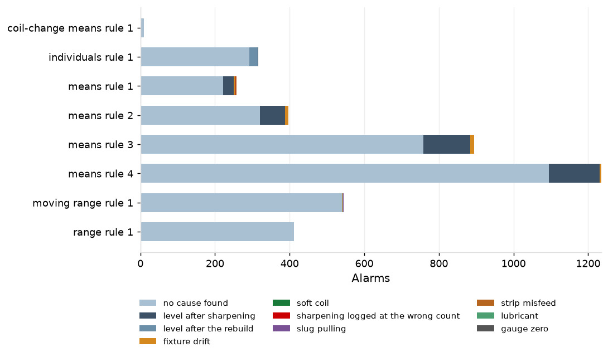
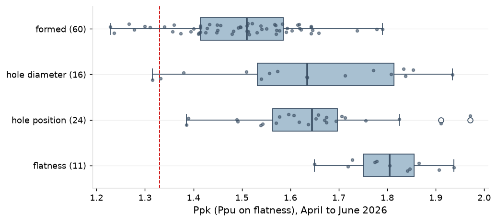
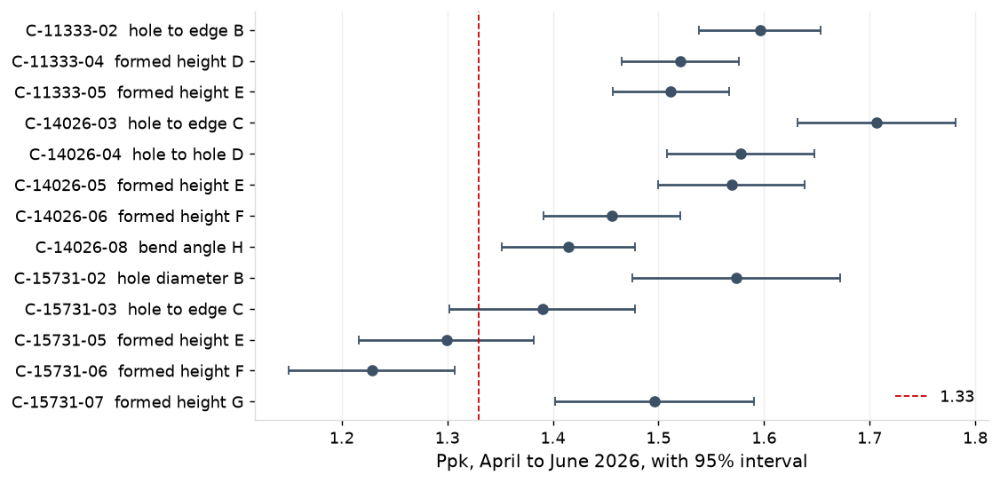
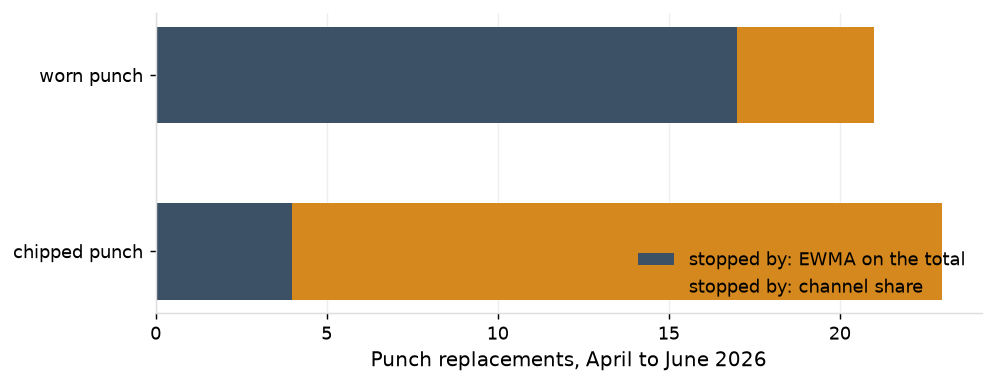

1. Summary
The quarter ran in control. Signals on charts with no special cause came in at 1.23 times the expected false-alarm rate, every assignable cause found was closed inside the quarter, capability held above 1.33 on 93 of 100 critical characteristics, no gauge fed a chart without a current calibration and study, and 19 of 583 run starts were held at the first piece.
| Measure | April to June 2026 |
|---|---|
| Signals per 100 routine subgroups, charts with no special cause | 3.80 observed against 3.08 expected |
| Assignable causes found and closed | 418 alarms on 21 runs, all closed by 30 June |
| Ppk, median by class (critical characteristics) | formed 1.51; hole position 1.64; hole diameter 1.63; flatness Ppu 1.81 |
| Charts fed by a gauge out of gating status at 30 June | 0 of 897; 16 gauges on a restudy schedule |
| First-piece holds | 19 of 583 run starts, median 62 minutes to release |
Six special causes were caught by the chart designed to catch them.
- A chipped punch on D-1333-C (PR-03), stopped by the per-stroke EWMA at 10:55 on 13 May at stroke 239,498, 34 strokes after the onset; punch replaced, press restarted at 11:55.
- A soft coil on P-15731, caught by rule 1 on the coil-change chart on 27 May: certificate hardness 36.6 HRB at the low end of the C110 coils on record (median 40.2); coil held, die centred, certificate queried with the supplier, closed the same afternoon.
- Fixture F-14026 drifting, first seen as 30 alarms on P-14026's charts on 28 and 29 May, confirmed by the daily verification on 2 June (0.019 mm against 0.016), restudied at 16.7% of tolerance, pulled, rebuilt and back in service on 18 June at 5.3%.
- Burr check operator E-1006 below the requalification line on 14 April at kappa 0.66, requalified on 28 April at 0.83.
- A sharpening logged at the wrong count on D-0417-B (PR-06), caught by rule 1 on the regression chart on 16 May and corrected in the die log the same day.
- A first-piece hold on PR-09 on 9 June, C-37771-04 out of tolerance after the die repair of 8 June; die adjusted and released in 44 minutes.
Six further assignable causes were found and closed: two slug pulling, two strip misfeed, one lubricant, one gauge zero.
2. Signals and reaction
Signals ran at 1.23 times the expected false-alarm rate, and the 418 with an assignable cause were acknowledged in a median 3 minutes and closed in a median 2 hours. The quarter raised 4,066 alarms on 3,120 subgroups; 3,648 were closed as no cause found in a median 24 minutes, by a recheck on a second gauge, five more parts measured, or the next subgroup within limits.
By chart type, X-bar and R ran at 1.42 times expectation, three-way at 0.92 and regression at 2.19. The excess on X-bar and R and regression charts sits on rules 3 and 4 under long-held limits, as the design revalidation found; the three-way charts run at their design rate.

| Chart | Routine subgroups | Signals | Observed per 100 | Expected per 100 | Observed over expected |
|---|---|---|---|---|---|
| X-bar and R | 26,744 | 1,317 | 4.92 | 3.47 | 1.42 |
| three-way | 26,092 | 662 | 2.54 | 2.74 | 0.92 |
| regression | 2,117 | 110 | 5.20 | 2.38 | 2.19 |
PR-04 ran highest, at 5.27 per 100 against 3.16 expected, and PR-08 and PR-10 ran below expectation. The 356 alarms dispositioned "level after sharpening" fall on 12 runs where a die came back from sharpening at a new level and its verification failed; they are the verification doing its work, and each started a new baseline.

| Cause | Alarms | Minutes to acknowledge, median | Minutes to acknowledge, longest | Minutes to close, median | Minutes to close, longest |
|---|---|---|---|---|---|
| fixture drift | 30 | 2.8 | 5.5 | 118.0 | 243.9 |
| gauge zero | 2 | 5.5 | 5.5 | 116.5 | 116.5 |
| level after sharpening | 356 | 3.2 | 6.0 | 130.3 | 240.3 |
| level after the rebuild | 23 | 3.3 | 5.9 | 159.7 | 240.1 |
| lubricant | 1 | 1.7 | 1.7 | 66.5 | 66.5 |
| sharpening logged at the wrong count | 1 | 4.1 | 4.1 | 120.8 | 120.8 |
| slug pulling | 2 | 2.9 | 3.0 | 165.4 | 181.5 |
| soft coil | 1 | 4.1 | 4.1 | 201.5 | 201.5 |
| strip misfeed | 2 | 4.4 | 5.1 | 175.9 | 186.7 |
The family's charts raised 484 alarms in the quarter, 54 with an assignable cause: the 30 fixture-drift alarms on P-14026 on 28 and 29 May, 23 on P-14026 after its rebuild of 28 May, whose verification failed on 30 June, and the soft coil on C-15731-07. The other 430 were closed as no cause found.
| Raised | Characteristic | Chart | Rule | Subgroup | Disposition | Cause | Minutes to acknowledge | Minutes to close |
|---|---|---|---|---|---|---|---|---|
| 3 Apr 15:26 | C-14026-08 | range | 1 | coil-change | no cause found | 5.8 | 33.1 | |
| 3 Apr 15:57 | C-14026-04 | means | 3 | routine | no cause found | 2.2 | 31.5 | |
| 3 Apr 16:38 | C-14026-04 | means | 3 | routine | no cause found | 5.9 | 20.4 | |
| 3 Apr 16:59 | C-14026-04 | means | 3 | routine | no cause found | 0.5 | 25.1 | |
| 3 Apr 17:29 | C-14026-04 | means | 3 | routine | no cause found | 4.6 | 35.3 | |
| 3 Apr 18:00 | C-14026-04 | means | 3 | routine | no cause found | 1.2 | 35.2 | |
| 3 Apr 18:32 | C-14026-04 | means | 4 | routine | no cause found | 4.0 | 16.2 | |
| 3 Apr 18:32 | C-14026-08 | range | 1 | routine | no cause found | 4.9 | 39.4 | |
| 3 Apr 18:32 | C-14026-05 | moving range | 1 | routine | no cause found | 1.5 | 10.3 | |
| 3 Apr 20:59 | C-14026-08 | individuals | 1 | routine | no cause found | 4.7 | 29.8 | |
| 6 Apr 06:33 | C-14026-09 | range | 1 | routine | no cause found | 2.5 | 14.5 | |
| 6 Apr 07:32 | C-14026-06 | individuals | 1 | routine | no cause found | 3.5 | 11.8 | |
| 6 Apr 08:03 | C-14026-08 | individuals | 1 | routine | no cause found | 0.3 | 18.5 | |
| 6 Apr 08:03 | C-14026-09 | means | 1 | routine | no cause found | 2.0 | 26.2 | |
| 6 Apr 08:03 | C-14026-09 | range | 1 | routine | no cause found | 2.0 | 26.2 | |
| 6 Apr 09:33 | C-14026-03 | means | 2 | routine | no cause found | 4.3 | 36.4 | |
| 6 Apr 10:03 | C-14026-04 | range | 1 | routine | no cause found | 5.5 | 27.2 | |
| 6 Apr 11:33 | C-14026-04 | means | 4 | routine | no cause found | 0.3 | 17.8 | |
| 6 Apr 11:40 | C-14026-04 | means | 4 | coil-change | no cause found | 5.6 | 28.1 | |
| 6 Apr 11:57 | C-14026-04 | means | 4 | routine | no cause found | 3.0 | 29.2 | |
| 6 Apr 13:00 | C-14026-07 | moving range | 1 | routine | no cause found | 4.4 | 35.8 | |
| 6 Apr 13:34 | C-14026-07 | moving range | 1 | routine | no cause found | 5.8 | 37.0 | |
| 10 Apr 06:27 | C-11333-02 | means | 2 | routine | no cause found | 4.8 | 20.8 | |
| 10 Apr 16:01 | C-11333-04 | range | 1 | routine | no cause found | 3.0 | 21.1 | |
| 13 Apr 16:06 | C-11333-05 | moving range | 1 | routine | no cause found | 3.4 | 20.2 | |
| 23 Apr 15:28 | C-14026-08 | individuals | 1 | routine | no cause found | 5.7 | 35.7 | |
| 23 Apr 17:02 | C-14026-07 | moving range | 1 | routine | no cause found | 2.8 | 18.5 | |
| 23 Apr 17:33 | C-14026-07 | moving range | 1 | routine | no cause found | 1.4 | 11.3 | |
| 23 Apr 19:28 | C-14026-03 | means | 4 | routine | no cause found | 2.3 | 11.8 | |
| 23 Apr 22:28 | C-14026-07 | moving range | 1 | routine | no cause found | 3.6 | 24.6 | |
| 28 Apr 11:33 | C-14026-08 | range | 1 | routine | no cause found | 3.8 | 30.8 | |
| 28 Apr 12:30 | C-14026-04 | means | 3 | routine | no cause found | 3.5 | 36.3 | |
| 28 Apr 12:59 | C-14026-04 | means | 3 | routine | no cause found | 3.4 | 12.1 | |
| 28 Apr 13:33 | C-14026-05 | individuals | 1 | routine | no cause found | 2.4 | 27.2 | |
| 28 Apr 13:34 | C-14026-04 | means | 3 | routine | no cause found | 2.8 | 21.5 | |
| 28 Apr 13:34 | C-14026-04 | means | 4 | routine | no cause found | 2.8 | 21.5 | |
| 28 Apr 14:02 | C-14026-04 | means | 4 | routine | no cause found | 3.1 | 37.5 | |
| 28 Apr 14:33 | C-14026-04 | means | 4 | routine | no cause found | 2.6 | 30.9 | |
| 28 Apr 19:27 | C-14026-04 | means | 1 | routine | no cause found | 3.3 | 26.9 | |
| 28 Apr 19:27 | C-14026-04 | means | 2 | routine | no cause found | 3.3 | 26.9 | |
| 28 Apr 21:04 | C-14026-04 | means | 3 | routine | no cause found | 5.0 | 30.9 | |
| 28 Apr 21:27 | C-14026-04 | means | 3 | routine | no cause found | 5.4 | 25.0 | |
| 29 Apr 13:02 | C-15731-07 | range | 1 | routine | no cause found | 1.9 | 21.5 | |
| 29 Apr 13:02 | C-15731-08 | range | 1 | routine | no cause found | 2.0 | 11.9 | |
| 29 Apr 14:32 | C-15731-08 | range | 1 | routine | no cause found | 4.4 | 12.8 | |
| 29 Apr 14:58 | C-15731-07 | moving range | 1 | routine | no cause found | 1.5 | 27.4 | |
| 29 Apr 15:32 | C-15731-03 | range | 1 | routine | no cause found | 2.4 | 19.8 | |
| 29 Apr 18:03 | C-15731-04 | range | 1 | routine | no cause found | 4.8 | 14.5 | |
| 29 Apr 19:38 | C-15731-07 | range | 1 | routine | no cause found | 3.8 | 33.0 | |
| 29 Apr 21:43 | C-15731-07 | range | 1 | routine | no cause found | 4.8 | 13.9 | |
| 29 Apr 22:58 | C-15731-03 | range | 1 | routine | no cause found | 5.0 | 27.8 | |
| 30 Apr 06:32 | C-15731-09 | range | 1 | routine | no cause found | 1.9 | 24.1 | |
| 30 Apr 10:00 | C-15731-06 | moving range | 1 | routine | no cause found | 0.5 | 19.4 | |
| 30 Apr 16:02 | C-15731-03 | means | 1 | routine | no cause found | 1.6 | 16.4 | |
| 30 Apr 16:02 | C-15731-03 | means | 2 | routine | no cause found | 1.6 | 16.4 | |
| 30 Apr 16:02 | C-15731-03 | means | 3 | routine | no cause found | 1.6 | 16.4 | |
| 30 Apr 17:01 | C-15731-03 | range | 1 | routine | no cause found | 2.2 | 30.2 | |
| 30 Apr 18:02 | C-15731-03 | means | 1 | routine | no cause found | 1.9 | 16.2 | |
| 1 May 09:01 | C-11333-05 | individuals | 1 | routine | no cause found | 1.7 | 21.6 | |
| 1 May 09:35 | C-11333-05 | moving range | 1 | routine | no cause found | 3.3 | 22.2 | |
| 1 May 16:04 | C-11333-03 | means | 1 | routine | no cause found | 2.8 | 32.1 | |
| 1 May 18:00 | C-11333-06 | individuals | 1 | routine | no cause found | 4.4 | 31.8 | |
| 1 May 18:00 | C-11333-06 | moving range | 1 | routine | no cause found | 4.4 | 31.8 | |
| 1 May 22:58 | C-11333-06 | moving range | 1 | routine | no cause found | 4.2 | 34.5 | |
| 4 May 09:28 | C-11333-03 | range | 1 | routine | no cause found | 4.4 | 27.1 | |
| 4 May 14:04 | C-11333-03 | range | 1 | routine | no cause found | 2.9 | 24.3 | |
| 4 May 18:01 | C-11333-06 | moving range | 1 | routine | no cause found | 0.4 | 20.5 | |
| 4 May 21:32 | C-11333-05 | individuals | 1 | routine | no cause found | 4.9 | 18.2 | |
| 4 May 22:59 | C-11333-03 | range | 1 | routine | no cause found | 5.5 | 33.2 | |
| 5 May 06:33 | C-11333-03 | means | 2 | routine | no cause found | 5.0 | 26.2 | |
| 5 May 07:32 | C-11333-02 | means | 3 | routine | no cause found | 2.3 | 21.1 | |
| 5 May 22:03 | C-14026-04 | means | 4 | routine | no cause found | 0.6 | 19.1 | |
| 5 May 22:32 | C-14026-04 | means | 2 | routine | no cause found | 2.4 | 17.1 | |
| 5 May 22:32 | C-14026-04 | means | 3 | routine | no cause found | 2.4 | 17.1 | |
| 5 May 22:32 | C-14026-04 | means | 4 | routine | no cause found | 2.4 | 17.1 | |
| 6 May 06:01 | C-14026-04 | means | 2 | routine | no cause found | 3.3 | 19.1 | |
| 6 May 06:01 | C-14026-04 | means | 3 | routine | no cause found | 3.3 | 19.1 | |
| 6 May 06:01 | C-14026-04 | means | 4 | routine | no cause found | 3.3 | 19.1 | |
| 6 May 06:03 | C-14026-04 | means | 2 | routine | no cause found | 5.3 | 20.7 | |
| 6 May 06:03 | C-14026-04 | means | 3 | routine | no cause found | 5.3 | 20.7 | |
| 6 May 06:03 | C-14026-04 | means | 4 | routine | no cause found | 5.3 | 20.7 | |
| 6 May 06:31 | C-14026-04 | means | 2 | routine | no cause found | 4.0 | 18.6 | |
| 6 May 06:31 | C-14026-04 | means | 3 | routine | no cause found | 4.0 | 18.6 | |
| 6 May 06:31 | C-14026-04 | means | 4 | routine | no cause found | 4.0 | 18.6 | |
| 6 May 07:00 | C-14026-04 | means | 2 | routine | no cause found | 5.4 | 34.7 | |
| 6 May 07:00 | C-14026-04 | means | 3 | routine | no cause found | 5.4 | 34.7 | |
| 6 May 07:00 | C-14026-04 | means | 4 | routine | no cause found | 5.4 | 34.7 | |
| 6 May 08:02 | C-14026-04 | means | 3 | routine | no cause found | 3.9 | 30.5 | |
| 6 May 08:29 | C-14026-04 | means | 3 | routine | no cause found | 0.7 | 11.3 | |
| 6 May 08:29 | C-14026-08 | individuals | 1 | routine | no cause found | 1.7 | 16.0 | |
| 6 May 09:03 | C-14026-06 | moving range | 1 | routine | no cause found | 2.1 | 30.1 | |
| 6 May 09:34 | C-14026-08 | individuals | 1 | routine | no cause found | 2.2 | 14.0 | |
| 6 May 10:01 | C-14026-04 | means | 1 | routine | no cause found | 0.6 | 24.9 | |
| 6 May 10:01 | C-14026-04 | means | 3 | routine | no cause found | 0.6 | 24.9 | |
| 6 May 10:29 | C-14026-04 | means | 1 | routine | no cause found | 4.8 | 14.4 | |
| 6 May 10:29 | C-14026-04 | means | 2 | routine | no cause found | 4.8 | 14.4 | |
| 6 May 10:29 | C-14026-04 | means | 3 | routine | no cause found | 4.8 | 14.4 | |
| 6 May 10:57 | C-14026-04 | means | 3 | routine | no cause found | 5.3 | 28.5 | |
| 6 May 10:57 | C-14026-08 | individuals | 1 | routine | no cause found | 3.4 | 26.8 | |
| 6 May 11:32 | C-14026-08 | individuals | 1 | routine | no cause found | 1.9 | 27.8 | |
| 6 May 11:32 | C-14026-04 | means | 3 | routine | no cause found | 4.1 | 15.6 | |
| 6 May 11:32 | C-14026-04 | means | 4 | routine | no cause found | 4.1 | 15.6 | |
| 6 May 12:00 | C-14026-04 | means | 3 | routine | no cause found | 5.8 | 14.6 | |
| 6 May 12:00 | C-14026-04 | means | 4 | routine | no cause found | 5.8 | 14.6 | |
| 6 May 13:07 | C-14026-08 | individuals | 1 | routine | no cause found | 1.1 | 17.0 | |
| 6 May 13:07 | C-14026-08 | moving range | 1 | routine | no cause found | 1.1 | 17.0 | |
| 6 May 13:07 | C-14026-04 | means | 2 | routine | no cause found | 1.1 | 20.7 | |
| 6 May 13:07 | C-14026-04 | means | 3 | routine | no cause found | 1.1 | 20.7 | |
| 6 May 13:29 | C-14026-04 | means | 2 | routine | no cause found | 2.1 | 33.3 | |
| 6 May 13:29 | C-14026-04 | means | 3 | routine | no cause found | 2.1 | 33.3 | |
| 6 May 13:58 | C-14026-04 | means | 3 | routine | no cause found | 0.8 | 16.0 | |
| 6 May 14:30 | C-14026-04 | means | 2 | routine | no cause found | 1.8 | 20.8 | |
| 6 May 14:30 | C-14026-04 | means | 3 | routine | no cause found | 1.8 | 20.8 | |
| 6 May 15:29 | C-14026-08 | individuals | 1 | routine | no cause found | 1.9 | 23.9 | |
| 6 May 15:29 | C-14026-04 | means | 2 | routine | no cause found | 3.5 | 16.1 | |
| 6 May 15:29 | C-14026-04 | means | 3 | routine | no cause found | 3.5 | 16.1 | |
| 6 May 16:31 | C-14026-03 | means | 4 | routine | no cause found | 1.3 | 11.2 | |
| 6 May 16:31 | C-14026-04 | means | 1 | routine | no cause found | 3.2 | 17.0 | |
| 6 May 16:31 | C-14026-04 | means | 2 | routine | no cause found | 3.2 | 17.0 | |
| 6 May 17:02 | C-14026-03 | means | 4 | routine | no cause found | 5.2 | 18.6 | |
| 6 May 17:02 | C-14026-04 | means | 2 | routine | no cause found | 1.8 | 35.2 | |
| 6 May 17:54 | C-14026-03 | means | 4 | coil-change | no cause found | 1.2 | 31.6 | |
| 6 May 18:29 | C-14026-03 | means | 4 | routine | no cause found | 5.5 | 17.3 | |
| 6 May 18:39 | C-14026-04 | means | 1 | last-piece | no cause found | 2.7 | 17.1 | |
| 6 May 18:40 | C-14026-09 | means | 2 | last-piece | no cause found | 3.1 | 37.3 | |
| 11 May 07:03 | C-11333-06 | moving range | 1 | routine | no cause found | 4.4 | 28.0 | |
| 11 May 10:59 | C-11333-06 | moving range | 1 | routine | no cause found | 1.2 | 26.6 | |
| 11 May 12:04 | C-11333-03 | range | 1 | routine | no cause found | 5.0 | 38.8 | |
| 11 May 15:29 | C-11333-02 | range | 1 | routine | no cause found | 2.4 | 25.4 | |
| 12 May 15:01 | C-11333-02 | means | 4 | routine | no cause found | 3.8 | 17.0 | |
| 12 May 15:31 | C-11333-02 | means | 4 | routine | no cause found | 1.3 | 30.8 | |
| 12 May 15:32 | C-11333-05 | individuals | 1 | routine | no cause found | 5.8 | 20.6 | |
| 12 May 15:58 | C-11333-02 | means | 4 | routine | no cause found | 4.3 | 33.6 | |
| 12 May 15:58 | C-11333-05 | moving range | 1 | routine | no cause found | 5.7 | 33.6 | |
| 12 May 16:30 | C-11333-04 | moving range | 1 | routine | no cause found | 4.2 | 17.7 | |
| 12 May 17:58 | C-11333-05 | moving range | 1 | routine | no cause found | 1.3 | 35.5 | |
| 12 May 18:35 | C-11333-03 | means | 3 | routine | no cause found | 0.6 | 33.7 | |
| 13 May 06:01 | C-11333-04 | moving range | 1 | routine | no cause found | 3.4 | 34.4 | |
| 13 May 07:30 | C-11333-02 | means | 3 | routine | no cause found | 4.8 | 22.2 | |
| 13 May 12:28 | C-11333-03 | means | 1 | routine | no cause found | 2.2 | 32.7 | |
| 14 May 14:57 | C-14026-04 | means | 3 | routine | no cause found | 3.1 | 20.4 | |
| 14 May 14:57 | C-14026-04 | means | 4 | routine | no cause found | 3.1 | 20.4 | |
| 14 May 15:29 | C-14026-04 | means | 3 | routine | no cause found | 3.1 | 25.1 | |
| 14 May 15:29 | C-14026-04 | means | 4 | routine | no cause found | 3.1 | 25.1 | |
| 14 May 16:04 | C-14026-04 | means | 3 | routine | no cause found | 0.9 | 24.2 | |
| 14 May 16:04 | C-14026-04 | means | 4 | routine | no cause found | 0.9 | 24.2 | |
| 14 May 16:33 | C-14026-04 | means | 4 | routine | no cause found | 2.9 | 31.4 | |
| 14 May 17:04 | C-14026-04 | means | 3 | routine | no cause found | 4.1 | 38.6 | |
| 14 May 17:04 | C-14026-04 | means | 4 | routine | no cause found | 4.1 | 38.6 | |
| 14 May 17:33 | C-14026-04 | means | 3 | routine | no cause found | 4.0 | 22.8 | |
| 14 May 17:33 | C-14026-04 | means | 4 | routine | no cause found | 4.0 | 22.8 | |
| 14 May 17:59 | C-14026-04 | means | 1 | routine | no cause found | 3.7 | 17.7 | |
| 14 May 17:59 | C-14026-04 | means | 2 | routine | no cause found | 3.7 | 17.7 | |
| 14 May 17:59 | C-14026-04 | means | 3 | routine | no cause found | 3.7 | 17.7 | |
| 14 May 17:59 | C-14026-04 | means | 4 | routine | no cause found | 3.7 | 17.7 | |
| 14 May 18:13 | C-14026-03 | range | 1 | routine | no cause found | 4.4 | 37.3 | |
| 14 May 18:33 | C-14026-04 | means | 3 | routine | no cause found | 5.9 | 21.8 | |
| 14 May 18:33 | C-14026-04 | means | 4 | routine | no cause found | 5.9 | 21.8 | |
| 14 May 19:03 | C-14026-04 | means | 4 | routine | no cause found | 0.4 | 27.8 | |
| 14 May 20:59 | C-14026-04 | range | 1 | routine | no cause found | 5.2 | 20.8 | |
| 15 May 06:25 | C-14026-04 | means | 2 | last-piece | no cause found | 3.4 | 13.6 | |
| 26 May 14:48 | C-15731-08 | individuals | 1 | coil-change | no cause found | 1.6 | 11.8 | |
| 26 May 16:01 | C-15731-03 | means | 3 | routine | no cause found | 1.2 | 30.4 | |
| 26 May 16:01 | C-15731-06 | individuals | 1 | routine | no cause found | 0.5 | 16.9 | |
| 26 May 17:32 | C-15731-04 | range | 1 | routine | no cause found | 4.3 | 32.6 | |
| 26 May 22:00 | C-15731-04 | means | 3 | routine | no cause found | 2.1 | 18.8 | |
| 26 May 22:59 | C-15731-03 | range | 1 | routine | no cause found | 4.0 | 30.3 | |
| 26 May 22:59 | C-15731-06 | individuals | 1 | routine | no cause found | 0.9 | 9.9 | |
| 26 May 22:59 | C-15731-06 | moving range | 1 | routine | no cause found | 0.9 | 9.9 | |
| 27 May 09:00 | C-15731-03 | means | 4 | routine | no cause found | 4.0 | 37.8 | |
| 27 May 09:56 | C-15731-03 | means | 4 | routine | no cause found | 4.4 | 17.8 | |
| 27 May 09:59 | C-15731-03 | means | 4 | routine | no cause found | 5.0 | 15.9 | |
| 27 May 10:32 | C-15731-03 | means | 4 | routine | no cause found | 5.4 | 29.1 | |
| 27 May 11:57 | C-15731-08 | moving range | 1 | routine | no cause found | 4.2 | 19.2 | |
| 27 May 12:58 | C-15731-07 | coil-change means | 1 | coil-change | assignable cause found | soft coil | 4.1 | 201.5 |
| 27 May 13:09 | C-15731-06 | moving range | 1 | routine | no cause found | 5.0 | 39.8 | |
| 27 May 18:01 | C-15731-03 | means | 3 | routine | no cause found | 3.2 | 26.3 | |
| 27 May 18:29 | C-15731-03 | means | 3 | routine | no cause found | 1.8 | 10.7 | |
| 27 May 20:05 | C-15731-03 | means | 3 | routine | no cause found | 2.9 | 30.6 | |
| 27 May 20:06 | C-15731-06 | moving range | 1 | routine | no cause found | 5.1 | 26.2 | |
| 27 May 20:31 | C-15731-06 | individuals | 1 | routine | no cause found | 2.9 | 32.5 | |
| 27 May 20:31 | C-15731-05 | individuals | 1 | routine | no cause found | 1.9 | 23.6 | |
| 27 May 20:31 | C-15731-03 | means | 3 | routine | no cause found | 5.7 | 35.4 | |
| 27 May 22:01 | C-15731-03 | range | 1 | routine | no cause found | 4.7 | 14.6 | |
| 28 May 06:02 | C-15731-03 | range | 1 | routine | no cause found | 5.5 | 36.4 | |
| 28 May 07:29 | C-15731-03 | means | 4 | routine | no cause found | 5.1 | 39.6 | |
| 28 May 13:01 | C-14026-08 | individuals | 1 | routine | assignable cause found | level after the rebuild | 2.2 | 121.5 |
| 28 May 13:01 | C-14026-08 | moving range | 1 | routine | assignable cause found | level after the rebuild | 2.2 | 121.5 |
| 28 May 13:32 | C-14026-03 | means | 1 | routine | assignable cause found | fixture drift | 5.5 | 119.7 |
| 28 May 13:32 | C-14026-03 | means | 2 | routine | assignable cause found | fixture drift | 5.5 | 119.7 |
| 28 May 14:30 | C-14026-03 | means | 3 | routine | assignable cause found | fixture drift | 0.9 | 176.8 |
| 28 May 15:01 | C-14026-03 | means | 3 | routine | assignable cause found | fixture drift | 4.0 | 223.5 |
| 28 May 15:32 | C-14026-03 | means | 2 | routine | assignable cause found | fixture drift | 1.7 | 173.2 |
| 28 May 15:32 | C-14026-03 | means | 3 | routine | assignable cause found | fixture drift | 1.7 | 173.2 |
| 28 May 16:00 | C-14026-03 | means | 3 | routine | assignable cause found | fixture drift | 1.6 | 94.6 |
| 28 May 16:28 | C-14026-03 | means | 3 | routine | assignable cause found | fixture drift | 2.7 | 91.7 |
| 28 May 17:03 | C-14026-03 | means | 3 | routine | assignable cause found | fixture drift | 2.5 | 140.8 |
| 28 May 17:04 | C-14026-04 | means | 2 | routine | assignable cause found | fixture drift | 3.8 | 116.4 |
| 28 May 17:32 | C-14026-03 | means | 1 | routine | assignable cause found | fixture drift | 3.1 | 55.3 |
| 28 May 17:32 | C-14026-03 | means | 2 | routine | assignable cause found | fixture drift | 3.1 | 55.3 |
| 28 May 17:32 | C-14026-03 | means | 3 | routine | assignable cause found | fixture drift | 3.1 | 55.3 |
| 28 May 18:38 | C-14026-09 | means | 2 | routine | no cause found | 5.8 | 14.3 | |
| 28 May 18:38 | C-14026-03 | means | 2 | routine | assignable cause found | fixture drift | 1.8 | 109.1 |
| 28 May 18:38 | C-14026-03 | means | 3 | routine | assignable cause found | fixture drift | 1.8 | 109.1 |
| 28 May 19:00 | C-14026-03 | means | 2 | routine | assignable cause found | fixture drift | 4.9 | 243.9 |
| 28 May 19:00 | C-14026-03 | means | 3 | routine | assignable cause found | fixture drift | 4.9 | 243.9 |
| 28 May 19:33 | C-14026-05 | moving range | 1 | routine | assignable cause found | fixture drift | 0.9 | 50.7 |
| 28 May 19:33 | C-14026-06 | moving range | 1 | routine | assignable cause found | fixture drift | 2.8 | 164.4 |
| 28 May 22:34 | C-14026-03 | means | 1 | routine | assignable cause found | fixture drift | 4.8 | 46.6 |
| 28 May 22:34 | C-14026-03 | means | 2 | routine | assignable cause found | fixture drift | 4.8 | 46.6 |
| 29 May 06:06 | C-14026-03 | means | 2 | routine | assignable cause found | fixture drift | 2.4 | 74.5 |
| 29 May 06:32 | C-14026-03 | means | 2 | routine | assignable cause found | fixture drift | 0.8 | 49.1 |
| 29 May 06:32 | C-14026-03 | means | 4 | routine | assignable cause found | fixture drift | 0.8 | 49.1 |
| 29 May 07:01 | C-14026-03 | means | 4 | routine | assignable cause found | fixture drift | 4.8 | 72.6 |
| 29 May 07:59 | C-14026-03 | means | 2 | routine | assignable cause found | fixture drift | 2.6 | 224.4 |
| 29 May 07:59 | C-14026-03 | means | 4 | routine | assignable cause found | fixture drift | 2.6 | 224.4 |
| 29 May 08:29 | C-14026-04 | means | 3 | routine | assignable cause found | fixture drift | 2.8 | 168.1 |
| 29 May 08:29 | C-14026-03 | means | 3 | routine | assignable cause found | fixture drift | 3.1 | 120.2 |
| 29 May 08:29 | C-14026-03 | means | 4 | routine | assignable cause found | fixture drift | 3.1 | 120.2 |
| 5 Jun 16:07 | C-11333-05 | range | 1 | routine | no cause found | 1.8 | 19.8 | |
| 5 Jun 17:34 | C-11333-02 | means | 4 | routine | no cause found | 1.5 | 12.8 | |
| 5 Jun 17:59 | C-11333-02 | means | 4 | routine | no cause found | 6.0 | 30.6 | |
| 5 Jun 18:33 | C-11333-02 | means | 4 | routine | no cause found | 2.7 | 19.7 | |
| 8 Jun 08:59 | C-11333-02 | means | 3 | routine | no cause found | 3.0 | 23.6 | |
| 8 Jun 12:03 | C-11333-04 | moving range | 1 | routine | no cause found | 3.6 | 17.2 | |
| 9 Jun 06:03 | C-11333-02 | range | 1 | routine | no cause found | 2.4 | 11.8 | |
| 9 Jun 07:58 | C-11333-03 | range | 1 | routine | no cause found | 4.5 | 15.5 | |
| 9 Jun 10:32 | C-11333-06 | moving range | 1 | routine | no cause found | 1.9 | 30.2 | |
| 9 Jun 17:07 | C-11333-04 | range | 1 | routine | no cause found | 1.7 | 22.9 | |
| 18 Jun 20:02 | C-14026-03 | means | 1 | routine | no cause found | 4.9 | 25.3 | |
| 18 Jun 20:02 | C-14026-03 | means | 2 | routine | no cause found | 4.9 | 25.3 | |
| 18 Jun 20:03 | C-14026-08 | individuals | 1 | routine | assignable cause found | level after the rebuild | 5.1 | 221.6 |
| 18 Jun 20:29 | C-14026-03 | means | 2 | routine | no cause found | 3.0 | 26.4 | |
| 18 Jun 21:04 | C-14026-03 | means | 3 | routine | no cause found | 1.4 | 23.5 | |
| 18 Jun 21:04 | C-14026-03 | means | 4 | routine | no cause found | 1.4 | 23.5 | |
| 18 Jun 21:04 | C-14026-04 | means | 1 | routine | no cause found | 4.1 | 31.7 | |
| 18 Jun 21:31 | C-14026-08 | individuals | 1 | routine | assignable cause found | level after the rebuild | 3.8 | 192.6 |
| 18 Jun 21:32 | C-14026-03 | means | 3 | routine | no cause found | 2.2 | 24.3 | |
| 18 Jun 21:32 | C-14026-03 | means | 4 | routine | no cause found | 2.2 | 24.3 | |
| 18 Jun 22:03 | C-14026-03 | means | 3 | routine | no cause found | 1.6 | 28.1 | |
| 18 Jun 22:03 | C-14026-03 | means | 4 | routine | no cause found | 1.6 | 28.1 | |
| 18 Jun 22:03 | C-14026-08 | individuals | 1 | routine | assignable cause found | level after the rebuild | 3.8 | 63.9 |
| 18 Jun 22:03 | C-14026-09 | means | 4 | routine | no cause found | 2.6 | 32.2 | |
| 18 Jun 22:03 | C-14026-04 | means | 4 | routine | no cause found | 4.3 | 37.3 | |
| 18 Jun 22:28 | C-14026-08 | individuals | 1 | routine | assignable cause found | level after the rebuild | 5.5 | 126.6 |
| 18 Jun 22:28 | C-14026-09 | means | 1 | routine | no cause found | 0.8 | 30.7 | |
| 18 Jun 22:29 | C-14026-04 | means | 4 | routine | no cause found | 3.3 | 15.1 | |
| 18 Jun 22:29 | C-14026-03 | means | 4 | routine | no cause found | 2.4 | 34.8 | |
| 18 Jun 22:58 | C-14026-04 | means | 1 | routine | no cause found | 3.9 | 14.8 | |
| 18 Jun 22:58 | C-14026-04 | means | 4 | routine | no cause found | 3.9 | 14.8 | |
| 18 Jun 22:58 | C-14026-04 | means | 4 | routine | no cause found | 4.3 | 38.7 | |
| 18 Jun 22:58 | C-14026-04 | range | 1 | routine | no cause found | 4.3 | 38.7 | |
| 18 Jun 22:58 | C-14026-03 | means | 1 | routine | no cause found | 1.5 | 28.8 | |
| 18 Jun 22:58 | C-14026-03 | means | 3 | routine | no cause found | 1.5 | 28.8 | |
| 18 Jun 22:58 | C-14026-03 | means | 4 | routine | no cause found | 1.5 | 28.8 | |
| 18 Jun 22:58 | C-14026-08 | individuals | 1 | routine | assignable cause found | level after the rebuild | 4.4 | 233.5 |
| 18 Jun 22:59 | C-14026-03 | means | 1 | routine | no cause found | 5.1 | 22.7 | |
| 18 Jun 22:59 | C-14026-03 | means | 2 | routine | no cause found | 5.1 | 22.7 | |
| 18 Jun 22:59 | C-14026-03 | means | 3 | routine | no cause found | 5.1 | 22.7 | |
| 18 Jun 22:59 | C-14026-03 | means | 4 | routine | no cause found | 5.1 | 22.7 | |
| 19 Jun 06:27 | C-14026-04 | means | 4 | routine | no cause found | 2.8 | 32.5 | |
| 19 Jun 06:27 | C-14026-08 | individuals | 1 | routine | assignable cause found | level after the rebuild | 0.4 | 184.9 |
| 19 Jun 06:28 | C-14026-03 | means | 2 | routine | no cause found | 1.5 | 14.4 | |
| 19 Jun 06:28 | C-14026-03 | means | 3 | routine | no cause found | 1.5 | 14.4 | |
| 19 Jun 06:28 | C-14026-03 | means | 4 | routine | no cause found | 1.5 | 14.4 | |
| 19 Jun 07:03 | C-14026-04 | means | 4 | routine | no cause found | 5.1 | 17.3 | |
| 19 Jun 07:03 | C-14026-08 | individuals | 1 | routine | assignable cause found | level after the rebuild | 1.4 | 199.9 |
| 19 Jun 07:03 | C-14026-03 | means | 1 | routine | no cause found | 3.0 | 26.1 | |
| 19 Jun 07:03 | C-14026-03 | means | 2 | routine | no cause found | 3.0 | 26.1 | |
| 19 Jun 07:03 | C-14026-03 | means | 3 | routine | no cause found | 3.0 | 26.1 | |
| 19 Jun 07:03 | C-14026-03 | means | 4 | routine | no cause found | 3.0 | 26.1 | |
| 19 Jun 07:32 | C-14026-03 | means | 3 | routine | no cause found | 2.3 | 28.9 | |
| 19 Jun 07:32 | C-14026-03 | means | 4 | routine | no cause found | 2.3 | 28.9 | |
| 19 Jun 07:32 | C-14026-04 | means | 1 | routine | no cause found | 0.7 | 9.5 | |
| 19 Jun 07:32 | C-14026-04 | means | 4 | routine | no cause found | 0.7 | 9.5 | |
| 19 Jun 08:01 | C-14026-04 | means | 2 | routine | no cause found | 2.5 | 28.8 | |
| 19 Jun 08:01 | C-14026-04 | means | 3 | routine | no cause found | 2.5 | 28.8 | |
| 19 Jun 08:01 | C-14026-04 | means | 4 | routine | no cause found | 2.5 | 28.8 | |
| 19 Jun 08:01 | C-14026-03 | means | 4 | routine | no cause found | 0.9 | 22.1 | |
| 19 Jun 08:32 | C-14026-03 | means | 3 | routine | no cause found | 5.3 | 14.9 | |
| 19 Jun 08:32 | C-14026-03 | means | 4 | routine | no cause found | 5.3 | 14.9 | |
| 19 Jun 08:32 | C-14026-04 | means | 1 | routine | no cause found | 2.1 | 34.6 | |
| 19 Jun 08:32 | C-14026-04 | means | 2 | routine | no cause found | 2.1 | 34.6 | |
| 19 Jun 08:32 | C-14026-04 | means | 3 | routine | no cause found | 2.1 | 34.6 | |
| 19 Jun 08:32 | C-14026-04 | means | 4 | routine | no cause found | 2.1 | 34.6 | |
| 19 Jun 09:00 | C-14026-04 | means | 1 | routine | no cause found | 1.2 | 19.1 | |
| 19 Jun 09:00 | C-14026-04 | means | 2 | routine | no cause found | 1.2 | 19.1 | |
| 19 Jun 09:00 | C-14026-04 | means | 3 | routine | no cause found | 1.2 | 19.1 | |
| 19 Jun 09:00 | C-14026-04 | means | 4 | routine | no cause found | 1.2 | 19.1 | |
| 19 Jun 09:00 | C-14026-03 | means | 1 | routine | no cause found | 4.6 | 24.6 | |
| 19 Jun 09:00 | C-14026-03 | means | 2 | routine | no cause found | 4.6 | 24.6 | |
| 19 Jun 09:00 | C-14026-03 | means | 3 | routine | no cause found | 4.6 | 24.6 | |
| 19 Jun 09:00 | C-14026-03 | means | 4 | routine | no cause found | 4.6 | 24.6 | |
| 19 Jun 09:00 | C-14026-08 | individuals | 1 | routine | assignable cause found | level after the rebuild | 5.8 | 228.8 |
| 19 Jun 09:33 | C-14026-04 | means | 1 | routine | no cause found | 0.6 | 19.7 | |
| 19 Jun 09:33 | C-14026-04 | means | 2 | routine | no cause found | 0.6 | 19.7 | |
| 19 Jun 09:33 | C-14026-04 | means | 3 | routine | no cause found | 0.6 | 19.7 | |
| 19 Jun 09:33 | C-14026-04 | means | 4 | routine | no cause found | 0.6 | 19.7 | |
| 19 Jun 09:33 | C-14026-03 | means | 3 | routine | no cause found | 5.9 | 17.0 | |
| 19 Jun 09:33 | C-14026-03 | means | 4 | routine | no cause found | 5.9 | 17.0 | |
| 19 Jun 09:33 | C-14026-08 | individuals | 1 | routine | assignable cause found | level after the rebuild | 2.2 | 111.3 |
| 19 Jun 10:04 | C-14026-04 | means | 3 | routine | no cause found | 1.8 | 33.9 | |
| 19 Jun 10:04 | C-14026-04 | means | 4 | routine | no cause found | 1.8 | 33.9 | |
| 19 Jun 10:33 | C-14026-03 | means | 3 | routine | no cause found | 4.5 | 27.4 | |
| 19 Jun 10:33 | C-14026-08 | individuals | 1 | routine | assignable cause found | level after the rebuild | 2.0 | 52.8 |
| 19 Jun 10:33 | C-14026-04 | means | 1 | routine | no cause found | 0.7 | 29.6 | |
| 19 Jun 10:33 | C-14026-04 | means | 2 | routine | no cause found | 0.7 | 29.6 | |
| 19 Jun 10:33 | C-14026-04 | means | 3 | routine | no cause found | 0.7 | 29.6 | |
| 19 Jun 10:33 | C-14026-04 | means | 4 | routine | no cause found | 0.7 | 29.6 | |
| 19 Jun 11:03 | C-14026-03 | means | 2 | routine | no cause found | 3.2 | 34.5 | |
| 19 Jun 11:03 | C-14026-03 | means | 3 | routine | no cause found | 3.2 | 34.5 | |
| 19 Jun 11:32 | C-14026-03 | means | 2 | routine | no cause found | 0.9 | 22.1 | |
| 19 Jun 11:32 | C-14026-03 | means | 3 | routine | no cause found | 0.9 | 22.1 | |
| 19 Jun 11:32 | C-14026-04 | means | 2 | routine | no cause found | 0.9 | 20.0 | |
| 19 Jun 11:32 | C-14026-04 | means | 3 | routine | no cause found | 0.9 | 20.0 | |
| 19 Jun 11:32 | C-14026-08 | individuals | 1 | routine | assignable cause found | level after the rebuild | 1.9 | 111.0 |
| 19 Jun 11:59 | C-14026-04 | means | 3 | routine | no cause found | 0.3 | 27.6 | |
| 19 Jun 12:28 | C-14026-08 | individuals | 1 | routine | assignable cause found | level after the rebuild | 4.5 | 191.0 |
| 19 Jun 12:29 | C-14026-03 | means | 1 | routine | no cause found | 5.1 | 39.6 | |
| 19 Jun 12:29 | C-14026-03 | means | 2 | routine | no cause found | 5.1 | 39.6 | |
| 19 Jun 12:29 | C-14026-03 | means | 3 | routine | no cause found | 5.1 | 39.6 | |
| 19 Jun 12:29 | C-14026-04 | means | 2 | routine | no cause found | 1.8 | 22.6 | |
| 19 Jun 12:29 | C-14026-04 | means | 3 | routine | no cause found | 1.8 | 22.6 | |
| 19 Jun 13:00 | C-14026-03 | means | 2 | routine | no cause found | 4.5 | 27.1 | |
| 19 Jun 13:00 | C-14026-03 | means | 3 | routine | no cause found | 4.5 | 27.1 | |
| 19 Jun 13:00 | C-14026-04 | means | 2 | routine | no cause found | 3.5 | 15.6 | |
| 19 Jun 13:00 | C-14026-04 | means | 3 | routine | no cause found | 3.5 | 15.6 | |
| 19 Jun 13:31 | C-14026-04 | means | 2 | routine | no cause found | 3.2 | 19.4 | |
| 19 Jun 13:31 | C-14026-04 | means | 3 | routine | no cause found | 3.2 | 19.4 | |
| 19 Jun 13:32 | C-14026-03 | means | 2 | routine | no cause found | 3.7 | 26.9 | |
| 19 Jun 13:32 | C-14026-03 | means | 3 | routine | no cause found | 3.7 | 26.9 | |
| 19 Jun 13:57 | C-14026-03 | means | 3 | routine | no cause found | 4.8 | 35.9 | |
| 19 Jun 13:57 | C-14026-03 | means | 4 | routine | no cause found | 4.8 | 35.9 | |
| 19 Jun 14:28 | C-14026-03 | means | 3 | routine | no cause found | 1.6 | 18.1 | |
| 19 Jun 14:28 | C-14026-03 | means | 4 | routine | no cause found | 1.6 | 18.1 | |
| 19 Jun 14:28 | C-14026-04 | means | 3 | routine | no cause found | 2.2 | 35.0 | |
| 19 Jun 14:28 | C-14026-08 | individuals | 1 | routine | assignable cause found | level after the rebuild | 5.7 | 225.7 |
| 19 Jun 15:01 | C-14026-03 | means | 3 | routine | no cause found | 2.5 | 11.4 | |
| 19 Jun 15:01 | C-14026-03 | means | 4 | routine | no cause found | 2.5 | 11.4 | |
| 19 Jun 15:01 | C-14026-08 | individuals | 1 | routine | assignable cause found | level after the rebuild | 4.1 | 129.5 |
| 19 Jun 15:27 | C-14026-03 | means | 2 | routine | no cause found | 0.8 | 31.3 | |
| 19 Jun 15:27 | C-14026-03 | means | 3 | routine | no cause found | 0.8 | 31.3 | |
| 19 Jun 15:27 | C-14026-03 | means | 4 | routine | no cause found | 0.8 | 31.3 | |
| 19 Jun 16:00 | C-14026-03 | means | 3 | routine | no cause found | 2.8 | 14.6 | |
| 19 Jun 16:00 | C-14026-03 | means | 4 | routine | no cause found | 2.8 | 14.6 | |
| 19 Jun 16:00 | C-14026-08 | individuals | 1 | routine | assignable cause found | level after the rebuild | 3.3 | 124.5 |
| 19 Jun 16:28 | C-14026-04 | means | 3 | routine | no cause found | 4.0 | 15.8 | |
| 19 Jun 16:28 | C-14026-03 | means | 2 | routine | no cause found | 1.3 | 21.9 | |
| 19 Jun 16:28 | C-14026-03 | means | 3 | routine | no cause found | 1.3 | 21.9 | |
| 19 Jun 16:28 | C-14026-03 | means | 4 | routine | no cause found | 1.3 | 21.9 | |
| 19 Jun 16:57 | C-14026-04 | means | 3 | routine | no cause found | 4.6 | 29.2 | |
| 19 Jun 16:57 | C-14026-08 | individuals | 1 | routine | assignable cause found | level after the rebuild | 3.0 | 163.9 |
| 19 Jun 16:57 | C-14026-03 | means | 3 | routine | no cause found | 1.4 | 22.4 | |
| 19 Jun 16:57 | C-14026-03 | means | 4 | routine | no cause found | 1.4 | 22.4 | |
| 19 Jun 17:32 | C-14026-03 | means | 3 | routine | no cause found | 5.8 | 14.5 | |
| 19 Jun 17:32 | C-14026-03 | means | 4 | routine | no cause found | 5.8 | 14.5 | |
| 19 Jun 17:32 | C-14026-04 | means | 3 | routine | no cause found | 2.3 | 34.0 | |
| 19 Jun 18:03 | C-14026-03 | means | 3 | routine | no cause found | 4.5 | 30.6 | |
| 19 Jun 18:03 | C-14026-03 | means | 4 | routine | no cause found | 4.5 | 30.6 | |
| 19 Jun 18:03 | C-14026-04 | means | 3 | routine | no cause found | 2.2 | 25.1 | |
| 19 Jun 18:27 | C-14026-03 | means | 3 | routine | no cause found | 5.4 | 26.8 | |
| 19 Jun 18:27 | C-14026-03 | means | 4 | routine | no cause found | 5.4 | 26.8 | |
| 19 Jun 18:27 | C-14026-08 | individuals | 1 | routine | assignable cause found | level after the rebuild | 0.4 | 93.5 |
| 19 Jun 18:27 | C-14026-04 | means | 2 | routine | no cause found | 3.4 | 14.7 | |
| 19 Jun 18:27 | C-14026-04 | means | 3 | routine | no cause found | 3.4 | 14.7 | |
| 19 Jun 19:00 | C-14026-08 | individuals | 1 | routine | assignable cause found | level after the rebuild | 5.9 | 159.7 |
| 19 Jun 19:01 | C-14026-04 | means | 2 | routine | no cause found | 3.0 | 35.8 | |
| 19 Jun 19:01 | C-14026-04 | means | 3 | routine | no cause found | 3.0 | 35.8 | |
| 19 Jun 19:01 | C-14026-04 | means | 4 | routine | no cause found | 3.0 | 35.8 | |
| 19 Jun 19:01 | C-14026-03 | means | 3 | routine | no cause found | 3.6 | 19.5 | |
| 19 Jun 19:01 | C-14026-03 | means | 4 | routine | no cause found | 3.6 | 19.5 | |
| 19 Jun 19:28 | C-14026-04 | means | 4 | routine | no cause found | 3.8 | 18.6 | |
| 19 Jun 19:28 | C-14026-03 | means | 2 | routine | no cause found | 1.4 | 12.4 | |
| 19 Jun 19:28 | C-14026-03 | means | 3 | routine | no cause found | 1.4 | 12.4 | |
| 19 Jun 19:28 | C-14026-03 | means | 4 | routine | no cause found | 1.4 | 12.4 | |
| 19 Jun 20:04 | C-14026-04 | means | 2 | routine | no cause found | 2.5 | 35.1 | |
| 19 Jun 20:04 | C-14026-04 | means | 3 | routine | no cause found | 2.5 | 35.1 | |
| 19 Jun 20:04 | C-14026-04 | means | 4 | routine | no cause found | 2.5 | 35.1 | |
| 19 Jun 20:04 | C-14026-08 | individuals | 1 | routine | assignable cause found | level after the rebuild | 0.7 | 141.1 |
| 19 Jun 20:04 | C-14026-03 | means | 2 | routine | no cause found | 3.7 | 14.7 | |
| 19 Jun 20:04 | C-14026-03 | means | 3 | routine | no cause found | 3.7 | 14.7 | |
| 19 Jun 20:04 | C-14026-03 | means | 4 | routine | no cause found | 3.7 | 14.7 | |
| 19 Jun 20:33 | C-14026-08 | individuals | 1 | routine | assignable cause found | level after the rebuild | 3.9 | 240.1 |
| 19 Jun 20:33 | C-14026-04 | means | 3 | routine | no cause found | 0.3 | 20.0 | |
| 19 Jun 20:33 | C-14026-04 | means | 4 | routine | no cause found | 0.3 | 20.0 | |
| 19 Jun 20:34 | C-14026-03 | means | 3 | routine | no cause found | 1.0 | 17.1 | |
| 19 Jun 20:34 | C-14026-03 | means | 4 | routine | no cause found | 1.0 | 17.1 | |
| 19 Jun 20:57 | C-14026-04 | means | 3 | routine | no cause found | 4.6 | 21.9 | |
| 19 Jun 20:57 | C-14026-04 | means | 4 | routine | no cause found | 4.6 | 21.9 | |
| 19 Jun 20:58 | C-14026-03 | means | 4 | routine | no cause found | 1.9 | 36.8 | |
| 19 Jun 20:58 | C-14026-08 | individuals | 1 | routine | assignable cause found | level after the rebuild | 3.0 | 174.6 |
| 19 Jun 21:34 | C-14026-03 | means | 3 | routine | no cause found | 0.5 | 23.2 | |
| 19 Jun 21:34 | C-14026-03 | means | 4 | routine | no cause found | 0.5 | 23.2 | |
| 19 Jun 21:34 | C-14026-04 | means | 1 | routine | no cause found | 1.3 | 25.5 | |
| 19 Jun 21:34 | C-14026-04 | means | 3 | routine | no cause found | 1.3 | 25.5 | |
| 19 Jun 21:34 | C-14026-04 | means | 4 | routine | no cause found | 1.3 | 25.5 | |
| 19 Jun 21:57 | C-14026-03 | means | 1 | last-piece | no cause found | 4.2 | 22.4 | |
| 19 Jun 21:57 | C-14026-03 | means | 2 | last-piece | no cause found | 4.2 | 22.4 | |
| 19 Jun 21:57 | C-14026-03 | means | 3 | last-piece | no cause found | 4.2 | 22.4 | |
| 19 Jun 21:57 | C-14026-03 | means | 4 | last-piece | no cause found | 4.2 | 22.4 | |
| 19 Jun 21:57 | C-14026-04 | means | 3 | last-piece | no cause found | 5.0 | 14.3 | |
| 19 Jun 21:57 | C-14026-04 | means | 4 | last-piece | no cause found | 5.0 | 14.3 | |
| 19 Jun 21:57 | C-14026-08 | individuals | 1 | last-piece | no cause found | 4.2 | 18.9 | |
| 30 Jun 15:37 | C-14026-04 | means | 3 | coil-change | no cause found | 1.0 | 22.9 | |
| 30 Jun 15:37 | C-14026-04 | means | 4 | coil-change | no cause found | 1.0 | 22.9 | |
| 30 Jun 15:37 | C-14026-03 | means | 1 | coil-change | no cause found | 3.4 | 29.0 | |
| 30 Jun 15:37 | C-14026-03 | means | 2 | coil-change | no cause found | 3.4 | 29.0 | |
| 30 Jun 15:37 | C-14026-03 | means | 3 | coil-change | no cause found | 3.4 | 29.0 | |
| 30 Jun 15:37 | C-14026-03 | means | 4 | coil-change | no cause found | 3.4 | 29.0 | |
| 30 Jun 15:43 | C-14026-08 | individuals | 1 | coil-change | no cause found | 1.2 | 19.2 | |
| 30 Jun 15:44 | C-14026-05 | moving range | 1 | coil-change | no cause found | 4.4 | 32.0 | |
| 30 Jun 15:44 | C-14026-03 | means | 2 | coil-change | no cause found | 2.9 | 27.3 | |
| 30 Jun 15:44 | C-14026-03 | means | 3 | coil-change | no cause found | 2.9 | 27.3 | |
| 30 Jun 15:44 | C-14026-03 | means | 4 | coil-change | no cause found | 2.9 | 27.3 | |
| 30 Jun 16:04 | C-14026-03 | means | 2 | routine | no cause found | 2.4 | 18.6 | |
| 30 Jun 16:04 | C-14026-03 | means | 3 | routine | no cause found | 2.4 | 18.6 | |
| 30 Jun 16:04 | C-14026-03 | means | 4 | routine | no cause found | 2.4 | 18.6 | |
| 30 Jun 16:04 | C-14026-04 | means | 1 | routine | no cause found | 5.2 | 37.7 | |
| 30 Jun 16:04 | C-14026-04 | means | 3 | routine | no cause found | 5.2 | 37.7 | |
| 30 Jun 16:31 | C-14026-04 | means | 2 | routine | no cause found | 3.5 | 15.6 | |
| 30 Jun 16:31 | C-14026-04 | means | 3 | routine | no cause found | 3.5 | 15.6 | |
| 30 Jun 16:31 | C-14026-03 | means | 1 | routine | no cause found | 3.5 | 14.0 | |
| 30 Jun 16:31 | C-14026-03 | means | 2 | routine | no cause found | 3.5 | 14.0 | |
| 30 Jun 16:31 | C-14026-03 | means | 3 | routine | no cause found | 3.5 | 14.0 | |
| 30 Jun 16:31 | C-14026-03 | means | 4 | routine | no cause found | 3.5 | 14.0 | |
| 30 Jun 16:58 | C-14026-03 | means | 2 | routine | no cause found | 1.5 | 29.6 | |
| 30 Jun 16:58 | C-14026-03 | means | 3 | routine | no cause found | 1.5 | 29.6 | |
| 30 Jun 16:58 | C-14026-03 | means | 4 | routine | no cause found | 1.5 | 29.6 | |
| 30 Jun 16:58 | C-14026-04 | means | 3 | routine | no cause found | 6.0 | 36.3 | |
| 30 Jun 17:33 | C-14026-04 | means | 2 | routine | no cause found | 4.0 | 23.4 | |
| 30 Jun 17:33 | C-14026-04 | means | 3 | routine | no cause found | 4.0 | 23.4 | |
| 30 Jun 17:33 | C-14026-03 | means | 1 | routine | no cause found | 4.0 | 27.3 | |
| 30 Jun 17:33 | C-14026-03 | means | 2 | routine | no cause found | 4.0 | 27.3 | |
| 30 Jun 17:33 | C-14026-03 | means | 3 | routine | no cause found | 4.0 | 27.3 | |
| 30 Jun 17:33 | C-14026-03 | means | 4 | routine | no cause found | 4.0 | 27.3 | |
| 30 Jun 18:02 | C-14026-03 | means | 4 | routine | no cause found | 4.9 | 37.3 | |
| 30 Jun 18:02 | C-14026-07 | moving range | 1 | routine | no cause found | 0.5 | 23.3 | |
| 30 Jun 18:03 | C-14026-04 | means | 2 | routine | no cause found | 5.5 | 36.9 | |
| 30 Jun 18:03 | C-14026-04 | means | 3 | routine | no cause found | 5.5 | 36.9 | |
| 30 Jun 18:29 | C-14026-03 | means | 2 | routine | no cause found | 5.8 | 38.4 | |
| 30 Jun 18:29 | C-14026-03 | means | 3 | routine | no cause found | 5.8 | 38.4 | |
| 30 Jun 18:29 | C-14026-03 | means | 4 | routine | no cause found | 5.8 | 38.4 | |
| 30 Jun 18:29 | C-14026-07 | range | 1 | routine | no cause found | 2.5 | 15.0 | |
| 30 Jun 19:02 | C-14026-09 | means | 4 | routine | no cause found | 5.3 | 17.4 | |
| 30 Jun 19:02 | C-14026-03 | means | 3 | routine | no cause found | 4.6 | 16.6 | |
| 30 Jun 19:02 | C-14026-03 | means | 4 | routine | no cause found | 4.6 | 16.6 | |
| 30 Jun 19:02 | C-14026-04 | means | 1 | routine | no cause found | 1.4 | 31.1 | |
| 30 Jun 19:02 | C-14026-04 | means | 2 | routine | no cause found | 1.4 | 31.1 | |
| 30 Jun 19:02 | C-14026-04 | means | 3 | routine | no cause found | 1.4 | 31.1 | |
| 30 Jun 19:32 | C-14026-03 | means | 1 | routine | no cause found | 2.0 | 25.9 | |
| 30 Jun 19:32 | C-14026-03 | means | 2 | routine | no cause found | 2.0 | 25.9 | |
| 30 Jun 19:32 | C-14026-03 | means | 3 | routine | no cause found | 2.0 | 25.9 | |
| 30 Jun 19:32 | C-14026-03 | means | 4 | routine | no cause found | 2.0 | 25.9 | |
| 30 Jun 19:32 | C-14026-09 | means | 4 | routine | no cause found | 3.8 | 20.7 | |
| 30 Jun 19:32 | C-14026-04 | means | 1 | routine | no cause found | 3.2 | 30.6 | |
| 30 Jun 19:32 | C-14026-04 | means | 2 | routine | no cause found | 3.2 | 30.6 | |
| 30 Jun 19:32 | C-14026-04 | means | 3 | routine | no cause found | 3.2 | 30.6 | |
| 30 Jun 19:32 | C-14026-04 | means | 4 | routine | no cause found | 3.2 | 30.6 | |
| 30 Jun 20:01 | C-14026-09 | means | 4 | routine | no cause found | 0.5 | 24.2 | |
| 30 Jun 20:01 | C-14026-03 | means | 4 | routine | no cause found | 1.0 | 31.2 | |
| 30 Jun 20:32 | C-14026-03 | means | 2 | routine | no cause found | 0.4 | 21.0 | |
| 30 Jun 20:32 | C-14026-03 | means | 3 | routine | no cause found | 0.4 | 21.0 | |
| 30 Jun 20:32 | C-14026-03 | means | 4 | routine | no cause found | 0.4 | 21.0 | |
| 30 Jun 20:59 | C-14026-03 | means | 4 | routine | no cause found | 5.4 | 37.2 | |
| 30 Jun 20:59 | C-14026-04 | means | 3 | routine | no cause found | 4.3 | 24.9 | |
| 30 Jun 21:29 | C-14026-04 | means | 2 | routine | no cause found | 2.3 | 24.4 | |
| 30 Jun 21:29 | C-14026-04 | means | 3 | routine | no cause found | 2.3 | 24.4 | |
| 30 Jun 21:29 | C-14026-03 | means | 2 | routine | no cause found | 1.8 | 13.9 | |
| 30 Jun 21:29 | C-14026-03 | means | 4 | routine | no cause found | 1.8 | 13.9 | |
| 30 Jun 22:02 | C-14026-03 | means | 2 | routine | no cause found | 0.8 | 35.2 | |
| 30 Jun 22:02 | C-14026-03 | means | 4 | routine | no cause found | 0.8 | 35.2 | |
| 30 Jun 22:31 | C-14026-03 | means | 3 | routine | no cause found | 1.2 | 10.5 | |
| 30 Jun 22:31 | C-14026-03 | means | 4 | routine | no cause found | 1.2 | 10.5 | |
| 30 Jun 22:31 | C-14026-04 | means | 2 | routine | no cause found | 2.0 | 12.1 | |
| 30 Jun 22:31 | C-14026-04 | means | 3 | routine | no cause found | 2.0 | 12.1 | |
| 30 Jun 22:57 | C-14026-08 | moving range | 1 | routine | no cause found | 5.9 | 34.5 | |
| 30 Jun 22:58 | C-14026-03 | means | 3 | routine | no cause found | 1.6 | 30.2 | |
| 30 Jun 22:58 | C-14026-03 | means | 4 | routine | no cause found | 1.6 | 30.2 | |
| 30 Jun 22:58 | C-14026-04 | means | 2 | routine | no cause found | 0.8 | 28.1 | |
| 30 Jun 22:58 | C-14026-04 | means | 3 | routine | no cause found | 0.8 | 28.1 | |
| 30 Jun 22:58 | C-14026-04 | means | 2 | routine | no cause found | 1.6 | 21.2 | |
| 30 Jun 22:58 | C-14026-04 | means | 3 | routine | no cause found | 1.6 | 21.2 | |
| 30 Jun 22:59 | C-14026-03 | means | 3 | routine | no cause found | 5.1 | 37.3 | |
| 30 Jun 22:59 | C-14026-03 | means | 4 | routine | no cause found | 5.1 | 37.3 |
3. Limits governance
No chart is past its recalculation trigger at 30 June, and 53 new limit sets were issued in the quarter: 21 after rebuilds, 20 regression lines re-fitted, 9 after failed verifications and 3 from the annual review. Of 339 verifications after a sharpening, 10 failed, all on X-bar and R charts; of 30 three-way verifications after a rebuild, 3 failed, all on P-14026 on 30 June.
| Trigger | Chart | New limit sets |
|---|---|---|
| annual review | X-bar and R | 2 |
| annual review | three-way | 1 |
| failed verification | X-bar and R | 9 |
| rebuild | X-bar and R | 19 |
| rebuild | regression | 2 |
| regression re-fit | regression | 20 |
| Chart | After | Verifications | Failed |
|---|---|---|---|
| X-bar and R | sharpening | 319 | 10 |
| three-way | rebuild | 30 | 3 |
| regression | sharpening | 20 | 0 |
16 charts are in a baseline at 30 June: 12 X-bar and R and 4 three-way. One of them, C-23264-03 on PR-08, has been in baseline since 1 December 2025 with 21 of 25 subgroups after seven months; its previous limits stay in force as provisional.
| Characteristic | Part | Press | Chart | Baseline started | Subgroups so far | Coil changes so far |
|---|---|---|---|---|---|---|
| C-12803-04 | P-12803 | PR-04 | Xbar-R | 16 June 2026 | 12 | 1 |
| C-12803-05 | P-12803 | PR-04 | Xbar-R | 16 June 2026 | 12 | 1 |
| C-12803-07 | P-12803 | PR-04 | Xbar-R | 16 June 2026 | 12 | 1 |
| C-14026-05 | P-14026 | PR-03 | three-way (I-MR-R) | 30 June 2026 | 15 | 0 |
| C-14026-06 | P-14026 | PR-03 | three-way (I-MR-R) | 30 June 2026 | 15 | 0 |
| C-14026-08 | P-14026 | PR-03 | three-way (I-MR-R) | 30 June 2026 | 15 | 0 |
| C-16291-03 | P-16291 | PR-01 | Xbar-R | 9 June 2026 | 3 | 0 |
| C-16291-08 | P-16291 | PR-01 | Xbar-R | 9 June 2026 | 3 | 0 |
| C-17862-03 | P-17862 | PR-04 | Xbar-R | 2 June 2026 | 9 | 1 |
| C-18431-05 | P-18431 | PR-04 | Xbar-R | 18 June 2026 | 4 | 0 |
| C-18431-08 | P-18431 | PR-04 | Xbar-R | 18 June 2026 | 4 | 0 |
| C-23264-03 | P-23264 | PR-08 | Xbar-R | 1 December 2025 | 21 | 4 |
| C-34479-05 | P-34479 | PR-10 | three-way (I-MR-R) | 19 March 2026 | 38 | 3 |
| C-37771-02 | P-37771 | PR-09 | Xbar-R | 9 June 2026 | 23 | 1 |
| C-37771-03 | P-37771 | PR-09 | Xbar-R | 9 June 2026 | 23 | 1 |
| C-37771-08 | P-37771 | PR-09 | Xbar-R | 9 June 2026 | 23 | 1 |
4. Capability
Capability held above 1.33 on 93 of the 100 critical characteristics with 60 subgroups or more in the quarter. Medians by class: formed Ppk 1.51 (interquartile range 1.41 to 1.59), hole position 1.64, hole diameter 1.63, flatness Ppu 1.81. Cpk sits 0.09 above Ppk on formed characteristics, which is the coil offset left after centring, and 0.38 above on hole diameters, which is the wear over the interval that Ppk carries and Cpk, taken about the regression line, does not.
| Class | Characteristics | Ppk, median | Ppk, interquartile range | Cpk, median | Cpk less Ppk | Under 1.33 | Cpk on | Index |
|---|---|---|---|---|---|---|---|---|
| flatness | 11 | 1.81 | 1.75 to 1.86 | 1.80 | -0.00 | 0 | pooled within-subgroup | Ppu and Cpu |
| formed | 60 | 1.51 | 1.41 to 1.59 | 1.58 | 0.09 | 6 | between/within | Ppk and Cpk |
| hole diameter | 16 | 1.63 | 1.53 to 1.81 | 2.10 | 0.38 | 1 | residual about the wear regression | Ppk and Cpk |
| hole position | 24 | 1.64 | 1.56 to 1.70 | 1.66 | -0.00 | 0 | pooled within-subgroup | Ppk and Cpk |

On the family, 11 of 13 critical characteristics are above 1.33, ten of them with their 95% intervals clear of it; C-15731-03's interval reaches down to 1.30. Two formed heights on P-15731 are below: C-15731-05 at 1.30 (1.22 to 1.38) and C-15731-06 at 1.23 (1.15 to 1.31). Intervals are Bissell's approximation.

The seven characteristics under 1.33 carry no special cause; their shortfall is the variation the charts are designed to live with. On the six formed characteristics the between-coil share of the routine record runs 7% to 31%, against a class median of 13.5%; on C-39736-01 (hole diameter, PR-09) the wear trend takes Ppk to 1.32 while Cpk about the line is 2.12. Each had only signals closed as no cause found in the quarter. The two P-15731 heights and C-16315-06 are the ones to take to the customer at the next review.
| Characteristic | Press | Class | Ppk | Cpk | Between-coil share | Wear trend | Signals in the quarter and their causes |
|---|---|---|---|---|---|---|---|
| C-11687-04 | PR-03 | formed | 1.27 | 1.37 | 11.8% | 3, no cause found 3 | |
| C-15731-05 | PR-03 | formed | 1.30 | 1.47 | 7.3% | 1, no cause found 1 | |
| C-15731-06 | PR-03 | formed | 1.23 | 1.38 | 31.3% | 7, no cause found 7 | |
| C-16315-06 | PR-03 | formed | 1.31 | 1.31 | 20.5% | 22, no cause found 22 | |
| C-26076-05 | PR-06 | formed | 1.28 | 1.43 | 22.1% | 2, no cause found 2 | |
| C-37007-06 | PR-11 | formed | 1.24 | 1.40 | 15.0% | 4, no cause found 4 | |
| C-39736-01 | PR-09 | hole diameter | 1.32 | 2.12 | 30.2% | 12.8% | 61, no cause found 61 |
5. Measurement gating
No gauge fed a chart without a current calibration and study in the quarter, and the one fixture that drifted was off the floor within a day of its verification failing. At 30 June no gauge is past calibration due or away for calibration; 897 of 897 variable charts have a study on file. 66 gauge studies were run in the quarter, 52 on check fixtures: 59 under 10% of tolerance and 7 at 10% to 30%, six with a restudy scheduled and the seventh, F-14026, rebuilt. Across all 180 check fixtures the latest study is under 10% on 164 and at 10% to 30% on 16, none over 30%.
| Quarter end | Gauges | Past calibration due | Past due, feeding a chart | Away for calibration | Away, feeding a chart |
|---|---|---|---|---|---|
| 30 September 2025 | 420 | 0 | 0 | 3 | 0 |
| 31 December 2025 | 420 | 0 | 0 | 0 | 0 |
| 31 March 2026 | 420 | 0 | 0 | 2 | 0 |
| 30 June 2026 | 420 | 0 | 0 | 0 | 0 |

F-14026 showed on the charts before the verification caught it. Its 30 alarms on 28 and 29 May preceded the failed daily verification of 2 June by four days; the restudy on 3 June read 16.7% of tolerance with 4 distinct categories, the fixture was rebuilt and restudied on 17 June at 5.3% with 15, and it returned to service on 18 June. P-14026 did not run while it was out. The daily verifications otherwise passed 1,052 times and failed once.
All 24 burr check operators are qualified at 30 June, at kappa 0.78 to 0.89 against the burr gauge, median 0.82. E-1006 fell to 0.66 on 14 April and was requalified on 28 April at 0.83; no burr check by E-1006 is recorded between the two studies.

261 subgroups, 0.27% of the quarter's, were recorded against a gauge away for calibration, and none against a gauge past due. 89 are on runs begun before the removal was entered; the other 172 fall 1 to 15 days after it, which the terminal should have blocked, and are referred to the calibration administrator.
6. Dies and per-stroke monitoring
Dies were sharpened at or before their due count on 69 of 76 sharpenings, and burr reached at most 90.8% of its limit on any interval. The seven late sharpenings overran by 1% to 9% of the count, each with a reason in the log: a toolmaker on a rebuild, punch steel on order, or a die booked on a running order. High-speed dies are pulled at a median 87% of their count and medium dies at 96%.
| Die | Press | Sharpened | Shots in the interval | Due count | Share of the count | Reason in the log |
|---|---|---|---|---|---|---|
| D-2139-A | PR-04 | 4 April 2026 | 249,956 | 237,000 | 105.5% | toolmaker on a rebuild; sharpened the next morning |
| D-0090-A | PR-04 | 7 April 2026 | 155,596 | 150,000 | 103.7% | steel for the punch on order; sharpened on arrival |
| D-2485-A | PR-01 | 10 April 2026 | 428,125 | 400,000 | 107.0% | toolmaker on a rebuild; sharpened the next morning |
| D-5731-A | PR-03 | 28 May 2026 | 160,901 | 150,000 | 107.3% | toolmaker on a rebuild; sharpened the next morning |
| D-7771-A | PR-09 | 30 May 2026 | 345,652 | 318,000 | 108.7% | steel for the punch on order; sharpened on arrival |
| D-6315-A | PR-03 | 13 June 2026 | 306,396 | 283,000 | 108.3% | die booked on a running order; sharpened at the end of the order |
| D-2409-A | PR-02 | 16 June 2026 | 151,993 | 150,000 | 101.3% | die booked on a running order; sharpened at the end of the order |

The per-stroke charts stopped the presses 139 times on 23.2 million strokes: 68 on slug pulling, 23 on a chipped punch, 21 on a worn punch, and 27 with nothing found, 1.16 per million strokes. PR-03 carries 18 of the 27, at 3.78 per million against 1.02 across the year. Chipped punches were stopped a median 0 strokes after the onset, 90th percentile 31.

All 44 punch replacements followed a chart: 19 chipped punches on the channel-share chart and 4 on the EWMA, 17 worn punches on the EWMA and 4 on the channel-share chart.

7. First-piece approvals and recording
19 of 583 run starts were held at the first piece (3.3%), all released, at a median 62 minutes; passed first pieces were released in a median 12 minutes. Formed heights held 8, hole-to-edge 4, burr height 3, bend angle 2, hole diameter 1 and hole-to-hole 1. One hold, R26-00796 on PR-01 on 5 May, took 470 minutes on a formed height; the next longest took 78.

Planned checks were recorded on 97.9% of day-shift occasions and 96.9% on nights, with no press under 95.5% on either shift. 1.50% of routine entries were made more than 20 minutes after the parts; the median entry follows the parts by one minute.

Appendix
Definitions
Periods and press groups. The quarter is 1 April to 30 June 2026; the record is 1 July 2025 to 30 June 2026, exported 13 July 2026. High-speed presses are PR-01 to PR-04, checked every 30 minutes; medium presses are PR-05 to PR-11, checked hourly. Status at 30 June is as at the end of that day.
Signals and recording. An alarm is one chart and rule signalled on a subgroup. Observed against expected counts routine subgroups under limits in force, outside any sharpening interval in which the chart carried an assignable cause, once each with a signal on any of the characteristic's charts; the expectation is the false-alarm rate for limits estimated from the chart's own baseline size under the rules in force on it, by the Markov chain method. A planned check falls on the clock at the part's check frequency inside a shift the press worked, from 20 minutes after production starts to 2 minutes before the run ends, and is recorded when a routine check falls from 6 minutes before to 12 minutes after it. A late entry is more than 20 minutes after the parts.
Capability and limits. Ppk on overall sigma from all readings; Cpk by class: between/within on three-way charts, residual about the line on regression charts, pooled within-subgroup on X-bar and R. Capability intervals by Bissell's approximation. Flatness on the upper index only. Critical characteristics with 60 routine subgroups or more in the quarter, and every flatness characteristic. A limit set's trigger is the reason recorded with it; a chart is in a baseline when its last routine subgroup in the quarter was charted under provisional limits.
Dies, gauges and nonconformances. A sharpening's shots are the die's corrected shot count at the sharpening less its count at the one before; the due count is in the die master. Burr height is the lab gauge's five readings, against the upper limit. A gauge is out of gating status when it is past calibration due, away for calibration, or has no study on file; a hand gauge is covered by the latest study of its type at its press. The die log carries dates without times, so 15 of 1,399 runs that start on a sharpening day are placed in the interval by the day, and 92 span a logged sharpening date.
| Press | Alarms | Assignable causes | Run starts | First-piece holds | Strokes | Per-stroke stops | Nothing found | Planned checks | Recorded |
|---|---|---|---|---|---|---|---|---|---|
| PR-01 | 424 | 86 | 55 | 1 | 3,753,968 | 17 | 0 | 1,286 | 97.4% |
| PR-02 | 487 | 90 | 70 | 4 | 3,319,548 | 17 | 1 | 1,258 | 97.0% |
| PR-03 | 832 | 54 | 37 | 0 | 4,756,381 | 32 | 18 | 1,622 | 97.8% |
| PR-04 | 687 | 144 | 58 | 1 | 3,440,799 | 12 | 1 | 1,271 | 97.5% |
| PR-05 | 175 | 1 | 60 | 3 | 1,099,116 | 7 | 2 | 583 | 96.9% |
| PR-06 | 456 | 38 | 39 | 1 | 1,778,869 | 8 | 1 | 867 | 96.9% |
| PR-07 | 175 | 1 | 53 | 1 | 998,890 | 4 | 0 | 551 | 98.2% |
| PR-08 | 109 | 2 | 53 | 4 | 898,623 | 6 | 1 | 583 | 96.7% |
| PR-09 | 356 | 0 | 53 | 1 | 1,388,289 | 9 | 1 | 840 | 97.5% |
| PR-10 | 142 | 1 | 58 | 2 | 905,830 | 15 | 0 | 585 | 97.8% |
| PR-11 | 223 | 1 | 47 | 1 | 859,039 | 11 | 2 | 571 | 97.5% |
| Alarm | Raised | Press | Characteristic | Chart | Rule | Disposition | Cause | Minutes to close |
|---|---|---|---|---|---|---|---|---|
| AL-010612 | 1 Apr 06:00 | PR-11 | C-33230-03 | means | 3 | no cause found | 34.5 | |
| AL-010613 | 1 Apr 06:04 | PR-06 | C-22617-02 | means | 1 | assignable cause found | level after sharpening | 122.8 |
| AL-010614 | 1 Apr 06:04 | PR-06 | C-22617-02 | means | 2 | assignable cause found | level after sharpening | 122.8 |
| AL-010615 | 1 Apr 06:11 | PR-05 | C-26652-02 | means | 4 | no cause found | 33.3 | |
| AL-010616 | 1 Apr 06:59 | PR-08 | C-24604-07 | means | 2 | no cause found | 27.9 | |
| AL-010617 | 1 Apr 07:03 | PR-05 | C-26652-02 | means | 4 | no cause found | 35.3 | |
| AL-010618 | 1 Apr 07:04 | PR-06 | C-22617-02 | means | 3 | assignable cause found | level after sharpening | 191.9 |
| AL-010619 | 1 Apr 07:04 | PR-06 | C-22617-04 | moving range | 1 | no cause found | 29.5 | |
| AL-010620 | 1 Apr 07:32 | PR-01 | C-12485-04 | means | 4 | no cause found | 36.7 | |
| AL-010621 | 1 Apr 07:59 | PR-05 | C-26652-02 | means | 4 | no cause found | 20.7 | |
| AL-010622 | 1 Apr 08:02 | PR-06 | C-22617-02 | means | 2 | assignable cause found | level after sharpening | 68.8 |
| AL-010623 | 1 Apr 08:02 | PR-06 | C-22617-02 | means | 3 | assignable cause found | level after sharpening | 68.8 |
| AL-010624 | 1 Apr 08:04 | PR-01 | C-12485-07 | individuals | 1 | no cause found | 34.1 | |
| AL-010625 | 1 Apr 09:00 | PR-05 | C-26652-02 | means | 4 | no cause found | 24.7 | |
| AL-010626 | 1 Apr 10:02 | PR-05 | C-26652-02 | means | 1 | no cause found | 19.3 | |
| AL-010627 | 1 Apr 10:02 | PR-05 | C-26652-02 | means | 2 | no cause found | 19.3 | |
| AL-010628 | 1 Apr 10:02 | PR-05 | C-26652-02 | means | 4 | no cause found | 19.3 | |
| AL-010629 | 1 Apr 10:04 | PR-06 | C-22617-02 | means | 2 | assignable cause found | level after sharpening | 84.0 |
| AL-010630 | 1 Apr 10:04 | PR-06 | C-22617-02 | means | 3 | assignable cause found | level after sharpening | 84.0 |
| AL-010631 | 1 Apr 10:04 | PR-06 | C-22617-02 | means | 4 | assignable cause found | level after sharpening | 84.0 |
| AL-010632 | 1 Apr 10:27 | PR-01 | C-12485-07 | individuals | 1 | no cause found | 31.7 | |
| AL-010633 | 1 Apr 10:27 | PR-01 | C-12485-07 | moving range | 1 | no cause found | 31.7 | |
| AL-010634 | 1 Apr 10:57 | PR-11 | C-33230-06 | moving range | 1 | no cause found | 27.7 | |
| AL-010635 | 1 Apr 10:58 | PR-05 | C-26652-02 | means | 3 | no cause found | 13.7 | |
| AL-010636 | 1 Apr 10:58 | PR-05 | C-26652-02 | means | 4 | no cause found | 13.7 | |
| AL-010637 | 1 Apr 11:02 | PR-06 | C-22617-02 | means | 1 | assignable cause found | level after sharpening | 216.2 |
| AL-010638 | 1 Apr 11:02 | PR-06 | C-22617-02 | means | 2 | assignable cause found | level after sharpening | 216.2 |
| AL-010639 | 1 Apr 11:02 | PR-06 | C-22617-02 | means | 3 | assignable cause found | level after sharpening | 216.2 |
| AL-010640 | 1 Apr 11:02 | PR-06 | C-22617-02 | means | 4 | assignable cause found | level after sharpening | 216.2 |
| AL-010641 | 1 Apr 11:39 | PR-06 | C-22617-02 | means | 3 | no cause found | 20.9 | |
| AL-010642 | 1 Apr 11:39 | PR-06 | C-22617-02 | means | 4 | no cause found | 20.9 | |
| AL-010643 | 1 Apr 12:02 | PR-08 | C-24604-05 | range | 1 | no cause found | 15.5 | |
| AL-010644 | 1 Apr 14:31 | PR-01 | C-12485-08 | means | 2 | no cause found | 30.5 | |
| AL-010645 | 1 Apr 14:40 | PR-09 | C-39057-05 | moving range | 1 | no cause found | 18.8 | |
| AL-010646 | 1 Apr 14:40 | PR-09 | C-39057-04 | individuals | 1 | no cause found | 27.7 | |
| AL-010647 | 1 Apr 15:01 | PR-08 | C-24604-03 | means | 4 | no cause found | 16.4 | |
| AL-010648 | 1 Apr 15:02 | PR-09 | C-39057-06 | range | 1 | no cause found | 10.8 | |
| AL-010649 | 1 Apr 15:57 | PR-11 | C-33230-05 | moving range | 1 | no cause found | 36.9 | |
| AL-010650 | 1 Apr 15:57 | PR-11 | C-33230-06 | individuals | 1 | no cause found | 20.2 | |
| AL-010651 | 1 Apr 15:57 | PR-11 | C-33230-06 | moving range | 1 | no cause found | 20.2 | |
| AL-010652 | 1 Apr 16:30 | PR-04 | C-10090-04 | means | 2 | no cause found | 32.9 | |
| AL-010653 | 1 Apr 17:01 | PR-11 | C-33230-06 | moving range | 1 | no cause found | 27.0 | |
| AL-010654 | 1 Apr 17:59 | PR-09 | C-39057-03 | means | 1 | no cause found | 33.4 | |
| AL-010655 | 1 Apr 18:00 | PR-05 | C-26652-02 | means | 3 | no cause found | 29.3 | |
| AL-010656 | 1 Apr 19:01 | PR-05 | C-26652-02 | means | 4 | no cause found | 33.5 | |
| AL-010657 | 1 Apr 19:32 | PR-01 | C-12485-07 | individuals | 1 | no cause found | 36.9 | |
| AL-010658 | 1 Apr 23:00 | PR-08 | C-24604-03 | range | 1 | no cause found | 15.6 | |
| AL-010659 | 1 Apr 23:33 | PR-02 | C-19454-03 | means | 1 | no cause found | 19.9 | |
| AL-010660 | 2 Apr 09:53 | PR-03 | C-11687-01 | means | 4 | no cause found | 11.6 | |
| AL-010661 | 2 Apr 10:02 | PR-07 | C-27389-05 | means | 1 | no cause found | 14.9 | |
| AL-010662 | 2 Apr 10:27 | PR-02 | C-19454-02 | means | 1 | no cause found | 19.0 | |
| AL-010663 | 2 Apr 10:28 | PR-03 | C-11687-01 | means | 4 | no cause found | 15.7 | |
| AL-010664 | 2 Apr 10:58 | PR-09 | C-39057-04 | moving range | 1 | no cause found | 37.8 | |
| AL-010665 | 2 Apr 10:58 | PR-03 | C-11687-06 | individuals | 1 | no cause found | 26.2 | |
| AL-010666 | 2 Apr 12:02 | PR-07 | C-27389-05 | means | 3 | no cause found | 17.3 | |
| AL-010667 | 2 Apr 12:04 | PR-06 | C-28553-03 | means | 3 | no cause found | 23.9 | |
| AL-010668 | 2 Apr 12:49 | PR-02 | C-19454-03 | means | 4 | no cause found | 20.1 | |
| AL-010669 | 2 Apr 12:52 | PR-04 | C-12139-06 | moving range | 1 | no cause found | 11.3 | |
| AL-010670 | 2 Apr 13:00 | PR-06 | C-28553-03 | means | 3 | no cause found | 18.1 | |
| AL-010671 | 2 Apr 14:01 | PR-03 | C-11687-06 | individuals | 1 | no cause found | 37.1 | |
| AL-010672 | 2 Apr 14:03 | PR-06 | C-28553-03 | means | 3 | no cause found | 18.5 | |
| AL-010673 | 2 Apr 14:03 | PR-06 | C-28553-03 | means | 4 | no cause found | 18.5 | |
| AL-010674 | 2 Apr 14:31 | PR-03 | C-11687-06 | moving range | 1 | no cause found | 32.1 | |
| AL-010675 | 2 Apr 15:01 | PR-09 | C-39057-06 | moving range | 1 | no cause found | 36.8 | |
| AL-010676 | 2 Apr 15:03 | PR-06 | C-28553-02 | range | 1 | no cause found | 28.3 | |
| AL-010677 | 2 Apr 16:59 | PR-11 | C-31103-07 | means | 1 | assignable cause found | strip misfeed | 165.2 |
| AL-010678 | 2 Apr 17:39 | PR-01 | C-10531-06 | range | 1 | no cause found | 31.9 | |
| AL-010679 | 2 Apr 17:39 | PR-01 | C-10531-05 | means | 3 | no cause found | 13.8 | |
| AL-010680 | 2 Apr 17:39 | PR-01 | C-10531-05 | means | 4 | no cause found | 13.8 | |
| AL-010681 | 2 Apr 18:02 | PR-04 | C-12139-07 | means | 4 | no cause found | 25.0 | |
| AL-010682 | 2 Apr 19:12 | PR-02 | C-14849-04 | range | 1 | no cause found | 9.8 | |
| AL-010683 | 2 Apr 20:12 | PR-05 | C-26125-04 | means | 4 | no cause found | 29.1 | |
| AL-010684 | 2 Apr 20:42 | PR-10 | C-38551-05 | individuals | 1 | no cause found | 34.8 | |
| AL-010685 | 2 Apr 20:42 | PR-10 | C-38551-05 | moving range | 1 | no cause found | 34.8 | |
| AL-010686 | 2 Apr 20:59 | PR-05 | C-26125-04 | means | 4 | no cause found | 36.1 | |
| AL-010687 | 2 Apr 21:32 | PR-04 | C-12139-07 | means | 1 | no cause found | 12.3 | |
| AL-010688 | 2 Apr 22:04 | PR-01 | C-10531-07 | means | 1 | no cause found | 21.5 | |
| AL-010689 | 2 Apr 22:28 | PR-03 | C-11687-01 | means | 3 | no cause found | 28.7 | |
| AL-010690 | 2 Apr 22:58 | PR-11 | C-31103-06 | means | 3 | no cause found | 32.0 | |
| AL-010691 | 2 Apr 22:59 | PR-06 | C-28553-02 | range | 1 | no cause found | 25.6 | |
| AL-010692 | 2 Apr 22:59 | PR-11 | C-31103-06 | means | 3 | no cause found | 25.9 | |
| AL-010693 | 2 Apr 23:00 | PR-10 | C-38551-04 | range | 1 | no cause found | 22.8 | |
| AL-010694 | 3 Apr 06:06 | PR-03 | C-11687-02 | means | 3 | no cause found | 24.2 | |
| AL-010695 | 3 Apr 06:29 | PR-03 | C-11687-01 | means | 4 | no cause found | 22.3 | |
| AL-010696 | 3 Apr 06:48 | PR-09 | C-36526-03 | means | 2 | no cause found | 21.6 | |
| AL-010697 | 3 Apr 06:48 | PR-09 | C-36526-03 | means | 3 | no cause found | 21.6 | |
| AL-010698 | 3 Apr 06:48 | PR-09 | C-36526-03 | means | 4 | no cause found | 21.6 | |
| AL-010699 | 3 Apr 07:00 | PR-09 | C-36526-03 | means | 2 | no cause found | 22.6 | |
| AL-010700 | 3 Apr 07:00 | PR-09 | C-36526-03 | means | 3 | no cause found | 22.6 | |
| AL-010701 | 3 Apr 07:00 | PR-09 | C-36526-03 | means | 4 | no cause found | 22.6 | |
| AL-010702 | 3 Apr 07:59 | PR-10 | C-38551-03 | means | 2 | no cause found | 24.8 | |
| AL-010703 | 3 Apr 08:02 | PR-09 | C-36526-03 | means | 1 | no cause found | 26.4 | |
| AL-010704 | 3 Apr 08:02 | PR-09 | C-36526-03 | means | 2 | no cause found | 26.4 | |
| AL-010705 | 3 Apr 08:02 | PR-09 | C-36526-03 | means | 3 | no cause found | 26.4 | |
| AL-010706 | 3 Apr 08:02 | PR-09 | C-36526-03 | means | 4 | no cause found | 26.4 | |
| AL-010707 | 3 Apr 08:04 | PR-08 | C-23078-06 | individuals | 1 | no cause found | 13.0 | |
| AL-010708 | 3 Apr 08:58 | PR-09 | C-36526-03 | means | 4 | no cause found | 32.2 | |
| AL-010709 | 3 Apr 09:28 | PR-01 | C-10531-06 | moving range | 1 | no cause found | 29.0 | |
| AL-010710 | 3 Apr 10:02 | PR-09 | C-36526-03 | means | 2 | no cause found | 10.8 | |
| AL-010711 | 3 Apr 10:02 | PR-09 | C-36526-03 | means | 3 | no cause found | 10.8 | |
| AL-010712 | 3 Apr 10:02 | PR-09 | C-36526-03 | means | 4 | no cause found | 10.8 | |
| AL-010713 | 3 Apr 10:02 | PR-10 | C-38551-02 | range | 1 | no cause found | 31.8 | |
| AL-010714 | 3 Apr 10:02 | PR-01 | C-10531-06 | moving range | 1 | no cause found | 26.4 | |
| AL-010715 | 3 Apr 11:01 | PR-09 | C-36526-03 | means | 3 | no cause found | 18.1 | |
| AL-010716 | 3 Apr 11:01 | PR-09 | C-36526-03 | means | 4 | no cause found | 18.1 | |
| AL-010717 | 3 Apr 11:13 | PR-06 | C-22617-05 | individuals | 1 | no cause found | 25.6 | |
| AL-010718 | 3 Apr 11:13 | PR-06 | C-22617-05 | moving range | 1 | no cause found | 25.6 | |
| AL-010719 | 3 Apr 11:13 | PR-06 | C-22617-04 | moving range | 1 | no cause found | 31.3 | |
| AL-010720 | 3 Apr 11:14 | PR-06 | C-22617-06 | moving range | 1 | no cause found | 26.4 | |
| AL-010721 | 3 Apr 11:14 | PR-06 | C-22617-02 | means | 1 | no cause found | 28.1 | |
| AL-010722 | 3 Apr 11:14 | PR-06 | C-22617-02 | means | 2 | no cause found | 28.1 | |
| AL-010723 | 3 Apr 11:14 | PR-06 | C-22617-02 | means | 3 | no cause found | 28.1 | |
| AL-010724 | 3 Apr 11:14 | PR-06 | C-22617-02 | means | 4 | no cause found | 28.1 | |
| AL-010725 | 3 Apr 11:58 | PR-09 | C-36526-09 | means | 4 | no cause found | 34.5 | |
| AL-010726 | 3 Apr 11:58 | PR-09 | C-36526-03 | means | 1 | no cause found | 27.1 | |
| AL-010727 | 3 Apr 11:58 | PR-09 | C-36526-03 | means | 2 | no cause found | 27.1 | |
| AL-010728 | 3 Apr 11:58 | PR-09 | C-36526-03 | means | 3 | no cause found | 27.1 | |
| AL-010729 | 3 Apr 11:58 | PR-09 | C-36526-03 | means | 4 | no cause found | 27.1 | |
| AL-010730 | 3 Apr 12:02 | PR-01 | C-10531-07 | range | 1 | no cause found | 30.5 | |
| AL-010731 | 3 Apr 12:12 | PR-06 | C-22617-02 | means | 2 | assignable cause found | level after sharpening | 214.8 |
| AL-010732 | 3 Apr 12:12 | PR-06 | C-22617-02 | means | 3 | assignable cause found | level after sharpening | 214.8 |
| AL-010733 | 3 Apr 12:12 | PR-06 | C-22617-02 | means | 4 | assignable cause found | level after sharpening | 214.8 |
| AL-010734 | 3 Apr 13:01 | PR-06 | C-22617-06 | moving range | 1 | no cause found | 38.0 | |
| AL-010735 | 3 Apr 13:01 | PR-06 | C-22617-02 | means | 4 | assignable cause found | level after sharpening | 181.2 |
| AL-010736 | 3 Apr 13:03 | PR-09 | C-36526-03 | means | 3 | no cause found | 27.7 | |
| AL-010737 | 3 Apr 13:03 | PR-09 | C-36526-03 | means | 4 | no cause found | 27.7 | |
| AL-010738 | 3 Apr 13:58 | PR-06 | C-22617-02 | means | 1 | assignable cause found | level after sharpening | 186.3 |
| AL-010739 | 3 Apr 13:58 | PR-06 | C-22617-02 | means | 2 | assignable cause found | level after sharpening | 186.3 |
| AL-010740 | 3 Apr 13:58 | PR-06 | C-22617-02 | means | 3 | assignable cause found | level after sharpening | 186.3 |
| AL-010741 | 3 Apr 13:58 | PR-06 | C-22617-02 | means | 4 | assignable cause found | level after sharpening | 186.3 |
| AL-010742 | 3 Apr 13:58 | PR-09 | C-36526-03 | means | 3 | no cause found | 15.2 | |
| AL-010743 | 3 Apr 13:58 | PR-09 | C-36526-03 | means | 4 | no cause found | 15.2 | |
| AL-010744 | 3 Apr 14:57 | PR-09 | C-36526-03 | means | 3 | no cause found | 27.4 | |
| AL-010745 | 3 Apr 14:57 | PR-09 | C-36526-03 | means | 4 | no cause found | 27.4 | |
| AL-010746 | 3 Apr 14:58 | PR-06 | C-22617-02 | means | 3 | assignable cause found | level after sharpening | 200.9 |
| AL-010747 | 3 Apr 14:58 | PR-06 | C-22617-02 | means | 4 | assignable cause found | level after sharpening | 200.9 |
| AL-010748 | 3 Apr 15:26 | PR-03 | C-14026-08 | range | 1 | no cause found | 33.1 | |
| AL-010749 | 3 Apr 15:57 | PR-06 | C-22617-02 | means | 1 | no cause found | 32.1 | |
| AL-010750 | 3 Apr 15:57 | PR-06 | C-22617-02 | means | 2 | no cause found | 32.1 | |
| AL-010751 | 3 Apr 15:57 | PR-06 | C-22617-02 | means | 3 | no cause found | 32.1 | |
| AL-010752 | 3 Apr 15:57 | PR-06 | C-22617-02 | means | 4 | no cause found | 32.1 | |
| AL-010753 | 3 Apr 15:57 | PR-03 | C-14026-04 | means | 3 | no cause found | 31.5 | |
| AL-010754 | 3 Apr 16:01 | PR-02 | C-16483-04 | means | 4 | no cause found | 12.6 | |
| AL-010755 | 3 Apr 16:02 | PR-09 | C-36526-03 | means | 2 | no cause found | 14.3 | |
| AL-010756 | 3 Apr 16:02 | PR-09 | C-36526-03 | means | 3 | no cause found | 14.3 | |
| AL-010757 | 3 Apr 16:02 | PR-09 | C-36526-03 | means | 4 | no cause found | 14.3 | |
| AL-010758 | 3 Apr 16:38 | PR-03 | C-14026-04 | means | 3 | no cause found | 20.4 | |
| AL-010759 | 3 Apr 16:59 | PR-03 | C-14026-04 | means | 3 | no cause found | 25.1 | |
| AL-010760 | 3 Apr 17:01 | PR-09 | C-36526-03 | means | 1 | no cause found | 36.7 | |
| AL-010761 | 3 Apr 17:01 | PR-09 | C-36526-03 | means | 2 | no cause found | 36.7 | |
| AL-010762 | 3 Apr 17:01 | PR-09 | C-36526-03 | means | 3 | no cause found | 36.7 | |
| AL-010763 | 3 Apr 17:01 | PR-09 | C-36526-03 | means | 4 | no cause found | 36.7 | |
| AL-010764 | 3 Apr 17:10 | PR-06 | C-22617-02 | means | 1 | no cause found | 22.3 | |
| AL-010765 | 3 Apr 17:10 | PR-06 | C-22617-02 | means | 2 | no cause found | 22.3 | |
| AL-010766 | 3 Apr 17:10 | PR-06 | C-22617-02 | means | 3 | no cause found | 22.3 | |
| AL-010767 | 3 Apr 17:10 | PR-06 | C-22617-02 | means | 4 | no cause found | 22.3 | |
| AL-010768 | 3 Apr 17:29 | PR-03 | C-14026-04 | means | 3 | no cause found | 35.3 | |
| AL-010769 | 3 Apr 18:00 | PR-03 | C-14026-04 | means | 3 | no cause found | 35.2 | |
| AL-010770 | 3 Apr 18:00 | PR-06 | C-22617-02 | means | 3 | no cause found | 33.4 | |
| AL-010771 | 3 Apr 18:00 | PR-06 | C-22617-02 | means | 4 | no cause found | 33.4 | |
| AL-010772 | 3 Apr 18:02 | PR-09 | C-36526-03 | means | 3 | no cause found | 30.3 | |
| AL-010773 | 3 Apr 18:02 | PR-09 | C-36526-03 | means | 4 | no cause found | 30.3 | |
| AL-010774 | 3 Apr 18:19 | PR-04 | C-10090-04 | means | 3 | no cause found | 19.5 | |
| AL-010775 | 3 Apr 18:31 | PR-04 | C-10090-04 | means | 2 | no cause found | 37.9 | |
| AL-010776 | 3 Apr 18:31 | PR-04 | C-10090-04 | means | 3 | no cause found | 37.9 | |
| AL-010777 | 3 Apr 18:31 | PR-02 | C-16483-05 | range | 1 | no cause found | 10.5 | |
| AL-010778 | 3 Apr 18:32 | PR-03 | C-14026-04 | means | 4 | no cause found | 16.2 | |
| AL-010779 | 3 Apr 18:32 | PR-03 | C-14026-08 | range | 1 | no cause found | 39.4 | |
| AL-010780 | 3 Apr 18:32 | PR-03 | C-14026-05 | moving range | 1 | no cause found | 10.3 | |
| AL-010781 | 3 Apr 18:38 | PR-06 | C-22617-02 | means | 1 | no cause found | 11.9 | |
| AL-010782 | 3 Apr 18:38 | PR-06 | C-22617-02 | means | 2 | no cause found | 11.9 | |
| AL-010783 | 3 Apr 18:38 | PR-06 | C-22617-02 | means | 3 | no cause found | 11.9 | |
| AL-010784 | 3 Apr 18:38 | PR-06 | C-22617-02 | means | 4 | no cause found | 11.9 | |
| AL-010785 | 3 Apr 18:56 | PR-09 | C-36526-03 | means | 2 | no cause found | 36.9 | |
| AL-010786 | 3 Apr 18:56 | PR-09 | C-36526-03 | means | 3 | no cause found | 36.9 | |
| AL-010787 | 3 Apr 18:56 | PR-09 | C-36526-03 | means | 4 | no cause found | 36.9 | |
| AL-010788 | 3 Apr 18:58 | PR-09 | C-36526-05 | range | 1 | no cause found | 16.7 | |
| AL-010789 | 3 Apr 18:59 | PR-09 | C-36526-03 | means | 2 | no cause found | 38.1 | |
| AL-010790 | 3 Apr 18:59 | PR-09 | C-36526-03 | means | 3 | no cause found | 38.1 | |
| AL-010791 | 3 Apr 18:59 | PR-09 | C-36526-03 | means | 4 | no cause found | 38.1 | |
| AL-010792 | 3 Apr 18:59 | PR-10 | C-39809-06 | moving range | 1 | no cause found | 34.4 | |
| AL-010793 | 3 Apr 19:01 | PR-06 | C-22617-02 | means | 4 | no cause found | 16.9 | |
| AL-010794 | 3 Apr 19:59 | PR-06 | C-22617-02 | means | 4 | no cause found | 15.1 | |
| AL-010795 | 3 Apr 20:00 | PR-09 | C-36526-03 | means | 1 | no cause found | 29.9 | |
| AL-010796 | 3 Apr 20:00 | PR-09 | C-36526-03 | means | 2 | no cause found | 29.9 | |
| AL-010797 | 3 Apr 20:00 | PR-09 | C-36526-03 | means | 3 | no cause found | 29.9 | |
| AL-010798 | 3 Apr 20:00 | PR-09 | C-36526-03 | means | 4 | no cause found | 29.9 | |
| AL-010799 | 3 Apr 20:59 | PR-06 | C-22617-02 | means | 1 | no cause found | 14.2 | |
| AL-010800 | 3 Apr 20:59 | PR-06 | C-22617-02 | means | 4 | no cause found | 14.2 | |
| AL-010801 | 3 Apr 20:59 | PR-03 | C-14026-08 | individuals | 1 | no cause found | 29.8 | |
| AL-010802 | 3 Apr 21:03 | PR-09 | C-36526-03 | means | 1 | no cause found | 27.3 | |
| AL-010803 | 3 Apr 21:03 | PR-09 | C-36526-03 | means | 2 | no cause found | 27.3 | |
| AL-010804 | 3 Apr 21:03 | PR-09 | C-36526-03 | means | 3 | no cause found | 27.3 | |
| AL-010805 | 3 Apr 21:03 | PR-09 | C-36526-03 | means | 4 | no cause found | 27.3 | |
| AL-010806 | 3 Apr 21:58 | PR-06 | C-22617-02 | means | 4 | no cause found | 16.7 | |
| AL-010807 | 3 Apr 21:59 | PR-09 | C-36526-03 | means | 3 | no cause found | 15.3 | |
| AL-010808 | 3 Apr 21:59 | PR-09 | C-36526-03 | means | 4 | no cause found | 15.3 | |
| AL-010809 | 3 Apr 22:00 | PR-04 | C-10090-03 | means | 4 | no cause found | 27.9 | |
| AL-010810 | 3 Apr 22:33 | PR-04 | C-10090-03 | means | 4 | no cause found | 17.9 | |
| AL-010811 | 3 Apr 22:39 | PR-01 | C-10090-06 | individuals | 1 | no cause found | 33.3 | |
| AL-010812 | 3 Apr 22:39 | PR-01 | C-10090-06 | moving range | 1 | no cause found | 33.3 | |
| AL-010813 | 3 Apr 22:40 | PR-01 | C-10090-03 | means | 4 | no cause found | 14.7 | |
| AL-010814 | 3 Apr 22:59 | PR-09 | C-36526-03 | means | 1 | no cause found | 32.6 | |
| AL-010815 | 3 Apr 22:59 | PR-09 | C-36526-03 | means | 2 | no cause found | 32.6 | |
| AL-010816 | 3 Apr 22:59 | PR-09 | C-36526-03 | means | 3 | no cause found | 32.6 | |
| AL-010817 | 3 Apr 22:59 | PR-09 | C-36526-03 | means | 4 | no cause found | 32.6 | |
| AL-010818 | 4 Apr 06:01 | PR-06 | C-22617-02 | means | 2 | no cause found | 28.4 | |
| AL-010819 | 4 Apr 06:01 | PR-06 | C-22617-02 | means | 4 | no cause found | 28.4 | |
| AL-010820 | 4 Apr 06:02 | PR-09 | C-36526-03 | means | 2 | no cause found | 23.3 | |
| AL-010821 | 4 Apr 06:02 | PR-09 | C-36526-03 | means | 3 | no cause found | 23.3 | |
| AL-010822 | 4 Apr 06:02 | PR-09 | C-36526-03 | means | 4 | no cause found | 23.3 | |
| AL-010823 | 4 Apr 06:03 | PR-06 | C-22617-05 | range | 1 | no cause found | 16.8 | |
| AL-010824 | 4 Apr 06:03 | PR-06 | C-22617-02 | means | 4 | no cause found | 16.5 | |
| AL-010825 | 4 Apr 06:59 | PR-09 | C-36526-03 | means | 3 | no cause found | 28.2 | |
| AL-010826 | 4 Apr 06:59 | PR-09 | C-36526-03 | means | 4 | no cause found | 28.2 | |
| AL-010827 | 4 Apr 07:01 | PR-06 | C-22617-02 | means | 2 | no cause found | 34.5 | |
| AL-010828 | 4 Apr 07:01 | PR-06 | C-22617-02 | means | 3 | no cause found | 34.5 | |
| AL-010829 | 4 Apr 07:01 | PR-06 | C-22617-02 | means | 4 | no cause found | 34.5 | |
| AL-010830 | 4 Apr 07:27 | PR-11 | C-33230-04 | coil-change means | 1 | no cause found | 20.3 | |
| AL-010831 | 4 Apr 07:27 | PR-11 | C-33230-06 | coil-change means | 1 | no cause found | 22.3 | |
| AL-010832 | 4 Apr 07:57 | PR-06 | C-22617-02 | means | 3 | no cause found | 14.9 | |
| AL-010833 | 4 Apr 07:57 | PR-06 | C-22617-02 | means | 4 | no cause found | 14.9 | |
| AL-010834 | 4 Apr 08:03 | PR-09 | C-36526-06 | individuals | 1 | no cause found | 36.0 | |
| AL-010835 | 4 Apr 10:00 | PR-06 | C-22617-02 | range | 1 | no cause found | 18.4 | |
| AL-010836 | 4 Apr 10:58 | PR-09 | C-36526-06 | moving range | 1 | no cause found | 15.3 | |
| AL-010837 | 4 Apr 11:58 | PR-06 | C-22617-01 | means | 1 | no cause found | 13.1 | |
| AL-010838 | 4 Apr 13:03 | PR-11 | C-33230-02 | range | 1 | no cause found | 29.7 | |
| AL-010839 | 4 Apr 14:01 | PR-06 | C-22617-02 | means | 3 | no cause found | 26.2 | |
| AL-010840 | 6 Apr 06:33 | PR-03 | C-14026-09 | range | 1 | no cause found | 14.5 | |
| AL-010841 | 6 Apr 07:02 | PR-06 | C-22617-02 | means | 1 | no cause found | 20.3 | |
| AL-010842 | 6 Apr 07:02 | PR-06 | C-22617-02 | means | 3 | no cause found | 20.3 | |
| AL-010843 | 6 Apr 07:32 | PR-03 | C-14026-06 | individuals | 1 | no cause found | 11.8 | |
| AL-010844 | 6 Apr 07:59 | PR-06 | C-22617-02 | means | 1 | no cause found | 25.1 | |
| AL-010845 | 6 Apr 07:59 | PR-06 | C-22617-02 | means | 2 | no cause found | 25.1 | |
| AL-010846 | 6 Apr 07:59 | PR-06 | C-22617-02 | means | 3 | no cause found | 25.1 | |
| AL-010847 | 6 Apr 08:03 | PR-03 | C-14026-08 | individuals | 1 | no cause found | 18.5 | |
| AL-010848 | 6 Apr 08:03 | PR-03 | C-14026-09 | means | 1 | no cause found | 26.2 | |
| AL-010849 | 6 Apr 08:03 | PR-03 | C-14026-09 | range | 1 | no cause found | 26.2 | |
| AL-010850 | 6 Apr 08:48 | PR-06 | C-22617-02 | means | 1 | no cause found | 18.2 | |
| AL-010851 | 6 Apr 08:48 | PR-06 | C-22617-02 | means | 2 | no cause found | 18.2 | |
| AL-010852 | 6 Apr 08:48 | PR-06 | C-22617-02 | means | 3 | no cause found | 18.2 | |
| AL-010853 | 6 Apr 08:48 | PR-06 | C-22617-02 | means | 4 | no cause found | 18.2 | |
| AL-010854 | 6 Apr 09:00 | PR-01 | C-10090-03 | means | 4 | no cause found | 11.8 | |
| AL-010855 | 6 Apr 09:00 | PR-01 | C-10090-06 | moving range | 1 | no cause found | 10.6 | |
| AL-010856 | 6 Apr 09:09 | PR-04 | C-10090-07 | means | 3 | no cause found | 33.4 | |
| AL-010857 | 6 Apr 09:16 | PR-09 | C-31102-05 | individuals | 1 | no cause found | 25.1 | |
| AL-010858 | 6 Apr 09:16 | PR-09 | C-31102-04 | individuals | 1 | no cause found | 20.1 | |
| AL-010859 | 6 Apr 09:30 | PR-01 | C-10090-07 | means | 3 | no cause found | 30.2 | |
| AL-010860 | 6 Apr 09:31 | PR-01 | C-10090-08 | means | 1 | no cause found | 17.4 | |
| AL-010861 | 6 Apr 09:31 | PR-10 | C-38551-05 | individuals | 1 | no cause found | 31.0 | |
| AL-010862 | 6 Apr 09:31 | PR-10 | C-38551-05 | moving range | 1 | no cause found | 31.0 | |
| AL-010863 | 6 Apr 09:33 | PR-03 | C-14026-03 | means | 2 | no cause found | 36.4 | |
| AL-010864 | 6 Apr 10:02 | PR-09 | C-31102-02 | range | 1 | no cause found | 29.3 | |
| AL-010865 | 6 Apr 10:03 | PR-03 | C-14026-04 | range | 1 | no cause found | 27.2 | |
| AL-010866 | 6 Apr 10:30 | PR-01 | C-10090-07 | means | 4 | no cause found | 26.3 | |
| AL-010867 | 6 Apr 11:04 | PR-09 | C-31102-02 | means | 3 | no cause found | 15.7 | |
| AL-010868 | 6 Apr 11:33 | PR-03 | C-14026-04 | means | 4 | no cause found | 17.8 | |
| AL-010869 | 6 Apr 11:40 | PR-03 | C-14026-04 | means | 4 | no cause found | 28.1 | |
| AL-010870 | 6 Apr 11:57 | PR-03 | C-14026-04 | means | 4 | no cause found | 29.2 | |
| AL-010871 | 6 Apr 12:02 | PR-09 | C-31102-02 | means | 3 | no cause found | 34.2 | |
| AL-010872 | 6 Apr 13:00 | PR-03 | C-14026-07 | moving range | 1 | no cause found | 35.8 | |
| AL-010873 | 6 Apr 13:34 | PR-03 | C-14026-07 | moving range | 1 | no cause found | 37.0 | |
| AL-010874 | 6 Apr 13:34 | PR-01 | C-10090-07 | range | 1 | no cause found | 32.1 | |
| AL-010875 | 6 Apr 14:03 | PR-10 | C-38551-04 | moving range | 1 | no cause found | 35.0 | |
| AL-010876 | 6 Apr 14:28 | PR-08 | C-24604-05 | moving range | 1 | no cause found | 32.7 | |
| AL-010877 | 6 Apr 15:00 | PR-09 | C-31102-06 | moving range | 1 | no cause found | 23.1 | |
| AL-010878 | 6 Apr 15:57 | PR-02 | C-16483-03 | means | 2 | no cause found | 30.4 | |
| AL-010879 | 6 Apr 16:01 | PR-10 | C-38551-07 | moving range | 1 | no cause found | 21.5 | |
| AL-010880 | 6 Apr 16:01 | PR-09 | C-31102-06 | moving range | 1 | no cause found | 31.0 | |
| AL-010881 | 6 Apr 16:01 | PR-09 | C-31102-04 | moving range | 1 | no cause found | 36.3 | |
| AL-010882 | 6 Apr 16:29 | PR-05 | C-20320-06 | means | 4 | no cause found | 20.0 | |
| AL-010883 | 6 Apr 16:29 | PR-04 | C-18287-06 | moving range | 1 | no cause found | 21.6 | |
| AL-010884 | 6 Apr 16:40 | PR-01 | C-16584-06 | moving range | 1 | no cause found | 15.4 | |
| AL-010885 | 6 Apr 16:41 | PR-01 | C-16584-07 | individuals | 1 | no cause found | 21.0 | |
| AL-010886 | 6 Apr 16:41 | PR-01 | C-16584-07 | moving range | 1 | no cause found | 21.0 | |
| AL-010887 | 6 Apr 16:41 | PR-01 | C-16584-05 | individuals | 1 | no cause found | 11.1 | |
| AL-010888 | 6 Apr 17:02 | PR-04 | C-18287-06 | moving range | 1 | no cause found | 28.8 | |
| AL-010889 | 6 Apr 18:00 | PR-04 | C-18287-05 | means | 4 | no cause found | 21.3 | |
| AL-010890 | 6 Apr 18:28 | PR-04 | C-18287-05 | means | 4 | no cause found | 19.1 | |
| AL-010891 | 6 Apr 18:29 | PR-04 | C-18287-05 | means | 4 | no cause found | 20.0 | |
| AL-010892 | 6 Apr 19:03 | PR-07 | C-20983-05 | moving range | 1 | no cause found | 11.4 | |
| AL-010893 | 6 Apr 20:35 | PR-02 | C-16483-03 | means | 3 | no cause found | 33.9 | |
| AL-010894 | 6 Apr 22:42 | PR-03 | C-13708-04 | individuals | 1 | no cause found | 34.3 | |
| AL-010895 | 6 Apr 22:59 | PR-11 | C-24807-06 | means | 2 | no cause found | 25.5 | |
| AL-010896 | 7 Apr 06:29 | PR-01 | C-16584-08 | range | 1 | no cause found | 26.9 | |
| AL-010897 | 7 Apr 07:04 | PR-06 | C-23247-07 | moving range | 1 | no cause found | 34.3 | |
| AL-010898 | 7 Apr 07:30 | PR-02 | C-16483-05 | range | 1 | no cause found | 27.2 | |
| AL-010899 | 7 Apr 07:58 | PR-06 | C-23247-06 | moving range | 1 | no cause found | 22.6 | |
| AL-010900 | 7 Apr 07:58 | PR-06 | C-23247-07 | range | 1 | no cause found | 14.8 | |
| AL-010901 | 7 Apr 08:01 | PR-07 | C-20983-04 | range | 1 | no cause found | 31.5 | |
| AL-010902 | 7 Apr 08:02 | PR-01 | C-16584-03 | means | 4 | no cause found | 31.1 | |
| AL-010903 | 7 Apr 08:04 | PR-03 | C-13708-03 | range | 1 | no cause found | 24.9 | |
| AL-010904 | 7 Apr 08:32 | PR-01 | C-16584-03 | means | 4 | no cause found | 26.9 | |
| AL-010905 | 7 Apr 08:59 | PR-01 | C-16584-03 | means | 4 | no cause found | 33.8 | |
| AL-010906 | 7 Apr 09:31 | PR-01 | C-16584-03 | means | 4 | no cause found | 15.4 | |
| AL-010907 | 7 Apr 09:57 | PR-10 | C-37915-03 | means | 1 | no cause found | 23.9 | |
| AL-010908 | 7 Apr 09:58 | PR-10 | C-37915-07 | individuals | 1 | no cause found | 12.2 | |
| AL-010909 | 7 Apr 10:03 | PR-04 | C-18287-05 | means | 3 | no cause found | 10.0 | |
| AL-010910 | 7 Apr 10:04 | PR-08 | C-24604-05 | range | 1 | no cause found | 19.0 | |
| AL-010911 | 7 Apr 10:33 | PR-11 | C-24807-03 | range | 1 | no cause found | 23.2 | |
| AL-010912 | 7 Apr 10:55 | PR-10 | C-37915-05 | means | 3 | no cause found | 13.6 | |
| AL-010913 | 7 Apr 10:57 | PR-06 | C-23247-02 | means | 3 | no cause found | 37.3 | |
| AL-010914 | 7 Apr 10:57 | PR-09 | C-35884-05 | individuals | 1 | no cause found | 29.9 | |
| AL-010915 | 7 Apr 10:57 | PR-09 | C-35884-05 | moving range | 1 | no cause found | 29.9 | |
| AL-010916 | 7 Apr 13:11 | PR-09 | C-35884-05 | individuals | 1 | no cause found | 10.7 | |
| AL-010917 | 7 Apr 15:03 | PR-08 | C-24604-05 | range | 1 | no cause found | 20.6 | |
| AL-010918 | 7 Apr 15:32 | PR-01 | C-16584-07 | range | 1 | no cause found | 18.2 | |
| AL-010919 | 7 Apr 15:40 | PR-11 | C-30054-07 | coil-change means | 1 | no cause found | 21.1 | |
| AL-010920 | 7 Apr 16:11 | PR-10 | C-39473-05 | moving range | 1 | no cause found | 28.9 | |
| AL-010921 | 7 Apr 17:04 | PR-06 | C-23247-07 | individuals | 1 | no cause found | 24.4 | |
| AL-010922 | 7 Apr 18:01 | PR-06 | C-23247-05 | moving range | 1 | no cause found | 14.1 | |
| AL-010923 | 7 Apr 19:30 | PR-03 | C-13708-02 | means | 3 | no cause found | 12.5 | |
| AL-010924 | 7 Apr 19:58 | PR-03 | C-13708-02 | means | 3 | no cause found | 15.9 | |
| AL-010925 | 7 Apr 20:31 | PR-03 | C-13708-02 | means | 3 | no cause found | 29.7 | |
| AL-010926 | 7 Apr 21:04 | PR-06 | C-23247-09 | moving range | 1 | no cause found | 28.5 | |
| AL-010927 | 7 Apr 21:29 | PR-01 | C-18473-08 | moving range | 1 | no cause found | 38.8 | |
| AL-010928 | 7 Apr 22:02 | PR-05 | C-23130-05 | means | 4 | no cause found | 25.7 | |
| AL-010929 | 7 Apr 22:57 | PR-11 | C-30054-07 | individuals | 1 | no cause found | 15.8 | |
| AL-010930 | 7 Apr 22:58 | PR-06 | C-23247-04 | range | 1 | no cause found | 15.8 | |
| AL-010931 | 8 Apr 06:01 | PR-03 | C-13708-05 | individuals | 1 | no cause found | 18.0 | |
| AL-010932 | 8 Apr 06:32 | PR-01 | C-18473-04 | moving range | 1 | no cause found | 23.7 | |
| AL-010933 | 8 Apr 08:31 | PR-03 | C-13708-03 | means | 3 | no cause found | 17.6 | |
| AL-010934 | 8 Apr 08:58 | PR-03 | C-13708-06 | range | 1 | no cause found | 30.9 | |
| AL-010935 | 8 Apr 08:58 | PR-03 | C-13708-02 | means | 2 | no cause found | 32.4 | |
| AL-010936 | 8 Apr 08:58 | PR-03 | C-13708-02 | means | 3 | no cause found | 32.4 | |
| AL-010937 | 8 Apr 09:04 | PR-01 | C-18473-03 | means | 4 | no cause found | 32.5 | |
| AL-010938 | 8 Apr 09:29 | PR-03 | C-13708-06 | individuals | 1 | no cause found | 14.8 | |
| AL-010939 | 8 Apr 11:31 | PR-03 | C-13708-06 | individuals | 1 | no cause found | 22.9 | |
| AL-010940 | 8 Apr 11:31 | PR-03 | C-13708-06 | moving range | 1 | no cause found | 22.9 | |
| AL-010941 | 8 Apr 11:59 | PR-05 | C-23130-07 | moving range | 1 | no cause found | 28.9 | |
| AL-010942 | 8 Apr 12:01 | PR-06 | C-23247-02 | means | 1 | no cause found | 32.7 | |
| AL-010943 | 8 Apr 12:58 | PR-07 | C-25815-04 | moving range | 1 | no cause found | 15.2 | |
| AL-010944 | 8 Apr 12:59 | PR-07 | C-25815-05 | range | 1 | no cause found | 35.8 | |
| AL-010945 | 8 Apr 12:59 | PR-07 | C-25815-03 | means | 3 | no cause found | 33.7 | |
| AL-010946 | 8 Apr 13:02 | PR-05 | C-23130-07 | moving range | 1 | no cause found | 23.5 | |
| AL-010947 | 8 Apr 13:02 | PR-09 | C-39736-01 | means | 2 | no cause found | 24.1 | |
| AL-010948 | 8 Apr 14:04 | PR-07 | C-25815-03 | means | 3 | no cause found | 12.7 | |
| AL-010949 | 8 Apr 14:04 | PR-07 | C-25815-05 | moving range | 1 | no cause found | 23.6 | |
| AL-010950 | 8 Apr 14:31 | PR-03 | C-13708-05 | moving range | 1 | no cause found | 13.8 | |
| AL-010951 | 8 Apr 15:28 | PR-03 | C-13708-03 | range | 1 | no cause found | 28.9 | |
| AL-010952 | 8 Apr 15:29 | PR-03 | C-13708-06 | moving range | 1 | no cause found | 16.9 | |
| AL-010953 | 8 Apr 15:58 | PR-05 | C-23130-06 | range | 1 | no cause found | 17.8 | |
| AL-010954 | 8 Apr 16:00 | PR-08 | C-34749-02 | means | 3 | no cause found | 13.8 | |
| AL-010955 | 8 Apr 16:03 | PR-09 | C-39736-03 | means | 4 | no cause found | 33.4 | |
| AL-010956 | 8 Apr 16:09 | PR-03 | C-13708-06 | moving range | 1 | no cause found | 19.3 | |
| AL-010957 | 8 Apr 16:57 | PR-09 | C-39736-03 | means | 4 | no cause found | 18.3 | |
| AL-010958 | 8 Apr 18:01 | PR-04 | C-18431-06 | range | 1 | no cause found | 20.2 | |
| AL-010959 | 8 Apr 19:08 | PR-02 | C-11209-03 | range | 1 | no cause found | 26.9 | |
| AL-010960 | 8 Apr 19:57 | PR-09 | C-39736-01 | means | 4 | no cause found | 21.5 | |
| AL-010961 | 8 Apr 20:01 | PR-04 | C-18431-04 | means | 3 | no cause found | 30.6 | |
| AL-010962 | 8 Apr 20:32 | PR-04 | C-18431-04 | means | 3 | no cause found | 30.4 | |
| AL-010963 | 8 Apr 21:01 | PR-09 | C-39736-01 | means | 4 | no cause found | 16.0 | |
| AL-010964 | 8 Apr 21:28 | PR-04 | C-18431-04 | means | 3 | no cause found | 29.9 | |
| AL-010965 | 8 Apr 21:28 | PR-04 | C-18431-04 | means | 4 | no cause found | 29.9 | |
| AL-010966 | 8 Apr 21:58 | PR-04 | C-18431-04 | means | 4 | no cause found | 34.5 | |
| AL-010967 | 8 Apr 22:02 | PR-09 | C-39736-01 | means | 3 | no cause found | 13.3 | |
| AL-010968 | 8 Apr 22:02 | PR-09 | C-39736-01 | means | 4 | no cause found | 13.3 | |
| AL-010969 | 8 Apr 22:18 | PR-09 | C-39736-01 | means | 2 | no cause found | 14.4 | |
| AL-010970 | 8 Apr 22:18 | PR-09 | C-39736-01 | means | 3 | no cause found | 14.4 | |
| AL-010971 | 8 Apr 22:18 | PR-09 | C-39736-01 | means | 4 | no cause found | 14.4 | |
| AL-010972 | 8 Apr 22:31 | PR-04 | C-18431-04 | means | 4 | no cause found | 30.3 | |
| AL-010973 | 8 Apr 22:58 | PR-03 | C-13708-06 | individuals | 1 | no cause found | 34.4 | |
| AL-010974 | 9 Apr 06:00 | PR-09 | C-39736-01 | means | 2 | no cause found | 12.7 | |
| AL-010975 | 9 Apr 06:00 | PR-09 | C-39736-01 | means | 3 | no cause found | 12.7 | |
| AL-010976 | 9 Apr 06:06 | PR-03 | C-13708-06 | moving range | 1 | no cause found | 22.2 | |
| AL-010977 | 9 Apr 07:28 | PR-02 | C-11209-03 | range | 1 | no cause found | 11.7 | |
| AL-010978 | 9 Apr 08:03 | PR-01 | C-11859-04 | means | 1 | no cause found | 24.7 | |
| AL-010979 | 9 Apr 08:29 | PR-04 | C-18431-05 | means | 3 | no cause found | 12.4 | |
| AL-010980 | 9 Apr 08:42 | PR-01 | C-11859-04 | means | 3 | no cause found | 33.3 | |
| AL-010981 | 9 Apr 09:03 | PR-01 | C-11859-04 | means | 2 | no cause found | 34.3 | |
| AL-010982 | 9 Apr 09:03 | PR-01 | C-11859-04 | means | 3 | no cause found | 34.3 | |
| AL-010983 | 9 Apr 10:00 | PR-09 | C-39736-01 | means | 2 | no cause found | 17.2 | |
| AL-010984 | 9 Apr 10:00 | PR-09 | C-39736-01 | means | 3 | no cause found | 17.2 | |
| AL-010985 | 9 Apr 10:24 | PR-09 | C-39736-01 | means | 2 | no cause found | 21.3 | |
| AL-010986 | 9 Apr 10:24 | PR-09 | C-39736-01 | means | 3 | no cause found | 21.3 | |
| AL-010987 | 9 Apr 11:24 | PR-07 | C-26458-08 | moving range | 1 | no cause found | 30.2 | |
| AL-010988 | 9 Apr 12:33 | PR-01 | C-11859-06 | moving range | 1 | no cause found | 20.7 | |
| AL-010989 | 9 Apr 13:03 | PR-07 | C-26458-05 | means | 1 | no cause found | 25.1 | |
| AL-010990 | 9 Apr 13:22 | PR-07 | C-26458-06 | range | 1 | no cause found | 21.7 | |
| AL-010991 | 9 Apr 14:28 | PR-09 | C-35987-05 | moving range | 1 | no cause found | 17.9 | |
| AL-010992 | 9 Apr 14:28 | PR-09 | C-35987-04 | moving range | 1 | no cause found | 26.6 | |
| AL-010993 | 9 Apr 15:00 | PR-02 | C-19593-05 | moving range | 1 | no cause found | 26.8 | |
| AL-010994 | 9 Apr 15:02 | PR-09 | C-35987-03 | means | 1 | no cause found | 36.8 | |
| AL-010995 | 9 Apr 16:02 | PR-11 | C-36457-05 | moving range | 1 | no cause found | 16.5 | |
| AL-010996 | 9 Apr 17:01 | PR-08 | C-22488-06 | range | 1 | no cause found | 19.4 | |
| AL-010997 | 9 Apr 17:25 | PR-06 | C-20696-03 | range | 1 | no cause found | 23.6 | |
| AL-010998 | 9 Apr 18:02 | PR-09 | C-35987-06 | range | 1 | no cause found | 21.1 | |
| AL-010999 | 9 Apr 19:03 | PR-08 | C-22488-06 | moving range | 1 | no cause found | 20.4 | |
| AL-011000 | 9 Apr 19:44 | PR-04 | C-14813-04 | means | 1 | no cause found | 23.3 | |
| AL-011001 | 9 Apr 20:58 | PR-10 | C-27163-05 | means | 3 | no cause found | 33.2 | |
| AL-011002 | 9 Apr 21:34 | PR-04 | C-14813-03 | means | 3 | no cause found | 30.7 | |
| AL-011003 | 9 Apr 21:58 | PR-11 | C-36457-03 | means | 4 | no cause found | 14.8 | |
| AL-011004 | 10 Apr 06:01 | PR-04 | C-14813-03 | means | 4 | no cause found | 13.8 | |
| AL-011005 | 10 Apr 06:01 | PR-04 | C-14813-03 | means | 4 | no cause found | 22.6 | |
| AL-011006 | 10 Apr 06:27 | PR-03 | C-11333-02 | means | 2 | no cause found | 20.8 | |
| AL-011007 | 10 Apr 07:03 | PR-06 | C-29540-07 | range | 1 | no cause found | 22.1 | |
| AL-011008 | 10 Apr 07:03 | PR-09 | C-35987-03 | means | 1 | no cause found | 19.0 | |
| AL-011009 | 10 Apr 10:19 | PR-02 | C-15351-05 | means | 3 | no cause found | 34.6 | |
| AL-011010 | 10 Apr 11:58 | PR-06 | C-29540-08 | moving range | 1 | no cause found | 30.1 | |
| AL-011011 | 10 Apr 12:57 | PR-09 | C-35987-07 | moving range | 1 | no cause found | 17.0 | |
| AL-011012 | 10 Apr 13:28 | PR-04 | C-14813-03 | means | 4 | no cause found | 32.7 | |
| AL-011013 | 10 Apr 13:58 | PR-04 | C-14813-03 | means | 4 | no cause found | 19.2 | |
| AL-011014 | 10 Apr 14:27 | PR-02 | C-15351-06 | means | 4 | no cause found | 26.3 | |
| AL-011015 | 10 Apr 14:32 | PR-04 | C-14813-03 | means | 4 | no cause found | 20.6 | |
| AL-011016 | 10 Apr 15:04 | PR-02 | C-15351-06 | means | 4 | no cause found | 12.0 | |
| AL-011017 | 10 Apr 15:09 | PR-11 | C-36457-04 | range | 1 | no cause found | 24.2 | |
| AL-011018 | 10 Apr 15:27 | PR-02 | C-15351-06 | means | 4 | no cause found | 21.6 | |
| AL-011019 | 10 Apr 16:01 | PR-03 | C-11333-04 | range | 1 | no cause found | 21.1 | |
| AL-011020 | 10 Apr 16:09 | PR-04 | C-14813-05 | individuals | 1 | no cause found | 25.1 | |
| AL-011021 | 10 Apr 16:40 | PR-02 | C-15351-09 | means | 3 | no cause found | 31.7 | |
| AL-011022 | 10 Apr 19:04 | PR-09 | C-39736-01 | means | 1 | no cause found | 33.4 | |
| AL-011023 | 10 Apr 21:27 | PR-04 | C-14390-04 | means | 4 | no cause found | 32.8 | |
| AL-011024 | 10 Apr 21:59 | PR-04 | C-14390-04 | means | 4 | no cause found | 16.1 | |
| AL-011025 | 10 Apr 22:30 | PR-04 | C-14390-04 | means | 4 | no cause found | 24.1 | |
| AL-011026 | 11 Apr 06:59 | PR-09 | C-39736-02 | means | 2 | no cause found | 14.5 | |
| AL-011027 | 11 Apr 07:00 | PR-09 | C-39736-01 | means | 3 | no cause found | 39.3 | |
| AL-011028 | 11 Apr 07:17 | PR-09 | C-39736-01 | means | 3 | no cause found | 13.3 | |
| AL-011029 | 11 Apr 08:00 | PR-11 | C-32929-02 | means | 4 | no cause found | 19.7 | |
| AL-011030 | 11 Apr 09:01 | PR-11 | C-32929-05 | means | 3 | no cause found | 36.0 | |
| AL-011031 | 11 Apr 09:02 | PR-11 | C-32929-03 | moving range | 1 | no cause found | 25.8 | |
| AL-011032 | 11 Apr 09:02 | PR-11 | C-32929-02 | means | 4 | no cause found | 27.8 | |
| AL-011033 | 11 Apr 09:02 | PR-09 | C-39736-01 | means | 4 | no cause found | 31.6 | |
| AL-011034 | 11 Apr 09:02 | PR-09 | C-39736-03 | means | 1 | no cause found | 32.2 | |
| AL-011035 | 11 Apr 09:57 | PR-09 | C-39736-04 | range | 1 | no cause found | 33.5 | |
| AL-011036 | 11 Apr 09:57 | PR-09 | C-39736-01 | means | 4 | no cause found | 21.3 | |
| AL-011037 | 11 Apr 10:58 | PR-11 | C-32929-02 | means | 4 | no cause found | 17.6 | |
| AL-011038 | 11 Apr 10:59 | PR-09 | C-39736-01 | means | 4 | no cause found | 12.7 | |
| AL-011039 | 11 Apr 12:02 | PR-09 | C-39736-01 | means | 1 | no cause found | 16.5 | |
| AL-011040 | 11 Apr 12:02 | PR-09 | C-39736-01 | means | 2 | no cause found | 16.5 | |
| AL-011041 | 11 Apr 12:02 | PR-09 | C-39736-01 | means | 4 | no cause found | 16.5 | |
| AL-011042 | 11 Apr 12:03 | PR-11 | C-32929-06 | means | 2 | no cause found | 9.4 | |
| AL-011043 | 11 Apr 12:03 | PR-06 | C-29540-03 | range | 1 | no cause found | 13.7 | |
| AL-011044 | 11 Apr 12:03 | PR-11 | C-32929-02 | means | 4 | no cause found | 18.2 | |
| AL-011045 | 11 Apr 13:01 | PR-11 | C-32929-02 | means | 4 | no cause found | 36.4 | |
| AL-011046 | 11 Apr 13:04 | PR-09 | C-39736-01 | means | 4 | no cause found | 17.6 | |
| AL-011047 | 11 Apr 14:00 | PR-09 | C-39736-01 | means | 4 | no cause found | 22.7 | |
| AL-011048 | 11 Apr 14:08 | PR-11 | C-32929-02 | means | 4 | no cause found | 31.7 | |
| AL-011049 | 13 Apr 06:03 | PR-09 | C-39736-01 | means | 4 | no cause found | 16.7 | |
| AL-011050 | 13 Apr 07:00 | PR-09 | C-39736-01 | means | 4 | no cause found | 37.5 | |
| AL-011051 | 13 Apr 07:27 | PR-01 | C-16584-05 | range | 1 | no cause found | 36.7 | |
| AL-011052 | 13 Apr 08:01 | PR-10 | C-36680-06 | range | 1 | no cause found | 27.0 | |
| AL-011053 | 13 Apr 08:02 | PR-09 | C-39736-01 | means | 4 | no cause found | 20.6 | |
| AL-011054 | 13 Apr 08:23 | PR-09 | C-39736-01 | means | 4 | no cause found | 31.7 | |
| AL-011055 | 13 Apr 08:58 | PR-05 | C-26652-04 | range | 1 | no cause found | 39.7 | |
| AL-011056 | 13 Apr 08:59 | PR-11 | C-32929-02 | means | 2 | no cause found | 18.3 | |
| AL-011057 | 13 Apr 09:02 | PR-08 | C-23068-05 | individuals | 1 | assignable cause found | gauge zero | 116.5 |
| AL-011058 | 13 Apr 09:02 | PR-08 | C-23068-05 | moving range | 1 | assignable cause found | gauge zero | 116.5 |
| AL-011059 | 13 Apr 10:02 | PR-08 | C-23068-05 | moving range | 1 | no cause found | 18.4 | |
| AL-011060 | 13 Apr 10:02 | PR-08 | C-23068-02 | means | 2 | no cause found | 20.3 | |
| AL-011061 | 13 Apr 10:58 | PR-04 | C-14390-02 | range | 1 | no cause found | 27.3 | |
| AL-011062 | 13 Apr 11:30 | PR-02 | C-16584-07 | moving range | 1 | no cause found | 12.9 | |
| AL-011063 | 13 Apr 11:57 | PR-04 | C-14390-02 | means | 3 | no cause found | 32.5 | |
| AL-011064 | 13 Apr 12:04 | PR-11 | C-32929-06 | means | 3 | no cause found | 35.1 | |
| AL-011065 | 13 Apr 12:34 | PR-11 | C-32929-06 | means | 3 | no cause found | 17.9 | |
| AL-011066 | 13 Apr 12:34 | PR-11 | C-32929-06 | means | 4 | no cause found | 17.9 | |
| AL-011067 | 13 Apr 13:00 | PR-09 | C-37771-06 | moving range | 1 | no cause found | 30.9 | |
| AL-011068 | 13 Apr 13:01 | PR-09 | C-37771-04 | moving range | 1 | no cause found | 13.2 | |
| AL-011069 | 13 Apr 13:27 | PR-04 | C-14390-02 | means | 4 | no cause found | 27.8 | |
| AL-011070 | 13 Apr 13:28 | PR-01 | C-16584-03 | means | 4 | no cause found | 21.9 | |
| AL-011071 | 13 Apr 13:58 | PR-09 | C-37771-06 | moving range | 1 | no cause found | 14.7 | |
| AL-011072 | 13 Apr 16:06 | PR-03 | C-11333-05 | moving range | 1 | no cause found | 20.2 | |
| AL-011073 | 13 Apr 16:10 | PR-06 | C-28553-03 | means | 2 | no cause found | 23.8 | |
| AL-011074 | 13 Apr 16:29 | PR-01 | C-16584-05 | moving range | 1 | no cause found | 13.4 | |
| AL-011075 | 13 Apr 16:59 | PR-01 | C-16584-07 | individuals | 1 | no cause found | 33.4 | |
| AL-011076 | 13 Apr 18:01 | PR-09 | C-37771-07 | range | 1 | no cause found | 26.7 | |
| AL-011077 | 13 Apr 18:04 | PR-04 | C-16559-09 | moving range | 1 | no cause found | 25.4 | |
| AL-011078 | 13 Apr 18:58 | PR-01 | C-16584-07 | individuals | 1 | no cause found | 15.4 | |
| AL-011079 | 13 Apr 19:03 | PR-04 | C-16559-09 | moving range | 1 | no cause found | 22.3 | |
| AL-011080 | 13 Apr 22:08 | PR-08 | C-23068-04 | range | 1 | no cause found | 12.6 | |
| AL-011081 | 13 Apr 22:27 | PR-10 | C-34749-02 | means | 2 | no cause found | 25.9 | |
| AL-011082 | 13 Apr 22:38 | PR-03 | C-13708-06 | moving range | 1 | no cause found | 17.7 | |
| AL-011083 | 13 Apr 23:00 | PR-08 | C-23068-05 | range | 1 | no cause found | 25.8 | |
| AL-011084 | 14 Apr 07:01 | PR-06 | C-28553-02 | means | 2 | no cause found | 32.5 | |
| AL-011085 | 14 Apr 07:27 | PR-03 | C-13708-02 | means | 1 | no cause found | 17.7 | |
| AL-011086 | 14 Apr 08:39 | PR-03 | C-13708-02 | means | 3 | no cause found | 25.3 | |
| AL-011087 | 14 Apr 08:59 | PR-02 | C-16584-04 | means | 2 | no cause found | 25.8 | |
| AL-011088 | 14 Apr 09:01 | PR-10 | C-34749-03 | moving range | 1 | no cause found | 22.0 | |
| AL-011089 | 14 Apr 09:02 | PR-06 | C-28553-02 | range | 1 | no cause found | 31.3 | |
| AL-011090 | 14 Apr 09:33 | PR-05 | C-20415-07 | moving range | 1 | no cause found | 19.3 | |
| AL-011091 | 14 Apr 10:32 | PR-02 | C-16584-07 | range | 1 | no cause found | 33.5 | |
| AL-011092 | 14 Apr 13:00 | PR-11 | C-38578-03 | means | 1 | no cause found | 35.0 | |
| AL-011093 | 14 Apr 13:00 | PR-11 | C-38578-03 | means | 3 | no cause found | 35.0 | |
| AL-011094 | 14 Apr 14:02 | PR-06 | C-28553-02 | range | 1 | no cause found | 35.3 | |
| AL-011095 | 14 Apr 14:08 | PR-01 | C-16291-02 | means | 4 | no cause found | 38.8 | |
| AL-011096 | 14 Apr 14:29 | PR-01 | C-16291-02 | means | 4 | no cause found | 11.5 | |
| AL-011097 | 14 Apr 15:02 | PR-01 | C-16291-02 | means | 4 | no cause found | 21.0 | |
| AL-011098 | 14 Apr 16:02 | PR-01 | C-16291-05 | range | 1 | no cause found | 28.4 | |
| AL-011099 | 14 Apr 20:03 | PR-11 | C-38578-03 | means | 3 | no cause found | 20.9 | |
| AL-011100 | 14 Apr 20:03 | PR-11 | C-38578-03 | means | 4 | no cause found | 20.9 | |
| AL-011101 | 14 Apr 20:08 | PR-09 | C-37771-05 | range | 1 | no cause found | 27.0 | |
| AL-011102 | 14 Apr 20:30 | PR-01 | C-16291-05 | means | 4 | no cause found | 24.3 | |
| AL-011103 | 14 Apr 20:58 | PR-10 | C-37465-04 | moving range | 1 | no cause found | 9.4 | |
| AL-011104 | 14 Apr 20:59 | PR-11 | C-38578-03 | means | 3 | no cause found | 17.2 | |
| AL-011105 | 14 Apr 20:59 | PR-11 | C-38578-03 | means | 4 | no cause found | 17.2 | |
| AL-011106 | 14 Apr 22:03 | PR-07 | C-27163-04 | means | 4 | no cause found | 10.5 | |
| AL-011107 | 14 Apr 22:03 | PR-11 | C-38578-05 | means | 2 | no cause found | 10.3 | |
| AL-011108 | 14 Apr 22:04 | PR-11 | C-38578-03 | means | 4 | no cause found | 27.8 | |
| AL-011109 | 14 Apr 22:34 | PR-03 | C-13708-02 | means | 4 | no cause found | 30.8 | |
| AL-011110 | 14 Apr 22:59 | PR-03 | C-13708-02 | means | 4 | no cause found | 21.4 | |
| AL-011111 | 14 Apr 23:00 | PR-03 | C-13708-03 | range | 1 | no cause found | 9.2 | |
| AL-011112 | 14 Apr 23:00 | PR-03 | C-13708-02 | means | 4 | no cause found | 11.6 | |
| AL-011113 | 15 Apr 06:00 | PR-05 | C-27181-05 | moving range | 1 | no cause found | 12.5 | |
| AL-011114 | 15 Apr 06:00 | PR-05 | C-27181-06 | individuals | 1 | no cause found | 19.2 | |
| AL-011115 | 15 Apr 06:00 | PR-05 | C-27181-06 | moving range | 1 | no cause found | 19.2 | |
| AL-011116 | 15 Apr 06:01 | PR-09 | C-37771-08 | means | 1 | no cause found | 27.6 | |
| AL-011117 | 15 Apr 06:01 | PR-11 | C-38578-03 | means | 4 | no cause found | 16.7 | |
| AL-011118 | 15 Apr 06:01 | PR-11 | C-38578-03 | means | 4 | no cause found | 14.3 | |
| AL-011119 | 15 Apr 06:02 | PR-07 | C-27163-04 | means | 4 | no cause found | 16.3 | |
| AL-011120 | 15 Apr 06:03 | PR-01 | C-16291-02 | means | 1 | no cause found | 22.5 | |
| AL-011121 | 15 Apr 06:10 | PR-06 | C-20417-09 | range | 1 | no cause found | 27.5 | |
| AL-011122 | 15 Apr 06:32 | PR-03 | C-13708-02 | means | 4 | no cause found | 25.9 | |
| AL-011123 | 15 Apr 06:49 | PR-08 | C-22488-05 | range | 1 | no cause found | 14.1 | |
| AL-011124 | 15 Apr 06:59 | PR-03 | C-13708-02 | means | 4 | no cause found | 9.7 | |
| AL-011125 | 15 Apr 07:01 | PR-11 | C-38578-03 | means | 4 | no cause found | 18.0 | |
| AL-011126 | 15 Apr 07:03 | PR-07 | C-27163-04 | means | 4 | no cause found | 21.2 | |
| AL-011127 | 15 Apr 07:30 | PR-04 | C-18431-05 | means | 1 | assignable cause found | level after sharpening | 237.2 |
| AL-011128 | 15 Apr 07:33 | PR-03 | C-13708-02 | means | 4 | no cause found | 35.3 | |
| AL-011129 | 15 Apr 07:59 | PR-11 | C-38578-03 | means | 4 | no cause found | 20.9 | |
| AL-011130 | 15 Apr 08:00 | PR-06 | C-20417-07 | individuals | 1 | no cause found | 33.0 | |
| AL-011131 | 15 Apr 08:02 | PR-08 | C-22488-03 | means | 3 | no cause found | 30.8 | |
| AL-011132 | 15 Apr 08:10 | PR-04 | C-18431-07 | moving range | 1 | no cause found | 23.9 | |
| AL-011133 | 15 Apr 08:10 | PR-04 | C-18431-05 | means | 1 | assignable cause found | level after sharpening | 205.5 |
| AL-011134 | 15 Apr 08:10 | PR-04 | C-18431-05 | means | 2 | assignable cause found | level after sharpening | 205.5 |
| AL-011135 | 15 Apr 08:30 | PR-04 | C-18431-05 | means | 2 | assignable cause found | level after sharpening | 186.8 |
| AL-011136 | 15 Apr 08:30 | PR-04 | C-18431-05 | means | 3 | assignable cause found | level after sharpening | 186.8 |
| AL-011137 | 15 Apr 08:31 | PR-03 | C-13708-04 | range | 1 | no cause found | 21.1 | |
| AL-011138 | 15 Apr 08:54 | PR-04 | C-18431-05 | means | 2 | no cause found | 28.7 | |
| AL-011139 | 15 Apr 08:54 | PR-04 | C-18431-05 | means | 3 | no cause found | 28.7 | |
| AL-011140 | 15 Apr 09:03 | PR-08 | C-22488-03 | means | 3 | no cause found | 29.6 | |
| AL-011141 | 15 Apr 09:07 | PR-04 | C-18431-05 | means | 2 | assignable cause found | level after sharpening | 58.3 |
| AL-011142 | 15 Apr 09:07 | PR-04 | C-18431-05 | means | 3 | assignable cause found | level after sharpening | 58.3 |
| AL-011143 | 15 Apr 09:10 | PR-11 | C-38578-03 | means | 4 | no cause found | 29.7 | |
| AL-011144 | 15 Apr 09:32 | PR-04 | C-18431-05 | means | 3 | assignable cause found | level after sharpening | 193.3 |
| AL-011145 | 15 Apr 09:32 | PR-04 | C-18431-05 | means | 4 | assignable cause found | level after sharpening | 193.3 |
| AL-011146 | 15 Apr 10:00 | PR-08 | C-22488-03 | means | 3 | no cause found | 26.7 | |
| AL-011147 | 15 Apr 10:03 | PR-04 | C-18431-05 | means | 1 | assignable cause found | level after sharpening | 154.1 |
| AL-011148 | 15 Apr 10:03 | PR-04 | C-18431-05 | means | 2 | assignable cause found | level after sharpening | 154.1 |
| AL-011149 | 15 Apr 10:03 | PR-04 | C-18431-05 | means | 3 | assignable cause found | level after sharpening | 154.1 |
| AL-011150 | 15 Apr 10:03 | PR-04 | C-18431-05 | means | 4 | assignable cause found | level after sharpening | 154.1 |
| AL-011151 | 15 Apr 10:04 | PR-07 | C-27163-06 | individuals | 1 | no cause found | 27.6 | |
| AL-011152 | 15 Apr 10:28 | PR-04 | C-18431-05 | means | 3 | assignable cause found | level after sharpening | 110.5 |
| AL-011153 | 15 Apr 10:28 | PR-04 | C-18431-05 | means | 4 | assignable cause found | level after sharpening | 110.5 |
| AL-011154 | 15 Apr 10:59 | PR-05 | C-27181-06 | range | 1 | no cause found | 35.1 | |
| AL-011155 | 15 Apr 11:00 | PR-04 | C-18431-05 | means | 1 | assignable cause found | level after sharpening | 112.3 |
| AL-011156 | 15 Apr 11:00 | PR-04 | C-18431-05 | means | 2 | assignable cause found | level after sharpening | 112.3 |
| AL-011157 | 15 Apr 11:00 | PR-04 | C-18431-05 | means | 3 | assignable cause found | level after sharpening | 112.3 |
| AL-011158 | 15 Apr 11:00 | PR-04 | C-18431-05 | means | 4 | assignable cause found | level after sharpening | 112.3 |
| AL-011159 | 15 Apr 11:33 | PR-04 | C-18431-05 | means | 4 | assignable cause found | level after sharpening | 75.7 |
| AL-011160 | 15 Apr 11:58 | PR-09 | C-37321-02 | means | 3 | no cause found | 30.2 | |
| AL-011161 | 15 Apr 11:58 | PR-06 | C-20417-01 | means | 4 | no cause found | 26.2 | |
| AL-011162 | 15 Apr 12:41 | PR-04 | C-18431-05 | means | 2 | assignable cause found | level after sharpening | 122.8 |
| AL-011163 | 15 Apr 12:41 | PR-04 | C-18431-05 | means | 3 | assignable cause found | level after sharpening | 122.8 |
| AL-011164 | 15 Apr 12:41 | PR-04 | C-18431-05 | means | 4 | assignable cause found | level after sharpening | 122.8 |
| AL-011165 | 15 Apr 12:58 | PR-04 | C-18431-05 | means | 2 | assignable cause found | level after sharpening | 203.1 |
| AL-011166 | 15 Apr 12:58 | PR-09 | C-37321-02 | means | 3 | no cause found | 11.7 | |
| AL-011167 | 15 Apr 12:58 | PR-08 | C-22488-06 | moving range | 1 | no cause found | 35.2 | |
| AL-011168 | 15 Apr 12:58 | PR-03 | C-13708-02 | range | 1 | no cause found | 23.4 | |
| AL-011169 | 15 Apr 12:59 | PR-08 | C-22488-03 | means | 3 | no cause found | 17.9 | |
| AL-011170 | 15 Apr 13:00 | PR-06 | C-20417-05 | means | 3 | no cause found | 33.9 | |
| AL-011171 | 15 Apr 13:00 | PR-06 | C-20417-01 | means | 4 | no cause found | 39.1 | |
| AL-011172 | 15 Apr 13:31 | PR-04 | C-18431-05 | means | 1 | assignable cause found | level after sharpening | 168.3 |
| AL-011173 | 15 Apr 13:31 | PR-04 | C-18431-05 | means | 2 | assignable cause found | level after sharpening | 168.3 |
| AL-011174 | 15 Apr 13:59 | PR-06 | C-20417-01 | means | 4 | no cause found | 34.2 | |
| AL-011175 | 15 Apr 14:31 | PR-04 | C-18431-05 | means | 1 | assignable cause found | level after sharpening | 208.3 |
| AL-011176 | 15 Apr 14:31 | PR-04 | C-18431-05 | means | 2 | assignable cause found | level after sharpening | 208.3 |
| AL-011177 | 15 Apr 14:57 | PR-04 | C-18431-05 | means | 3 | assignable cause found | level after sharpening | 93.1 |
| AL-011178 | 15 Apr 15:01 | PR-08 | C-22488-03 | means | 4 | no cause found | 29.8 | |
| AL-011179 | 15 Apr 15:03 | PR-06 | C-20417-01 | means | 4 | no cause found | 16.1 | |
| AL-011180 | 15 Apr 15:04 | PR-06 | C-20417-05 | means | 3 | no cause found | 31.0 | |
| AL-011181 | 15 Apr 15:41 | PR-04 | C-18431-05 | means | 2 | assignable cause found | level after sharpening | 226.8 |
| AL-011182 | 15 Apr 15:41 | PR-04 | C-18431-05 | means | 3 | assignable cause found | level after sharpening | 226.8 |
| AL-011183 | 15 Apr 16:00 | PR-08 | C-22488-03 | means | 4 | no cause found | 28.1 | |
| AL-011184 | 15 Apr 16:03 | PR-04 | C-18431-05 | means | 3 | assignable cause found | level after sharpening | 91.6 |
| AL-011185 | 15 Apr 16:30 | PR-03 | C-13708-03 | means | 2 | no cause found | 30.2 | |
| AL-011186 | 15 Apr 16:31 | PR-03 | C-13708-04 | individuals | 1 | no cause found | 14.3 | |
| AL-011187 | 15 Apr 16:31 | PR-03 | C-13708-04 | moving range | 1 | no cause found | 14.3 | |
| AL-011188 | 15 Apr 16:33 | PR-04 | C-18431-05 | means | 1 | assignable cause found | level after sharpening | 229.8 |
| AL-011189 | 15 Apr 16:33 | PR-04 | C-18431-05 | means | 2 | assignable cause found | level after sharpening | 229.8 |
| AL-011190 | 15 Apr 16:33 | PR-04 | C-18431-05 | means | 3 | assignable cause found | level after sharpening | 229.8 |
| AL-011191 | 15 Apr 17:03 | PR-05 | C-29313-05 | means | 1 | no cause found | 20.4 | |
| AL-011192 | 15 Apr 17:03 | PR-04 | C-18431-05 | means | 1 | assignable cause found | level after sharpening | 89.8 |
| AL-011193 | 15 Apr 17:03 | PR-04 | C-18431-05 | means | 2 | assignable cause found | level after sharpening | 89.8 |
| AL-011194 | 15 Apr 17:03 | PR-04 | C-18431-05 | means | 3 | assignable cause found | level after sharpening | 89.8 |
| AL-011195 | 15 Apr 17:03 | PR-03 | C-13708-03 | means | 3 | no cause found | 14.1 | |
| AL-011196 | 15 Apr 17:03 | PR-06 | C-20417-09 | range | 1 | no cause found | 28.9 | |
| AL-011197 | 15 Apr 17:10 | PR-01 | C-17180-03 | means | 4 | no cause found | 31.7 | |
| AL-011198 | 15 Apr 17:25 | PR-02 | C-11209-03 | moving range | 1 | no cause found | 18.6 | |
| AL-011199 | 15 Apr 17:26 | PR-02 | C-11209-05 | individuals | 1 | no cause found | 35.2 | |
| AL-011200 | 15 Apr 17:30 | PR-04 | C-18431-05 | means | 2 | assignable cause found | level after sharpening | 113.0 |
| AL-011201 | 15 Apr 17:30 | PR-04 | C-18431-05 | means | 3 | assignable cause found | level after sharpening | 113.0 |
| AL-011202 | 15 Apr 17:32 | PR-01 | C-17180-06 | moving range | 1 | no cause found | 24.2 | |
| AL-011203 | 15 Apr 17:57 | PR-04 | C-18431-05 | means | 3 | assignable cause found | level after sharpening | 97.0 |
| AL-011204 | 15 Apr 17:57 | PR-04 | C-18431-05 | means | 4 | assignable cause found | level after sharpening | 97.0 |
| AL-011205 | 15 Apr 18:10 | PR-02 | C-11209-03 | moving range | 1 | no cause found | 31.8 | |
| AL-011206 | 15 Apr 18:31 | PR-04 | C-18431-05 | means | 3 | assignable cause found | level after sharpening | 218.7 |
| AL-011207 | 15 Apr 18:31 | PR-04 | C-18431-05 | means | 4 | assignable cause found | level after sharpening | 218.7 |
| AL-011208 | 15 Apr 18:40 | PR-04 | C-18431-05 | means | 3 | no cause found | 16.0 | |
| AL-011209 | 15 Apr 18:40 | PR-04 | C-18431-05 | means | 4 | no cause found | 16.0 | |
| AL-011210 | 15 Apr 19:02 | PR-04 | C-18431-05 | means | 4 | assignable cause found | level after sharpening | 110.2 |
| AL-011211 | 15 Apr 19:32 | PR-04 | C-18431-06 | moving range | 1 | no cause found | 32.5 | |
| AL-011212 | 15 Apr 19:32 | PR-04 | C-18431-05 | means | 3 | assignable cause found | level after sharpening | 52.5 |
| AL-011213 | 15 Apr 19:32 | PR-04 | C-18431-05 | means | 4 | assignable cause found | level after sharpening | 52.5 |
| AL-011214 | 15 Apr 19:59 | PR-01 | C-17180-07 | range | 1 | no cause found | 25.5 | |
| AL-011215 | 15 Apr 19:59 | PR-05 | C-29313-06 | range | 1 | no cause found | 34.5 | |
| AL-011216 | 15 Apr 19:59 | PR-04 | C-18431-05 | means | 1 | no cause found | 18.5 | |
| AL-011217 | 15 Apr 19:59 | PR-04 | C-18431-05 | means | 2 | no cause found | 18.5 | |
| AL-011218 | 15 Apr 19:59 | PR-04 | C-18431-05 | means | 3 | no cause found | 18.5 | |
| AL-011219 | 15 Apr 19:59 | PR-04 | C-18431-05 | means | 4 | no cause found | 18.5 | |
| AL-011220 | 15 Apr 20:08 | PR-06 | C-20417-05 | means | 1 | no cause found | 21.3 | |
| AL-011221 | 15 Apr 21:04 | PR-03 | C-13708-02 | means | 2 | no cause found | 28.4 | |
| AL-011222 | 15 Apr 22:59 | PR-10 | C-36680-05 | moving range | 1 | no cause found | 35.5 | |
| AL-011223 | 16 Apr 06:21 | PR-06 | C-20417-03 | range | 1 | no cause found | 18.4 | |
| AL-011224 | 16 Apr 06:31 | PR-01 | C-17180-03 | means | 3 | no cause found | 37.0 | |
| AL-011225 | 16 Apr 07:01 | PR-01 | C-17180-03 | means | 3 | no cause found | 14.2 | |
| AL-011226 | 16 Apr 07:03 | PR-03 | C-13708-02 | range | 1 | no cause found | 23.8 | |
| AL-011227 | 16 Apr 07:33 | PR-01 | C-17180-03 | means | 4 | no cause found | 28.6 | |
| AL-011228 | 16 Apr 08:01 | PR-07 | C-31103-06 | means | 1 | no cause found | 22.9 | |
| AL-011229 | 16 Apr 08:03 | PR-01 | C-17180-03 | means | 4 | no cause found | 22.7 | |
| AL-011230 | 16 Apr 08:58 | PR-01 | C-17180-06 | individuals | 1 | no cause found | 16.3 | |
| AL-011231 | 16 Apr 09:03 | PR-03 | C-13708-04 | range | 1 | no cause found | 34.6 | |
| AL-011232 | 16 Apr 10:00 | PR-01 | C-17180-02 | range | 1 | no cause found | 29.6 | |
| AL-011233 | 16 Apr 10:34 | PR-01 | C-17180-04 | means | 4 | no cause found | 26.8 | |
| AL-011234 | 16 Apr 10:42 | PR-09 | C-39057-05 | individuals | 1 | no cause found | 15.7 | |
| AL-011235 | 16 Apr 10:42 | PR-09 | C-39057-05 | moving range | 1 | no cause found | 15.7 | |
| AL-011236 | 16 Apr 11:02 | PR-10 | C-36648-04 | individuals | 1 | no cause found | 20.9 | |
| AL-011237 | 16 Apr 11:02 | PR-10 | C-36648-04 | moving range | 1 | no cause found | 20.9 | |
| AL-011238 | 16 Apr 11:02 | PR-03 | C-13708-04 | individuals | 1 | no cause found | 25.7 | |
| AL-011239 | 16 Apr 11:02 | PR-01 | C-17180-03 | means | 3 | no cause found | 23.6 | |
| AL-011240 | 16 Apr 11:03 | PR-01 | C-17180-04 | means | 4 | no cause found | 18.9 | |
| AL-011241 | 16 Apr 11:13 | PR-02 | C-11209-04 | range | 1 | no cause found | 22.4 | |
| AL-011242 | 16 Apr 11:33 | PR-01 | C-17180-03 | means | 2 | no cause found | 22.4 | |
| AL-011243 | 16 Apr 11:33 | PR-01 | C-17180-03 | means | 3 | no cause found | 22.4 | |
| AL-011244 | 16 Apr 11:33 | PR-01 | C-17180-04 | means | 4 | no cause found | 9.7 | |
| AL-011245 | 16 Apr 11:51 | PR-03 | C-13708-05 | moving range | 1 | no cause found | 36.9 | |
| AL-011246 | 16 Apr 11:57 | PR-01 | C-17180-03 | means | 3 | no cause found | 28.1 | |
| AL-011247 | 16 Apr 13:00 | PR-06 | C-20417-05 | means | 3 | no cause found | 28.8 | |
| AL-011248 | 16 Apr 14:00 | PR-06 | C-20417-05 | means | 3 | no cause found | 17.2 | |
| AL-011249 | 16 Apr 14:33 | PR-01 | C-17180-02 | means | 3 | no cause found | 18.5 | |
| AL-011250 | 16 Apr 14:59 | PR-01 | C-17180-03 | means | 1 | no cause found | 37.3 | |
| AL-011251 | 16 Apr 14:59 | PR-01 | C-17180-04 | means | 1 | no cause found | 15.1 | |
| AL-011252 | 16 Apr 15:35 | PR-08 | C-25420-06 | range | 1 | no cause found | 15.0 | |
| AL-011253 | 16 Apr 16:03 | PR-06 | C-20417-05 | means | 3 | no cause found | 17.4 | |
| AL-011254 | 16 Apr 16:03 | PR-06 | C-20417-05 | means | 4 | no cause found | 17.4 | |
| AL-011255 | 16 Apr 16:04 | PR-01 | C-17180-02 | means | 4 | no cause found | 22.9 | |
| AL-011256 | 16 Apr 16:29 | PR-01 | C-17180-05 | range | 1 | no cause found | 16.2 | |
| AL-011257 | 16 Apr 17:10 | PR-06 | C-20417-06 | range | 1 | no cause found | 16.0 | |
| AL-011258 | 16 Apr 17:29 | PR-04 | C-14411-03 | means | 4 | no cause found | 13.9 | |
| AL-011259 | 16 Apr 17:33 | PR-01 | C-17180-03 | means | 1 | no cause found | 31.5 | |
| AL-011260 | 16 Apr 17:57 | PR-04 | C-14411-03 | means | 4 | no cause found | 10.2 | |
| AL-011261 | 16 Apr 17:58 | PR-01 | C-17180-03 | means | 2 | no cause found | 26.6 | |
| AL-011262 | 16 Apr 17:58 | PR-01 | C-17180-03 | means | 3 | no cause found | 26.6 | |
| AL-011263 | 16 Apr 18:29 | PR-01 | C-17180-03 | means | 3 | no cause found | 35.5 | |
| AL-011264 | 16 Apr 18:29 | PR-01 | C-17180-03 | means | 4 | no cause found | 35.5 | |
| AL-011265 | 16 Apr 18:34 | PR-04 | C-14411-03 | means | 4 | no cause found | 34.3 | |
| AL-011266 | 16 Apr 18:42 | PR-02 | C-19593-03 | means | 2 | no cause found | 11.1 | |
| AL-011267 | 16 Apr 18:58 | PR-01 | C-17180-03 | means | 4 | no cause found | 14.3 | |
| AL-011268 | 16 Apr 19:30 | PR-01 | C-17180-03 | means | 4 | no cause found | 26.1 | |
| AL-011269 | 16 Apr 20:31 | PR-01 | C-17180-06 | individuals | 1 | no cause found | 14.4 | |
| AL-011270 | 16 Apr 21:01 | PR-06 | C-20417-04 | range | 1 | no cause found | 12.7 | |
| AL-011271 | 16 Apr 21:27 | PR-10 | C-36044-05 | individuals | 1 | no cause found | 33.8 | |
| AL-011272 | 16 Apr 21:27 | PR-10 | C-36044-05 | moving range | 1 | no cause found | 33.8 | |
| AL-011273 | 16 Apr 21:27 | PR-10 | C-36044-04 | moving range | 1 | no cause found | 18.4 | |
| AL-011274 | 16 Apr 21:28 | PR-10 | C-36044-06 | individuals | 1 | no cause found | 37.6 | |
| AL-011275 | 16 Apr 22:11 | PR-01 | C-17180-03 | means | 1 | no cause found | 30.4 | |
| AL-011276 | 16 Apr 22:32 | PR-01 | C-17180-03 | means | 2 | no cause found | 23.2 | |
| AL-011277 | 16 Apr 22:33 | PR-01 | C-17180-04 | range | 1 | no cause found | 31.9 | |
| AL-011278 | 16 Apr 22:59 | PR-03 | C-11687-01 | means | 4 | no cause found | 37.9 | |
| AL-011279 | 17 Apr 06:01 | PR-03 | C-11687-01 | means | 4 | no cause found | 21.7 | |
| AL-011280 | 17 Apr 06:03 | PR-01 | C-17180-03 | means | 3 | no cause found | 28.0 | |
| AL-011281 | 17 Apr 06:05 | PR-01 | C-17180-03 | means | 3 | no cause found | 18.8 | |
| AL-011282 | 17 Apr 06:05 | PR-01 | C-17180-03 | means | 4 | no cause found | 18.8 | |
| AL-011283 | 17 Apr 06:10 | PR-09 | C-39057-03 | means | 3 | no cause found | 36.2 | |
| AL-011284 | 17 Apr 06:33 | PR-03 | C-11687-01 | means | 4 | no cause found | 23.6 | |
| AL-011285 | 17 Apr 06:58 | PR-03 | C-11687-05 | individuals | 1 | no cause found | 14.3 | |
| AL-011286 | 17 Apr 08:17 | PR-02 | C-16662-04 | means | 4 | no cause found | 14.8 | |
| AL-011287 | 17 Apr 08:33 | PR-02 | C-16662-04 | means | 4 | no cause found | 33.8 | |
| AL-011288 | 17 Apr 09:03 | PR-02 | C-16662-04 | means | 3 | no cause found | 19.8 | |
| AL-011289 | 17 Apr 09:03 | PR-02 | C-16662-04 | means | 4 | no cause found | 19.8 | |
| AL-011290 | 17 Apr 09:29 | PR-09 | C-35987-07 | moving range | 1 | no cause found | 19.4 | |
| AL-011291 | 17 Apr 09:42 | PR-11 | C-34769-03 | means | 1 | no cause found | 25.8 | |
| AL-011292 | 17 Apr 10:03 | PR-09 | C-35987-05 | moving range | 1 | no cause found | 30.0 | |
| AL-011293 | 17 Apr 10:03 | PR-03 | C-11687-03 | means | 4 | no cause found | 14.8 | |
| AL-011294 | 17 Apr 10:03 | PR-10 | C-36044-03 | means | 4 | no cause found | 37.8 | |
| AL-011295 | 17 Apr 10:06 | PR-11 | C-34769-03 | range | 1 | no cause found | 34.9 | |
| AL-011296 | 17 Apr 10:29 | PR-03 | C-11687-03 | means | 4 | no cause found | 31.8 | |
| AL-011297 | 17 Apr 10:31 | PR-02 | C-16662-02 | means | 2 | no cause found | 27.5 | |
| AL-011298 | 17 Apr 10:58 | PR-10 | C-36044-03 | means | 4 | no cause found | 27.8 | |
| AL-011299 | 17 Apr 11:02 | PR-03 | C-11687-06 | range | 1 | no cause found | 19.0 | |
| AL-011300 | 17 Apr 11:02 | PR-05 | C-22722-05 | range | 1 | no cause found | 17.2 | |
| AL-011301 | 17 Apr 12:02 | PR-02 | C-16662-03 | range | 1 | no cause found | 33.8 | |
| AL-011302 | 17 Apr 12:02 | PR-02 | C-16662-07 | means | 3 | no cause found | 27.9 | |
| AL-011303 | 17 Apr 12:04 | PR-10 | C-36044-03 | means | 4 | no cause found | 9.0 | |
| AL-011304 | 17 Apr 12:27 | PR-03 | C-11687-03 | means | 3 | no cause found | 21.1 | |
| AL-011305 | 17 Apr 12:58 | PR-10 | C-36044-03 | means | 3 | no cause found | 36.4 | |
| AL-011306 | 17 Apr 12:58 | PR-10 | C-36044-03 | means | 4 | no cause found | 36.4 | |
| AL-011307 | 17 Apr 13:08 | PR-10 | C-36044-03 | means | 3 | no cause found | 15.8 | |
| AL-011308 | 17 Apr 13:08 | PR-10 | C-36044-03 | means | 4 | no cause found | 15.8 | |
| AL-011309 | 17 Apr 13:57 | PR-08 | C-26514-03 | range | 1 | no cause found | 31.8 | |
| AL-011310 | 17 Apr 14:00 | PR-10 | C-36044-03 | means | 4 | no cause found | 35.3 | |
| AL-011311 | 17 Apr 15:03 | PR-10 | C-36044-03 | means | 4 | no cause found | 24.1 | |
| AL-011312 | 17 Apr 16:10 | PR-09 | C-35987-03 | range | 1 | no cause found | 20.3 | |
| AL-011313 | 17 Apr 18:20 | PR-02 | C-19454-03 | means | 4 | no cause found | 27.9 | |
| AL-011314 | 17 Apr 18:33 | PR-06 | C-26076-05 | moving range | 1 | no cause found | 24.9 | |
| AL-011315 | 17 Apr 18:40 | PR-02 | C-19454-03 | means | 4 | no cause found | 31.4 | |
| AL-011316 | 17 Apr 19:01 | PR-02 | C-19454-03 | means | 4 | no cause found | 23.4 | |
| AL-011317 | 17 Apr 19:57 | PR-02 | C-19454-03 | means | 4 | no cause found | 11.6 | |
| AL-011318 | 17 Apr 19:59 | PR-08 | C-26514-02 | means | 4 | no cause found | 22.6 | |
| AL-011319 | 17 Apr 20:22 | PR-02 | C-19454-03 | means | 4 | no cause found | 17.8 | |
| AL-011320 | 17 Apr 20:27 | PR-02 | C-19454-03 | means | 4 | no cause found | 14.8 | |
| AL-011321 | 17 Apr 20:30 | PR-04 | C-10090-07 | means | 1 | no cause found | 17.5 | |
| AL-011322 | 17 Apr 21:02 | PR-02 | C-19454-03 | means | 4 | no cause found | 36.3 | |
| AL-011323 | 17 Apr 21:02 | PR-06 | C-26076-04 | individuals | 1 | no cause found | 11.8 | |
| AL-011324 | 17 Apr 21:35 | PR-02 | C-19454-03 | means | 4 | no cause found | 30.4 | |
| AL-011325 | 17 Apr 21:38 | PR-02 | C-19454-03 | means | 4 | no cause found | 26.9 | |
| AL-011326 | 17 Apr 22:32 | PR-04 | C-10090-04 | means | 4 | no cause found | 35.1 | |
| AL-011327 | 17 Apr 22:58 | PR-04 | C-10090-04 | means | 4 | no cause found | 20.2 | |
| AL-011328 | 17 Apr 22:59 | PR-03 | C-11687-01 | means | 3 | no cause found | 28.3 | |
| AL-011329 | 18 Apr 06:58 | PR-06 | C-26076-05 | moving range | 1 | no cause found | 27.9 | |
| AL-011330 | 18 Apr 07:58 | PR-10 | C-34479-05 | individuals | 1 | no cause found | 25.1 | |
| AL-011331 | 18 Apr 07:58 | PR-10 | C-34479-09 | means | 4 | no cause found | 23.9 | |
| AL-011332 | 18 Apr 10:24 | PR-07 | C-27463-05 | moving range | 1 | no cause found | 22.1 | |
| AL-011333 | 18 Apr 10:24 | PR-07 | C-27463-04 | moving range | 1 | no cause found | 13.4 | |
| AL-011334 | 18 Apr 11:00 | PR-09 | C-36526-09 | range | 1 | no cause found | 13.1 | |
| AL-011335 | 20 Apr 06:28 | PR-04 | C-10090-04 | means | 4 | no cause found | 17.9 | |
| AL-011336 | 20 Apr 07:00 | PR-02 | C-19454-03 | means | 3 | no cause found | 11.7 | |
| AL-011337 | 20 Apr 07:21 | PR-04 | C-10090-06 | range | 1 | no cause found | 36.8 | |
| AL-011338 | 20 Apr 08:37 | PR-02 | C-19454-07 | individuals | 1 | no cause found | 10.2 | |
| AL-011339 | 20 Apr 08:37 | PR-02 | C-19454-07 | moving range | 1 | no cause found | 10.2 | |
| AL-011340 | 20 Apr 08:38 | PR-02 | C-19454-03 | range | 1 | no cause found | 15.0 | |
| AL-011341 | 20 Apr 09:04 | PR-02 | C-19454-05 | range | 1 | no cause found | 13.5 | |
| AL-011342 | 20 Apr 10:44 | PR-08 | C-22488-05 | individuals | 1 | no cause found | 31.2 | |
| AL-011343 | 20 Apr 10:44 | PR-08 | C-22488-05 | moving range | 1 | no cause found | 31.2 | |
| AL-011344 | 20 Apr 11:00 | PR-07 | C-27463-02 | means | 1 | no cause found | 32.7 | |
| AL-011345 | 20 Apr 11:30 | PR-03 | C-11687-05 | individuals | 1 | no cause found | 15.3 | |
| AL-011346 | 20 Apr 11:30 | PR-03 | C-11687-05 | moving range | 1 | no cause found | 15.3 | |
| AL-011347 | 20 Apr 13:00 | PR-09 | C-36526-07 | range | 1 | no cause found | 21.1 | |
| AL-011348 | 20 Apr 14:08 | PR-06 | C-20696-04 | moving range | 1 | no cause found | 15.6 | |
| AL-011349 | 20 Apr 14:27 | PR-04 | C-12803-06 | individuals | 1 | no cause found | 18.1 | |
| AL-011350 | 20 Apr 14:27 | PR-04 | C-12803-06 | moving range | 1 | no cause found | 18.1 | |
| AL-011351 | 20 Apr 14:57 | PR-02 | C-19454-04 | means | 2 | no cause found | 22.3 | |
| AL-011352 | 20 Apr 14:57 | PR-02 | C-19454-04 | means | 3 | no cause found | 22.3 | |
| AL-011353 | 20 Apr 15:30 | PR-02 | C-19454-04 | means | 3 | no cause found | 19.5 | |
| AL-011354 | 20 Apr 17:00 | PR-10 | C-31540-04 | means | 2 | no cause found | 14.1 | |
| AL-011355 | 20 Apr 17:00 | PR-08 | C-22488-05 | range | 1 | no cause found | 17.1 | |
| AL-011356 | 20 Apr 17:01 | PR-02 | C-19454-02 | means | 3 | no cause found | 23.1 | |
| AL-011357 | 20 Apr 19:54 | PR-03 | C-13708-04 | moving range | 1 | no cause found | 17.8 | |
| AL-011358 | 20 Apr 20:30 | PR-03 | C-13708-04 | individuals | 1 | no cause found | 10.2 | |
| AL-011359 | 20 Apr 21:00 | PR-03 | C-13708-04 | moving range | 1 | no cause found | 13.4 | |
| AL-011360 | 20 Apr 22:57 | PR-03 | C-13708-03 | means | 4 | no cause found | 20.4 | |
| AL-011361 | 21 Apr 06:58 | PR-11 | C-22043-04 | individuals | 1 | no cause found | 33.3 | |
| AL-011362 | 21 Apr 07:02 | PR-03 | C-13708-06 | moving range | 1 | no cause found | 33.1 | |
| AL-011363 | 21 Apr 08:20 | PR-04 | C-17862-03 | means | 3 | no cause found | 34.7 | |
| AL-011364 | 21 Apr 08:20 | PR-04 | C-17862-03 | means | 4 | no cause found | 34.7 | |
| AL-011365 | 21 Apr 08:27 | PR-01 | C-14411-04 | range | 1 | no cause found | 32.5 | |
| AL-011366 | 21 Apr 08:29 | PR-04 | C-17862-03 | means | 4 | no cause found | 23.4 | |
| AL-011367 | 21 Apr 09:00 | PR-09 | C-36526-09 | means | 1 | no cause found | 18.0 | |
| AL-011368 | 21 Apr 09:00 | PR-09 | C-36526-09 | range | 1 | no cause found | 18.0 | |
| AL-011369 | 21 Apr 09:03 | PR-04 | C-17862-03 | means | 4 | no cause found | 22.5 | |
| AL-011370 | 21 Apr 09:31 | PR-04 | C-17862-03 | means | 4 | no cause found | 17.6 | |
| AL-011371 | 21 Apr 09:57 | PR-09 | C-36526-04 | means | 1 | no cause found | 32.2 | |
| AL-011372 | 21 Apr 09:59 | PR-04 | C-17862-03 | means | 4 | no cause found | 39.2 | |
| AL-011373 | 21 Apr 10:28 | PR-04 | C-17862-03 | means | 4 | no cause found | 28.9 | |
| AL-011374 | 21 Apr 10:41 | PR-07 | C-23012-05 | moving range | 1 | no cause found | 36.4 | |
| AL-011375 | 21 Apr 10:47 | PR-04 | C-17862-03 | means | 4 | no cause found | 14.1 | |
| AL-011376 | 21 Apr 11:04 | PR-04 | C-17862-03 | means | 3 | no cause found | 22.9 | |
| AL-011377 | 21 Apr 11:04 | PR-04 | C-17862-03 | means | 4 | no cause found | 22.9 | |
| AL-011378 | 21 Apr 11:30 | PR-04 | C-17862-03 | means | 4 | no cause found | 29.3 | |
| AL-011379 | 21 Apr 12:08 | PR-04 | C-17862-03 | means | 4 | no cause found | 28.6 | |
| AL-011380 | 21 Apr 12:34 | PR-04 | C-17862-03 | means | 4 | no cause found | 20.8 | |
| AL-011381 | 21 Apr 12:34 | PR-03 | C-13708-03 | range | 1 | no cause found | 40.4 | |
| AL-011382 | 21 Apr 12:59 | PR-04 | C-17862-03 | means | 4 | no cause found | 24.5 | |
| AL-011383 | 21 Apr 13:32 | PR-04 | C-17862-03 | means | 4 | no cause found | 22.8 | |
| AL-011384 | 21 Apr 14:10 | PR-04 | C-17862-03 | means | 4 | no cause found | 10.6 | |
| AL-011385 | 21 Apr 14:29 | PR-04 | C-17862-03 | means | 4 | no cause found | 8.8 | |
| AL-011386 | 21 Apr 14:58 | PR-04 | C-17862-03 | means | 2 | no cause found | 19.6 | |
| AL-011387 | 21 Apr 14:58 | PR-04 | C-17862-03 | means | 3 | no cause found | 19.6 | |
| AL-011388 | 21 Apr 14:58 | PR-04 | C-17862-03 | means | 4 | no cause found | 19.6 | |
| AL-011389 | 21 Apr 15:26 | PR-06 | C-22558-04 | range | 1 | no cause found | 19.7 | |
| AL-011390 | 21 Apr 15:32 | PR-04 | C-17862-03 | means | 3 | no cause found | 30.9 | |
| AL-011391 | 21 Apr 15:32 | PR-04 | C-17862-03 | means | 4 | no cause found | 30.9 | |
| AL-011392 | 21 Apr 15:58 | PR-04 | C-17862-03 | means | 4 | no cause found | 15.6 | |
| AL-011393 | 21 Apr 16:39 | PR-04 | C-17862-03 | means | 3 | no cause found | 40.0 | |
| AL-011394 | 21 Apr 16:39 | PR-04 | C-17862-03 | means | 4 | no cause found | 40.0 | |
| AL-011395 | 21 Apr 16:58 | PR-04 | C-17862-03 | means | 2 | no cause found | 9.9 | |
| AL-011396 | 21 Apr 16:58 | PR-04 | C-17862-03 | means | 3 | no cause found | 9.9 | |
| AL-011397 | 21 Apr 16:58 | PR-04 | C-17862-03 | means | 4 | no cause found | 9.9 | |
| AL-011398 | 21 Apr 17:30 | PR-04 | C-17862-03 | means | 3 | no cause found | 23.9 | |
| AL-011399 | 21 Apr 17:30 | PR-04 | C-17862-03 | means | 4 | no cause found | 23.9 | |
| AL-011400 | 21 Apr 17:58 | PR-10 | C-31540-03 | range | 1 | no cause found | 27.6 | |
| AL-011401 | 21 Apr 18:01 | PR-04 | C-17862-03 | means | 4 | no cause found | 29.7 | |
| AL-011402 | 21 Apr 18:02 | PR-02 | C-15051-03 | means | 4 | no cause found | 21.2 | |
| AL-011403 | 21 Apr 18:04 | PR-09 | C-37771-08 | means | 3 | no cause found | 37.2 | |
| AL-011404 | 21 Apr 18:04 | PR-09 | C-37771-07 | individuals | 1 | no cause found | 32.1 | |
| AL-011405 | 21 Apr 18:04 | PR-09 | C-37771-06 | individuals | 1 | no cause found | 27.3 | |
| AL-011406 | 21 Apr 18:04 | PR-09 | C-37771-06 | moving range | 1 | no cause found | 27.3 | |
| AL-011407 | 21 Apr 18:04 | PR-04 | C-17862-03 | means | 4 | no cause found | 22.5 | |
| AL-011408 | 21 Apr 19:00 | PR-03 | C-13708-02 | means | 3 | no cause found | 38.7 | |
| AL-011409 | 21 Apr 19:24 | PR-01 | C-12587-04 | moving range | 1 | no cause found | 18.3 | |
| AL-011410 | 21 Apr 19:30 | PR-03 | C-13708-02 | means | 2 | no cause found | 27.2 | |
| AL-011411 | 21 Apr 19:30 | PR-03 | C-13708-02 | means | 3 | no cause found | 27.2 | |
| AL-011412 | 21 Apr 20:01 | PR-06 | C-22558-08 | range | 1 | no cause found | 33.5 | |
| AL-011413 | 21 Apr 21:02 | PR-03 | C-13708-03 | means | 1 | no cause found | 20.8 | |
| AL-011414 | 21 Apr 21:04 | PR-09 | C-37771-06 | individuals | 1 | no cause found | 15.8 | |
| AL-011415 | 21 Apr 21:33 | PR-11 | C-33230-06 | individuals | 1 | no cause found | 29.3 | |
| AL-011416 | 21 Apr 21:33 | PR-11 | C-33230-05 | individuals | 1 | no cause found | 37.1 | |
| AL-011417 | 21 Apr 21:33 | PR-11 | C-33230-05 | moving range | 1 | no cause found | 37.1 | |
| AL-011418 | 21 Apr 21:57 | PR-11 | C-33230-04 | individuals | 1 | no cause found | 13.1 | |
| AL-011419 | 21 Apr 22:50 | PR-11 | C-33230-06 | coil-change means | 1 | no cause found | 26.4 | |
| AL-011420 | 21 Apr 22:59 | PR-01 | C-12587-03 | range | 1 | no cause found | 29.9 | |
| AL-011421 | 22 Apr 06:04 | PR-06 | C-22558-09 | means | 1 | no cause found | 17.8 | |
| AL-011422 | 22 Apr 07:58 | PR-03 | C-13708-03 | means | 1 | no cause found | 28.4 | |
| AL-011423 | 22 Apr 08:04 | PR-03 | C-13708-05 | range | 1 | no cause found | 19.3 | |
| AL-011424 | 22 Apr 08:29 | PR-02 | C-15051-03 | means | 1 | no cause found | 16.2 | |
| AL-011425 | 22 Apr 08:29 | PR-02 | C-15051-03 | means | 2 | no cause found | 16.2 | |
| AL-011426 | 22 Apr 08:31 | PR-03 | C-13708-04 | individuals | 1 | no cause found | 21.4 | |
| AL-011427 | 22 Apr 08:46 | PR-05 | C-33084-05 | means | 4 | no cause found | 29.3 | |
| AL-011428 | 22 Apr 08:59 | PR-05 | C-33084-06 | moving range | 1 | no cause found | 15.6 | |
| AL-011429 | 22 Apr 09:02 | PR-06 | C-22558-01 | means | 4 | no cause found | 34.6 | |
| AL-011430 | 22 Apr 09:59 | PR-09 | C-37771-08 | means | 4 | no cause found | 12.2 | |
| AL-011431 | 22 Apr 11:02 | PR-03 | C-13708-03 | means | 1 | no cause found | 15.0 | |
| AL-011432 | 22 Apr 11:02 | PR-03 | C-13708-02 | means | 3 | no cause found | 34.0 | |
| AL-011433 | 22 Apr 13:01 | PR-03 | C-13708-04 | range | 1 | no cause found | 34.3 | |
| AL-011434 | 22 Apr 13:03 | PR-06 | C-22558-01 | range | 1 | no cause found | 25.0 | |
| AL-011435 | 22 Apr 13:28 | PR-03 | C-13708-02 | means | 4 | no cause found | 28.8 | |
| AL-011436 | 22 Apr 13:57 | PR-03 | C-13708-04 | individuals | 1 | no cause found | 12.6 | |
| AL-011437 | 22 Apr 13:57 | PR-03 | C-13708-02 | means | 4 | no cause found | 28.0 | |
| AL-011438 | 22 Apr 13:59 | PR-06 | C-22558-01 | range | 1 | no cause found | 32.2 | |
| AL-011439 | 22 Apr 14:16 | PR-02 | C-18750-04 | individuals | 1 | no cause found | 31.9 | |
| AL-011440 | 22 Apr 14:16 | PR-02 | C-18750-04 | moving range | 1 | no cause found | 31.9 | |
| AL-011441 | 22 Apr 14:31 | PR-03 | C-13708-04 | moving range | 1 | no cause found | 18.9 | |
| AL-011442 | 22 Apr 14:58 | PR-09 | C-37771-07 | individuals | 1 | no cause found | 27.4 | |
| AL-011443 | 22 Apr 15:03 | PR-02 | C-18750-02 | range | 1 | no cause found | 19.6 | |
| AL-011444 | 22 Apr 15:37 | PR-03 | C-13708-03 | means | 2 | no cause found | 20.3 | |
| AL-011445 | 22 Apr 15:38 | PR-03 | C-13708-04 | individuals | 1 | no cause found | 32.4 | |
| AL-011446 | 22 Apr 16:07 | PR-03 | C-13708-03 | range | 1 | no cause found | 28.6 | |
| AL-011447 | 22 Apr 17:00 | PR-06 | C-22558-08 | moving range | 1 | no cause found | 23.4 | |
| AL-011448 | 22 Apr 19:32 | PR-02 | C-18750-04 | moving range | 1 | no cause found | 9.0 | |
| AL-011449 | 22 Apr 19:57 | PR-09 | C-37771-04 | moving range | 1 | no cause found | 27.3 | |
| AL-011450 | 22 Apr 19:58 | PR-09 | C-37771-06 | individuals | 1 | no cause found | 27.2 | |
| AL-011451 | 22 Apr 19:58 | PR-09 | C-37771-06 | moving range | 1 | no cause found | 27.2 | |
| AL-011452 | 22 Apr 20:01 | PR-05 | C-20415-06 | moving range | 1 | no cause found | 31.0 | |
| AL-011453 | 22 Apr 20:01 | PR-04 | C-16559-07 | moving range | 1 | no cause found | 22.9 | |
| AL-011454 | 22 Apr 20:59 | PR-03 | C-13708-03 | means | 1 | no cause found | 32.4 | |
| AL-011455 | 22 Apr 21:11 | PR-09 | C-37771-06 | moving range | 1 | no cause found | 31.6 | |
| AL-011456 | 22 Apr 22:22 | PR-02 | C-19700-03 | moving range | 1 | no cause found | 36.5 | |
| AL-011457 | 22 Apr 22:33 | PR-02 | C-19700-05 | moving range | 1 | no cause found | 32.9 | |
| AL-011458 | 22 Apr 22:57 | PR-09 | C-37771-03 | means | 3 | no cause found | 30.9 | |
| AL-011459 | 22 Apr 22:57 | PR-09 | C-37771-07 | moving range | 1 | no cause found | 24.5 | |
| AL-011460 | 23 Apr 06:00 | PR-07 | C-29835-03 | means | 1 | no cause found | 29.6 | |
| AL-011461 | 23 Apr 06:00 | PR-07 | C-29835-03 | means | 2 | no cause found | 29.6 | |
| AL-011462 | 23 Apr 06:27 | PR-10 | C-32591-05 | moving range | 1 | no cause found | 32.7 | |
| AL-011463 | 23 Apr 06:27 | PR-10 | C-32591-07 | range | 1 | no cause found | 10.4 | |
| AL-011464 | 23 Apr 06:59 | PR-05 | C-20415-07 | moving range | 1 | no cause found | 28.0 | |
| AL-011465 | 23 Apr 08:12 | PR-01 | C-10719-04 | individuals | 1 | no cause found | 23.8 | |
| AL-011466 | 23 Apr 08:58 | PR-07 | C-29835-05 | moving range | 1 | no cause found | 18.1 | |
| AL-011467 | 23 Apr 11:03 | PR-04 | C-18287-04 | means | 3 | no cause found | 23.6 | |
| AL-011468 | 23 Apr 11:56 | PR-06 | C-26076-06 | moving range | 1 | no cause found | 27.0 | |
| AL-011469 | 23 Apr 12:00 | PR-04 | C-18287-05 | means | 4 | no cause found | 25.5 | |
| AL-011470 | 23 Apr 13:32 | PR-01 | C-10719-04 | individuals | 1 | no cause found | 28.4 | |
| AL-011471 | 23 Apr 13:32 | PR-01 | C-10719-04 | moving range | 1 | no cause found | 28.4 | |
| AL-011472 | 23 Apr 13:57 | PR-04 | C-18287-06 | range | 1 | no cause found | 17.3 | |
| AL-011473 | 23 Apr 15:02 | PR-11 | C-23929-03 | means | 4 | no cause found | 31.6 | |
| AL-011474 | 23 Apr 15:02 | PR-11 | C-23929-04 | range | 1 | no cause found | 26.2 | |
| AL-011475 | 23 Apr 15:28 | PR-03 | C-14026-08 | individuals | 1 | no cause found | 35.7 | |
| AL-011476 | 23 Apr 16:04 | PR-11 | C-23929-03 | means | 4 | no cause found | 22.4 | |
| AL-011477 | 23 Apr 16:41 | PR-02 | C-16291-06 | moving range | 1 | no cause found | 13.0 | |
| AL-011478 | 23 Apr 17:02 | PR-11 | C-23929-03 | means | 4 | no cause found | 15.4 | |
| AL-011479 | 23 Apr 17:02 | PR-03 | C-14026-07 | moving range | 1 | no cause found | 18.5 | |
| AL-011480 | 23 Apr 17:33 | PR-03 | C-14026-07 | moving range | 1 | no cause found | 11.3 | |
| AL-011481 | 23 Apr 17:34 | PR-02 | C-16291-08 | means | 2 | assignable cause found | level after sharpening | 83.0 |
| AL-011482 | 23 Apr 17:44 | PR-02 | C-16291-08 | means | 1 | no cause found | 30.3 | |
| AL-011483 | 23 Apr 17:44 | PR-02 | C-16291-08 | means | 2 | no cause found | 30.3 | |
| AL-011484 | 23 Apr 17:59 | PR-02 | C-16291-08 | means | 2 | assignable cause found | level after sharpening | 46.9 |
| AL-011485 | 23 Apr 17:59 | PR-02 | C-16291-08 | means | 3 | assignable cause found | level after sharpening | 46.9 |
| AL-011486 | 23 Apr 18:30 | PR-02 | C-16291-08 | means | 2 | assignable cause found | level after sharpening | 148.2 |
| AL-011487 | 23 Apr 18:30 | PR-02 | C-16291-08 | means | 3 | assignable cause found | level after sharpening | 148.2 |
| AL-011488 | 23 Apr 19:09 | PR-02 | C-16291-08 | means | 1 | assignable cause found | level after sharpening | 197.5 |
| AL-011489 | 23 Apr 19:09 | PR-02 | C-16291-08 | means | 2 | assignable cause found | level after sharpening | 197.5 |
| AL-011490 | 23 Apr 19:09 | PR-02 | C-16291-08 | means | 3 | assignable cause found | level after sharpening | 197.5 |
| AL-011491 | 23 Apr 19:28 | PR-03 | C-14026-03 | means | 4 | no cause found | 11.8 | |
| AL-011492 | 23 Apr 19:28 | PR-02 | C-16291-08 | means | 2 | assignable cause found | level after sharpening | 41.5 |
| AL-011493 | 23 Apr 19:28 | PR-02 | C-16291-08 | means | 3 | assignable cause found | level after sharpening | 41.5 |
| AL-011494 | 23 Apr 19:28 | PR-04 | C-18287-05 | means | 1 | no cause found | 14.4 | |
| AL-011495 | 23 Apr 20:02 | PR-02 | C-16291-08 | means | 3 | assignable cause found | level after sharpening | 230.1 |
| AL-011496 | 23 Apr 20:02 | PR-02 | C-16291-08 | means | 4 | assignable cause found | level after sharpening | 230.1 |
| AL-011497 | 23 Apr 20:02 | PR-02 | C-16291-06 | moving range | 1 | no cause found | 10.3 | |
| AL-011498 | 23 Apr 20:33 | PR-02 | C-16291-08 | means | 2 | assignable cause found | level after sharpening | 58.5 |
| AL-011499 | 23 Apr 20:33 | PR-02 | C-16291-08 | means | 3 | assignable cause found | level after sharpening | 58.5 |
| AL-011500 | 23 Apr 20:33 | PR-02 | C-16291-08 | means | 4 | assignable cause found | level after sharpening | 58.5 |
| AL-011501 | 23 Apr 20:58 | PR-02 | C-16291-08 | means | 3 | assignable cause found | level after sharpening | 110.8 |
| AL-011502 | 23 Apr 20:58 | PR-02 | C-16291-08 | means | 4 | assignable cause found | level after sharpening | 110.8 |
| AL-011503 | 23 Apr 21:34 | PR-02 | C-16291-08 | means | 3 | assignable cause found | level after sharpening | 204.8 |
| AL-011504 | 23 Apr 21:34 | PR-02 | C-16291-08 | means | 4 | assignable cause found | level after sharpening | 204.8 |
| AL-011505 | 23 Apr 22:28 | PR-03 | C-14026-07 | moving range | 1 | no cause found | 24.6 | |
| AL-011506 | 23 Apr 22:28 | PR-02 | C-16291-08 | means | 3 | assignable cause found | level after sharpening | 218.3 |
| AL-011507 | 23 Apr 22:28 | PR-02 | C-16291-08 | means | 4 | assignable cause found | level after sharpening | 218.3 |
| AL-011508 | 23 Apr 22:59 | PR-02 | C-16291-08 | means | 2 | assignable cause found | level after sharpening | 229.1 |
| AL-011509 | 23 Apr 22:59 | PR-02 | C-16291-08 | means | 3 | assignable cause found | level after sharpening | 229.1 |
| AL-011510 | 23 Apr 22:59 | PR-02 | C-16291-08 | means | 4 | assignable cause found | level after sharpening | 229.1 |
| AL-011511 | 23 Apr 22:59 | PR-02 | C-16291-08 | means | 3 | assignable cause found | level after sharpening | 194.9 |
| AL-011512 | 23 Apr 22:59 | PR-02 | C-16291-08 | means | 4 | assignable cause found | level after sharpening | 194.9 |
| AL-011513 | 24 Apr 06:03 | PR-06 | C-26076-02 | means | 4 | no cause found | 25.1 | |
| AL-011514 | 24 Apr 06:28 | PR-02 | C-16291-08 | means | 2 | assignable cause found | level after sharpening | 168.9 |
| AL-011515 | 24 Apr 06:28 | PR-02 | C-16291-08 | means | 3 | assignable cause found | level after sharpening | 168.9 |
| AL-011516 | 24 Apr 06:28 | PR-02 | C-16291-08 | means | 4 | assignable cause found | level after sharpening | 168.9 |
| AL-011517 | 24 Apr 07:10 | PR-02 | C-16291-08 | means | 2 | assignable cause found | level after sharpening | 93.8 |
| AL-011518 | 24 Apr 07:10 | PR-02 | C-16291-08 | means | 3 | assignable cause found | level after sharpening | 93.8 |
| AL-011519 | 24 Apr 07:10 | PR-02 | C-16291-08 | means | 4 | assignable cause found | level after sharpening | 93.8 |
| AL-011520 | 24 Apr 07:34 | PR-02 | C-16291-08 | means | 1 | assignable cause found | level after sharpening | 121.3 |
| AL-011521 | 24 Apr 07:34 | PR-02 | C-16291-08 | means | 2 | assignable cause found | level after sharpening | 121.3 |
| AL-011522 | 24 Apr 07:34 | PR-02 | C-16291-08 | means | 3 | assignable cause found | level after sharpening | 121.3 |
| AL-011523 | 24 Apr 07:34 | PR-02 | C-16291-08 | means | 4 | assignable cause found | level after sharpening | 121.3 |
| AL-011524 | 24 Apr 07:34 | PR-02 | C-16291-03 | means | 4 | no cause found | 28.6 | |
| AL-011525 | 24 Apr 07:39 | PR-01 | C-16233-06 | means | 2 | no cause found | 36.8 | |
| AL-011526 | 24 Apr 07:51 | PR-02 | C-16291-08 | means | 1 | no cause found | 19.2 | |
| AL-011527 | 24 Apr 07:51 | PR-02 | C-16291-08 | means | 2 | no cause found | 19.2 | |
| AL-011528 | 24 Apr 07:51 | PR-02 | C-16291-08 | means | 3 | no cause found | 19.2 | |
| AL-011529 | 24 Apr 07:51 | PR-02 | C-16291-08 | means | 4 | no cause found | 19.2 | |
| AL-011530 | 24 Apr 10:04 | PR-05 | C-22488-06 | moving range | 1 | no cause found | 15.9 | |
| AL-011531 | 24 Apr 12:01 | PR-05 | C-22488-06 | moving range | 1 | no cause found | 13.8 | |
| AL-011532 | 24 Apr 12:29 | PR-02 | C-19700-05 | moving range | 1 | no cause found | 27.1 | |
| AL-011533 | 24 Apr 12:58 | PR-05 | C-22488-06 | moving range | 1 | no cause found | 33.6 | |
| AL-011534 | 24 Apr 15:23 | PR-03 | C-15609-06 | range | 1 | no cause found | 25.7 | |
| AL-011535 | 24 Apr 15:37 | PR-09 | C-37329-07 | moving range | 1 | no cause found | 22.4 | |
| AL-011536 | 24 Apr 15:43 | PR-08 | C-29313-05 | means | 3 | no cause found | 24.6 | |
| AL-011537 | 24 Apr 15:48 | PR-06 | C-22558-06 | moving range | 1 | no cause found | 34.4 | |
| AL-011538 | 24 Apr 15:59 | PR-10 | C-27389-09 | means | 2 | no cause found | 13.8 | |
| AL-011539 | 24 Apr 16:02 | PR-08 | C-29313-08 | moving range | 1 | no cause found | 11.2 | |
| AL-011540 | 24 Apr 16:11 | PR-01 | C-19113-03 | means | 3 | no cause found | 28.3 | |
| AL-011541 | 24 Apr 16:11 | PR-01 | C-19113-03 | means | 4 | no cause found | 28.3 | |
| AL-011542 | 24 Apr 16:11 | PR-01 | C-19113-04 | individuals | 1 | no cause found | 25.6 | |
| AL-011543 | 24 Apr 16:28 | PR-04 | C-12139-04 | means | 3 | no cause found | 13.4 | |
| AL-011544 | 24 Apr 16:58 | PR-04 | C-12139-07 | means | 4 | no cause found | 34.3 | |
| AL-011545 | 24 Apr 17:30 | PR-04 | C-12139-07 | means | 4 | no cause found | 22.6 | |
| AL-011546 | 24 Apr 17:55 | PR-10 | C-27389-03 | means | 3 | no cause found | 38.4 | |
| AL-011547 | 24 Apr 18:02 | PR-04 | C-12139-04 | means | 4 | no cause found | 23.7 | |
| AL-011548 | 24 Apr 19:27 | PR-01 | C-19113-03 | means | 3 | no cause found | 18.5 | |
| AL-011549 | 24 Apr 20:01 | PR-03 | C-15609-02 | means | 3 | no cause found | 16.7 | |
| AL-011550 | 24 Apr 20:02 | PR-01 | C-19113-03 | means | 4 | no cause found | 14.1 | |
| AL-011551 | 24 Apr 20:14 | PR-11 | C-32929-06 | means | 3 | no cause found | 25.6 | |
| AL-011552 | 24 Apr 20:14 | PR-11 | C-32929-06 | means | 4 | no cause found | 25.6 | |
| AL-011553 | 24 Apr 20:37 | PR-01 | C-19113-03 | means | 4 | no cause found | 23.1 | |
| AL-011554 | 24 Apr 20:57 | PR-11 | C-32929-06 | means | 4 | no cause found | 20.7 | |
| AL-011555 | 24 Apr 20:58 | PR-06 | C-22558-05 | range | 1 | no cause found | 30.2 | |
| AL-011556 | 24 Apr 20:58 | PR-06 | C-22558-08 | moving range | 1 | no cause found | 22.0 | |
| AL-011557 | 24 Apr 21:00 | PR-01 | C-19113-03 | means | 3 | no cause found | 31.1 | |
| AL-011558 | 24 Apr 21:00 | PR-01 | C-19113-03 | means | 4 | no cause found | 31.1 | |
| AL-011559 | 24 Apr 21:03 | PR-09 | C-35987-04 | moving range | 1 | no cause found | 14.8 | |
| AL-011560 | 24 Apr 21:32 | PR-01 | C-19113-03 | means | 4 | no cause found | 33.5 | |
| AL-011561 | 24 Apr 21:36 | PR-04 | C-12139-06 | individuals | 1 | no cause found | 32.3 | |
| AL-011562 | 24 Apr 21:40 | PR-05 | C-26720-04 | individuals | 1 | no cause found | 32.9 | |
| AL-011563 | 24 Apr 21:40 | PR-05 | C-26720-04 | moving range | 1 | no cause found | 32.9 | |
| AL-011564 | 24 Apr 21:58 | PR-01 | C-19113-03 | means | 4 | no cause found | 11.2 | |
| AL-011565 | 24 Apr 21:59 | PR-11 | C-32929-06 | means | 3 | no cause found | 21.3 | |
| AL-011566 | 24 Apr 21:59 | PR-11 | C-32929-06 | means | 4 | no cause found | 21.3 | |
| AL-011567 | 24 Apr 22:04 | PR-01 | C-19113-03 | means | 4 | no cause found | 21.3 | |
| AL-011568 | 25 Apr 06:04 | PR-09 | C-35987-07 | range | 1 | no cause found | 18.6 | |
| AL-011569 | 25 Apr 10:57 | PR-08 | C-23068-03 | means | 1 | no cause found | 31.2 | |
| AL-011570 | 25 Apr 11:00 | PR-07 | C-20983-04 | means | 4 | no cause found | 19.4 | |
| AL-011571 | 25 Apr 11:06 | PR-11 | C-32929-04 | means | 4 | no cause found | 16.9 | |
| AL-011572 | 25 Apr 11:57 | PR-07 | C-20983-04 | means | 4 | no cause found | 14.4 | |
| AL-011573 | 25 Apr 11:59 | PR-11 | C-32929-04 | means | 4 | no cause found | 13.4 | |
| AL-011574 | 25 Apr 12:24 | PR-10 | C-20415-06 | moving range | 1 | no cause found | 30.0 | |
| AL-011575 | 25 Apr 12:24 | PR-10 | C-20415-04 | moving range | 1 | no cause found | 18.7 | |
| AL-011576 | 25 Apr 13:02 | PR-07 | C-20983-04 | means | 4 | no cause found | 11.8 | |
| AL-011577 | 25 Apr 13:58 | PR-06 | C-22558-05 | moving range | 1 | no cause found | 19.5 | |
| AL-011578 | 25 Apr 14:00 | PR-07 | C-20983-04 | means | 4 | no cause found | 19.7 | |
| AL-011579 | 25 Apr 14:28 | PR-07 | C-20983-04 | means | 4 | no cause found | 13.4 | |
| AL-011580 | 27 Apr 07:02 | PR-06 | C-22558-07 | moving range | 1 | no cause found | 16.2 | |
| AL-011581 | 27 Apr 08:02 | PR-04 | C-12139-07 | means | 4 | no cause found | 19.0 | |
| AL-011582 | 27 Apr 08:27 | PR-04 | C-12139-07 | means | 4 | no cause found | 30.2 | |
| AL-011583 | 27 Apr 09:02 | PR-02 | C-14507-02 | means | 1 | no cause found | 19.3 | |
| AL-011584 | 27 Apr 09:02 | PR-04 | C-12139-07 | means | 3 | no cause found | 26.7 | |
| AL-011585 | 27 Apr 09:02 | PR-04 | C-12139-07 | means | 4 | no cause found | 26.7 | |
| AL-011586 | 27 Apr 09:12 | PR-05 | C-22722-04 | range | 1 | no cause found | 29.2 | |
| AL-011587 | 27 Apr 09:33 | PR-04 | C-12139-07 | means | 4 | no cause found | 36.4 | |
| AL-011588 | 27 Apr 10:03 | PR-04 | C-12139-07 | means | 4 | no cause found | 29.2 | |
| AL-011589 | 27 Apr 10:18 | PR-01 | C-16280-08 | moving range | 1 | no cause found | 24.4 | |
| AL-011590 | 27 Apr 10:32 | PR-04 | C-12139-07 | means | 4 | no cause found | 20.7 | |
| AL-011591 | 27 Apr 10:58 | PR-02 | C-14507-02 | means | 3 | no cause found | 33.6 | |
| AL-011592 | 27 Apr 11:02 | PR-04 | C-12139-07 | means | 4 | no cause found | 22.6 | |
| AL-011593 | 27 Apr 11:13 | PR-04 | C-12139-07 | means | 4 | no cause found | 15.1 | |
| AL-011594 | 27 Apr 11:27 | PR-04 | C-12139-07 | means | 4 | no cause found | 11.5 | |
| AL-011595 | 27 Apr 12:04 | PR-04 | C-12139-07 | means | 4 | no cause found | 30.6 | |
| AL-011596 | 27 Apr 12:30 | PR-04 | C-12139-07 | means | 4 | no cause found | 32.4 | |
| AL-011597 | 27 Apr 12:38 | PR-02 | C-14507-02 | means | 1 | no cause found | 28.4 | |
| AL-011598 | 27 Apr 12:59 | PR-01 | C-16280-08 | individuals | 1 | no cause found | 13.8 | |
| AL-011599 | 27 Apr 13:04 | PR-02 | C-14507-02 | means | 2 | no cause found | 15.3 | |
| AL-011600 | 27 Apr 13:28 | PR-02 | C-14507-02 | range | 1 | no cause found | 14.0 | |
| AL-011601 | 27 Apr 13:57 | PR-03 | C-15609-06 | range | 1 | no cause found | 26.1 | |
| AL-011602 | 27 Apr 14:00 | PR-04 | C-12139-07 | range | 1 | no cause found | 19.3 | |
| AL-011603 | 27 Apr 14:01 | PR-01 | C-16280-07 | moving range | 1 | no cause found | 25.5 | |
| AL-011604 | 27 Apr 14:02 | PR-06 | C-22558-09 | range | 1 | no cause found | 16.7 | |
| AL-011605 | 27 Apr 14:35 | PR-04 | C-12139-05 | moving range | 1 | no cause found | 33.6 | |
| AL-011606 | 27 Apr 15:32 | PR-02 | C-14507-03 | means | 3 | no cause found | 28.8 | |
| AL-011607 | 27 Apr 15:58 | PR-08 | C-23068-06 | means | 3 | no cause found | 16.6 | |
| AL-011608 | 27 Apr 16:00 | PR-06 | C-22558-09 | means | 2 | no cause found | 20.6 | |
| AL-011609 | 27 Apr 16:32 | PR-02 | C-14507-03 | means | 3 | no cause found | 32.8 | |
| AL-011610 | 27 Apr 17:03 | PR-01 | C-16280-05 | means | 4 | no cause found | 34.4 | |
| AL-011611 | 27 Apr 17:10 | PR-09 | C-31102-05 | individuals | 1 | no cause found | 20.2 | |
| AL-011612 | 27 Apr 17:10 | PR-09 | C-31102-05 | moving range | 1 | no cause found | 20.2 | |
| AL-011613 | 27 Apr 17:10 | PR-09 | C-31102-06 | individuals | 1 | no cause found | 21.3 | |
| AL-011614 | 27 Apr 17:10 | PR-09 | C-31102-06 | moving range | 1 | no cause found | 21.3 | |
| AL-011615 | 27 Apr 17:10 | PR-09 | C-31102-04 | individuals | 1 | no cause found | 13.5 | |
| AL-011616 | 27 Apr 17:10 | PR-09 | C-31102-04 | moving range | 1 | no cause found | 13.5 | |
| AL-011617 | 27 Apr 19:58 | PR-10 | C-38248-05 | range | 1 | no cause found | 30.5 | |
| AL-011618 | 27 Apr 19:58 | PR-10 | C-38248-08 | means | 2 | no cause found | 22.9 | |
| AL-011619 | 27 Apr 19:58 | PR-10 | C-38248-08 | means | 3 | no cause found | 22.9 | |
| AL-011620 | 27 Apr 19:58 | PR-10 | C-38248-08 | means | 4 | no cause found | 22.9 | |
| AL-011621 | 27 Apr 20:01 | PR-06 | C-22558-07 | range | 1 | no cause found | 23.5 | |
| AL-011622 | 27 Apr 20:04 | PR-05 | C-28761-06 | individuals | 1 | no cause found | 21.1 | |
| AL-011623 | 27 Apr 20:33 | PR-03 | C-15609-04 | individuals | 1 | no cause found | 16.2 | |
| AL-011624 | 27 Apr 21:00 | PR-09 | C-31102-06 | individuals | 1 | no cause found | 33.0 | |
| AL-011625 | 27 Apr 21:01 | PR-05 | C-28761-05 | means | 1 | no cause found | 31.0 | |
| AL-011626 | 27 Apr 21:01 | PR-05 | C-28761-05 | means | 2 | no cause found | 31.0 | |
| AL-011627 | 27 Apr 21:01 | PR-03 | C-15609-04 | moving range | 1 | no cause found | 10.9 | |
| AL-011628 | 27 Apr 21:10 | PR-10 | C-38248-08 | means | 4 | no cause found | 15.0 | |
| AL-011629 | 27 Apr 22:10 | PR-01 | C-16280-05 | means | 3 | no cause found | 35.4 | |
| AL-011630 | 27 Apr 22:29 | PR-01 | C-16280-06 | means | 4 | no cause found | 28.4 | |
| AL-011631 | 27 Apr 22:58 | PR-05 | C-28761-04 | range | 1 | no cause found | 36.6 | |
| AL-011632 | 28 Apr 06:03 | PR-01 | C-16280-06 | means | 4 | no cause found | 34.3 | |
| AL-011633 | 28 Apr 06:03 | PR-01 | C-16280-06 | means | 4 | no cause found | 23.3 | |
| AL-011634 | 28 Apr 06:03 | PR-05 | C-28761-08 | range | 1 | no cause found | 37.1 | |
| AL-011635 | 28 Apr 09:01 | PR-09 | C-31102-03 | means | 3 | no cause found | 29.9 | |
| AL-011636 | 28 Apr 09:15 | PR-06 | C-22617-02 | means | 3 | no cause found | 28.9 | |
| AL-011637 | 28 Apr 09:15 | PR-06 | C-22617-02 | means | 4 | no cause found | 28.9 | |
| AL-011638 | 28 Apr 09:15 | PR-06 | C-22617-06 | moving range | 1 | no cause found | 23.9 | |
| AL-011639 | 28 Apr 10:01 | PR-06 | C-22617-02 | means | 3 | no cause found | 26.0 | |
| AL-011640 | 28 Apr 10:01 | PR-06 | C-22617-02 | means | 4 | no cause found | 26.0 | |
| AL-011641 | 28 Apr 11:10 | PR-06 | C-22617-02 | means | 3 | no cause found | 34.0 | |
| AL-011642 | 28 Apr 11:10 | PR-06 | C-22617-02 | means | 4 | no cause found | 34.0 | |
| AL-011643 | 28 Apr 11:21 | PR-05 | C-23075-02 | means | 1 | no cause found | 37.9 | |
| AL-011644 | 28 Apr 11:21 | PR-05 | C-23075-02 | means | 2 | no cause found | 37.9 | |
| AL-011645 | 28 Apr 11:33 | PR-03 | C-14026-08 | range | 1 | no cause found | 30.8 | |
| AL-011646 | 28 Apr 11:58 | PR-06 | C-22617-02 | means | 2 | no cause found | 18.6 | |
| AL-011647 | 28 Apr 11:58 | PR-06 | C-22617-02 | means | 3 | no cause found | 18.6 | |
| AL-011648 | 28 Apr 11:58 | PR-06 | C-22617-02 | means | 4 | no cause found | 18.6 | |
| AL-011649 | 28 Apr 11:58 | PR-06 | C-22617-04 | moving range | 1 | no cause found | 37.1 | |
| AL-011650 | 28 Apr 12:30 | PR-03 | C-14026-04 | means | 3 | no cause found | 36.3 | |
| AL-011651 | 28 Apr 12:58 | PR-11 | C-39101-09 | range | 1 | no cause found | 36.7 | |
| AL-011652 | 28 Apr 12:59 | PR-03 | C-14026-04 | means | 3 | no cause found | 12.1 | |
| AL-011653 | 28 Apr 13:02 | PR-06 | C-22617-02 | means | 2 | no cause found | 25.5 | |
| AL-011654 | 28 Apr 13:02 | PR-06 | C-22617-02 | means | 3 | no cause found | 25.5 | |
| AL-011655 | 28 Apr 13:02 | PR-06 | C-22617-02 | means | 4 | no cause found | 25.5 | |
| AL-011656 | 28 Apr 13:33 | PR-03 | C-14026-05 | individuals | 1 | no cause found | 27.2 | |
| AL-011657 | 28 Apr 13:34 | PR-03 | C-14026-04 | means | 3 | no cause found | 21.5 | |
| AL-011658 | 28 Apr 13:34 | PR-03 | C-14026-04 | means | 4 | no cause found | 21.5 | |
| AL-011659 | 28 Apr 13:59 | PR-06 | C-22617-02 | means | 1 | no cause found | 22.2 | |
| AL-011660 | 28 Apr 13:59 | PR-06 | C-22617-02 | means | 2 | no cause found | 22.2 | |
| AL-011661 | 28 Apr 13:59 | PR-06 | C-22617-02 | means | 3 | no cause found | 22.2 | |
| AL-011662 | 28 Apr 13:59 | PR-06 | C-22617-02 | means | 4 | no cause found | 22.2 | |
| AL-011663 | 28 Apr 14:02 | PR-03 | C-14026-04 | means | 4 | no cause found | 37.5 | |
| AL-011664 | 28 Apr 14:33 | PR-03 | C-14026-04 | means | 4 | no cause found | 30.9 | |
| AL-011665 | 28 Apr 16:01 | PR-09 | C-31102-02 | means | 4 | no cause found | 21.4 | |
| AL-011666 | 28 Apr 16:03 | PR-09 | C-31102-02 | means | 4 | no cause found | 33.3 | |
| AL-011667 | 28 Apr 16:11 | PR-11 | C-39101-06 | moving range | 1 | no cause found | 9.2 | |
| AL-011668 | 28 Apr 16:58 | PR-02 | C-11209-05 | individuals | 1 | no cause found | 9.4 | |
| AL-011669 | 28 Apr 17:08 | PR-08 | C-29216-03 | means | 2 | no cause found | 17.8 | |
| AL-011670 | 28 Apr 17:22 | PR-04 | C-12803-05 | range | 1 | no cause found | 39.3 | |
| AL-011671 | 28 Apr 17:33 | PR-04 | C-12803-06 | moving range | 1 | no cause found | 36.3 | |
| AL-011672 | 28 Apr 18:48 | PR-09 | C-37329-03 | means | 4 | no cause found | 30.9 | |
| AL-011673 | 28 Apr 19:27 | PR-03 | C-14026-04 | means | 1 | no cause found | 26.9 | |
| AL-011674 | 28 Apr 19:27 | PR-03 | C-14026-04 | means | 2 | no cause found | 26.9 | |
| AL-011675 | 28 Apr 20:02 | PR-06 | C-22617-06 | moving range | 1 | no cause found | 13.5 | |
| AL-011676 | 28 Apr 21:04 | PR-03 | C-14026-04 | means | 3 | no cause found | 30.9 | |
| AL-011677 | 28 Apr 21:27 | PR-03 | C-14026-04 | means | 3 | no cause found | 25.0 | |
| AL-011678 | 29 Apr 07:33 | PR-04 | C-16233-06 | means | 2 | no cause found | 28.1 | |
| AL-011679 | 29 Apr 08:32 | PR-02 | C-11209-05 | individuals | 1 | no cause found | 21.1 | |
| AL-011680 | 29 Apr 08:32 | PR-02 | C-11209-05 | moving range | 1 | no cause found | 21.1 | |
| AL-011681 | 29 Apr 11:51 | PR-01 | C-14411-04 | moving range | 1 | no cause found | 35.6 | |
| AL-011682 | 29 Apr 12:10 | PR-06 | C-22617-05 | moving range | 1 | no cause found | 31.8 | |
| AL-011683 | 29 Apr 13:02 | PR-03 | C-15731-07 | range | 1 | no cause found | 21.5 | |
| AL-011684 | 29 Apr 13:02 | PR-03 | C-15731-08 | range | 1 | no cause found | 11.9 | |
| AL-011685 | 29 Apr 14:32 | PR-03 | C-15731-08 | range | 1 | no cause found | 12.8 | |
| AL-011686 | 29 Apr 14:58 | PR-03 | C-15731-07 | moving range | 1 | no cause found | 27.4 | |
| AL-011687 | 29 Apr 15:01 | PR-09 | C-37329-08 | moving range | 1 | no cause found | 26.1 | |
| AL-011688 | 29 Apr 15:32 | PR-03 | C-15731-03 | range | 1 | no cause found | 19.8 | |
| AL-011689 | 29 Apr 15:59 | PR-09 | C-37329-08 | moving range | 1 | no cause found | 30.9 | |
| AL-011690 | 29 Apr 16:03 | PR-10 | C-24561-09 | moving range | 1 | no cause found | 29.6 | |
| AL-011691 | 29 Apr 16:04 | PR-10 | C-24561-05 | means | 3 | no cause found | 32.6 | |
| AL-011692 | 29 Apr 16:22 | PR-08 | C-22488-06 | moving range | 1 | no cause found | 31.8 | |
| AL-011693 | 29 Apr 16:58 | PR-06 | C-20417-04 | means | 1 | no cause found | 14.5 | |
| AL-011694 | 29 Apr 17:00 | PR-10 | C-24561-06 | means | 4 | no cause found | 29.5 | |
| AL-011695 | 29 Apr 17:01 | PR-05 | C-22268-02 | means | 4 | no cause found | 11.7 | |
| AL-011696 | 29 Apr 17:37 | PR-07 | C-23421-04 | means | 1 | no cause found | 39.5 | |
| AL-011697 | 29 Apr 17:58 | PR-05 | C-22268-02 | means | 4 | no cause found | 30.7 | |
| AL-011698 | 29 Apr 17:58 | PR-10 | C-24561-06 | means | 4 | no cause found | 34.5 | |
| AL-011699 | 29 Apr 18:03 | PR-03 | C-15731-04 | range | 1 | no cause found | 14.5 | |
| AL-011700 | 29 Apr 18:57 | PR-10 | C-24561-08 | range | 1 | no cause found | 36.5 | |
| AL-011701 | 29 Apr 18:57 | PR-10 | C-24561-06 | means | 4 | no cause found | 36.4 | |
| AL-011702 | 29 Apr 18:57 | PR-10 | C-24561-05 | means | 4 | no cause found | 30.0 | |
| AL-011703 | 29 Apr 18:58 | PR-05 | C-22268-02 | means | 4 | no cause found | 17.2 | |
| AL-011704 | 29 Apr 19:00 | PR-07 | C-23421-04 | means | 3 | no cause found | 37.8 | |
| AL-011705 | 29 Apr 19:06 | PR-11 | C-37007-06 | individuals | 1 | no cause found | 27.7 | |
| AL-011706 | 29 Apr 19:06 | PR-11 | C-37007-06 | moving range | 1 | no cause found | 27.7 | |
| AL-011707 | 29 Apr 19:38 | PR-03 | C-15731-07 | range | 1 | no cause found | 33.0 | |
| AL-011708 | 29 Apr 19:59 | PR-05 | C-22268-02 | means | 4 | no cause found | 26.6 | |
| AL-011709 | 29 Apr 20:00 | PR-05 | C-22268-04 | moving range | 1 | no cause found | 26.2 | |
| AL-011710 | 29 Apr 20:02 | PR-11 | C-37007-06 | moving range | 1 | no cause found | 27.9 | |
| AL-011711 | 29 Apr 20:03 | PR-07 | C-23421-04 | means | 3 | no cause found | 34.6 | |
| AL-011712 | 29 Apr 20:09 | PR-10 | C-24561-06 | means | 4 | no cause found | 26.7 | |
| AL-011713 | 29 Apr 20:23 | PR-05 | C-22268-02 | means | 4 | no cause found | 25.9 | |
| AL-011714 | 29 Apr 20:41 | PR-10 | C-24561-06 | means | 4 | no cause found | 14.0 | |
| AL-011715 | 29 Apr 21:01 | PR-07 | C-23421-04 | means | 3 | no cause found | 31.6 | |
| AL-011716 | 29 Apr 21:43 | PR-03 | C-15731-07 | range | 1 | no cause found | 13.9 | |
| AL-011717 | 29 Apr 22:01 | PR-08 | C-22488-07 | means | 4 | no cause found | 24.1 | |
| AL-011718 | 29 Apr 22:58 | PR-03 | C-15731-03 | range | 1 | no cause found | 27.8 | |
| AL-011719 | 29 Apr 22:58 | PR-11 | C-37007-04 | moving range | 1 | no cause found | 26.9 | |
| AL-011720 | 30 Apr 06:32 | PR-03 | C-15731-09 | range | 1 | no cause found | 24.1 | |
| AL-011721 | 30 Apr 06:58 | PR-09 | C-37771-08 | means | 4 | no cause found | 32.8 | |
| AL-011722 | 30 Apr 07:31 | PR-04 | C-10372-04 | means | 1 | no cause found | 21.0 | |
| AL-011723 | 30 Apr 07:57 | PR-09 | C-37771-08 | means | 4 | no cause found | 30.8 | |
| AL-011724 | 30 Apr 09:03 | PR-11 | C-37007-04 | range | 1 | no cause found | 35.0 | |
| AL-011725 | 30 Apr 09:03 | PR-11 | C-37007-02 | range | 1 | no cause found | 29.6 | |
| AL-011726 | 30 Apr 10:00 | PR-03 | C-15731-06 | moving range | 1 | no cause found | 19.4 | |
| AL-011727 | 30 Apr 10:24 | PR-01 | C-16291-08 | means | 3 | no cause found | 24.1 | |
| AL-011728 | 30 Apr 10:24 | PR-01 | C-16291-08 | means | 4 | no cause found | 24.1 | |
| AL-011729 | 30 Apr 10:33 | PR-01 | C-16291-08 | means | 1 | assignable cause found | level after sharpening | 79.8 |
| AL-011730 | 30 Apr 10:33 | PR-01 | C-16291-08 | means | 2 | assignable cause found | level after sharpening | 79.8 |
| AL-011731 | 30 Apr 10:33 | PR-01 | C-16291-08 | means | 3 | assignable cause found | level after sharpening | 79.8 |
| AL-011732 | 30 Apr 10:33 | PR-01 | C-16291-08 | means | 4 | assignable cause found | level after sharpening | 79.8 |
| AL-011733 | 30 Apr 11:00 | PR-01 | C-16291-08 | means | 1 | assignable cause found | level after sharpening | 102.7 |
| AL-011734 | 30 Apr 11:00 | PR-01 | C-16291-08 | means | 2 | assignable cause found | level after sharpening | 102.7 |
| AL-011735 | 30 Apr 11:00 | PR-01 | C-16291-08 | means | 3 | assignable cause found | level after sharpening | 102.7 |
| AL-011736 | 30 Apr 11:00 | PR-01 | C-16291-08 | means | 4 | assignable cause found | level after sharpening | 102.7 |
| AL-011737 | 30 Apr 11:40 | PR-01 | C-16291-08 | means | 3 | assignable cause found | level after sharpening | 74.8 |
| AL-011738 | 30 Apr 11:40 | PR-01 | C-16291-08 | means | 4 | assignable cause found | level after sharpening | 74.8 |
| AL-011739 | 30 Apr 11:57 | PR-01 | C-16291-08 | means | 4 | assignable cause found | level after sharpening | 48.2 |
| AL-011740 | 30 Apr 11:58 | PR-04 | C-10372-07 | means | 3 | no cause found | 35.1 | |
| AL-011741 | 30 Apr 12:37 | PR-08 | C-22488-06 | moving range | 1 | no cause found | 33.7 | |
| AL-011742 | 30 Apr 12:59 | PR-06 | C-20417-08 | range | 1 | no cause found | 11.7 | |
| AL-011743 | 30 Apr 12:59 | PR-01 | C-16291-08 | means | 1 | assignable cause found | level after sharpening | 130.3 |
| AL-011744 | 30 Apr 12:59 | PR-01 | C-16291-08 | means | 3 | assignable cause found | level after sharpening | 130.3 |
| AL-011745 | 30 Apr 12:59 | PR-01 | C-16291-08 | means | 4 | assignable cause found | level after sharpening | 130.3 |
| AL-011746 | 30 Apr 13:34 | PR-01 | C-16291-08 | means | 2 | assignable cause found | level after sharpening | 61.1 |
| AL-011747 | 30 Apr 13:34 | PR-01 | C-16291-08 | means | 3 | assignable cause found | level after sharpening | 61.1 |
| AL-011748 | 30 Apr 13:34 | PR-01 | C-16291-08 | means | 4 | assignable cause found | level after sharpening | 61.1 |
| AL-011749 | 30 Apr 13:57 | PR-04 | C-10372-07 | means | 1 | no cause found | 34.2 | |
| AL-011750 | 30 Apr 13:58 | PR-01 | C-16291-08 | means | 2 | assignable cause found | level after sharpening | 136.8 |
| AL-011751 | 30 Apr 13:58 | PR-01 | C-16291-08 | means | 3 | assignable cause found | level after sharpening | 136.8 |
| AL-011752 | 30 Apr 13:58 | PR-01 | C-16291-08 | means | 4 | assignable cause found | level after sharpening | 136.8 |
| AL-011753 | 30 Apr 14:02 | PR-11 | C-37007-02 | means | 4 | no cause found | 16.8 | |
| AL-011754 | 30 Apr 14:03 | PR-05 | C-22345-05 | individuals | 1 | no cause found | 31.0 | |
| AL-011755 | 30 Apr 14:03 | PR-05 | C-22345-05 | moving range | 1 | no cause found | 31.0 | |
| AL-011756 | 30 Apr 14:03 | PR-05 | C-22345-06 | moving range | 1 | no cause found | 20.8 | |
| AL-011757 | 30 Apr 14:33 | PR-01 | C-16291-08 | means | 3 | assignable cause found | level after sharpening | 162.8 |
| AL-011758 | 30 Apr 14:33 | PR-01 | C-16291-08 | means | 4 | assignable cause found | level after sharpening | 162.8 |
| AL-011759 | 30 Apr 14:48 | PR-04 | C-10372-03 | means | 2 | no cause found | 13.9 | |
| AL-011760 | 30 Apr 15:01 | PR-04 | C-10372-03 | means | 3 | no cause found | 30.7 | |
| AL-011761 | 30 Apr 15:01 | PR-01 | C-16291-08 | means | 2 | assignable cause found | level after sharpening | 195.2 |
| AL-011762 | 30 Apr 15:01 | PR-01 | C-16291-08 | means | 3 | assignable cause found | level after sharpening | 195.2 |
| AL-011763 | 30 Apr 15:01 | PR-01 | C-16291-08 | means | 4 | assignable cause found | level after sharpening | 195.2 |
| AL-011764 | 30 Apr 15:02 | PR-11 | C-37007-02 | means | 4 | no cause found | 20.2 | |
| AL-011765 | 30 Apr 16:02 | PR-03 | C-15731-03 | means | 1 | no cause found | 16.4 | |
| AL-011766 | 30 Apr 16:02 | PR-03 | C-15731-03 | means | 2 | no cause found | 16.4 | |
| AL-011767 | 30 Apr 16:02 | PR-03 | C-15731-03 | means | 3 | no cause found | 16.4 | |
| AL-011768 | 30 Apr 16:03 | PR-11 | C-37007-02 | means | 4 | no cause found | 17.4 | |
| AL-011769 | 30 Apr 17:01 | PR-03 | C-15731-03 | range | 1 | no cause found | 30.2 | |
| AL-011770 | 30 Apr 17:03 | PR-01 | C-16291-08 | means | 1 | no cause found | 12.9 | |
| AL-011771 | 30 Apr 17:03 | PR-05 | C-22345-07 | range | 1 | no cause found | 22.2 | |
| AL-011772 | 30 Apr 17:03 | PR-01 | C-16291-07 | moving range | 1 | no cause found | 24.3 | |
| AL-011773 | 30 Apr 17:58 | PR-06 | C-20417-05 | means | 2 | no cause found | 22.9 | |
| AL-011774 | 30 Apr 18:02 | PR-01 | C-16291-08 | means | 2 | no cause found | 12.8 | |
| AL-011775 | 30 Apr 18:02 | PR-03 | C-15731-03 | means | 1 | no cause found | 16.2 | |
| AL-011776 | 30 Apr 18:30 | PR-01 | C-16291-08 | means | 2 | no cause found | 20.8 | |
| AL-011777 | 30 Apr 18:30 | PR-01 | C-16291-08 | means | 3 | no cause found | 20.8 | |
| AL-011778 | 30 Apr 18:30 | PR-01 | C-16291-07 | moving range | 1 | no cause found | 19.9 | |
| AL-011779 | 30 Apr 18:57 | PR-01 | C-16291-08 | means | 2 | no cause found | 31.2 | |
| AL-011780 | 30 Apr 18:57 | PR-01 | C-16291-08 | means | 3 | no cause found | 31.2 | |
| AL-011781 | 30 Apr 21:07 | PR-10 | C-38263-07 | means | 3 | no cause found | 18.9 | |
| AL-011782 | 30 Apr 21:31 | PR-04 | C-10372-03 | range | 1 | no cause found | 12.1 | |
| AL-011783 | 30 Apr 21:59 | PR-09 | C-37771-02 | means | 3 | no cause found | 32.3 | |
| AL-011784 | 30 Apr 22:30 | PR-04 | C-10372-06 | moving range | 1 | no cause found | 29.6 | |
| AL-011785 | 1 May 06:02 | PR-09 | C-37771-02 | means | 3 | no cause found | 13.5 | |
| AL-011786 | 1 May 06:02 | PR-07 | C-28187-05 | means | 4 | no cause found | 32.3 | |
| AL-011787 | 1 May 06:03 | PR-06 | C-20417-02 | means | 4 | no cause found | 10.7 | |
| AL-011788 | 1 May 06:32 | PR-02 | C-12409-08 | range | 1 | no cause found | 14.6 | |
| AL-011789 | 1 May 06:58 | PR-06 | C-20417-02 | means | 4 | no cause found | 22.4 | |
| AL-011790 | 1 May 07:07 | PR-08 | C-25420-05 | means | 1 | no cause found | 33.6 | |
| AL-011791 | 1 May 07:27 | PR-01 | C-14494-05 | moving range | 1 | no cause found | 17.8 | |
| AL-011792 | 1 May 08:01 | PR-06 | C-20417-05 | means | 2 | no cause found | 29.2 | |
| AL-011793 | 1 May 08:03 | PR-09 | C-37771-08 | means | 3 | no cause found | 24.1 | |
| AL-011794 | 1 May 09:01 | PR-10 | C-38263-03 | means | 3 | no cause found | 14.3 | |
| AL-011795 | 1 May 09:01 | PR-03 | C-11333-05 | individuals | 1 | no cause found | 21.6 | |
| AL-011796 | 1 May 09:02 | PR-06 | C-20417-07 | individuals | 1 | no cause found | 14.1 | |
| AL-011797 | 1 May 09:04 | PR-02 | C-12409-04 | range | 1 | no cause found | 12.7 | |
| AL-011798 | 1 May 09:35 | PR-03 | C-11333-05 | moving range | 1 | no cause found | 22.2 | |
| AL-011799 | 1 May 09:59 | PR-10 | C-38263-03 | means | 3 | no cause found | 20.6 | |
| AL-011800 | 1 May 10:00 | PR-07 | C-28187-04 | individuals | 1 | assignable cause found | lubricant | 66.5 |
| AL-011801 | 1 May 10:01 | PR-04 | C-10372-08 | means | 4 | no cause found | 20.5 | |
| AL-011802 | 1 May 10:01 | PR-08 | C-25420-05 | range | 1 | no cause found | 27.5 | |
| AL-011803 | 1 May 11:58 | PR-04 | C-10372-04 | means | 3 | no cause found | 37.2 | |
| AL-011804 | 1 May 11:59 | PR-04 | C-10372-07 | means | 4 | no cause found | 17.8 | |
| AL-011805 | 1 May 12:58 | PR-08 | C-25420-05 | means | 4 | no cause found | 27.8 | |
| AL-011806 | 1 May 13:00 | PR-08 | C-25420-05 | means | 4 | no cause found | 26.8 | |
| AL-011807 | 1 May 14:03 | PR-07 | C-28187-05 | means | 3 | no cause found | 29.8 | |
| AL-011808 | 1 May 14:58 | PR-06 | C-20417-01 | range | 1 | no cause found | 18.3 | |
| AL-011809 | 1 May 16:04 | PR-03 | C-11333-03 | means | 1 | no cause found | 32.1 | |
| AL-011810 | 1 May 16:59 | PR-06 | C-20417-08 | range | 1 | no cause found | 30.3 | |
| AL-011811 | 1 May 18:00 | PR-03 | C-11333-06 | individuals | 1 | no cause found | 31.8 | |
| AL-011812 | 1 May 18:00 | PR-03 | C-11333-06 | moving range | 1 | no cause found | 31.8 | |
| AL-011813 | 1 May 19:00 | PR-06 | C-20417-03 | means | 3 | no cause found | 15.4 | |
| AL-011814 | 1 May 22:01 | PR-11 | C-38578-03 | means | 4 | no cause found | 17.5 | |
| AL-011815 | 1 May 22:35 | PR-10 | C-34749-02 | means | 3 | no cause found | 32.3 | |
| AL-011816 | 1 May 22:52 | PR-06 | C-20417-05 | means | 3 | no cause found | 15.0 | |
| AL-011817 | 1 May 22:52 | PR-06 | C-20417-09 | range | 1 | no cause found | 13.2 | |
| AL-011818 | 1 May 22:58 | PR-03 | C-11333-06 | moving range | 1 | no cause found | 34.5 | |
| AL-011819 | 2 May 06:00 | PR-11 | C-38578-03 | means | 4 | no cause found | 10.2 | |
| AL-011820 | 2 May 06:02 | PR-11 | C-38578-03 | means | 4 | no cause found | 23.2 | |
| AL-011821 | 2 May 06:59 | PR-11 | C-38578-03 | means | 4 | no cause found | 18.1 | |
| AL-011822 | 2 May 08:11 | PR-11 | C-38578-03 | means | 4 | no cause found | 28.0 | |
| AL-011823 | 2 May 09:58 | PR-09 | C-37329-02 | means | 3 | no cause found | 16.6 | |
| AL-011824 | 2 May 09:58 | PR-06 | C-22617-06 | moving range | 1 | no cause found | 27.2 | |
| AL-011825 | 2 May 10:03 | PR-11 | C-38578-04 | range | 1 | no cause found | 15.8 | |
| AL-011826 | 2 May 11:04 | PR-09 | C-37329-05 | moving range | 1 | no cause found | 34.2 | |
| AL-011827 | 2 May 11:59 | PR-09 | C-37329-05 | moving range | 1 | no cause found | 27.0 | |
| AL-011828 | 2 May 12:59 | PR-09 | C-37329-04 | range | 1 | no cause found | 33.5 | |
| AL-011829 | 4 May 06:03 | PR-09 | C-37329-08 | individuals | 1 | no cause found | 14.7 | |
| AL-011830 | 4 May 06:03 | PR-09 | C-37329-08 | moving range | 1 | no cause found | 14.7 | |
| AL-011831 | 4 May 06:59 | PR-11 | C-38578-03 | means | 3 | no cause found | 17.0 | |
| AL-011832 | 4 May 07:03 | PR-09 | C-37329-05 | moving range | 1 | no cause found | 35.9 | |
| AL-011833 | 4 May 07:50 | PR-01 | C-10531-06 | individuals | 1 | no cause found | 25.4 | |
| AL-011834 | 4 May 08:58 | PR-11 | C-38578-03 | means | 3 | no cause found | 22.1 | |
| AL-011835 | 4 May 09:02 | PR-01 | C-10531-06 | individuals | 1 | no cause found | 35.3 | |
| AL-011836 | 4 May 09:28 | PR-03 | C-11333-03 | range | 1 | no cause found | 27.1 | |
| AL-011837 | 4 May 09:33 | PR-01 | C-10531-07 | means | 3 | no cause found | 32.2 | |
| AL-011838 | 4 May 09:59 | PR-11 | C-38578-03 | means | 3 | no cause found | 13.2 | |
| AL-011839 | 4 May 10:16 | PR-11 | C-38578-03 | means | 3 | no cause found | 22.0 | |
| AL-011840 | 4 May 10:30 | PR-01 | C-10531-07 | means | 3 | no cause found | 23.6 | |
| AL-011841 | 4 May 11:00 | PR-10 | C-32296-03 | means | 4 | no cause found | 34.7 | |
| AL-011842 | 4 May 11:04 | PR-01 | C-10531-07 | means | 3 | no cause found | 18.2 | |
| AL-011843 | 4 May 11:48 | PR-02 | C-11209-05 | moving range | 1 | no cause found | 28.2 | |
| AL-011844 | 4 May 11:48 | PR-02 | C-11209-02 | means | 3 | no cause found | 19.2 | |
| AL-011845 | 4 May 12:01 | PR-02 | C-11209-02 | means | 3 | assignable cause found | level after sharpening | 121.8 |
| AL-011846 | 4 May 13:03 | PR-02 | C-11209-02 | means | 2 | assignable cause found | level after sharpening | 101.0 |
| AL-011847 | 4 May 13:03 | PR-02 | C-11209-02 | means | 3 | assignable cause found | level after sharpening | 101.0 |
| AL-011848 | 4 May 13:27 | PR-09 | C-37771-07 | moving range | 1 | no cause found | 17.5 | |
| AL-011849 | 4 May 13:33 | PR-02 | C-11209-02 | means | 2 | assignable cause found | level after sharpening | 105.4 |
| AL-011850 | 4 May 13:33 | PR-02 | C-11209-02 | means | 3 | assignable cause found | level after sharpening | 105.4 |
| AL-011851 | 4 May 13:33 | PR-02 | C-11209-02 | means | 4 | assignable cause found | level after sharpening | 105.4 |
| AL-011852 | 4 May 14:00 | PR-02 | C-11209-02 | means | 4 | assignable cause found | level after sharpening | 195.2 |
| AL-011853 | 4 May 14:01 | PR-09 | C-37771-08 | range | 1 | no cause found | 35.0 | |
| AL-011854 | 4 May 14:04 | PR-03 | C-11333-03 | range | 1 | no cause found | 24.3 | |
| AL-011855 | 4 May 14:28 | PR-02 | C-11209-04 | range | 1 | no cause found | 35.9 | |
| AL-011856 | 4 May 15:03 | PR-07 | C-23421-05 | individuals | 1 | no cause found | 13.5 | |
| AL-011857 | 4 May 15:03 | PR-07 | C-23421-05 | moving range | 1 | no cause found | 13.5 | |
| AL-011858 | 4 May 16:57 | PR-02 | C-11209-02 | means | 3 | assignable cause found | level after sharpening | 198.2 |
| AL-011859 | 4 May 17:31 | PR-02 | C-11209-02 | means | 3 | assignable cause found | level after sharpening | 60.1 |
| AL-011860 | 4 May 17:38 | PR-08 | C-22488-05 | moving range | 1 | no cause found | 19.2 | |
| AL-011861 | 4 May 18:01 | PR-03 | C-11333-06 | moving range | 1 | no cause found | 20.5 | |
| AL-011862 | 4 May 18:33 | PR-02 | C-11209-02 | means | 3 | assignable cause found | level after sharpening | 149.8 |
| AL-011863 | 4 May 19:09 | PR-01 | C-10531-06 | individuals | 1 | no cause found | 25.2 | |
| AL-011864 | 4 May 19:25 | PR-04 | C-11396-08 | moving range | 1 | no cause found | 37.3 | |
| AL-011865 | 4 May 19:57 | PR-06 | C-20417-03 | means | 4 | no cause found | 33.7 | |
| AL-011866 | 4 May 19:58 | PR-06 | C-20417-08 | range | 1 | no cause found | 31.2 | |
| AL-011867 | 4 May 19:58 | PR-06 | C-20417-05 | means | 3 | no cause found | 38.9 | |
| AL-011868 | 4 May 20:02 | PR-02 | C-11209-02 | means | 3 | assignable cause found | level after sharpening | 58.1 |
| AL-011869 | 4 May 20:02 | PR-02 | C-11209-02 | means | 4 | assignable cause found | level after sharpening | 58.1 |
| AL-011870 | 4 May 20:32 | PR-02 | C-11209-02 | means | 3 | assignable cause found | level after sharpening | 156.1 |
| AL-011871 | 4 May 20:32 | PR-02 | C-11209-02 | means | 4 | assignable cause found | level after sharpening | 156.1 |
| AL-011872 | 4 May 20:53 | PR-02 | C-11209-02 | means | 4 | no cause found | 39.7 | |
| AL-011873 | 4 May 20:59 | PR-02 | C-11209-02 | means | 4 | assignable cause found | level after sharpening | 196.0 |
| AL-011874 | 4 May 21:00 | PR-09 | C-37771-07 | individuals | 1 | no cause found | 32.1 | |
| AL-011875 | 4 May 21:02 | PR-06 | C-20417-03 | means | 4 | no cause found | 21.2 | |
| AL-011876 | 4 May 21:32 | PR-03 | C-11333-05 | individuals | 1 | no cause found | 18.2 | |
| AL-011877 | 4 May 21:38 | PR-02 | C-11209-02 | means | 3 | assignable cause found | level after sharpening | 180.9 |
| AL-011878 | 4 May 21:38 | PR-02 | C-11209-02 | means | 4 | assignable cause found | level after sharpening | 180.9 |
| AL-011879 | 4 May 22:04 | PR-02 | C-11209-02 | means | 3 | assignable cause found | level after sharpening | 79.3 |
| AL-011880 | 4 May 22:04 | PR-02 | C-11209-02 | means | 4 | assignable cause found | level after sharpening | 79.3 |
| AL-011881 | 4 May 22:11 | PR-09 | C-37771-07 | individuals | 1 | no cause found | 27.0 | |
| AL-011882 | 4 May 22:31 | PR-02 | C-11209-02 | means | 3 | no cause found | 36.4 | |
| AL-011883 | 4 May 22:31 | PR-02 | C-11209-02 | means | 4 | no cause found | 36.4 | |
| AL-011884 | 4 May 22:59 | PR-03 | C-11333-03 | range | 1 | no cause found | 33.2 | |
| AL-011885 | 5 May 06:28 | PR-01 | C-10531-04 | means | 4 | no cause found | 23.9 | |
| AL-011886 | 5 May 06:33 | PR-03 | C-11333-03 | means | 2 | no cause found | 26.2 | |
| AL-011887 | 5 May 06:59 | PR-01 | C-10531-06 | range | 1 | no cause found | 28.6 | |
| AL-011888 | 5 May 07:27 | PR-04 | C-11396-04 | means | 1 | no cause found | 37.9 | |
| AL-011889 | 5 May 07:32 | PR-03 | C-11333-02 | means | 3 | no cause found | 21.1 | |
| AL-011890 | 5 May 07:59 | PR-09 | C-37771-02 | means | 1 | no cause found | 10.9 | |
| AL-011891 | 5 May 09:01 | PR-07 | C-23012-05 | moving range | 1 | no cause found | 32.1 | |
| AL-011892 | 5 May 09:01 | PR-07 | C-23012-04 | means | 4 | no cause found | 36.2 | |
| AL-011893 | 5 May 10:00 | PR-07 | C-23012-04 | means | 4 | no cause found | 19.3 | |
| AL-011894 | 5 May 10:02 | PR-04 | C-11396-07 | range | 1 | no cause found | 19.9 | |
| AL-011895 | 5 May 10:04 | PR-11 | C-34988-05 | moving range | 1 | no cause found | 22.6 | |
| AL-011896 | 5 May 10:57 | PR-04 | C-11396-05 | means | 2 | no cause found | 22.1 | |
| AL-011897 | 5 May 10:57 | PR-04 | C-11396-05 | means | 3 | no cause found | 22.1 | |
| AL-011898 | 5 May 11:03 | PR-02 | C-10531-07 | means | 3 | no cause found | 27.7 | |
| AL-011899 | 5 May 11:28 | PR-01 | C-10531-07 | means | 3 | no cause found | 31.3 | |
| AL-011900 | 5 May 11:31 | PR-04 | C-11396-04 | means | 3 | no cause found | 13.9 | |
| AL-011901 | 5 May 11:58 | PR-04 | C-11396-05 | means | 4 | no cause found | 18.1 | |
| AL-011902 | 5 May 12:04 | PR-02 | C-10531-04 | range | 1 | no cause found | 26.9 | |
| AL-011903 | 5 May 12:30 | PR-01 | C-10531-07 | means | 2 | no cause found | 36.9 | |
| AL-011904 | 5 May 12:30 | PR-01 | C-10531-07 | means | 4 | no cause found | 36.9 | |
| AL-011905 | 5 May 12:31 | PR-02 | C-10531-07 | means | 3 | no cause found | 21.3 | |
| AL-011906 | 5 May 12:31 | PR-02 | C-10531-07 | means | 4 | no cause found | 21.3 | |
| AL-011907 | 5 May 13:37 | PR-02 | C-10531-07 | means | 3 | no cause found | 33.7 | |
| AL-011908 | 5 May 14:00 | PR-09 | C-37771-06 | moving range | 1 | no cause found | 26.4 | |
| AL-011909 | 5 May 14:01 | PR-07 | C-23012-05 | moving range | 1 | no cause found | 18.3 | |
| AL-011910 | 5 May 15:58 | PR-10 | C-35811-04 | moving range | 1 | no cause found | 15.0 | |
| AL-011911 | 5 May 17:14 | PR-05 | C-26720-03 | range | 1 | no cause found | 16.2 | |
| AL-011912 | 5 May 17:58 | PR-10 | C-35811-04 | individuals | 1 | no cause found | 36.0 | |
| AL-011913 | 5 May 18:00 | PR-02 | C-10531-07 | means | 2 | no cause found | 18.3 | |
| AL-011914 | 5 May 18:03 | PR-09 | C-37771-03 | means | 4 | no cause found | 18.3 | |
| AL-011915 | 5 May 18:03 | PR-09 | C-37771-08 | range | 1 | no cause found | 22.7 | |
| AL-011916 | 5 May 18:59 | PR-02 | C-10531-07 | means | 2 | no cause found | 24.8 | |
| AL-011917 | 5 May 18:59 | PR-02 | C-10531-07 | range | 1 | no cause found | 24.8 | |
| AL-011918 | 5 May 19:02 | PR-09 | C-37771-03 | means | 4 | no cause found | 24.1 | |
| AL-011919 | 5 May 20:00 | PR-06 | C-20417-05 | means | 3 | no cause found | 36.9 | |
| AL-011920 | 5 May 20:10 | PR-09 | C-37771-03 | means | 4 | no cause found | 22.3 | |
| AL-011921 | 5 May 20:59 | PR-04 | C-11396-06 | range | 1 | no cause found | 26.0 | |
| AL-011922 | 5 May 21:02 | PR-09 | C-37771-03 | means | 4 | no cause found | 16.9 | |
| AL-011923 | 5 May 21:30 | PR-04 | C-11396-08 | individuals | 1 | no cause found | 27.6 | |
| AL-011924 | 5 May 21:39 | PR-05 | C-27181-06 | individuals | 1 | no cause found | 30.9 | |
| AL-011925 | 5 May 21:39 | PR-05 | C-27181-06 | moving range | 1 | no cause found | 30.9 | |
| AL-011926 | 5 May 21:39 | PR-05 | C-27181-05 | moving range | 1 | no cause found | 25.2 | |
| AL-011927 | 5 May 21:39 | PR-05 | C-27181-04 | individuals | 1 | no cause found | 15.7 | |
| AL-011928 | 5 May 21:39 | PR-05 | C-27181-04 | moving range | 1 | no cause found | 15.7 | |
| AL-011929 | 5 May 22:03 | PR-03 | C-14026-04 | means | 4 | no cause found | 19.1 | |
| AL-011930 | 5 May 22:32 | PR-03 | C-14026-04 | means | 2 | no cause found | 17.1 | |
| AL-011931 | 5 May 22:32 | PR-03 | C-14026-04 | means | 3 | no cause found | 17.1 | |
| AL-011932 | 5 May 22:32 | PR-03 | C-14026-04 | means | 4 | no cause found | 17.1 | |
| AL-011933 | 5 May 22:58 | PR-06 | C-20417-03 | means | 3 | no cause found | 29.3 | |
| AL-011934 | 5 May 23:00 | PR-09 | C-37771-02 | range | 1 | no cause found | 17.2 | |
| AL-011935 | 6 May 06:01 | PR-04 | C-11396-05 | means | 3 | no cause found | 13.1 | |
| AL-011936 | 6 May 06:01 | PR-04 | C-11396-08 | moving range | 1 | no cause found | 24.1 | |
| AL-011937 | 6 May 06:01 | PR-03 | C-14026-04 | means | 2 | no cause found | 19.1 | |
| AL-011938 | 6 May 06:01 | PR-03 | C-14026-04 | means | 3 | no cause found | 19.1 | |
| AL-011939 | 6 May 06:01 | PR-03 | C-14026-04 | means | 4 | no cause found | 19.1 | |
| AL-011940 | 6 May 06:03 | PR-03 | C-14026-04 | means | 2 | no cause found | 20.7 | |
| AL-011941 | 6 May 06:03 | PR-03 | C-14026-04 | means | 3 | no cause found | 20.7 | |
| AL-011942 | 6 May 06:03 | PR-03 | C-14026-04 | means | 4 | no cause found | 20.7 | |
| AL-011943 | 6 May 06:05 | PR-06 | C-20417-03 | range | 1 | no cause found | 13.9 | |
| AL-011944 | 6 May 06:31 | PR-03 | C-14026-04 | means | 2 | no cause found | 18.6 | |
| AL-011945 | 6 May 06:31 | PR-03 | C-14026-04 | means | 3 | no cause found | 18.6 | |
| AL-011946 | 6 May 06:31 | PR-03 | C-14026-04 | means | 4 | no cause found | 18.6 | |
| AL-011947 | 6 May 07:00 | PR-03 | C-14026-04 | means | 2 | no cause found | 34.7 | |
| AL-011948 | 6 May 07:00 | PR-03 | C-14026-04 | means | 3 | no cause found | 34.7 | |
| AL-011949 | 6 May 07:00 | PR-03 | C-14026-04 | means | 4 | no cause found | 34.7 | |
| AL-011950 | 6 May 07:47 | PR-07 | C-22345-05 | individuals | 1 | no cause found | 33.8 | |
| AL-011951 | 6 May 07:47 | PR-07 | C-22345-05 | moving range | 1 | no cause found | 33.8 | |
| AL-011952 | 6 May 08:02 | PR-03 | C-14026-04 | means | 3 | no cause found | 30.5 | |
| AL-011953 | 6 May 08:29 | PR-03 | C-14026-04 | means | 3 | no cause found | 11.3 | |
| AL-011954 | 6 May 08:29 | PR-03 | C-14026-08 | individuals | 1 | no cause found | 16.0 | |
| AL-011955 | 6 May 08:35 | PR-01 | C-10030-04 | moving range | 1 | no cause found | 32.0 | |
| AL-011956 | 6 May 08:57 | PR-01 | C-10030-04 | moving range | 1 | no cause found | 37.5 | |
| AL-011957 | 6 May 09:03 | PR-03 | C-14026-06 | moving range | 1 | no cause found | 30.1 | |
| AL-011958 | 6 May 09:04 | PR-06 | C-20417-02 | means | 4 | no cause found | 9.8 | |
| AL-011959 | 6 May 09:34 | PR-03 | C-14026-08 | individuals | 1 | no cause found | 14.0 | |
| AL-011960 | 6 May 09:58 | PR-06 | C-20417-02 | means | 4 | no cause found | 19.0 | |
| AL-011961 | 6 May 10:01 | PR-03 | C-14026-04 | means | 1 | no cause found | 24.9 | |
| AL-011962 | 6 May 10:01 | PR-03 | C-14026-04 | means | 3 | no cause found | 24.9 | |
| AL-011963 | 6 May 10:29 | PR-03 | C-14026-04 | means | 1 | no cause found | 14.4 | |
| AL-011964 | 6 May 10:29 | PR-03 | C-14026-04 | means | 2 | no cause found | 14.4 | |
| AL-011965 | 6 May 10:29 | PR-03 | C-14026-04 | means | 3 | no cause found | 14.4 | |
| AL-011966 | 6 May 10:57 | PR-03 | C-14026-04 | means | 3 | no cause found | 28.5 | |
| AL-011967 | 6 May 10:57 | PR-03 | C-14026-08 | individuals | 1 | no cause found | 26.8 | |
| AL-011968 | 6 May 11:04 | PR-08 | C-24560-03 | means | 3 | no cause found | 36.1 | |
| AL-011969 | 6 May 11:32 | PR-03 | C-14026-08 | individuals | 1 | no cause found | 27.8 | |
| AL-011970 | 6 May 11:32 | PR-03 | C-14026-04 | means | 3 | no cause found | 15.6 | |
| AL-011971 | 6 May 11:32 | PR-03 | C-14026-04 | means | 4 | no cause found | 15.6 | |
| AL-011972 | 6 May 12:00 | PR-03 | C-14026-04 | means | 3 | no cause found | 14.6 | |
| AL-011973 | 6 May 12:00 | PR-03 | C-14026-04 | means | 4 | no cause found | 14.6 | |
| AL-011974 | 6 May 12:28 | PR-02 | C-10531-07 | means | 3 | no cause found | 20.4 | |
| AL-011975 | 6 May 12:59 | PR-08 | C-24560-04 | means | 3 | no cause found | 19.2 | |
| AL-011976 | 6 May 13:07 | PR-03 | C-14026-08 | individuals | 1 | no cause found | 17.0 | |
| AL-011977 | 6 May 13:07 | PR-03 | C-14026-08 | moving range | 1 | no cause found | 17.0 | |
| AL-011978 | 6 May 13:07 | PR-03 | C-14026-04 | means | 2 | no cause found | 20.7 | |
| AL-011979 | 6 May 13:07 | PR-03 | C-14026-04 | means | 3 | no cause found | 20.7 | |
| AL-011980 | 6 May 13:29 | PR-03 | C-14026-04 | means | 2 | no cause found | 33.3 | |
| AL-011981 | 6 May 13:29 | PR-03 | C-14026-04 | means | 3 | no cause found | 33.3 | |
| AL-011982 | 6 May 13:30 | PR-01 | C-10030-03 | means | 4 | no cause found | 28.7 | |
| AL-011983 | 6 May 13:32 | PR-02 | C-10531-07 | means | 3 | no cause found | 24.8 | |
| AL-011984 | 6 May 13:58 | PR-03 | C-14026-04 | means | 3 | no cause found | 16.0 | |
| AL-011985 | 6 May 13:58 | PR-01 | C-10030-03 | means | 4 | no cause found | 13.9 | |
| AL-011986 | 6 May 14:30 | PR-03 | C-14026-04 | means | 2 | no cause found | 20.8 | |
| AL-011987 | 6 May 14:30 | PR-03 | C-14026-04 | means | 3 | no cause found | 20.8 | |
| AL-011988 | 6 May 15:02 | PR-02 | C-10531-04 | means | 3 | no cause found | 39.1 | |
| AL-011989 | 6 May 15:03 | PR-11 | C-38681-05 | range | 1 | no cause found | 11.6 | |
| AL-011990 | 6 May 15:09 | PR-06 | C-20417-05 | means | 4 | no cause found | 26.6 | |
| AL-011991 | 6 May 15:28 | PR-02 | C-10531-04 | means | 3 | no cause found | 29.1 | |
| AL-011992 | 6 May 15:29 | PR-03 | C-14026-08 | individuals | 1 | no cause found | 23.9 | |
| AL-011993 | 6 May 15:29 | PR-03 | C-14026-04 | means | 2 | no cause found | 16.1 | |
| AL-011994 | 6 May 15:29 | PR-03 | C-14026-04 | means | 3 | no cause found | 16.1 | |
| AL-011995 | 6 May 16:03 | PR-02 | C-10531-07 | means | 2 | no cause found | 35.2 | |
| AL-011996 | 6 May 16:31 | PR-03 | C-14026-03 | means | 4 | no cause found | 11.2 | |
| AL-011997 | 6 May 16:31 | PR-03 | C-14026-04 | means | 1 | no cause found | 17.0 | |
| AL-011998 | 6 May 16:31 | PR-03 | C-14026-04 | means | 2 | no cause found | 17.0 | |
| AL-011999 | 6 May 17:02 | PR-03 | C-14026-03 | means | 4 | no cause found | 18.6 | |
| AL-012000 | 6 May 17:02 | PR-03 | C-14026-04 | means | 2 | no cause found | 35.2 | |
| AL-012001 | 6 May 17:11 | PR-05 | C-22345-05 | individuals | 1 | no cause found | 28.9 | |
| AL-012002 | 6 May 17:11 | PR-05 | C-22345-05 | moving range | 1 | no cause found | 28.9 | |
| AL-012003 | 6 May 17:54 | PR-03 | C-14026-03 | means | 4 | no cause found | 31.6 | |
| AL-012004 | 6 May 18:03 | PR-05 | C-22345-07 | means | 4 | no cause found | 30.2 | |
| AL-012005 | 6 May 18:29 | PR-03 | C-14026-03 | means | 4 | no cause found | 17.3 | |
| AL-012006 | 6 May 18:39 | PR-03 | C-14026-04 | means | 1 | no cause found | 17.1 | |
| AL-012007 | 6 May 18:40 | PR-03 | C-14026-09 | means | 2 | no cause found | 37.3 | |
| AL-012008 | 6 May 18:59 | PR-05 | C-22345-07 | means | 4 | no cause found | 26.1 | |
| AL-012009 | 6 May 18:59 | PR-09 | C-37329-04 | range | 1 | no cause found | 37.5 | |
| AL-012010 | 6 May 19:00 | PR-07 | C-22345-07 | means | 4 | no cause found | 19.0 | |
| AL-012011 | 6 May 19:04 | PR-11 | C-38681-08 | moving range | 1 | no cause found | 16.3 | |
| AL-012012 | 6 May 19:58 | PR-04 | C-19604-08 | means | 4 | no cause found | 31.0 | |
| AL-012013 | 6 May 20:03 | PR-08 | C-24560-08 | range | 1 | no cause found | 33.6 | |
| AL-012014 | 6 May 20:40 | PR-04 | C-19604-08 | means | 4 | no cause found | 39.7 | |
| AL-012015 | 6 May 20:40 | PR-04 | C-19604-06 | individuals | 1 | no cause found | 26.7 | |
| AL-012016 | 6 May 20:40 | PR-04 | C-19604-06 | moving range | 1 | no cause found | 26.7 | |
| AL-012017 | 6 May 20:59 | PR-11 | C-38681-06 | range | 1 | no cause found | 18.7 | |
| AL-012018 | 6 May 22:01 | PR-08 | C-24560-04 | means | 1 | no cause found | 15.9 | |
| AL-012019 | 6 May 22:59 | PR-11 | C-38681-06 | means | 3 | no cause found | 31.6 | |
| AL-012020 | 7 May 06:00 | PR-11 | C-38681-06 | means | 2 | no cause found | 11.6 | |
| AL-012021 | 7 May 06:00 | PR-11 | C-38681-06 | means | 3 | no cause found | 11.6 | |
| AL-012022 | 7 May 06:03 | PR-04 | C-19604-03 | means | 3 | no cause found | 37.5 | |
| AL-012023 | 7 May 06:29 | PR-04 | C-19604-03 | means | 3 | no cause found | 19.1 | |
| AL-012024 | 7 May 06:59 | PR-04 | C-19604-03 | means | 3 | no cause found | 16.9 | |
| AL-012025 | 7 May 06:59 | PR-04 | C-19604-03 | means | 4 | no cause found | 16.9 | |
| AL-012026 | 7 May 07:03 | PR-11 | C-38681-06 | means | 4 | no cause found | 19.4 | |
| AL-012027 | 7 May 07:28 | PR-04 | C-19604-03 | means | 3 | no cause found | 22.8 | |
| AL-012028 | 7 May 07:28 | PR-04 | C-19604-03 | means | 4 | no cause found | 22.8 | |
| AL-012029 | 7 May 07:58 | PR-04 | C-19604-03 | means | 4 | no cause found | 16.0 | |
| AL-012030 | 7 May 08:01 | PR-11 | C-38681-06 | means | 3 | no cause found | 28.4 | |
| AL-012031 | 7 May 08:01 | PR-11 | C-38681-06 | means | 4 | no cause found | 28.4 | |
| AL-012032 | 7 May 08:32 | PR-04 | C-19604-03 | means | 4 | no cause found | 29.5 | |
| AL-012033 | 7 May 10:04 | PR-05 | C-22345-04 | means | 4 | no cause found | 30.6 | |
| AL-012034 | 7 May 10:58 | PR-05 | C-22345-04 | means | 4 | no cause found | 15.2 | |
| AL-012035 | 7 May 11:01 | PR-06 | C-23247-08 | range | 1 | no cause found | 38.7 | |
| AL-012036 | 7 May 11:05 | PR-08 | C-24560-03 | means | 3 | no cause found | 21.4 | |
| AL-012037 | 7 May 12:00 | PR-05 | C-22345-04 | means | 4 | no cause found | 14.3 | |
| AL-012038 | 7 May 13:03 | PR-11 | C-38681-07 | individuals | 1 | no cause found | 16.1 | |
| AL-012039 | 7 May 13:57 | PR-05 | C-22345-04 | means | 4 | no cause found | 29.4 | |
| AL-012040 | 7 May 13:58 | PR-06 | C-23247-02 | means | 4 | no cause found | 15.1 | |
| AL-012041 | 7 May 14:58 | PR-06 | C-23247-02 | means | 4 | no cause found | 12.0 | |
| AL-012042 | 7 May 15:01 | PR-05 | C-22345-04 | means | 4 | no cause found | 24.3 | |
| AL-012043 | 7 May 15:04 | PR-08 | C-24560-02 | means | 3 | no cause found | 35.5 | |
| AL-012044 | 7 May 16:01 | PR-08 | C-24560-02 | means | 3 | no cause found | 26.9 | |
| AL-012045 | 7 May 16:58 | PR-09 | C-37329-05 | range | 1 | no cause found | 13.0 | |
| AL-012046 | 7 May 17:00 | PR-08 | C-24560-02 | means | 3 | no cause found | 21.5 | |
| AL-012047 | 7 May 17:00 | PR-08 | C-24560-02 | means | 4 | no cause found | 21.5 | |
| AL-012048 | 7 May 17:03 | PR-01 | C-16280-06 | means | 4 | no cause found | 10.6 | |
| AL-012049 | 7 May 17:59 | PR-09 | C-37329-08 | moving range | 1 | no cause found | 15.7 | |
| AL-012050 | 7 May 18:00 | PR-08 | C-24560-02 | means | 4 | no cause found | 22.0 | |
| AL-012051 | 7 May 18:31 | PR-04 | C-19604-03 | means | 4 | no cause found | 32.1 | |
| AL-012052 | 7 May 18:40 | PR-04 | C-19604-03 | means | 4 | no cause found | 25.7 | |
| AL-012053 | 7 May 19:02 | PR-08 | C-24560-02 | means | 4 | no cause found | 36.0 | |
| AL-012054 | 7 May 19:27 | PR-08 | C-24560-03 | means | 1 | no cause found | 34.1 | |
| AL-012055 | 7 May 19:58 | PR-07 | C-20320-03 | means | 4 | no cause found | 38.3 | |
| AL-012056 | 7 May 19:58 | PR-10 | C-26652-04 | range | 1 | no cause found | 27.4 | |
| AL-012057 | 7 May 19:59 | PR-11 | C-38681-05 | means | 3 | no cause found | 20.7 | |
| AL-012058 | 7 May 20:00 | PR-06 | C-23247-04 | range | 1 | no cause found | 24.4 | |
| AL-012059 | 7 May 20:02 | PR-08 | C-24560-03 | means | 1 | no cause found | 26.9 | |
| AL-012060 | 7 May 20:02 | PR-08 | C-24560-03 | means | 2 | no cause found | 26.9 | |
| AL-012061 | 7 May 20:03 | PR-08 | C-24560-02 | means | 4 | no cause found | 14.7 | |
| AL-012062 | 7 May 20:05 | PR-08 | C-24560-02 | means | 4 | no cause found | 35.7 | |
| AL-012063 | 7 May 20:58 | PR-08 | C-24560-02 | means | 4 | no cause found | 31.3 | |
| AL-012064 | 7 May 20:59 | PR-01 | C-16280-05 | range | 1 | no cause found | 30.3 | |
| AL-012065 | 7 May 20:59 | PR-07 | C-20320-03 | means | 4 | no cause found | 29.6 | |
| AL-012066 | 7 May 22:33 | PR-01 | C-16280-07 | range | 1 | no cause found | 15.7 | |
| AL-012067 | 7 May 22:59 | PR-06 | C-23247-09 | range | 1 | no cause found | 23.4 | |
| AL-012068 | 8 May 06:03 | PR-06 | C-23247-02 | means | 2 | no cause found | 35.3 | |
| AL-012069 | 8 May 06:27 | PR-09 | C-39736-01 | means | 4 | no cause found | 34.1 | |
| AL-012070 | 8 May 07:01 | PR-07 | C-20320-04 | range | 1 | no cause found | 25.1 | |
| AL-012071 | 8 May 07:02 | PR-09 | C-39736-01 | means | 4 | no cause found | 34.9 | |
| AL-012072 | 8 May 08:09 | PR-09 | C-39736-01 | means | 4 | no cause found | 28.4 | |
| AL-012073 | 8 May 08:58 | PR-09 | C-39736-01 | means | 3 | no cause found | 25.0 | |
| AL-012074 | 8 May 08:58 | PR-09 | C-39736-01 | means | 4 | no cause found | 25.0 | |
| AL-012075 | 8 May 09:05 | PR-09 | C-39736-01 | means | 4 | no cause found | 26.6 | |
| AL-012076 | 8 May 10:01 | PR-09 | C-39736-01 | means | 3 | no cause found | 19.7 | |
| AL-012077 | 8 May 10:01 | PR-09 | C-39736-01 | means | 4 | no cause found | 19.7 | |
| AL-012078 | 8 May 10:04 | PR-11 | C-38681-07 | individuals | 1 | no cause found | 32.4 | |
| AL-012079 | 8 May 10:29 | PR-02 | C-19593-05 | individuals | 1 | no cause found | 18.9 | |
| AL-012080 | 8 May 10:58 | PR-02 | C-19593-05 | moving range | 1 | no cause found | 29.6 | |
| AL-012081 | 8 May 11:02 | PR-11 | C-38681-04 | range | 1 | no cause found | 16.8 | |
| AL-012082 | 8 May 11:04 | PR-06 | C-23247-04 | individuals | 1 | no cause found | 21.2 | |
| AL-012083 | 8 May 11:07 | PR-09 | C-39736-01 | means | 3 | no cause found | 23.2 | |
| AL-012084 | 8 May 11:07 | PR-09 | C-39736-01 | means | 4 | no cause found | 23.2 | |
| AL-012085 | 8 May 11:07 | PR-09 | C-39736-01 | range | 1 | no cause found | 23.2 | |
| AL-012086 | 8 May 11:25 | PR-02 | C-19593-03 | range | 1 | no cause found | 15.7 | |
| AL-012087 | 8 May 12:11 | PR-09 | C-39736-01 | means | 3 | no cause found | 28.9 | |
| AL-012088 | 8 May 12:11 | PR-09 | C-39736-01 | means | 4 | no cause found | 28.9 | |
| AL-012089 | 8 May 13:03 | PR-09 | C-39736-01 | means | 4 | no cause found | 15.1 | |
| AL-012090 | 8 May 14:03 | PR-09 | C-39736-01 | means | 3 | no cause found | 20.4 | |
| AL-012091 | 8 May 14:03 | PR-09 | C-39736-01 | means | 4 | no cause found | 20.4 | |
| AL-012092 | 8 May 15:03 | PR-06 | C-23247-02 | range | 1 | no cause found | 17.1 | |
| AL-012093 | 8 May 15:04 | PR-09 | C-39736-01 | means | 3 | no cause found | 13.9 | |
| AL-012094 | 8 May 15:04 | PR-09 | C-39736-01 | means | 4 | no cause found | 13.9 | |
| AL-012095 | 8 May 18:03 | PR-09 | C-39736-01 | means | 3 | no cause found | 16.6 | |
| AL-012096 | 8 May 19:00 | PR-09 | C-39736-01 | means | 3 | no cause found | 30.4 | |
| AL-012097 | 8 May 19:08 | PR-02 | C-18750-04 | moving range | 1 | no cause found | 22.8 | |
| AL-012098 | 8 May 19:27 | PR-02 | C-18750-02 | range | 1 | no cause found | 20.6 | |
| AL-012099 | 8 May 19:29 | PR-04 | C-12139-07 | means | 4 | no cause found | 18.8 | |
| AL-012100 | 8 May 19:37 | PR-01 | C-10531-05 | range | 1 | no cause found | 18.7 | |
| AL-012101 | 8 May 19:57 | PR-09 | C-39736-06 | range | 1 | no cause found | 28.2 | |
| AL-012102 | 8 May 20:37 | PR-06 | C-22558-08 | individuals | 1 | no cause found | 29.7 | |
| AL-012103 | 8 May 20:37 | PR-06 | C-22558-08 | moving range | 1 | no cause found | 29.7 | |
| AL-012104 | 8 May 22:03 | PR-10 | C-34479-07 | moving range | 1 | no cause found | 25.4 | |
| AL-012105 | 9 May 06:03 | PR-06 | C-22558-09 | means | 1 | no cause found | 16.4 | |
| AL-012106 | 9 May 08:59 | PR-07 | C-28862-02 | range | 1 | no cause found | 12.7 | |
| AL-012107 | 9 May 09:19 | PR-09 | C-35987-04 | moving range | 1 | no cause found | 26.6 | |
| AL-012108 | 9 May 10:01 | PR-06 | C-22558-03 | means | 3 | no cause found | 14.8 | |
| AL-012109 | 9 May 10:01 | PR-07 | C-28862-02 | means | 3 | no cause found | 17.1 | |
| AL-012110 | 9 May 11:36 | PR-08 | C-29313-07 | range | 1 | no cause found | 29.6 | |
| AL-012111 | 9 May 12:17 | PR-05 | C-23078-05 | means | 2 | no cause found | 24.9 | |
| AL-012112 | 9 May 13:57 | PR-06 | C-22558-02 | means | 1 | no cause found | 25.4 | |
| AL-012113 | 11 May 06:01 | PR-09 | C-35987-03 | means | 4 | no cause found | 36.6 | |
| AL-012114 | 11 May 06:09 | PR-04 | C-12139-07 | means | 1 | no cause found | 15.9 | |
| AL-012115 | 11 May 06:09 | PR-06 | C-22558-02 | range | 1 | no cause found | 40.4 | |
| AL-012116 | 11 May 06:38 | PR-04 | C-12139-04 | means | 3 | no cause found | 36.6 | |
| AL-012117 | 11 May 07:01 | PR-04 | C-12139-07 | means | 2 | no cause found | 21.9 | |
| AL-012118 | 11 May 07:01 | PR-04 | C-12139-07 | means | 3 | no cause found | 21.9 | |
| AL-012119 | 11 May 07:02 | PR-08 | C-29313-09 | moving range | 1 | no cause found | 19.2 | |
| AL-012120 | 11 May 07:03 | PR-03 | C-11333-06 | moving range | 1 | no cause found | 28.0 | |
| AL-012121 | 11 May 07:59 | PR-09 | C-35987-03 | means | 4 | no cause found | 26.4 | |
| AL-012122 | 11 May 08:01 | PR-04 | C-12139-07 | means | 2 | no cause found | 30.6 | |
| AL-012123 | 11 May 08:01 | PR-04 | C-12139-07 | means | 3 | no cause found | 30.6 | |
| AL-012124 | 11 May 08:58 | PR-01 | C-10531-07 | means | 4 | no cause found | 38.6 | |
| AL-012125 | 11 May 09:01 | PR-10 | C-23068-04 | individuals | 1 | no cause found | 14.2 | |
| AL-012126 | 11 May 09:01 | PR-10 | C-23068-04 | moving range | 1 | no cause found | 14.2 | |
| AL-012127 | 11 May 09:01 | PR-10 | C-23068-04 | range | 1 | no cause found | 14.2 | |
| AL-012128 | 11 May 09:03 | PR-04 | C-12139-06 | individuals | 1 | no cause found | 39.0 | |
| AL-012129 | 11 May 09:03 | PR-06 | C-22558-09 | means | 3 | no cause found | 32.6 | |
| AL-012130 | 11 May 09:57 | PR-06 | C-22558-08 | range | 1 | no cause found | 35.1 | |
| AL-012131 | 11 May 09:57 | PR-06 | C-22558-09 | means | 3 | no cause found | 24.5 | |
| AL-012132 | 11 May 10:59 | PR-03 | C-11333-06 | moving range | 1 | no cause found | 26.6 | |
| AL-012133 | 11 May 11:01 | PR-06 | C-22558-09 | means | 2 | no cause found | 31.6 | |
| AL-012134 | 11 May 11:01 | PR-06 | C-22558-09 | means | 3 | no cause found | 31.6 | |
| AL-012135 | 11 May 11:06 | PR-02 | C-16511-03 | means | 3 | no cause found | 32.9 | |
| AL-012136 | 11 May 11:06 | PR-02 | C-16511-03 | means | 4 | no cause found | 32.9 | |
| AL-012137 | 11 May 11:07 | PR-02 | C-16511-05 | means | 3 | no cause found | 37.1 | |
| AL-012138 | 11 May 11:07 | PR-02 | C-16511-05 | means | 4 | no cause found | 37.1 | |
| AL-012139 | 11 May 11:34 | PR-02 | C-16511-03 | means | 4 | no cause found | 26.3 | |
| AL-012140 | 11 May 12:00 | PR-02 | C-16511-03 | means | 4 | no cause found | 23.0 | |
| AL-012141 | 11 May 12:01 | PR-02 | C-16511-03 | means | 4 | no cause found | 19.3 | |
| AL-012142 | 11 May 12:04 | PR-03 | C-11333-03 | range | 1 | no cause found | 38.8 | |
| AL-012143 | 11 May 12:29 | PR-02 | C-16511-03 | means | 4 | no cause found | 20.8 | |
| AL-012144 | 11 May 13:02 | PR-06 | C-22558-09 | means | 3 | no cause found | 11.3 | |
| AL-012145 | 11 May 13:02 | PR-02 | C-16511-06 | range | 1 | no cause found | 17.4 | |
| AL-012146 | 11 May 14:29 | PR-08 | C-22485-06 | individuals | 1 | no cause found | 31.6 | |
| AL-012147 | 11 May 14:29 | PR-08 | C-22485-06 | moving range | 1 | no cause found | 31.6 | |
| AL-012148 | 11 May 14:33 | PR-02 | C-16511-06 | means | 1 | no cause found | 26.8 | |
| AL-012149 | 11 May 15:28 | PR-01 | C-10531-05 | means | 4 | no cause found | 18.1 | |
| AL-012150 | 11 May 15:28 | PR-04 | C-12139-04 | means | 3 | no cause found | 11.9 | |
| AL-012151 | 11 May 15:29 | PR-03 | C-11333-02 | range | 1 | no cause found | 25.4 | |
| AL-012152 | 11 May 15:58 | PR-01 | C-10531-05 | means | 4 | no cause found | 15.7 | |
| AL-012153 | 11 May 16:00 | PR-02 | C-16511-06 | means | 1 | no cause found | 30.3 | |
| AL-012154 | 11 May 16:01 | PR-02 | C-16511-08 | means | 4 | no cause found | 10.0 | |
| AL-012155 | 11 May 16:01 | PR-02 | C-16511-06 | means | 2 | no cause found | 13.8 | |
| AL-012156 | 11 May 16:03 | PR-01 | C-10531-05 | means | 4 | no cause found | 31.1 | |
| AL-012157 | 11 May 16:58 | PR-11 | C-33411-05 | individuals | 1 | no cause found | 27.3 | |
| AL-012158 | 11 May 16:58 | PR-11 | C-33411-05 | moving range | 1 | no cause found | 27.3 | |
| AL-012159 | 11 May 17:07 | PR-09 | C-35987-03 | means | 3 | no cause found | 20.3 | |
| AL-012160 | 11 May 18:53 | PR-02 | C-15351-08 | moving range | 1 | no cause found | 19.4 | |
| AL-012161 | 11 May 18:53 | PR-02 | C-15351-07 | individuals | 1 | no cause found | 12.9 | |
| AL-012162 | 11 May 18:53 | PR-02 | C-15351-07 | moving range | 1 | no cause found | 12.9 | |
| AL-012163 | 11 May 19:02 | PR-09 | C-35987-02 | range | 1 | no cause found | 34.7 | |
| AL-012164 | 11 May 20:59 | PR-06 | C-22558-08 | individuals | 1 | no cause found | 22.8 | |
| AL-012165 | 11 May 20:59 | PR-06 | C-22558-08 | moving range | 1 | no cause found | 22.8 | |
| AL-012166 | 11 May 20:59 | PR-06 | C-22558-02 | means | 3 | no cause found | 24.1 | |
| AL-012167 | 11 May 22:05 | PR-06 | C-22558-08 | moving range | 1 | no cause found | 21.1 | |
| AL-012168 | 12 May 06:59 | PR-06 | C-22558-03 | means | 1 | no cause found | 34.7 | |
| AL-012169 | 12 May 08:10 | PR-06 | C-22558-08 | individuals | 1 | no cause found | 20.0 | |
| AL-012170 | 12 May 08:17 | PR-07 | C-20436-06 | individuals | 1 | no cause found | 11.6 | |
| AL-012171 | 12 May 08:18 | PR-07 | C-20436-07 | individuals | 1 | no cause found | 11.3 | |
| AL-012172 | 12 May 09:18 | PR-11 | C-34988-04 | individuals | 1 | no cause found | 13.7 | |
| AL-012173 | 12 May 10:30 | PR-01 | C-11860-07 | individuals | 1 | no cause found | 12.7 | |
| AL-012174 | 12 May 10:59 | PR-01 | C-11860-07 | moving range | 1 | no cause found | 19.3 | |
| AL-012175 | 12 May 11:01 | PR-08 | C-22485-05 | individuals | 1 | no cause found | 17.7 | |
| AL-012176 | 12 May 11:04 | PR-11 | C-34988-05 | moving range | 1 | no cause found | 15.3 | |
| AL-012177 | 12 May 11:23 | PR-04 | C-10090-03 | means | 4 | no cause found | 12.0 | |
| AL-012178 | 12 May 11:24 | PR-04 | C-10090-06 | moving range | 1 | no cause found | 22.1 | |
| AL-012179 | 12 May 12:00 | PR-08 | C-22485-06 | moving range | 1 | no cause found | 29.6 | |
| AL-012180 | 12 May 12:01 | PR-04 | C-10090-03 | means | 4 | no cause found | 36.2 | |
| AL-012181 | 12 May 12:33 | PR-04 | C-10090-03 | means | 4 | no cause found | 32.6 | |
| AL-012182 | 12 May 13:00 | PR-05 | C-28862-03 | means | 3 | no cause found | 19.7 | |
| AL-012183 | 12 May 13:03 | PR-01 | C-11860-06 | means | 3 | no cause found | 32.2 | |
| AL-012184 | 12 May 13:03 | PR-04 | C-10090-03 | means | 4 | no cause found | 13.5 | |
| AL-012185 | 12 May 13:33 | PR-04 | C-10090-03 | means | 4 | no cause found | 10.6 | |
| AL-012186 | 12 May 13:58 | PR-01 | C-11860-08 | range | 1 | no cause found | 34.5 | |
| AL-012187 | 12 May 13:59 | PR-04 | C-10090-03 | means | 4 | no cause found | 23.8 | |
| AL-012188 | 12 May 14:04 | PR-08 | C-22485-03 | range | 1 | no cause found | 25.9 | |
| AL-012189 | 12 May 14:31 | PR-04 | C-10090-03 | means | 4 | no cause found | 25.4 | |
| AL-012190 | 12 May 14:58 | PR-04 | C-10090-03 | means | 4 | no cause found | 29.4 | |
| AL-012191 | 12 May 15:01 | PR-03 | C-11333-02 | means | 4 | no cause found | 17.0 | |
| AL-012192 | 12 May 15:31 | PR-03 | C-11333-02 | means | 4 | no cause found | 30.8 | |
| AL-012193 | 12 May 15:32 | PR-03 | C-11333-05 | individuals | 1 | no cause found | 20.6 | |
| AL-012194 | 12 May 15:32 | PR-04 | C-10090-03 | means | 4 | no cause found | 15.1 | |
| AL-012195 | 12 May 15:58 | PR-03 | C-11333-02 | means | 4 | no cause found | 33.6 | |
| AL-012196 | 12 May 15:58 | PR-03 | C-11333-05 | moving range | 1 | no cause found | 33.6 | |
| AL-012197 | 12 May 16:02 | PR-04 | C-10090-03 | means | 1 | no cause found | 23.1 | |
| AL-012198 | 12 May 16:02 | PR-04 | C-10090-03 | means | 4 | no cause found | 23.1 | |
| AL-012199 | 12 May 16:30 | PR-03 | C-11333-04 | moving range | 1 | no cause found | 17.7 | |
| AL-012200 | 12 May 17:00 | PR-04 | C-10090-03 | means | 3 | no cause found | 32.1 | |
| AL-012201 | 12 May 17:33 | PR-02 | C-11181-09 | means | 3 | no cause found | 22.4 | |
| AL-012202 | 12 May 17:58 | PR-03 | C-11333-05 | moving range | 1 | no cause found | 35.5 | |
| AL-012203 | 12 May 18:03 | PR-02 | C-11181-09 | means | 3 | no cause found | 18.4 | |
| AL-012204 | 12 May 18:35 | PR-03 | C-11333-03 | means | 3 | no cause found | 33.7 | |
| AL-012205 | 12 May 19:03 | PR-02 | C-11181-09 | means | 3 | no cause found | 10.9 | |
| AL-012206 | 12 May 19:03 | PR-02 | C-11181-09 | means | 4 | no cause found | 10.9 | |
| AL-012207 | 12 May 19:29 | PR-01 | C-11860-06 | means | 1 | no cause found | 33.0 | |
| AL-012208 | 12 May 21:11 | PR-07 | C-23078-05 | means | 2 | no cause found | 17.6 | |
| AL-012209 | 12 May 21:11 | PR-07 | C-23078-03 | means | 1 | no cause found | 18.4 | |
| AL-012210 | 12 May 22:07 | PR-07 | C-23078-05 | means | 3 | no cause found | 27.5 | |
| AL-012211 | 13 May 06:01 | PR-03 | C-11333-04 | moving range | 1 | no cause found | 34.4 | |
| AL-012212 | 13 May 06:01 | PR-10 | C-31540-03 | means | 4 | no cause found | 35.1 | |
| AL-012213 | 13 May 07:02 | PR-07 | C-23078-06 | moving range | 1 | no cause found | 30.5 | |
| AL-012214 | 13 May 07:30 | PR-03 | C-11333-02 | means | 3 | no cause found | 22.2 | |
| AL-012215 | 13 May 08:02 | PR-04 | C-19408-03 | range | 1 | no cause found | 34.5 | |
| AL-012216 | 13 May 10:15 | PR-09 | C-39736-01 | means | 4 | no cause found | 29.5 | |
| AL-012217 | 13 May 10:16 | PR-01 | C-18473-08 | range | 1 | no cause found | 18.1 | |
| AL-012218 | 13 May 10:16 | PR-01 | C-18473-05 | moving range | 1 | no cause found | 27.7 | |
| AL-012219 | 13 May 10:29 | PR-01 | C-18473-05 | moving range | 1 | no cause found | 36.0 | |
| AL-012220 | 13 May 10:38 | PR-02 | C-16602-07 | range | 1 | no cause found | 15.1 | |
| AL-012221 | 13 May 10:40 | PR-11 | C-39564-08 | individuals | 1 | no cause found | 32.2 | |
| AL-012222 | 13 May 10:40 | PR-11 | C-39564-08 | moving range | 1 | no cause found | 32.2 | |
| AL-012223 | 13 May 10:40 | PR-11 | C-39564-07 | individuals | 1 | no cause found | 13.2 | |
| AL-012224 | 13 May 10:40 | PR-11 | C-39564-07 | moving range | 1 | no cause found | 13.2 | |
| AL-012225 | 13 May 10:57 | PR-02 | C-16602-06 | moving range | 1 | no cause found | 30.7 | |
| AL-012226 | 13 May 11:04 | PR-09 | C-39736-03 | means | 1 | no cause found | 28.2 | |
| AL-012227 | 13 May 11:04 | PR-09 | C-39736-03 | means | 4 | no cause found | 28.2 | |
| AL-012228 | 13 May 11:11 | PR-02 | C-16602-09 | means | 3 | no cause found | 28.8 | |
| AL-012229 | 13 May 11:34 | PR-04 | C-19408-02 | range | 1 | no cause found | 21.6 | |
| AL-012230 | 13 May 12:02 | PR-01 | C-18473-07 | moving range | 1 | no cause found | 18.6 | |
| AL-012231 | 13 May 12:28 | PR-03 | C-11333-03 | means | 1 | no cause found | 32.7 | |
| AL-012232 | 13 May 12:38 | PR-01 | C-18473-04 | moving range | 1 | no cause found | 14.8 | |
| AL-012233 | 13 May 13:15 | PR-06 | C-23247-07 | individuals | 1 | no cause found | 11.8 | |
| AL-012234 | 13 May 13:15 | PR-06 | C-23247-07 | moving range | 1 | no cause found | 11.8 | |
| AL-012235 | 13 May 13:15 | PR-06 | C-23247-05 | moving range | 1 | no cause found | 18.0 | |
| AL-012236 | 13 May 13:57 | PR-01 | C-18473-02 | means | 3 | no cause found | 34.0 | |
| AL-012237 | 13 May 14:05 | PR-09 | C-39736-06 | moving range | 1 | no cause found | 29.7 | |
| AL-012238 | 13 May 14:31 | PR-02 | C-16602-08 | moving range | 1 | no cause found | 16.5 | |
| AL-012239 | 13 May 14:33 | PR-01 | C-18473-08 | range | 1 | no cause found | 13.8 | |
| AL-012240 | 13 May 15:10 | PR-01 | C-18473-08 | moving range | 1 | no cause found | 24.9 | |
| AL-012241 | 13 May 15:16 | PR-06 | C-23247-05 | coil-change means | 1 | no cause found | 28.3 | |
| AL-012242 | 13 May 15:17 | PR-06 | C-23247-06 | coil-change means | 1 | no cause found | 18.7 | |
| AL-012243 | 13 May 16:02 | PR-06 | C-23247-07 | coil-change means | 1 | no cause found | 36.0 | |
| AL-012244 | 13 May 16:07 | PR-03 | C-10823-02 | means | 4 | no cause found | 18.1 | |
| AL-012245 | 13 May 16:29 | PR-03 | C-10823-05 | range | 1 | no cause found | 21.5 | |
| AL-012246 | 13 May 16:29 | PR-03 | C-10823-02 | means | 2 | no cause found | 15.3 | |
| AL-012247 | 13 May 16:29 | PR-03 | C-10823-02 | means | 3 | no cause found | 15.3 | |
| AL-012248 | 13 May 16:29 | PR-03 | C-10823-02 | means | 4 | no cause found | 15.3 | |
| AL-012249 | 13 May 16:30 | PR-02 | C-16602-05 | moving range | 1 | no cause found | 16.1 | |
| AL-012250 | 13 May 16:40 | PR-05 | C-22268-02 | means | 4 | no cause found | 38.9 | |
| AL-012251 | 13 May 16:43 | PR-03 | C-10823-02 | means | 2 | no cause found | 27.6 | |
| AL-012252 | 13 May 16:43 | PR-03 | C-10823-02 | means | 3 | no cause found | 27.6 | |
| AL-012253 | 13 May 16:43 | PR-03 | C-10823-02 | means | 4 | no cause found | 27.6 | |
| AL-012254 | 13 May 16:59 | PR-08 | C-29313-08 | moving range | 1 | no cause found | 21.9 | |
| AL-012255 | 13 May 17:01 | PR-02 | C-16602-08 | range | 1 | no cause found | 24.9 | |
| AL-012256 | 13 May 17:07 | PR-08 | C-29313-08 | moving range | 1 | no cause found | 35.9 | |
| AL-012257 | 13 May 17:07 | PR-08 | C-29313-08 | range | 1 | no cause found | 35.9 | |
| AL-012258 | 13 May 17:11 | PR-03 | C-10823-02 | means | 3 | no cause found | 22.2 | |
| AL-012259 | 13 May 17:11 | PR-03 | C-10823-02 | means | 4 | no cause found | 22.2 | |
| AL-012260 | 13 May 17:30 | PR-03 | C-10823-03 | means | 3 | no cause found | 23.5 | |
| AL-012261 | 13 May 17:31 | PR-03 | C-10823-02 | means | 4 | no cause found | 16.8 | |
| AL-012262 | 13 May 17:57 | PR-05 | C-22268-02 | means | 4 | no cause found | 20.8 | |
| AL-012263 | 13 May 17:57 | PR-03 | C-10823-02 | means | 3 | no cause found | 13.4 | |
| AL-012264 | 13 May 17:57 | PR-03 | C-10823-02 | means | 4 | no cause found | 13.4 | |
| AL-012265 | 13 May 18:02 | PR-07 | C-29835-05 | moving range | 1 | no cause found | 18.1 | |
| AL-012266 | 13 May 18:04 | PR-08 | C-29313-08 | moving range | 1 | no cause found | 24.5 | |
| AL-012267 | 13 May 18:09 | PR-06 | C-23247-05 | individuals | 1 | no cause found | 34.4 | |
| AL-012268 | 13 May 18:09 | PR-06 | C-23247-05 | moving range | 1 | no cause found | 34.4 | |
| AL-012269 | 13 May 18:29 | PR-03 | C-10823-02 | means | 1 | no cause found | 29.8 | |
| AL-012270 | 13 May 18:29 | PR-03 | C-10823-02 | means | 2 | no cause found | 29.8 | |
| AL-012271 | 13 May 18:29 | PR-03 | C-10823-02 | means | 3 | no cause found | 29.8 | |
| AL-012272 | 13 May 18:29 | PR-03 | C-10823-02 | means | 4 | no cause found | 29.8 | |
| AL-012273 | 13 May 19:03 | PR-03 | C-10823-02 | means | 4 | no cause found | 11.2 | |
| AL-012274 | 13 May 19:34 | PR-03 | C-10823-02 | means | 4 | no cause found | 12.4 | |
| AL-012275 | 13 May 20:00 | PR-05 | C-22268-02 | means | 4 | no cause found | 23.5 | |
| AL-012276 | 13 May 20:00 | PR-02 | C-16602-08 | moving range | 1 | no cause found | 34.9 | |
| AL-012277 | 13 May 20:03 | PR-03 | C-10823-02 | means | 1 | no cause found | 22.7 | |
| AL-012278 | 13 May 20:03 | PR-03 | C-10823-02 | means | 3 | no cause found | 22.7 | |
| AL-012279 | 13 May 20:03 | PR-03 | C-10823-02 | means | 4 | no cause found | 22.7 | |
| AL-012280 | 13 May 20:28 | PR-03 | C-10823-02 | means | 3 | no cause found | 23.3 | |
| AL-012281 | 13 May 20:28 | PR-03 | C-10823-02 | means | 4 | no cause found | 23.3 | |
| AL-012282 | 13 May 21:01 | PR-03 | C-10823-02 | means | 2 | no cause found | 30.2 | |
| AL-012283 | 13 May 21:01 | PR-03 | C-10823-02 | means | 3 | no cause found | 30.2 | |
| AL-012284 | 13 May 21:01 | PR-03 | C-10823-02 | means | 4 | no cause found | 30.2 | |
| AL-012285 | 13 May 21:02 | PR-09 | C-39736-01 | means | 4 | no cause found | 23.5 | |
| AL-012286 | 13 May 21:28 | PR-03 | C-10823-02 | means | 2 | no cause found | 25.7 | |
| AL-012287 | 13 May 21:28 | PR-03 | C-10823-02 | means | 3 | no cause found | 25.7 | |
| AL-012288 | 13 May 21:28 | PR-03 | C-10823-02 | means | 4 | no cause found | 25.7 | |
| AL-012289 | 13 May 21:31 | PR-02 | C-16602-04 | range | 1 | no cause found | 22.6 | |
| AL-012290 | 13 May 22:00 | PR-06 | C-23247-02 | range | 1 | no cause found | 35.0 | |
| AL-012291 | 13 May 22:00 | PR-03 | C-10823-02 | means | 3 | no cause found | 29.4 | |
| AL-012292 | 13 May 22:00 | PR-03 | C-10823-02 | means | 4 | no cause found | 29.4 | |
| AL-012293 | 13 May 22:01 | PR-07 | C-29835-03 | range | 1 | no cause found | 12.7 | |
| AL-012294 | 13 May 22:02 | PR-09 | C-39736-01 | means | 3 | no cause found | 20.6 | |
| AL-012295 | 13 May 22:02 | PR-09 | C-39736-01 | means | 4 | no cause found | 20.6 | |
| AL-012296 | 13 May 22:33 | PR-03 | C-10823-02 | means | 2 | no cause found | 29.4 | |
| AL-012297 | 13 May 22:33 | PR-03 | C-10823-02 | means | 3 | no cause found | 29.4 | |
| AL-012298 | 13 May 22:33 | PR-03 | C-10823-02 | means | 4 | no cause found | 29.4 | |
| AL-012299 | 13 May 22:57 | PR-09 | C-39736-01 | means | 4 | no cause found | 18.5 | |
| AL-012300 | 13 May 22:58 | PR-03 | C-10823-02 | means | 1 | no cause found | 16.2 | |
| AL-012301 | 13 May 22:58 | PR-03 | C-10823-02 | means | 2 | no cause found | 16.2 | |
| AL-012302 | 13 May 22:58 | PR-03 | C-10823-02 | means | 3 | no cause found | 16.2 | |
| AL-012303 | 13 May 22:58 | PR-03 | C-10823-02 | means | 4 | no cause found | 16.2 | |
| AL-012304 | 14 May 06:01 | PR-06 | C-23247-06 | moving range | 1 | no cause found | 28.7 | |
| AL-012305 | 14 May 06:01 | PR-06 | C-23247-03 | range | 1 | no cause found | 20.8 | |
| AL-012306 | 14 May 06:08 | PR-08 | C-29313-05 | range | 1 | no cause found | 18.9 | |
| AL-012307 | 14 May 06:33 | PR-04 | C-19408-04 | range | 1 | no cause found | 37.4 | |
| AL-012308 | 14 May 06:41 | PR-09 | C-39736-01 | means | 3 | no cause found | 36.1 | |
| AL-012309 | 14 May 06:41 | PR-09 | C-39736-01 | means | 4 | no cause found | 36.1 | |
| AL-012310 | 14 May 06:57 | PR-09 | C-39736-01 | means | 3 | no cause found | 15.6 | |
| AL-012311 | 14 May 06:57 | PR-09 | C-39736-01 | means | 4 | no cause found | 15.6 | |
| AL-012312 | 14 May 07:58 | PR-09 | C-39736-01 | means | 4 | no cause found | 18.3 | |
| AL-012313 | 14 May 08:59 | PR-09 | C-39736-01 | means | 2 | no cause found | 28.9 | |
| AL-012314 | 14 May 08:59 | PR-09 | C-39736-01 | means | 4 | no cause found | 28.9 | |
| AL-012315 | 14 May 09:31 | PR-03 | C-10823-08 | means | 3 | no cause found | 21.3 | |
| AL-012316 | 14 May 10:28 | PR-05 | C-22722-04 | means | 2 | no cause found | 33.8 | |
| AL-012317 | 14 May 10:28 | PR-05 | C-22722-04 | range | 1 | no cause found | 33.8 | |
| AL-012318 | 14 May 11:02 | PR-01 | C-16233-07 | moving range | 1 | no cause found | 17.6 | |
| AL-012319 | 14 May 13:00 | PR-08 | C-38551-02 | means | 4 | no cause found | 12.3 | |
| AL-012320 | 14 May 13:59 | PR-06 | C-23247-07 | moving range | 1 | no cause found | 16.4 | |
| AL-012321 | 14 May 14:57 | PR-03 | C-14026-04 | means | 3 | no cause found | 20.4 | |
| AL-012322 | 14 May 14:57 | PR-03 | C-14026-04 | means | 4 | no cause found | 20.4 | |
| AL-012323 | 14 May 14:58 | PR-01 | C-16233-07 | moving range | 1 | no cause found | 14.0 | |
| AL-012324 | 14 May 15:29 | PR-03 | C-14026-04 | means | 3 | no cause found | 25.1 | |
| AL-012325 | 14 May 15:29 | PR-03 | C-14026-04 | means | 4 | no cause found | 25.1 | |
| AL-012326 | 14 May 16:04 | PR-03 | C-14026-04 | means | 3 | no cause found | 24.2 | |
| AL-012327 | 14 May 16:04 | PR-03 | C-14026-04 | means | 4 | no cause found | 24.2 | |
| AL-012328 | 14 May 16:32 | PR-02 | C-14393-05 | individuals | 1 | no cause found | 34.9 | |
| AL-012329 | 14 May 16:33 | PR-03 | C-14026-04 | means | 4 | no cause found | 31.4 | |
| AL-012330 | 14 May 17:00 | PR-02 | C-14393-05 | moving range | 1 | no cause found | 29.5 | |
| AL-012331 | 14 May 17:04 | PR-03 | C-14026-04 | means | 3 | no cause found | 38.6 | |
| AL-012332 | 14 May 17:04 | PR-03 | C-14026-04 | means | 4 | no cause found | 38.6 | |
| AL-012333 | 14 May 17:33 | PR-03 | C-14026-04 | means | 3 | no cause found | 22.8 | |
| AL-012334 | 14 May 17:33 | PR-03 | C-14026-04 | means | 4 | no cause found | 22.8 | |
| AL-012335 | 14 May 17:45 | PR-09 | C-37329-05 | moving range | 1 | no cause found | 22.8 | |
| AL-012336 | 14 May 17:59 | PR-03 | C-14026-04 | means | 1 | no cause found | 17.7 | |
| AL-012337 | 14 May 17:59 | PR-03 | C-14026-04 | means | 2 | no cause found | 17.7 | |
| AL-012338 | 14 May 17:59 | PR-03 | C-14026-04 | means | 3 | no cause found | 17.7 | |
| AL-012339 | 14 May 17:59 | PR-03 | C-14026-04 | means | 4 | no cause found | 17.7 | |
| AL-012340 | 14 May 17:59 | PR-11 | C-36457-04 | means | 3 | no cause found | 23.0 | |
| AL-012341 | 14 May 18:13 | PR-03 | C-14026-03 | range | 1 | no cause found | 37.3 | |
| AL-012342 | 14 May 18:33 | PR-03 | C-14026-04 | means | 3 | no cause found | 21.8 | |
| AL-012343 | 14 May 18:33 | PR-03 | C-14026-04 | means | 4 | no cause found | 21.8 | |
| AL-012344 | 14 May 19:03 | PR-03 | C-14026-04 | means | 4 | no cause found | 27.8 | |
| AL-012345 | 14 May 19:09 | PR-08 | C-38551-07 | moving range | 1 | no cause found | 38.7 | |
| AL-012346 | 14 May 19:57 | PR-11 | C-36457-04 | means | 3 | no cause found | 18.4 | |
| AL-012347 | 14 May 20:01 | PR-08 | C-38551-07 | moving range | 1 | no cause found | 37.2 | |
| AL-012348 | 14 May 20:59 | PR-03 | C-14026-04 | range | 1 | no cause found | 20.8 | |
| AL-012349 | 14 May 21:55 | PR-08 | C-38551-02 | means | 1 | no cause found | 20.5 | |
| AL-012350 | 14 May 22:03 | PR-09 | C-37329-08 | moving range | 1 | no cause found | 18.2 | |
| AL-012351 | 14 May 22:38 | PR-07 | C-22071-03 | means | 4 | no cause found | 38.2 | |
| AL-012352 | 14 May 22:57 | PR-11 | C-36457-05 | range | 1 | no cause found | 35.2 | |
| AL-012353 | 14 May 22:57 | PR-07 | C-22071-03 | means | 4 | no cause found | 35.8 | |
| AL-012354 | 15 May 06:25 | PR-03 | C-14026-04 | means | 2 | no cause found | 13.6 | |
| AL-012355 | 15 May 07:21 | PR-06 | C-26998-06 | individuals | 1 | no cause found | 36.2 | |
| AL-012356 | 15 May 07:21 | PR-06 | C-26998-06 | moving range | 1 | no cause found | 36.2 | |
| AL-012357 | 15 May 07:22 | PR-06 | C-26998-02 | means | 2 | no cause found | 30.6 | |
| AL-012358 | 15 May 07:22 | PR-06 | C-26998-05 | individuals | 1 | no cause found | 30.9 | |
| AL-012359 | 15 May 07:22 | PR-06 | C-26998-05 | moving range | 1 | no cause found | 30.9 | |
| AL-012360 | 15 May 08:03 | PR-01 | C-19387-05 | moving range | 1 | no cause found | 35.5 | |
| AL-012361 | 15 May 08:03 | PR-06 | C-26998-02 | means | 4 | assignable cause found | level after sharpening | 51.7 |
| AL-012362 | 15 May 08:33 | PR-01 | C-19387-08 | individuals | 1 | no cause found | 14.6 | |
| AL-012363 | 15 May 09:00 | PR-01 | C-19387-08 | moving range | 1 | no cause found | 28.8 | |
| AL-012364 | 15 May 09:00 | PR-06 | C-26998-02 | means | 2 | assignable cause found | level after sharpening | 198.5 |
| AL-012365 | 15 May 09:00 | PR-06 | C-26998-02 | means | 4 | assignable cause found | level after sharpening | 198.5 |
| AL-012366 | 15 May 10:01 | PR-06 | C-26998-02 | means | 2 | assignable cause found | level after sharpening | 96.6 |
| AL-012367 | 15 May 10:01 | PR-06 | C-26998-02 | means | 3 | assignable cause found | level after sharpening | 96.6 |
| AL-012368 | 15 May 10:01 | PR-06 | C-26998-02 | means | 4 | assignable cause found | level after sharpening | 96.6 |
| AL-012369 | 15 May 10:03 | PR-02 | C-16291-04 | range | 1 | no cause found | 25.4 | |
| AL-012370 | 15 May 10:33 | PR-02 | C-16291-08 | means | 3 | no cause found | 30.0 | |
| AL-012371 | 15 May 10:43 | PR-07 | C-23997-04 | individuals | 1 | no cause found | 40.0 | |
| AL-012372 | 15 May 10:50 | PR-06 | C-26998-02 | means | 4 | no cause found | 18.2 | |
| AL-012373 | 15 May 10:58 | PR-02 | C-16291-08 | means | 1 | no cause found | 20.1 | |
| AL-012374 | 15 May 10:58 | PR-02 | C-16291-08 | means | 3 | no cause found | 20.1 | |
| AL-012375 | 15 May 10:58 | PR-02 | C-16291-08 | means | 4 | no cause found | 20.1 | |
| AL-012376 | 15 May 10:59 | PR-06 | C-26998-02 | means | 2 | assignable cause found | level after sharpening | 223.2 |
| AL-012377 | 15 May 10:59 | PR-06 | C-26998-02 | means | 4 | assignable cause found | level after sharpening | 223.2 |
| AL-012378 | 15 May 11:09 | PR-03 | C-16315-07 | moving range | 1 | no cause found | 21.5 | |
| AL-012379 | 15 May 11:09 | PR-03 | C-16315-06 | individuals | 1 | no cause found | 27.7 | |
| AL-012380 | 15 May 11:09 | PR-03 | C-16315-06 | moving range | 1 | no cause found | 27.7 | |
| AL-012381 | 15 May 11:29 | PR-02 | C-16291-08 | means | 3 | no cause found | 26.3 | |
| AL-012382 | 15 May 11:29 | PR-02 | C-16291-08 | means | 4 | no cause found | 26.3 | |
| AL-012383 | 15 May 11:59 | PR-06 | C-26998-02 | means | 1 | assignable cause found | level after sharpening | 234.1 |
| AL-012384 | 15 May 11:59 | PR-06 | C-26998-02 | means | 2 | assignable cause found | level after sharpening | 234.1 |
| AL-012385 | 15 May 11:59 | PR-06 | C-26998-02 | means | 3 | assignable cause found | level after sharpening | 234.1 |
| AL-012386 | 15 May 11:59 | PR-06 | C-26998-02 | means | 4 | assignable cause found | level after sharpening | 234.1 |
| AL-012387 | 15 May 11:59 | PR-07 | C-23997-05 | individuals | 1 | no cause found | 17.3 | |
| AL-012388 | 15 May 11:59 | PR-06 | C-26998-03 | means | 2 | no cause found | 21.7 | |
| AL-012389 | 15 May 12:03 | PR-02 | C-16291-08 | means | 2 | no cause found | 33.6 | |
| AL-012390 | 15 May 12:03 | PR-02 | C-16291-08 | means | 3 | no cause found | 33.6 | |
| AL-012391 | 15 May 12:03 | PR-02 | C-16291-08 | means | 4 | no cause found | 33.6 | |
| AL-012392 | 15 May 12:33 | PR-03 | C-16315-06 | individuals | 1 | no cause found | 30.4 | |
| AL-012393 | 15 May 12:34 | PR-03 | C-16315-03 | means | 4 | no cause found | 22.1 | |
| AL-012394 | 15 May 12:57 | PR-03 | C-16315-03 | means | 4 | no cause found | 10.8 | |
| AL-012395 | 15 May 12:58 | PR-02 | C-16291-08 | means | 3 | no cause found | 23.2 | |
| AL-012396 | 15 May 13:00 | PR-06 | C-26998-02 | means | 3 | assignable cause found | level after sharpening | 240.2 |
| AL-012397 | 15 May 13:00 | PR-06 | C-26998-02 | means | 4 | assignable cause found | level after sharpening | 240.2 |
| AL-012398 | 15 May 13:00 | PR-06 | C-26998-03 | means | 2 | no cause found | 11.7 | |
| AL-012399 | 15 May 13:28 | PR-02 | C-16291-08 | means | 3 | no cause found | 38.5 | |
| AL-012400 | 15 May 13:29 | PR-03 | C-16315-03 | means | 4 | no cause found | 10.2 | |
| AL-012401 | 15 May 13:29 | PR-03 | C-16315-06 | individuals | 1 | no cause found | 32.4 | |
| AL-012402 | 15 May 14:00 | PR-02 | C-16291-08 | means | 3 | no cause found | 32.8 | |
| AL-012403 | 15 May 14:03 | PR-01 | C-19387-08 | individuals | 1 | no cause found | 18.9 | |
| AL-012404 | 15 May 14:03 | PR-01 | C-19387-08 | moving range | 1 | no cause found | 18.9 | |
| AL-012405 | 15 May 14:04 | PR-06 | C-26998-02 | means | 4 | assignable cause found | level after sharpening | 66.0 |
| AL-012406 | 15 May 14:32 | PR-02 | C-16291-08 | means | 3 | no cause found | 32.9 | |
| AL-012407 | 15 May 14:32 | PR-02 | C-16291-02 | means | 3 | no cause found | 22.0 | |
| AL-012408 | 15 May 14:58 | PR-02 | C-16291-08 | means | 3 | no cause found | 16.8 | |
| AL-012409 | 15 May 15:09 | PR-06 | C-26998-02 | means | 3 | no cause found | 35.1 | |
| AL-012410 | 15 May 15:09 | PR-06 | C-26998-02 | means | 4 | no cause found | 35.1 | |
| AL-012411 | 15 May 15:57 | PR-06 | C-26998-02 | means | 3 | no cause found | 38.0 | |
| AL-012412 | 15 May 15:57 | PR-06 | C-26998-02 | means | 4 | no cause found | 38.0 | |
| AL-012413 | 15 May 15:59 | PR-09 | C-36526-07 | moving range | 1 | no cause found | 35.0 | |
| AL-012414 | 15 May 16:02 | PR-02 | C-16291-08 | means | 2 | no cause found | 15.5 | |
| AL-012415 | 15 May 16:02 | PR-02 | C-16291-08 | means | 3 | no cause found | 15.5 | |
| AL-012416 | 15 May 16:02 | PR-02 | C-16291-07 | range | 1 | no cause found | 36.9 | |
| AL-012417 | 15 May 16:28 | PR-02 | C-16291-08 | means | 2 | no cause found | 36.1 | |
| AL-012418 | 15 May 16:28 | PR-02 | C-16291-08 | means | 3 | no cause found | 36.1 | |
| AL-012419 | 15 May 16:28 | PR-02 | C-16291-08 | means | 4 | no cause found | 36.1 | |
| AL-012420 | 15 May 16:28 | PR-02 | C-16291-03 | means | 3 | no cause found | 18.6 | |
| AL-012421 | 15 May 16:52 | PR-04 | C-11860-06 | means | 1 | no cause found | 33.4 | |
| AL-012422 | 15 May 17:02 | PR-02 | C-16291-08 | means | 2 | no cause found | 38.6 | |
| AL-012423 | 15 May 17:02 | PR-02 | C-16291-08 | means | 3 | no cause found | 38.6 | |
| AL-012424 | 15 May 17:02 | PR-02 | C-16291-08 | means | 4 | no cause found | 38.6 | |
| AL-012425 | 15 May 17:03 | PR-02 | C-16291-05 | means | 1 | no cause found | 18.7 | |
| AL-012426 | 15 May 17:08 | PR-06 | C-26998-02 | means | 3 | no cause found | 35.4 | |
| AL-012427 | 15 May 17:08 | PR-06 | C-26998-02 | means | 4 | no cause found | 35.4 | |
| AL-012428 | 15 May 17:28 | PR-02 | C-16291-07 | moving range | 1 | no cause found | 28.7 | |
| AL-012429 | 15 May 17:28 | PR-02 | C-16291-08 | means | 2 | no cause found | 29.4 | |
| AL-012430 | 15 May 17:28 | PR-02 | C-16291-08 | means | 3 | no cause found | 29.4 | |
| AL-012431 | 15 May 17:28 | PR-02 | C-16291-08 | means | 4 | no cause found | 29.4 | |
| AL-012432 | 15 May 17:28 | PR-03 | C-16315-06 | individuals | 1 | no cause found | 24.6 | |
| AL-012433 | 15 May 17:58 | PR-02 | C-16291-05 | means | 2 | no cause found | 31.7 | |
| AL-012434 | 15 May 17:59 | PR-02 | C-16291-08 | means | 2 | no cause found | 24.1 | |
| AL-012435 | 15 May 17:59 | PR-02 | C-16291-08 | means | 3 | no cause found | 24.1 | |
| AL-012436 | 15 May 17:59 | PR-02 | C-16291-08 | means | 4 | no cause found | 24.1 | |
| AL-012437 | 15 May 18:01 | PR-06 | C-26998-02 | means | 4 | no cause found | 31.7 | |
| AL-012438 | 15 May 18:08 | PR-10 | C-35811-04 | moving range | 1 | assignable cause found | slug pulling | 181.5 |
| AL-012439 | 15 May 18:31 | PR-02 | C-16291-08 | means | 1 | no cause found | 12.9 | |
| AL-012440 | 15 May 18:31 | PR-02 | C-16291-08 | means | 2 | no cause found | 12.9 | |
| AL-012441 | 15 May 18:31 | PR-02 | C-16291-08 | means | 3 | no cause found | 12.9 | |
| AL-012442 | 15 May 18:31 | PR-02 | C-16291-08 | means | 4 | no cause found | 12.9 | |
| AL-012443 | 15 May 18:58 | PR-02 | C-16291-08 | means | 3 | no cause found | 16.5 | |
| AL-012444 | 15 May 18:58 | PR-02 | C-16291-08 | means | 4 | no cause found | 16.5 | |
| AL-012445 | 15 May 19:04 | PR-10 | C-35811-04 | moving range | 1 | no cause found | 11.2 | |
| AL-012446 | 15 May 19:32 | PR-04 | C-11860-08 | moving range | 1 | no cause found | 29.9 | |
| AL-012447 | 15 May 20:03 | PR-06 | C-26998-02 | means | 4 | no cause found | 39.4 | |
| AL-012448 | 15 May 20:28 | PR-03 | C-16315-05 | individuals | 1 | no cause found | 11.6 | |
| AL-012449 | 15 May 20:57 | PR-06 | C-26998-02 | means | 4 | no cause found | 31.4 | |
| AL-012450 | 15 May 21:28 | PR-03 | C-16315-03 | means | 4 | no cause found | 11.2 | |
| AL-012451 | 15 May 21:33 | PR-04 | C-11860-08 | range | 1 | no cause found | 21.2 | |
| AL-012452 | 15 May 21:58 | PR-06 | C-26998-02 | means | 4 | no cause found | 23.9 | |
| AL-012453 | 15 May 23:21 | PR-04 | C-11860-06 | means | 3 | no cause found | 30.1 | |
| AL-012454 | 15 May 23:21 | PR-04 | C-11860-06 | means | 4 | no cause found | 30.1 | |
| AL-012455 | 16 May 06:02 | PR-06 | C-26998-02 | means | 4 | no cause found | 21.5 | |
| AL-012456 | 16 May 06:03 | PR-06 | C-26998-03 | means | 2 | no cause found | 20.6 | |
| AL-012457 | 16 May 06:04 | PR-06 | C-26998-02 | means | 4 | no cause found | 23.1 | |
| AL-012458 | 16 May 07:01 | PR-09 | C-36526-04 | range | 1 | no cause found | 34.3 | |
| AL-012459 | 16 May 07:03 | PR-06 | C-26998-02 | means | 4 | no cause found | 15.8 | |
| AL-012460 | 16 May 07:43 | PR-06 | C-26998-02 | means | 4 | no cause found | 14.3 | |
| AL-012461 | 16 May 08:01 | PR-09 | C-36526-06 | moving range | 1 | no cause found | 24.6 | |
| AL-012462 | 16 May 09:46 | PR-05 | C-29717-07 | individuals | 1 | no cause found | 30.7 | |
| AL-012463 | 16 May 10:04 | PR-05 | C-29717-06 | range | 1 | no cause found | 25.1 | |
| AL-012464 | 16 May 11:00 | PR-11 | C-38884-03 | range | 1 | no cause found | 39.0 | |
| AL-012465 | 16 May 13:20 | PR-06 | C-20417-01 | means | 1 | assignable cause found | sharpening logged at the wrong count | 120.8 |
| AL-012466 | 16 May 14:27 | PR-06 | C-20417-09 | moving range | 1 | no cause found | 15.2 | |
| AL-012467 | 18 May 06:00 | PR-04 | C-11860-06 | means | 3 | no cause found | 33.8 | |
| AL-012468 | 18 May 06:00 | PR-04 | C-11860-06 | means | 4 | no cause found | 33.8 | |
| AL-012469 | 18 May 06:02 | PR-03 | C-16315-06 | range | 1 | no cause found | 13.6 | |
| AL-012470 | 18 May 06:04 | PR-09 | C-36526-06 | moving range | 1 | no cause found | 20.3 | |
| AL-012471 | 18 May 06:04 | PR-04 | C-11860-06 | means | 3 | no cause found | 16.7 | |
| AL-012472 | 18 May 06:04 | PR-04 | C-11860-06 | means | 4 | no cause found | 16.7 | |
| AL-012473 | 18 May 06:34 | PR-04 | C-11860-06 | means | 4 | no cause found | 22.0 | |
| AL-012474 | 18 May 07:02 | PR-04 | C-11860-06 | means | 4 | no cause found | 14.6 | |
| AL-012475 | 18 May 07:31 | PR-03 | C-16315-02 | means | 3 | no cause found | 28.1 | |
| AL-012476 | 18 May 07:39 | PR-04 | C-11860-06 | means | 4 | no cause found | 26.7 | |
| AL-012477 | 18 May 07:57 | PR-03 | C-16315-02 | means | 3 | no cause found | 24.9 | |
| AL-012478 | 18 May 07:58 | PR-03 | C-16315-06 | individuals | 1 | no cause found | 13.9 | |
| AL-012479 | 18 May 08:00 | PR-04 | C-11860-06 | means | 4 | no cause found | 28.6 | |
| AL-012480 | 18 May 08:30 | PR-03 | C-16315-06 | individuals | 1 | no cause found | 27.4 | |
| AL-012481 | 18 May 09:03 | PR-03 | C-16315-06 | moving range | 1 | no cause found | 17.9 | |
| AL-012482 | 18 May 09:28 | PR-01 | C-11348-02 | means | 2 | no cause found | 29.6 | |
| AL-012483 | 18 May 09:29 | PR-03 | C-16315-06 | individuals | 1 | no cause found | 12.1 | |
| AL-012484 | 18 May 10:11 | PR-04 | C-11860-06 | means | 2 | no cause found | 19.6 | |
| AL-012485 | 18 May 10:28 | PR-01 | C-11348-03 | means | 4 | no cause found | 25.2 | |
| AL-012486 | 18 May 10:31 | PR-04 | C-11860-06 | means | 3 | no cause found | 20.5 | |
| AL-012487 | 18 May 10:33 | PR-03 | C-16315-05 | range | 1 | no cause found | 29.3 | |
| AL-012488 | 18 May 10:33 | PR-03 | C-16315-06 | individuals | 1 | no cause found | 28.4 | |
| AL-012489 | 18 May 10:33 | PR-03 | C-16315-03 | means | 2 | no cause found | 34.3 | |
| AL-012490 | 18 May 10:58 | PR-06 | C-20417-09 | range | 1 | no cause found | 39.3 | |
| AL-012491 | 18 May 10:58 | PR-04 | C-11860-06 | means | 3 | no cause found | 35.1 | |
| AL-012492 | 18 May 11:57 | PR-04 | C-11860-06 | means | 3 | no cause found | 24.1 | |
| AL-012493 | 18 May 11:57 | PR-04 | C-11860-06 | means | 4 | no cause found | 24.1 | |
| AL-012494 | 18 May 12:30 | PR-02 | C-11209-02 | means | 3 | assignable cause found | level after sharpening | 214.7 |
| AL-012495 | 18 May 12:30 | PR-02 | C-11209-02 | means | 4 | assignable cause found | level after sharpening | 214.7 |
| AL-012496 | 18 May 12:41 | PR-04 | C-11860-06 | means | 3 | no cause found | 32.7 | |
| AL-012497 | 18 May 12:41 | PR-04 | C-11860-06 | means | 4 | no cause found | 32.7 | |
| AL-012498 | 18 May 12:58 | PR-02 | C-11209-02 | means | 4 | assignable cause found | level after sharpening | 194.8 |
| AL-012499 | 18 May 12:58 | PR-02 | C-11209-05 | moving range | 1 | no cause found | 19.9 | |
| AL-012500 | 18 May 12:58 | PR-02 | C-11209-05 | range | 1 | no cause found | 19.9 | |
| AL-012501 | 18 May 13:03 | PR-04 | C-11860-06 | means | 2 | no cause found | 15.7 | |
| AL-012502 | 18 May 13:03 | PR-04 | C-11860-06 | means | 3 | no cause found | 15.7 | |
| AL-012503 | 18 May 13:03 | PR-04 | C-11860-06 | means | 4 | no cause found | 15.7 | |
| AL-012504 | 18 May 13:21 | PR-02 | C-11209-02 | means | 4 | no cause found | 34.6 | |
| AL-012505 | 18 May 13:22 | PR-02 | C-11209-05 | moving range | 1 | no cause found | 26.5 | |
| AL-012506 | 18 May 14:33 | PR-02 | C-11209-02 | means | 2 | assignable cause found | level after sharpening | 192.9 |
| AL-012507 | 18 May 14:34 | PR-04 | C-11860-04 | means | 3 | no cause found | 29.2 | |
| AL-012508 | 18 May 15:03 | PR-05 | C-23929-04 | moving range | 1 | no cause found | 21.3 | |
| AL-012509 | 18 May 15:27 | PR-02 | C-11209-02 | means | 3 | no cause found | 32.7 | |
| AL-012510 | 18 May 16:04 | PR-02 | C-11209-02 | means | 3 | no cause found | 17.5 | |
| AL-012511 | 18 May 16:42 | PR-03 | C-12836-05 | range | 1 | no cause found | 17.1 | |
| AL-012512 | 18 May 17:01 | PR-10 | C-34479-09 | means | 3 | no cause found | 23.4 | |
| AL-012513 | 18 May 17:01 | PR-03 | C-12836-04 | moving range | 1 | no cause found | 16.9 | |
| AL-012514 | 18 May 17:01 | PR-03 | C-12836-01 | means | 4 | no cause found | 31.0 | |
| AL-012515 | 18 May 17:30 | PR-03 | C-12836-01 | means | 4 | no cause found | 14.9 | |
| AL-012516 | 18 May 17:34 | PR-02 | C-11209-02 | means | 4 | no cause found | 19.2 | |
| AL-012517 | 18 May 17:57 | PR-02 | C-11209-02 | means | 4 | no cause found | 24.7 | |
| AL-012518 | 18 May 18:00 | PR-10 | C-34479-09 | means | 3 | no cause found | 34.6 | |
| AL-012519 | 18 May 18:02 | PR-07 | C-26081-04 | moving range | 1 | no cause found | 19.4 | |
| AL-012520 | 18 May 18:04 | PR-03 | C-12836-01 | means | 4 | no cause found | 12.8 | |
| AL-012521 | 18 May 18:33 | PR-02 | C-11209-02 | means | 4 | no cause found | 28.6 | |
| AL-012522 | 18 May 19:00 | PR-10 | C-34479-09 | means | 3 | no cause found | 16.9 | |
| AL-012523 | 18 May 19:03 | PR-02 | C-11209-02 | means | 3 | no cause found | 14.4 | |
| AL-012524 | 18 May 19:03 | PR-02 | C-11209-02 | means | 4 | no cause found | 14.4 | |
| AL-012525 | 18 May 19:09 | PR-05 | C-23929-04 | individuals | 1 | no cause found | 28.6 | |
| AL-012526 | 18 May 20:00 | PR-05 | C-23929-04 | individuals | 1 | no cause found | 12.1 | |
| AL-012527 | 18 May 20:03 | PR-06 | C-20417-03 | means | 3 | no cause found | 10.6 | |
| AL-012528 | 18 May 20:28 | PR-10 | C-34479-09 | means | 3 | no cause found | 30.9 | |
| AL-012529 | 18 May 20:37 | PR-09 | C-36526-08 | means | 3 | no cause found | 13.6 | |
| AL-012530 | 18 May 21:46 | PR-02 | C-11209-02 | means | 3 | no cause found | 19.6 | |
| AL-012531 | 18 May 22:02 | PR-05 | C-23929-04 | individuals | 1 | no cause found | 20.1 | |
| AL-012532 | 18 May 22:08 | PR-06 | C-20417-04 | means | 1 | no cause found | 35.9 | |
| AL-012533 | 18 May 22:36 | PR-02 | C-11209-02 | means | 3 | no cause found | 16.5 | |
| AL-012534 | 18 May 22:57 | PR-06 | C-20417-03 | means | 3 | no cause found | 24.4 | |
| AL-012535 | 19 May 06:00 | PR-05 | C-23929-04 | individuals | 1 | no cause found | 18.3 | |
| AL-012536 | 19 May 06:05 | PR-02 | C-11209-02 | means | 4 | no cause found | 21.4 | |
| AL-012537 | 19 May 06:07 | PR-02 | C-11209-02 | means | 4 | no cause found | 24.1 | |
| AL-012538 | 19 May 06:13 | PR-02 | C-11209-02 | means | 4 | no cause found | 27.8 | |
| AL-012539 | 19 May 08:03 | PR-10 | C-38551-04 | moving range | 1 | no cause found | 31.1 | |
| AL-012540 | 19 May 08:10 | PR-06 | C-20417-05 | means | 1 | no cause found | 19.4 | |
| AL-012541 | 19 May 08:14 | PR-09 | C-31102-06 | moving range | 1 | no cause found | 21.9 | |
| AL-012542 | 19 May 08:14 | PR-09 | C-31102-04 | individuals | 1 | no cause found | 31.3 | |
| AL-012543 | 19 May 08:14 | PR-09 | C-31102-04 | moving range | 1 | no cause found | 31.3 | |
| AL-012544 | 19 May 08:15 | PR-09 | C-31102-05 | individuals | 1 | no cause found | 14.7 | |
| AL-012545 | 19 May 08:15 | PR-09 | C-31102-05 | moving range | 1 | no cause found | 14.7 | |
| AL-012546 | 19 May 08:15 | PR-09 | C-31102-02 | means | 4 | no cause found | 20.2 | |
| AL-012547 | 19 May 08:43 | PR-07 | C-27463-04 | individuals | 1 | no cause found | 21.4 | |
| AL-012548 | 19 May 08:43 | PR-07 | C-27463-04 | moving range | 1 | no cause found | 21.4 | |
| AL-012549 | 19 May 09:00 | PR-09 | C-31102-02 | means | 4 | no cause found | 21.6 | |
| AL-012550 | 19 May 09:02 | PR-10 | C-38551-07 | moving range | 1 | no cause found | 15.2 | |
| AL-012551 | 19 May 09:03 | PR-01 | C-14411-03 | range | 1 | no cause found | 23.3 | |
| AL-012552 | 19 May 10:03 | PR-09 | C-31102-02 | means | 4 | no cause found | 37.3 | |
| AL-012553 | 19 May 11:02 | PR-09 | C-31102-05 | individuals | 1 | no cause found | 17.6 | |
| AL-012554 | 19 May 11:02 | PR-07 | C-27463-04 | moving range | 1 | no cause found | 33.3 | |
| AL-012555 | 19 May 11:02 | PR-07 | C-27463-03 | range | 1 | no cause found | 21.4 | |
| AL-012556 | 19 May 11:43 | PR-02 | C-12803-06 | moving range | 1 | no cause found | 25.6 | |
| AL-012557 | 19 May 12:00 | PR-06 | C-20417-07 | range | 1 | no cause found | 10.0 | |
| AL-012558 | 19 May 15:00 | PR-02 | C-12803-04 | means | 1 | no cause found | 34.6 | |
| AL-012559 | 19 May 15:04 | PR-05 | C-29717-05 | means | 4 | no cause found | 23.7 | |
| AL-012560 | 19 May 15:04 | PR-05 | C-29717-03 | means | 2 | no cause found | 22.3 | |
| AL-012561 | 19 May 15:37 | PR-05 | C-29717-05 | means | 4 | no cause found | 19.6 | |
| AL-012562 | 19 May 16:19 | PR-01 | C-14411-03 | means | 4 | no cause found | 19.2 | |
| AL-012563 | 19 May 17:03 | PR-02 | C-12803-06 | individuals | 1 | no cause found | 18.0 | |
| AL-012564 | 19 May 17:03 | PR-02 | C-12803-06 | moving range | 1 | no cause found | 18.0 | |
| AL-012565 | 19 May 17:33 | PR-02 | C-12803-06 | individuals | 1 | no cause found | 38.1 | |
| AL-012566 | 19 May 17:59 | PR-02 | C-12803-06 | moving range | 1 | no cause found | 33.5 | |
| AL-012567 | 19 May 18:05 | PR-03 | C-13708-04 | individuals | 1 | no cause found | 24.4 | |
| AL-012568 | 19 May 18:05 | PR-03 | C-13708-04 | moving range | 1 | no cause found | 24.4 | |
| AL-012569 | 19 May 19:58 | PR-01 | C-12485-05 | means | 1 | no cause found | 35.9 | |
| AL-012570 | 19 May 19:59 | PR-09 | C-31102-03 | means | 1 | no cause found | 14.8 | |
| AL-012571 | 19 May 19:59 | PR-09 | C-31102-03 | means | 2 | no cause found | 14.8 | |
| AL-012572 | 19 May 19:59 | PR-06 | C-20417-08 | range | 1 | no cause found | 36.1 | |
| AL-012573 | 19 May 20:33 | PR-01 | C-12485-05 | means | 2 | no cause found | 22.6 | |
| AL-012574 | 19 May 20:57 | PR-04 | C-17862-03 | means | 4 | no cause found | 33.5 | |
| AL-012575 | 19 May 20:59 | PR-09 | C-31102-02 | means | 3 | no cause found | 37.0 | |
| AL-012576 | 19 May 21:28 | PR-03 | C-13708-04 | individuals | 1 | no cause found | 22.9 | |
| AL-012577 | 19 May 21:40 | PR-04 | C-17862-03 | means | 4 | no cause found | 11.5 | |
| AL-012578 | 19 May 21:58 | PR-04 | C-17862-03 | means | 4 | no cause found | 15.7 | |
| AL-012579 | 19 May 22:30 | PR-04 | C-17862-03 | means | 3 | no cause found | 39.0 | |
| AL-012580 | 19 May 22:30 | PR-04 | C-17862-03 | means | 4 | no cause found | 39.0 | |
| AL-012581 | 19 May 22:57 | PR-06 | C-20417-02 | range | 1 | no cause found | 27.9 | |
| AL-012582 | 19 May 22:59 | PR-04 | C-17862-03 | means | 3 | no cause found | 28.9 | |
| AL-012583 | 19 May 22:59 | PR-04 | C-17862-03 | means | 4 | no cause found | 28.9 | |
| AL-012584 | 20 May 06:01 | PR-09 | C-31102-06 | moving range | 1 | no cause found | 37.0 | |
| AL-012585 | 20 May 06:04 | PR-04 | C-17862-03 | means | 2 | no cause found | 27.6 | |
| AL-012586 | 20 May 06:04 | PR-04 | C-17862-03 | means | 3 | no cause found | 27.6 | |
| AL-012587 | 20 May 06:04 | PR-04 | C-17862-03 | means | 4 | no cause found | 27.6 | |
| AL-012588 | 20 May 06:33 | PR-04 | C-17862-03 | means | 4 | no cause found | 26.1 | |
| AL-012589 | 20 May 07:01 | PR-01 | C-12485-05 | means | 2 | no cause found | 26.6 | |
| AL-012590 | 20 May 07:03 | PR-04 | C-17862-03 | means | 3 | no cause found | 38.9 | |
| AL-012591 | 20 May 07:03 | PR-04 | C-17862-03 | means | 4 | no cause found | 38.9 | |
| AL-012592 | 20 May 07:33 | PR-04 | C-17862-03 | means | 4 | no cause found | 17.8 | |
| AL-012593 | 20 May 07:58 | PR-04 | C-17862-03 | means | 4 | no cause found | 24.3 | |
| AL-012594 | 20 May 08:01 | PR-06 | C-20417-05 | means | 1 | no cause found | 27.1 | |
| AL-012595 | 20 May 08:06 | PR-03 | C-13708-02 | means | 1 | no cause found | 20.6 | |
| AL-012596 | 20 May 08:28 | PR-04 | C-17862-03 | means | 4 | no cause found | 14.4 | |
| AL-012597 | 20 May 08:34 | PR-03 | C-13708-02 | means | 2 | no cause found | 34.4 | |
| AL-012598 | 20 May 08:34 | PR-01 | C-12485-05 | means | 4 | no cause found | 23.7 | |
| AL-012599 | 20 May 09:02 | PR-04 | C-17862-03 | means | 2 | no cause found | 18.6 | |
| AL-012600 | 20 May 09:02 | PR-04 | C-17862-03 | means | 3 | no cause found | 18.6 | |
| AL-012601 | 20 May 09:02 | PR-04 | C-17862-03 | means | 4 | no cause found | 18.6 | |
| AL-012602 | 20 May 09:31 | PR-04 | C-17862-03 | means | 4 | no cause found | 21.8 | |
| AL-012603 | 20 May 09:58 | PR-04 | C-17862-03 | means | 3 | no cause found | 25.6 | |
| AL-012604 | 20 May 09:58 | PR-04 | C-17862-03 | means | 4 | no cause found | 25.6 | |
| AL-012605 | 20 May 10:36 | PR-06 | C-20417-08 | moving range | 1 | no cause found | 29.1 | |
| AL-012606 | 20 May 10:36 | PR-04 | C-17862-03 | means | 3 | no cause found | 21.8 | |
| AL-012607 | 20 May 10:36 | PR-04 | C-17862-03 | means | 4 | no cause found | 21.8 | |
| AL-012608 | 20 May 10:38 | PR-04 | C-17862-03 | means | 3 | no cause found | 39.1 | |
| AL-012609 | 20 May 10:38 | PR-04 | C-17862-03 | means | 4 | no cause found | 39.1 | |
| AL-012610 | 20 May 11:04 | PR-04 | C-17862-03 | means | 2 | no cause found | 13.7 | |
| AL-012611 | 20 May 11:04 | PR-04 | C-17862-03 | means | 3 | no cause found | 13.7 | |
| AL-012612 | 20 May 11:04 | PR-04 | C-17862-03 | means | 4 | no cause found | 13.7 | |
| AL-012613 | 20 May 11:09 | PR-05 | C-29717-02 | means | 2 | no cause found | 18.0 | |
| AL-012614 | 20 May 11:09 | PR-05 | C-29717-02 | means | 3 | no cause found | 18.0 | |
| AL-012615 | 20 May 11:27 | PR-05 | C-29717-02 | means | 2 | no cause found | 25.6 | |
| AL-012616 | 20 May 11:27 | PR-05 | C-29717-02 | means | 3 | no cause found | 25.6 | |
| AL-012617 | 20 May 11:31 | PR-04 | C-17862-03 | means | 3 | no cause found | 25.4 | |
| AL-012618 | 20 May 11:31 | PR-04 | C-17862-03 | means | 4 | no cause found | 25.4 | |
| AL-012619 | 20 May 11:59 | PR-04 | C-17862-03 | means | 2 | no cause found | 21.1 | |
| AL-012620 | 20 May 11:59 | PR-04 | C-17862-03 | means | 3 | no cause found | 21.1 | |
| AL-012621 | 20 May 11:59 | PR-04 | C-17862-03 | means | 4 | no cause found | 21.1 | |
| AL-012622 | 20 May 12:00 | PR-03 | C-13708-02 | means | 3 | no cause found | 25.2 | |
| AL-012623 | 20 May 12:01 | PR-07 | C-27463-05 | moving range | 1 | no cause found | 16.5 | |
| AL-012624 | 20 May 12:27 | PR-02 | C-14849-03 | moving range | 1 | no cause found | 20.1 | |
| AL-012625 | 20 May 12:28 | PR-04 | C-17862-03 | means | 3 | no cause found | 24.1 | |
| AL-012626 | 20 May 12:28 | PR-04 | C-17862-03 | means | 4 | no cause found | 24.1 | |
| AL-012627 | 20 May 12:31 | PR-03 | C-13708-06 | moving range | 1 | no cause found | 22.5 | |
| AL-012628 | 20 May 12:59 | PR-04 | C-17862-03 | means | 3 | no cause found | 37.5 | |
| AL-012629 | 20 May 12:59 | PR-04 | C-17862-03 | means | 4 | no cause found | 37.5 | |
| AL-012630 | 20 May 13:01 | PR-05 | C-29717-06 | range | 1 | no cause found | 18.3 | |
| AL-012631 | 20 May 13:28 | PR-04 | C-17862-03 | means | 3 | no cause found | 19.3 | |
| AL-012632 | 20 May 13:28 | PR-04 | C-17862-03 | means | 4 | no cause found | 19.3 | |
| AL-012633 | 20 May 13:34 | PR-03 | C-13708-02 | means | 4 | no cause found | 16.9 | |
| AL-012634 | 20 May 13:48 | PR-09 | C-35987-07 | moving range | 1 | no cause found | 35.5 | |
| AL-012635 | 20 May 13:59 | PR-04 | C-17862-03 | means | 3 | no cause found | 19.1 | |
| AL-012636 | 20 May 13:59 | PR-04 | C-17862-03 | means | 4 | no cause found | 19.1 | |
| AL-012637 | 20 May 14:02 | PR-01 | C-12485-06 | range | 1 | no cause found | 35.7 | |
| AL-012638 | 20 May 14:10 | PR-03 | C-13708-02 | means | 4 | no cause found | 21.6 | |
| AL-012639 | 20 May 14:31 | PR-01 | C-12485-03 | means | 4 | no cause found | 34.7 | |
| AL-012640 | 20 May 14:33 | PR-03 | C-13708-02 | means | 4 | no cause found | 11.6 | |
| AL-012641 | 20 May 14:35 | PR-04 | C-17862-03 | means | 4 | no cause found | 26.0 | |
| AL-012642 | 20 May 14:42 | PR-04 | C-17862-03 | means | 3 | no cause found | 10.0 | |
| AL-012643 | 20 May 14:42 | PR-04 | C-17862-03 | means | 4 | no cause found | 10.0 | |
| AL-012644 | 20 May 14:59 | PR-01 | C-12485-03 | means | 4 | no cause found | 31.7 | |
| AL-012645 | 20 May 15:03 | PR-11 | C-35908-07 | moving range | 1 | no cause found | 27.4 | |
| AL-012646 | 20 May 15:06 | PR-03 | C-13708-02 | means | 4 | no cause found | 30.0 | |
| AL-012647 | 20 May 15:27 | PR-01 | C-12485-03 | means | 4 | no cause found | 35.9 | |
| AL-012648 | 20 May 15:31 | PR-06 | C-26998-02 | means | 2 | no cause found | 35.3 | |
| AL-012649 | 20 May 15:31 | PR-06 | C-26998-02 | means | 3 | no cause found | 35.3 | |
| AL-012650 | 20 May 15:31 | PR-06 | C-26998-02 | means | 4 | no cause found | 35.3 | |
| AL-012651 | 20 May 16:00 | PR-03 | C-13708-02 | means | 4 | no cause found | 36.2 | |
| AL-012652 | 20 May 16:00 | PR-06 | C-26998-02 | means | 2 | no cause found | 20.6 | |
| AL-012653 | 20 May 16:00 | PR-06 | C-26998-02 | means | 3 | no cause found | 20.6 | |
| AL-012654 | 20 May 16:00 | PR-06 | C-26998-02 | means | 4 | no cause found | 20.6 | |
| AL-012655 | 20 May 16:02 | PR-11 | C-35908-08 | moving range | 1 | no cause found | 27.5 | |
| AL-012656 | 20 May 16:34 | PR-03 | C-13708-02 | means | 4 | no cause found | 21.6 | |
| AL-012657 | 20 May 16:57 | PR-03 | C-13708-02 | means | 4 | no cause found | 30.0 | |
| AL-012658 | 20 May 16:59 | PR-08 | C-31540-03 | means | 4 | no cause found | 21.6 | |
| AL-012659 | 20 May 16:59 | PR-06 | C-26998-06 | moving range | 1 | no cause found | 24.7 | |
| AL-012660 | 20 May 17:32 | PR-03 | C-13708-02 | means | 3 | no cause found | 18.4 | |
| AL-012661 | 20 May 17:32 | PR-03 | C-13708-02 | means | 4 | no cause found | 18.4 | |
| AL-012662 | 20 May 17:59 | PR-06 | C-26998-02 | means | 3 | no cause found | 39.0 | |
| AL-012663 | 20 May 18:02 | PR-11 | C-35908-06 | means | 3 | no cause found | 17.1 | |
| AL-012664 | 20 May 18:29 | PR-03 | C-13708-02 | means | 3 | no cause found | 31.4 | |
| AL-012665 | 20 May 18:29 | PR-03 | C-13708-02 | means | 4 | no cause found | 31.4 | |
| AL-012666 | 20 May 18:59 | PR-06 | C-26998-02 | means | 3 | no cause found | 27.0 | |
| AL-012667 | 20 May 19:00 | PR-03 | C-13708-02 | means | 3 | no cause found | 32.0 | |
| AL-012668 | 20 May 19:00 | PR-03 | C-13708-02 | means | 4 | no cause found | 32.0 | |
| AL-012669 | 20 May 19:03 | PR-11 | C-35908-06 | means | 3 | no cause found | 36.4 | |
| AL-012670 | 20 May 19:34 | PR-03 | C-13708-02 | means | 4 | no cause found | 31.1 | |
| AL-012671 | 20 May 19:57 | PR-11 | C-35908-06 | means | 3 | no cause found | 32.5 | |
| AL-012672 | 20 May 19:58 | PR-03 | C-13708-02 | means | 4 | no cause found | 31.1 | |
| AL-012673 | 20 May 20:33 | PR-03 | C-13708-02 | means | 4 | no cause found | 16.1 | |
| AL-012674 | 20 May 20:59 | PR-03 | C-13708-02 | means | 4 | no cause found | 13.3 | |
| AL-012675 | 20 May 21:33 | PR-03 | C-13708-02 | means | 4 | no cause found | 12.7 | |
| AL-012676 | 20 May 22:01 | PR-09 | C-35987-02 | means | 3 | no cause found | 37.6 | |
| AL-012677 | 20 May 22:01 | PR-04 | C-18431-05 | means | 2 | no cause found | 32.0 | |
| AL-012678 | 20 May 22:02 | PR-03 | C-13708-02 | means | 4 | no cause found | 37.2 | |
| AL-012679 | 20 May 22:28 | PR-01 | C-12485-04 | means | 3 | no cause found | 35.5 | |
| AL-012680 | 20 May 22:29 | PR-04 | C-18431-05 | means | 1 | no cause found | 22.6 | |
| AL-012681 | 20 May 22:29 | PR-04 | C-18431-05 | means | 2 | no cause found | 22.6 | |
| AL-012682 | 20 May 22:57 | PR-06 | C-26998-02 | means | 3 | no cause found | 33.5 | |
| AL-012683 | 21 May 06:00 | PR-04 | C-18431-05 | means | 2 | no cause found | 28.4 | |
| AL-012684 | 21 May 06:00 | PR-04 | C-18431-05 | means | 3 | no cause found | 28.4 | |
| AL-012685 | 21 May 06:01 | PR-03 | C-13708-04 | individuals | 1 | no cause found | 25.6 | |
| AL-012686 | 21 May 06:01 | PR-04 | C-18431-05 | means | 1 | no cause found | 33.1 | |
| AL-012687 | 21 May 06:01 | PR-04 | C-18431-05 | means | 2 | no cause found | 33.1 | |
| AL-012688 | 21 May 06:01 | PR-04 | C-18431-05 | means | 3 | no cause found | 33.1 | |
| AL-012689 | 21 May 06:28 | PR-04 | C-18431-05 | means | 3 | no cause found | 22.6 | |
| AL-012690 | 21 May 06:28 | PR-04 | C-18431-05 | means | 4 | no cause found | 22.6 | |
| AL-012691 | 21 May 07:04 | PR-04 | C-18431-05 | means | 3 | no cause found | 11.3 | |
| AL-012692 | 21 May 07:04 | PR-04 | C-18431-05 | means | 4 | no cause found | 11.3 | |
| AL-012693 | 21 May 07:30 | PR-04 | C-18431-05 | means | 3 | no cause found | 32.1 | |
| AL-012694 | 21 May 07:30 | PR-04 | C-18431-05 | means | 4 | no cause found | 32.1 | |
| AL-012695 | 21 May 07:58 | PR-04 | C-18431-05 | means | 2 | no cause found | 24.7 | |
| AL-012696 | 21 May 07:58 | PR-04 | C-18431-05 | means | 3 | no cause found | 24.7 | |
| AL-012697 | 21 May 07:58 | PR-04 | C-18431-05 | means | 4 | no cause found | 24.7 | |
| AL-012698 | 21 May 07:59 | PR-06 | C-26998-02 | means | 3 | no cause found | 10.5 | |
| AL-012699 | 21 May 08:04 | PR-09 | C-35987-03 | means | 3 | no cause found | 19.2 | |
| AL-012700 | 21 May 08:30 | PR-04 | C-18431-05 | means | 3 | no cause found | 13.2 | |
| AL-012701 | 21 May 08:30 | PR-04 | C-18431-05 | means | 4 | no cause found | 13.2 | |
| AL-012702 | 21 May 08:58 | PR-06 | C-26998-02 | means | 3 | no cause found | 24.8 | |
| AL-012703 | 21 May 09:00 | PR-11 | C-35908-09 | means | 3 | no cause found | 23.1 | |
| AL-012704 | 21 May 09:00 | PR-04 | C-18431-03 | means | 3 | no cause found | 33.9 | |
| AL-012705 | 21 May 09:00 | PR-04 | C-18431-05 | means | 3 | no cause found | 36.8 | |
| AL-012706 | 21 May 09:00 | PR-04 | C-18431-05 | means | 4 | no cause found | 36.8 | |
| AL-012707 | 21 May 09:31 | PR-04 | C-18431-05 | means | 3 | no cause found | 28.1 | |
| AL-012708 | 21 May 09:31 | PR-04 | C-18431-05 | means | 4 | no cause found | 28.1 | |
| AL-012709 | 21 May 09:57 | PR-11 | C-35908-05 | means | 1 | no cause found | 15.1 | |
| AL-012710 | 21 May 09:59 | PR-02 | C-15051-02 | means | 1 | no cause found | 18.5 | |
| AL-012711 | 21 May 10:00 | PR-04 | C-18431-05 | means | 3 | no cause found | 16.3 | |
| AL-012712 | 21 May 10:00 | PR-04 | C-18431-05 | means | 4 | no cause found | 16.3 | |
| AL-012713 | 21 May 10:02 | PR-06 | C-26998-02 | means | 3 | no cause found | 20.7 | |
| AL-012714 | 21 May 10:04 | PR-03 | C-13708-04 | individuals | 1 | no cause found | 33.5 | |
| AL-012715 | 21 May 10:27 | PR-04 | C-18431-05 | means | 3 | no cause found | 26.6 | |
| AL-012716 | 21 May 10:27 | PR-04 | C-18431-05 | means | 4 | no cause found | 26.6 | |
| AL-012717 | 21 May 10:34 | PR-04 | C-18431-05 | means | 1 | no cause found | 33.1 | |
| AL-012718 | 21 May 10:34 | PR-04 | C-18431-05 | means | 2 | no cause found | 33.1 | |
| AL-012719 | 21 May 10:34 | PR-04 | C-18431-05 | means | 3 | no cause found | 33.1 | |
| AL-012720 | 21 May 10:34 | PR-04 | C-18431-05 | means | 4 | no cause found | 33.1 | |
| AL-012721 | 21 May 10:57 | PR-09 | C-35987-07 | range | 1 | no cause found | 20.9 | |
| AL-012722 | 21 May 11:01 | PR-04 | C-18431-05 | means | 3 | no cause found | 26.1 | |
| AL-012723 | 21 May 11:01 | PR-04 | C-18431-05 | means | 4 | no cause found | 26.1 | |
| AL-012724 | 21 May 11:02 | PR-06 | C-26998-02 | means | 3 | no cause found | 26.9 | |
| AL-012725 | 21 May 11:31 | PR-04 | C-18431-05 | means | 2 | no cause found | 19.9 | |
| AL-012726 | 21 May 11:31 | PR-04 | C-18431-05 | means | 3 | no cause found | 19.9 | |
| AL-012727 | 21 May 11:31 | PR-04 | C-18431-05 | means | 4 | no cause found | 19.9 | |
| AL-012728 | 21 May 11:58 | PR-06 | C-26998-02 | means | 1 | no cause found | 23.9 | |
| AL-012729 | 21 May 11:58 | PR-06 | C-26998-02 | means | 3 | no cause found | 23.9 | |
| AL-012730 | 21 May 11:58 | PR-04 | C-18431-05 | means | 3 | no cause found | 16.4 | |
| AL-012731 | 21 May 11:58 | PR-04 | C-18431-05 | means | 4 | no cause found | 16.4 | |
| AL-012732 | 21 May 12:01 | PR-09 | C-35987-03 | means | 4 | no cause found | 17.1 | |
| AL-012733 | 21 May 12:03 | PR-05 | C-24604-03 | means | 1 | no cause found | 10.8 | |
| AL-012734 | 21 May 12:03 | PR-05 | C-24604-03 | range | 1 | no cause found | 10.8 | |
| AL-012735 | 21 May 12:05 | PR-05 | C-24604-07 | means | 4 | no cause found | 11.1 | |
| AL-012736 | 21 May 12:20 | PR-09 | C-35987-03 | means | 4 | no cause found | 37.1 | |
| AL-012737 | 21 May 12:58 | PR-10 | C-36044-03 | means | 4 | no cause found | 13.5 | |
| AL-012738 | 21 May 12:59 | PR-05 | C-24604-07 | means | 4 | no cause found | 17.5 | |
| AL-012739 | 21 May 13:00 | PR-04 | C-18431-05 | means | 3 | no cause found | 34.5 | |
| AL-012740 | 21 May 13:34 | PR-04 | C-18431-05 | means | 3 | no cause found | 31.9 | |
| AL-012741 | 21 May 13:58 | PR-05 | C-24604-07 | means | 4 | no cause found | 30.4 | |
| AL-012742 | 21 May 14:02 | PR-10 | C-36044-03 | means | 4 | no cause found | 20.6 | |
| AL-012743 | 21 May 15:00 | PR-04 | C-18431-05 | means | 1 | no cause found | 21.3 | |
| AL-012744 | 21 May 15:00 | PR-04 | C-18431-05 | means | 2 | no cause found | 21.3 | |
| AL-012745 | 21 May 15:01 | PR-10 | C-36044-03 | means | 4 | no cause found | 15.3 | |
| AL-012746 | 21 May 15:03 | PR-05 | C-24604-07 | means | 4 | no cause found | 24.8 | |
| AL-012747 | 21 May 15:22 | PR-07 | C-23997-05 | individuals | 1 | no cause found | 13.4 | |
| AL-012748 | 21 May 15:22 | PR-07 | C-23997-05 | moving range | 1 | no cause found | 13.4 | |
| AL-012749 | 21 May 15:22 | PR-07 | C-23997-04 | individuals | 1 | no cause found | 37.3 | |
| AL-012750 | 21 May 16:03 | PR-10 | C-36044-03 | means | 4 | no cause found | 38.3 | |
| AL-012751 | 21 May 16:03 | PR-05 | C-24604-07 | means | 4 | no cause found | 21.5 | |
| AL-012752 | 21 May 16:58 | PR-05 | C-24604-07 | means | 4 | no cause found | 23.1 | |
| AL-012753 | 21 May 17:00 | PR-09 | C-37329-07 | individuals | 1 | no cause found | 30.5 | |
| AL-012754 | 21 May 18:00 | PR-02 | C-15051-04 | moving range | 1 | no cause found | 24.0 | |
| AL-012755 | 21 May 19:08 | PR-09 | C-37329-03 | range | 1 | no cause found | 30.9 | |
| AL-012756 | 21 May 22:59 | PR-01 | C-18000-08 | moving range | 1 | no cause found | 29.5 | |
| AL-012757 | 22 May 06:28 | PR-01 | C-18000-04 | means | 4 | no cause found | 27.7 | |
| AL-012758 | 22 May 07:01 | PR-01 | C-18000-04 | means | 4 | no cause found | 19.1 | |
| AL-012759 | 22 May 07:54 | PR-01 | C-18000-04 | means | 4 | no cause found | 23.8 | |
| AL-012760 | 22 May 10:59 | PR-01 | C-18000-03 | means | 2 | no cause found | 14.5 | |
| AL-012761 | 22 May 10:59 | PR-09 | C-37329-08 | moving range | 1 | no cause found | 12.8 | |
| AL-012762 | 22 May 11:00 | PR-09 | C-37329-02 | means | 3 | no cause found | 15.4 | |
| AL-012763 | 22 May 11:32 | PR-01 | C-18000-03 | means | 4 | no cause found | 15.5 | |
| AL-012764 | 22 May 11:57 | PR-06 | C-22617-04 | moving range | 1 | no cause found | 25.9 | |
| AL-012765 | 22 May 12:01 | PR-09 | C-37329-02 | means | 1 | no cause found | 32.2 | |
| AL-012766 | 22 May 12:01 | PR-09 | C-37329-02 | means | 3 | no cause found | 32.2 | |
| AL-012767 | 22 May 12:04 | PR-01 | C-18000-03 | means | 4 | no cause found | 13.5 | |
| AL-012768 | 22 May 12:09 | PR-02 | C-14393-03 | means | 4 | no cause found | 25.1 | |
| AL-012769 | 22 May 12:31 | PR-09 | C-37329-02 | means | 4 | no cause found | 25.9 | |
| AL-012770 | 22 May 12:32 | PR-01 | C-18000-03 | means | 4 | no cause found | 28.1 | |
| AL-012771 | 22 May 12:33 | PR-02 | C-14393-03 | means | 4 | no cause found | 22.5 | |
| AL-012772 | 22 May 12:38 | PR-09 | C-37329-02 | means | 4 | no cause found | 27.4 | |
| AL-012773 | 22 May 13:02 | PR-01 | C-18000-03 | means | 4 | no cause found | 20.6 | |
| AL-012774 | 22 May 13:09 | PR-02 | C-14393-03 | means | 4 | no cause found | 12.4 | |
| AL-012775 | 22 May 13:29 | PR-03 | C-15609-04 | individuals | 1 | no cause found | 20.9 | |
| AL-012776 | 22 May 13:34 | PR-01 | C-18000-03 | means | 4 | no cause found | 30.7 | |
| AL-012777 | 22 May 14:01 | PR-01 | C-18000-03 | means | 4 | no cause found | 22.9 | |
| AL-012778 | 22 May 14:01 | PR-01 | C-18000-09 | range | 1 | no cause found | 29.5 | |
| AL-012779 | 22 May 15:01 | PR-02 | C-14393-02 | means | 1 | no cause found | 29.7 | |
| AL-012780 | 22 May 15:03 | PR-08 | C-24604-03 | means | 3 | no cause found | 20.4 | |
| AL-012781 | 22 May 15:32 | PR-03 | C-15609-04 | individuals | 1 | no cause found | 14.8 | |
| AL-012782 | 22 May 17:11 | PR-09 | C-31056-04 | individuals | 1 | no cause found | 32.2 | |
| AL-012783 | 22 May 17:57 | PR-03 | C-15609-03 | means | 1 | no cause found | 21.5 | |
| AL-012784 | 22 May 18:00 | PR-06 | C-22617-06 | range | 1 | no cause found | 31.2 | |
| AL-012785 | 22 May 18:00 | PR-06 | C-22617-01 | means | 4 | no cause found | 17.9 | |
| AL-012786 | 22 May 18:47 | PR-05 | C-29216-03 | means | 4 | no cause found | 32.7 | |
| AL-012787 | 22 May 18:58 | PR-06 | C-22617-01 | means | 4 | no cause found | 27.2 | |
| AL-012788 | 22 May 18:58 | PR-06 | C-22617-02 | means | 2 | no cause found | 33.4 | |
| AL-012789 | 22 May 18:59 | PR-03 | C-15609-04 | individuals | 1 | no cause found | 25.9 | |
| AL-012790 | 22 May 19:01 | PR-05 | C-29216-03 | means | 3 | no cause found | 16.4 | |
| AL-012791 | 22 May 19:01 | PR-05 | C-29216-03 | means | 4 | no cause found | 16.4 | |
| AL-012792 | 22 May 20:01 | PR-06 | C-22617-02 | means | 3 | no cause found | 19.5 | |
| AL-012793 | 22 May 20:01 | PR-06 | C-22617-02 | range | 1 | no cause found | 19.5 | |
| AL-012794 | 22 May 20:01 | PR-06 | C-22617-01 | means | 4 | no cause found | 34.9 | |
| AL-012795 | 22 May 20:33 | PR-01 | C-11859-05 | moving range | 1 | no cause found | 19.0 | |
| AL-012796 | 22 May 20:48 | PR-05 | C-29216-03 | means | 4 | no cause found | 27.9 | |
| AL-012797 | 22 May 21:00 | PR-06 | C-22617-02 | means | 2 | no cause found | 39.5 | |
| AL-012798 | 22 May 21:00 | PR-06 | C-22617-02 | means | 3 | no cause found | 39.5 | |
| AL-012799 | 22 May 21:03 | PR-05 | C-29216-03 | means | 3 | no cause found | 20.2 | |
| AL-012800 | 22 May 21:03 | PR-05 | C-29216-03 | means | 4 | no cause found | 20.2 | |
| AL-012801 | 22 May 21:58 | PR-03 | C-15609-05 | moving range | 1 | no cause found | 28.8 | |
| AL-012802 | 22 May 22:57 | PR-06 | C-22617-02 | means | 4 | no cause found | 29.9 | |
| AL-012803 | 22 May 22:58 | PR-06 | C-22617-02 | means | 4 | no cause found | 27.1 | |
| AL-012804 | 22 May 23:00 | PR-08 | C-24604-03 | means | 3 | no cause found | 21.5 | |
| AL-012805 | 23 May 06:08 | PR-11 | C-22488-04 | means | 3 | no cause found | 22.5 | |
| AL-012806 | 23 May 06:59 | PR-06 | C-22617-02 | means | 4 | no cause found | 14.6 | |
| AL-012807 | 23 May 07:12 | PR-10 | C-38248-05 | moving range | 1 | no cause found | 32.7 | |
| AL-012808 | 23 May 07:12 | PR-10 | C-38248-05 | range | 1 | no cause found | 32.7 | |
| AL-012809 | 23 May 07:58 | PR-10 | C-38248-08 | range | 1 | no cause found | 27.5 | |
| AL-012810 | 23 May 14:12 | PR-09 | C-39736-07 | moving range | 1 | no cause found | 12.5 | |
| AL-012811 | 23 May 14:26 | PR-06 | C-28553-06 | individuals | 1 | no cause found | 21.1 | |
| AL-012812 | 23 May 14:26 | PR-06 | C-28553-06 | moving range | 1 | no cause found | 21.1 | |
| AL-012813 | 26 May 06:11 | PR-04 | C-17862-03 | means | 3 | no cause found | 28.1 | |
| AL-012814 | 26 May 06:11 | PR-04 | C-17862-03 | means | 4 | no cause found | 28.1 | |
| AL-012815 | 26 May 06:32 | PR-04 | C-17862-04 | range | 1 | no cause found | 27.9 | |
| AL-012816 | 26 May 06:32 | PR-04 | C-17862-03 | means | 3 | no cause found | 23.6 | |
| AL-012817 | 26 May 06:32 | PR-04 | C-17862-03 | means | 4 | no cause found | 23.6 | |
| AL-012818 | 26 May 06:59 | PR-04 | C-17862-03 | means | 4 | no cause found | 32.8 | |
| AL-012819 | 26 May 06:59 | PR-04 | C-17862-05 | range | 1 | no cause found | 12.4 | |
| AL-012820 | 26 May 07:31 | PR-02 | C-12587-05 | means | 3 | no cause found | 11.9 | |
| AL-012821 | 26 May 07:31 | PR-04 | C-17862-03 | means | 4 | no cause found | 10.9 | |
| AL-012822 | 26 May 07:32 | PR-04 | C-17862-02 | means | 3 | no cause found | 30.6 | |
| AL-012823 | 26 May 07:40 | PR-08 | C-24604-03 | range | 1 | no cause found | 18.8 | |
| AL-012824 | 26 May 07:53 | PR-10 | C-38263-06 | individuals | 1 | no cause found | 39.7 | |
| AL-012825 | 26 May 07:53 | PR-10 | C-38263-06 | moving range | 1 | no cause found | 39.7 | |
| AL-012826 | 26 May 07:53 | PR-10 | C-38263-05 | individuals | 1 | no cause found | 15.6 | |
| AL-012827 | 26 May 07:53 | PR-10 | C-38263-05 | moving range | 1 | no cause found | 15.6 | |
| AL-012828 | 26 May 07:53 | PR-10 | C-38263-02 | range | 1 | no cause found | 30.5 | |
| AL-012829 | 26 May 08:01 | PR-04 | C-17862-03 | means | 4 | no cause found | 14.1 | |
| AL-012830 | 26 May 08:03 | PR-06 | C-28553-04 | moving range | 1 | no cause found | 12.8 | |
| AL-012831 | 26 May 08:31 | PR-04 | C-17862-03 | means | 4 | no cause found | 36.3 | |
| AL-012832 | 26 May 08:39 | PR-02 | C-12587-06 | means | 4 | no cause found | 37.1 | |
| AL-012833 | 26 May 08:39 | PR-02 | C-12587-05 | means | 3 | no cause found | 12.9 | |
| AL-012834 | 26 May 09:02 | PR-10 | C-38263-02 | means | 4 | no cause found | 19.5 | |
| AL-012835 | 26 May 09:02 | PR-04 | C-17862-03 | means | 4 | no cause found | 40.3 | |
| AL-012836 | 26 May 09:29 | PR-04 | C-17862-03 | means | 4 | no cause found | 23.2 | |
| AL-012837 | 26 May 09:58 | PR-10 | C-38263-02 | means | 4 | no cause found | 36.7 | |
| AL-012838 | 26 May 10:01 | PR-04 | C-17862-03 | means | 4 | no cause found | 18.8 | |
| AL-012839 | 26 May 10:30 | PR-04 | C-17862-03 | means | 4 | no cause found | 28.7 | |
| AL-012840 | 26 May 10:57 | PR-04 | C-17862-03 | means | 4 | no cause found | 24.4 | |
| AL-012841 | 26 May 11:29 | PR-01 | C-11859-03 | means | 1 | no cause found | 20.7 | |
| AL-012842 | 26 May 11:33 | PR-04 | C-17862-03 | means | 4 | no cause found | 30.8 | |
| AL-012843 | 26 May 11:59 | PR-06 | C-28553-05 | moving range | 1 | no cause found | 34.4 | |
| AL-012844 | 26 May 12:02 | PR-04 | C-17862-04 | range | 1 | no cause found | 22.0 | |
| AL-012845 | 26 May 12:02 | PR-09 | C-39736-03 | means | 3 | no cause found | 26.4 | |
| AL-012846 | 26 May 12:02 | PR-04 | C-17862-03 | means | 4 | no cause found | 23.8 | |
| AL-012847 | 26 May 12:03 | PR-10 | C-38263-07 | range | 1 | no cause found | 29.1 | |
| AL-012848 | 26 May 13:01 | PR-01 | C-11859-05 | individuals | 1 | no cause found | 12.3 | |
| AL-012849 | 26 May 13:01 | PR-01 | C-11859-05 | moving range | 1 | no cause found | 12.3 | |
| AL-012850 | 26 May 14:16 | PR-11 | C-39564-08 | individuals | 1 | no cause found | 23.1 | |
| AL-012851 | 26 May 14:16 | PR-11 | C-39564-08 | moving range | 1 | no cause found | 23.1 | |
| AL-012852 | 26 May 14:16 | PR-11 | C-39564-05 | means | 4 | no cause found | 26.7 | |
| AL-012853 | 26 May 14:17 | PR-11 | C-39564-07 | individuals | 1 | no cause found | 34.1 | |
| AL-012854 | 26 May 14:17 | PR-11 | C-39564-07 | moving range | 1 | no cause found | 34.1 | |
| AL-012855 | 26 May 14:48 | PR-03 | C-15731-08 | individuals | 1 | no cause found | 11.8 | |
| AL-012856 | 26 May 15:00 | PR-11 | C-39564-05 | means | 4 | no cause found | 17.5 | |
| AL-012857 | 26 May 15:34 | PR-04 | C-17862-03 | means | 3 | no cause found | 30.3 | |
| AL-012858 | 26 May 16:01 | PR-03 | C-15731-03 | means | 3 | no cause found | 30.4 | |
| AL-012859 | 26 May 16:01 | PR-11 | C-39564-08 | moving range | 1 | no cause found | 32.8 | |
| AL-012860 | 26 May 16:01 | PR-03 | C-15731-06 | individuals | 1 | no cause found | 16.9 | |
| AL-012861 | 26 May 16:42 | PR-04 | C-17862-03 | means | 3 | no cause found | 13.8 | |
| AL-012862 | 26 May 16:46 | PR-01 | C-11859-07 | individuals | 1 | no cause found | 15.1 | |
| AL-012863 | 26 May 17:00 | PR-04 | C-17862-03 | means | 3 | no cause found | 17.1 | |
| AL-012864 | 26 May 17:00 | PR-04 | C-17862-03 | means | 4 | no cause found | 17.1 | |
| AL-012865 | 26 May 17:27 | PR-04 | C-17862-03 | means | 2 | no cause found | 34.2 | |
| AL-012866 | 26 May 17:27 | PR-04 | C-17862-03 | means | 3 | no cause found | 34.2 | |
| AL-012867 | 26 May 17:27 | PR-04 | C-17862-03 | means | 4 | no cause found | 34.2 | |
| AL-012868 | 26 May 17:32 | PR-03 | C-15731-04 | range | 1 | no cause found | 32.6 | |
| AL-012869 | 26 May 17:33 | PR-04 | C-17862-03 | means | 2 | no cause found | 33.6 | |
| AL-012870 | 26 May 17:33 | PR-04 | C-17862-03 | means | 3 | no cause found | 33.6 | |
| AL-012871 | 26 May 17:33 | PR-04 | C-17862-03 | means | 4 | no cause found | 33.6 | |
| AL-012872 | 26 May 17:59 | PR-11 | C-39564-07 | individuals | 1 | no cause found | 15.9 | |
| AL-012873 | 26 May 18:02 | PR-06 | C-28553-02 | means | 3 | no cause found | 31.6 | |
| AL-012874 | 26 May 18:13 | PR-05 | C-27181-04 | individuals | 1 | no cause found | 24.3 | |
| AL-012875 | 26 May 18:13 | PR-05 | C-27181-04 | moving range | 1 | no cause found | 24.3 | |
| AL-012876 | 26 May 21:03 | PR-05 | C-27181-05 | individuals | 1 | no cause found | 15.7 | |
| AL-012877 | 26 May 21:03 | PR-10 | C-38263-02 | range | 1 | no cause found | 13.2 | |
| AL-012878 | 26 May 22:00 | PR-03 | C-15731-04 | means | 3 | no cause found | 18.8 | |
| AL-012879 | 26 May 22:59 | PR-03 | C-15731-03 | range | 1 | no cause found | 30.3 | |
| AL-012880 | 26 May 22:59 | PR-03 | C-15731-06 | individuals | 1 | no cause found | 9.9 | |
| AL-012881 | 26 May 22:59 | PR-03 | C-15731-06 | moving range | 1 | no cause found | 9.9 | |
| AL-012882 | 27 May 06:02 | PR-06 | C-28553-03 | means | 3 | no cause found | 16.6 | |
| AL-012883 | 27 May 06:31 | PR-05 | C-27181-06 | individuals | 1 | no cause found | 23.0 | |
| AL-012884 | 27 May 07:05 | PR-04 | C-19604-03 | means | 4 | no cause found | 39.1 | |
| AL-012885 | 27 May 07:19 | PR-09 | C-31056-06 | moving range | 1 | no cause found | 12.8 | |
| AL-012886 | 27 May 07:32 | PR-04 | C-19604-03 | means | 4 | no cause found | 33.6 | |
| AL-012887 | 27 May 07:42 | PR-06 | C-28553-01 | means | 3 | no cause found | 25.2 | |
| AL-012888 | 27 May 08:01 | PR-04 | C-19604-03 | means | 4 | no cause found | 21.9 | |
| AL-012889 | 27 May 08:03 | PR-11 | C-39564-07 | moving range | 1 | no cause found | 20.6 | |
| AL-012890 | 27 May 09:00 | PR-03 | C-15731-03 | means | 4 | no cause found | 37.8 | |
| AL-012891 | 27 May 09:04 | PR-02 | C-14393-05 | moving range | 1 | no cause found | 15.7 | |
| AL-012892 | 27 May 09:32 | PR-02 | C-14393-05 | individuals | 1 | no cause found | 19.9 | |
| AL-012893 | 27 May 09:34 | PR-11 | C-39564-07 | moving range | 1 | no cause found | 18.5 | |
| AL-012894 | 27 May 09:56 | PR-11 | C-39564-03 | range | 1 | no cause found | 29.3 | |
| AL-012895 | 27 May 09:56 | PR-03 | C-15731-03 | means | 4 | no cause found | 17.8 | |
| AL-012896 | 27 May 09:58 | PR-09 | C-31056-02 | means | 3 | no cause found | 24.5 | |
| AL-012897 | 27 May 09:59 | PR-03 | C-15731-03 | means | 4 | no cause found | 15.9 | |
| AL-012898 | 27 May 10:02 | PR-07 | C-23012-05 | moving range | 1 | no cause found | 29.2 | |
| AL-012899 | 27 May 10:03 | PR-02 | C-14393-03 | means | 4 | no cause found | 13.1 | |
| AL-012900 | 27 May 10:29 | PR-01 | C-19387-05 | moving range | 1 | no cause found | 34.6 | |
| AL-012901 | 27 May 10:30 | PR-02 | C-14393-03 | means | 4 | no cause found | 9.8 | |
| AL-012902 | 27 May 10:32 | PR-03 | C-15731-03 | means | 4 | no cause found | 29.1 | |
| AL-012903 | 27 May 11:02 | PR-01 | C-19387-06 | moving range | 1 | no cause found | 33.1 | |
| AL-012904 | 27 May 11:04 | PR-02 | C-14393-03 | means | 4 | no cause found | 34.7 | |
| AL-012905 | 27 May 11:57 | PR-03 | C-15731-08 | moving range | 1 | no cause found | 19.2 | |
| AL-012906 | 27 May 12:10 | PR-01 | C-19387-07 | moving range | 1 | no cause found | 13.4 | |
| AL-012907 | 27 May 12:10 | PR-01 | C-19387-04 | means | 2 | no cause found | 27.5 | |
| AL-012908 | 27 May 12:28 | PR-04 | C-19604-03 | means | 4 | no cause found | 12.5 | |
| AL-012909 | 27 May 12:58 | PR-03 | C-15731-07 | coil-change means | 1 | assignable cause found | soft coil | 201.5 |
| AL-012910 | 27 May 13:09 | PR-03 | C-15731-06 | moving range | 1 | no cause found | 39.8 | |
| AL-012911 | 27 May 13:32 | PR-04 | C-19604-05 | means | 4 | no cause found | 28.8 | |
| AL-012912 | 27 May 14:00 | PR-01 | C-19387-09 | means | 3 | no cause found | 23.9 | |
| AL-012913 | 27 May 14:01 | PR-04 | C-19604-05 | means | 4 | no cause found | 10.5 | |
| AL-012914 | 27 May 14:06 | PR-09 | C-31056-02 | means | 1 | no cause found | 25.4 | |
| AL-012915 | 27 May 15:02 | PR-06 | C-29540-07 | moving range | 1 | no cause found | 26.3 | |
| AL-012916 | 27 May 15:30 | PR-02 | C-14393-04 | range | 1 | no cause found | 31.5 | |
| AL-012917 | 27 May 15:59 | PR-01 | C-19387-08 | range | 1 | no cause found | 15.9 | |
| AL-012918 | 27 May 15:59 | PR-01 | C-19387-06 | moving range | 1 | no cause found | 17.5 | |
| AL-012919 | 27 May 16:31 | PR-01 | C-19387-06 | moving range | 1 | no cause found | 22.2 | |
| AL-012920 | 27 May 16:31 | PR-11 | C-32929-03 | moving range | 1 | no cause found | 18.1 | |
| AL-012921 | 27 May 16:59 | PR-01 | C-19387-06 | moving range | 1 | no cause found | 18.7 | |
| AL-012922 | 27 May 17:04 | PR-04 | C-19604-08 | means | 1 | no cause found | 39.7 | |
| AL-012923 | 27 May 17:04 | PR-04 | C-19604-08 | means | 2 | no cause found | 39.7 | |
| AL-012924 | 27 May 18:01 | PR-04 | C-19604-07 | moving range | 1 | no cause found | 36.3 | |
| AL-012925 | 27 May 18:01 | PR-03 | C-15731-03 | means | 3 | no cause found | 26.3 | |
| AL-012926 | 27 May 18:03 | PR-11 | C-32929-01 | means | 4 | no cause found | 25.6 | |
| AL-012927 | 27 May 18:29 | PR-03 | C-15731-03 | means | 3 | no cause found | 10.7 | |
| AL-012928 | 27 May 18:33 | PR-04 | C-19604-07 | moving range | 1 | no cause found | 32.2 | |
| AL-012929 | 27 May 18:57 | PR-07 | C-23012-04 | means | 1 | no cause found | 15.8 | |
| AL-012930 | 27 May 19:04 | PR-11 | C-32929-01 | means | 4 | no cause found | 34.6 | |
| AL-012931 | 27 May 19:29 | PR-01 | C-19387-08 | individuals | 1 | no cause found | 16.6 | |
| AL-012932 | 27 May 19:57 | PR-11 | C-32929-01 | means | 4 | no cause found | 31.8 | |
| AL-012933 | 27 May 20:01 | PR-04 | C-19604-03 | range | 1 | no cause found | 38.8 | |
| AL-012934 | 27 May 20:05 | PR-03 | C-15731-03 | means | 3 | no cause found | 30.6 | |
| AL-012935 | 27 May 20:06 | PR-03 | C-15731-06 | moving range | 1 | no cause found | 26.2 | |
| AL-012936 | 27 May 20:31 | PR-03 | C-15731-06 | individuals | 1 | no cause found | 32.5 | |
| AL-012937 | 27 May 20:31 | PR-03 | C-15731-05 | individuals | 1 | no cause found | 23.6 | |
| AL-012938 | 27 May 20:31 | PR-03 | C-15731-03 | means | 3 | no cause found | 35.4 | |
| AL-012939 | 27 May 20:32 | PR-04 | C-19604-03 | means | 2 | no cause found | 31.1 | |
| AL-012940 | 27 May 20:58 | PR-06 | C-29540-02 | means | 4 | no cause found | 32.9 | |
| AL-012941 | 27 May 21:00 | PR-11 | C-32929-01 | means | 4 | no cause found | 20.1 | |
| AL-012942 | 27 May 21:01 | PR-11 | C-32929-04 | means | 2 | no cause found | 18.4 | |
| AL-012943 | 27 May 21:03 | PR-01 | C-19387-07 | range | 1 | no cause found | 33.2 | |
| AL-012944 | 27 May 21:51 | PR-08 | C-29313-08 | moving range | 1 | no cause found | 33.0 | |
| AL-012945 | 27 May 22:01 | PR-03 | C-15731-03 | range | 1 | no cause found | 14.6 | |
| AL-012946 | 27 May 22:01 | PR-11 | C-32929-01 | means | 4 | no cause found | 32.6 | |
| AL-012947 | 28 May 06:01 | PR-11 | C-32929-04 | means | 2 | no cause found | 29.3 | |
| AL-012948 | 28 May 06:01 | PR-11 | C-32929-04 | means | 3 | no cause found | 29.3 | |
| AL-012949 | 28 May 06:01 | PR-11 | C-32929-01 | means | 4 | no cause found | 11.9 | |
| AL-012950 | 28 May 06:02 | PR-06 | C-29540-07 | individuals | 1 | no cause found | 12.5 | |
| AL-012951 | 28 May 06:02 | PR-06 | C-29540-07 | moving range | 1 | no cause found | 12.5 | |
| AL-012952 | 28 May 06:02 | PR-11 | C-32929-04 | means | 3 | no cause found | 23.5 | |
| AL-012953 | 28 May 06:02 | PR-11 | C-32929-01 | means | 4 | no cause found | 40.0 | |
| AL-012954 | 28 May 06:02 | PR-03 | C-15731-03 | range | 1 | no cause found | 36.4 | |
| AL-012955 | 28 May 06:09 | PR-01 | C-19387-08 | moving range | 1 | no cause found | 38.7 | |
| AL-012956 | 28 May 06:17 | PR-10 | C-38551-05 | range | 1 | no cause found | 25.7 | |
| AL-012957 | 28 May 07:29 | PR-03 | C-15731-03 | means | 4 | no cause found | 39.6 | |
| AL-012958 | 28 May 07:30 | PR-01 | C-19387-09 | means | 1 | no cause found | 16.2 | |
| AL-012959 | 28 May 07:31 | PR-01 | C-19387-06 | individuals | 1 | no cause found | 35.5 | |
| AL-012960 | 28 May 07:47 | PR-02 | C-11209-02 | means | 3 | no cause found | 22.3 | |
| AL-012961 | 28 May 07:47 | PR-02 | C-11209-02 | means | 4 | no cause found | 22.3 | |
| AL-012962 | 28 May 07:47 | PR-02 | C-11209-05 | moving range | 1 | no cause found | 23.2 | |
| AL-012963 | 28 May 07:47 | PR-02 | C-11209-03 | range | 1 | no cause found | 29.8 | |
| AL-012964 | 28 May 07:57 | PR-02 | C-11209-02 | means | 4 | no cause found | 32.5 | |
| AL-012965 | 28 May 10:30 | PR-02 | C-11209-04 | individuals | 1 | no cause found | 14.1 | |
| AL-012966 | 28 May 10:34 | PR-04 | C-18431-07 | moving range | 1 | no cause found | 11.4 | |
| AL-012967 | 28 May 10:34 | PR-04 | C-18431-03 | means | 4 | no cause found | 33.6 | |
| AL-012968 | 28 May 11:03 | PR-06 | C-29540-04 | means | 1 | no cause found | 30.9 | |
| AL-012969 | 28 May 11:10 | PR-04 | C-18431-03 | means | 4 | no cause found | 16.9 | |
| AL-012970 | 28 May 12:02 | PR-04 | C-18431-05 | means | 1 | no cause found | 21.6 | |
| AL-012971 | 28 May 12:02 | PR-07 | C-20983-06 | means | 4 | no cause found | 38.1 | |
| AL-012972 | 28 May 12:02 | PR-07 | C-20983-05 | moving range | 1 | no cause found | 23.0 | |
| AL-012973 | 28 May 12:58 | PR-06 | C-29540-04 | means | 2 | no cause found | 17.4 | |
| AL-012974 | 28 May 13:01 | PR-04 | C-18431-05 | means | 2 | no cause found | 19.9 | |
| AL-012975 | 28 May 13:01 | PR-03 | C-14026-08 | individuals | 1 | assignable cause found | level after the rebuild | 121.5 |
| AL-012976 | 28 May 13:01 | PR-03 | C-14026-08 | moving range | 1 | assignable cause found | level after the rebuild | 121.5 |
| AL-012977 | 28 May 13:02 | PR-09 | C-37771-07 | moving range | 1 | no cause found | 9.4 | |
| AL-012978 | 28 May 13:28 | PR-04 | C-18431-08 | means | 4 | no cause found | 12.0 | |
| AL-012979 | 28 May 13:32 | PR-03 | C-14026-03 | means | 1 | assignable cause found | fixture drift | 119.7 |
| AL-012980 | 28 May 13:32 | PR-03 | C-14026-03 | means | 2 | assignable cause found | fixture drift | 119.7 |
| AL-012981 | 28 May 13:32 | PR-02 | C-11209-02 | means | 3 | no cause found | 27.0 | |
| AL-012982 | 28 May 13:54 | PR-10 | C-38551-04 | moving range | 1 | no cause found | 11.8 | |
| AL-012983 | 28 May 13:58 | PR-04 | C-18431-08 | means | 4 | no cause found | 15.4 | |
| AL-012984 | 28 May 14:29 | PR-04 | C-18431-08 | means | 4 | no cause found | 13.4 | |
| AL-012985 | 28 May 14:30 | PR-03 | C-14026-03 | means | 3 | assignable cause found | fixture drift | 176.8 |
| AL-012986 | 28 May 14:38 | PR-04 | C-18431-08 | means | 4 | no cause found | 30.3 | |
| AL-012987 | 28 May 14:58 | PR-04 | C-18431-08 | means | 4 | no cause found | 25.2 | |
| AL-012988 | 28 May 15:01 | PR-03 | C-14026-03 | means | 3 | assignable cause found | fixture drift | 223.5 |
| AL-012989 | 28 May 15:01 | PR-09 | C-37771-03 | means | 4 | no cause found | 30.9 | |
| AL-012990 | 28 May 15:02 | PR-11 | C-23421-05 | moving range | 1 | no cause found | 20.0 | |
| AL-012991 | 28 May 15:32 | PR-03 | C-14026-03 | means | 2 | assignable cause found | fixture drift | 173.2 |
| AL-012992 | 28 May 15:32 | PR-03 | C-14026-03 | means | 3 | assignable cause found | fixture drift | 173.2 |
| AL-012993 | 28 May 15:59 | PR-09 | C-37771-03 | means | 4 | no cause found | 15.7 | |
| AL-012994 | 28 May 16:00 | PR-03 | C-14026-03 | means | 3 | assignable cause found | fixture drift | 94.6 |
| AL-012995 | 28 May 16:28 | PR-03 | C-14026-03 | means | 3 | assignable cause found | fixture drift | 91.7 |
| AL-012996 | 28 May 16:28 | PR-04 | C-18431-05 | range | 1 | no cause found | 30.1 | |
| AL-012997 | 28 May 16:29 | PR-02 | C-11209-02 | means | 3 | no cause found | 14.6 | |
| AL-012998 | 28 May 16:58 | PR-02 | C-11209-02 | means | 3 | no cause found | 26.4 | |
| AL-012999 | 28 May 16:58 | PR-02 | C-11209-03 | range | 1 | no cause found | 36.3 | |
| AL-013000 | 28 May 17:02 | PR-09 | C-37771-03 | means | 4 | no cause found | 29.5 | |
| AL-013001 | 28 May 17:03 | PR-03 | C-14026-03 | means | 3 | assignable cause found | fixture drift | 140.8 |
| AL-013002 | 28 May 17:04 | PR-03 | C-14026-04 | means | 2 | assignable cause found | fixture drift | 116.4 |
| AL-013003 | 28 May 17:27 | PR-02 | C-11209-02 | means | 3 | no cause found | 25.9 | |
| AL-013004 | 28 May 17:29 | PR-04 | C-18431-08 | range | 1 | no cause found | 29.1 | |
| AL-013005 | 28 May 17:32 | PR-03 | C-14026-03 | means | 1 | assignable cause found | fixture drift | 55.3 |
| AL-013006 | 28 May 17:32 | PR-03 | C-14026-03 | means | 2 | assignable cause found | fixture drift | 55.3 |
| AL-013007 | 28 May 17:32 | PR-03 | C-14026-03 | means | 3 | assignable cause found | fixture drift | 55.3 |
| AL-013008 | 28 May 18:00 | PR-07 | C-20983-05 | range | 1 | no cause found | 15.4 | |
| AL-013009 | 28 May 18:00 | PR-07 | C-20983-03 | means | 4 | no cause found | 22.9 | |
| AL-013010 | 28 May 18:01 | PR-09 | C-37771-03 | means | 4 | no cause found | 35.7 | |
| AL-013011 | 28 May 18:01 | PR-04 | C-18431-08 | means | 3 | no cause found | 22.1 | |
| AL-013012 | 28 May 18:21 | PR-07 | C-20983-03 | means | 4 | no cause found | 9.4 | |
| AL-013013 | 28 May 18:21 | PR-07 | C-20983-06 | range | 1 | no cause found | 18.4 | |
| AL-013014 | 28 May 18:28 | PR-02 | C-11209-03 | moving range | 1 | no cause found | 23.8 | |
| AL-013015 | 28 May 18:29 | PR-02 | C-11209-02 | means | 2 | no cause found | 35.5 | |
| AL-013016 | 28 May 18:38 | PR-03 | C-14026-09 | means | 2 | no cause found | 14.3 | |
| AL-013017 | 28 May 18:38 | PR-03 | C-14026-03 | means | 2 | assignable cause found | fixture drift | 109.1 |
| AL-013018 | 28 May 18:38 | PR-03 | C-14026-03 | means | 3 | assignable cause found | fixture drift | 109.1 |
| AL-013019 | 28 May 19:00 | PR-03 | C-14026-03 | means | 2 | assignable cause found | fixture drift | 243.9 |
| AL-013020 | 28 May 19:00 | PR-03 | C-14026-03 | means | 3 | assignable cause found | fixture drift | 243.9 |
| AL-013021 | 28 May 19:01 | PR-09 | C-37771-03 | means | 4 | no cause found | 39.5 | |
| AL-013022 | 28 May 19:33 | PR-03 | C-14026-05 | moving range | 1 | assignable cause found | fixture drift | 50.7 |
| AL-013023 | 28 May 19:33 | PR-03 | C-14026-06 | moving range | 1 | assignable cause found | fixture drift | 164.4 |
| AL-013024 | 28 May 19:49 | PR-01 | C-18000-03 | range | 1 | no cause found | 15.4 | |
| AL-013025 | 28 May 20:04 | PR-09 | C-37771-03 | means | 4 | no cause found | 37.7 | |
| AL-013026 | 28 May 20:32 | PR-04 | C-18431-03 | range | 1 | no cause found | 16.4 | |
| AL-013027 | 28 May 20:57 | PR-05 | C-25864-05 | means | 4 | no cause found | 37.1 | |
| AL-013028 | 28 May 21:28 | PR-04 | C-18431-05 | means | 2 | no cause found | 33.0 | |
| AL-013029 | 28 May 22:06 | PR-09 | C-37771-02 | range | 1 | no cause found | 38.0 | |
| AL-013030 | 28 May 22:13 | PR-10 | C-38263-06 | moving range | 1 | no cause found | 35.6 | |
| AL-013031 | 28 May 22:32 | PR-01 | C-18000-03 | means | 3 | no cause found | 30.0 | |
| AL-013032 | 28 May 22:34 | PR-03 | C-14026-03 | means | 1 | assignable cause found | fixture drift | 46.6 |
| AL-013033 | 28 May 22:34 | PR-03 | C-14026-03 | means | 2 | assignable cause found | fixture drift | 46.6 |
| AL-013034 | 28 May 22:50 | PR-05 | C-25864-05 | means | 4 | no cause found | 22.4 | |
| AL-013035 | 28 May 22:58 | PR-04 | C-18431-08 | range | 1 | no cause found | 14.2 | |
| AL-013036 | 28 May 22:58 | PR-01 | C-18000-03 | means | 3 | no cause found | 24.6 | |
| AL-013037 | 28 May 22:58 | PR-10 | C-38263-06 | moving range | 1 | no cause found | 40.2 | |
| AL-013038 | 29 May 06:02 | PR-01 | C-18000-03 | means | 3 | no cause found | 24.2 | |
| AL-013039 | 29 May 06:06 | PR-03 | C-14026-03 | means | 2 | assignable cause found | fixture drift | 74.5 |
| AL-013040 | 29 May 06:21 | PR-02 | C-17862-03 | means | 2 | no cause found | 26.5 | |
| AL-013041 | 29 May 06:21 | PR-02 | C-17862-03 | means | 3 | no cause found | 26.5 | |
| AL-013042 | 29 May 06:21 | PR-02 | C-17862-03 | means | 4 | no cause found | 26.5 | |
| AL-013043 | 29 May 06:21 | PR-02 | C-17862-04 | range | 1 | no cause found | 17.7 | |
| AL-013044 | 29 May 06:30 | PR-01 | C-18000-03 | means | 3 | no cause found | 29.6 | |
| AL-013045 | 29 May 06:32 | PR-03 | C-14026-03 | means | 2 | assignable cause found | fixture drift | 49.1 |
| AL-013046 | 29 May 06:32 | PR-03 | C-14026-03 | means | 4 | assignable cause found | fixture drift | 49.1 |
| AL-013047 | 29 May 06:57 | PR-02 | C-17862-03 | means | 2 | assignable cause found | level after sharpening | 104.6 |
| AL-013048 | 29 May 06:57 | PR-02 | C-17862-03 | means | 3 | assignable cause found | level after sharpening | 104.6 |
| AL-013049 | 29 May 06:57 | PR-02 | C-17862-03 | means | 4 | assignable cause found | level after sharpening | 104.6 |
| AL-013050 | 29 May 06:57 | PR-02 | C-17862-04 | moving range | 1 | no cause found | 20.9 | |
| AL-013051 | 29 May 07:01 | PR-03 | C-14026-03 | means | 4 | assignable cause found | fixture drift | 72.6 |
| AL-013052 | 29 May 07:01 | PR-10 | C-38263-04 | means | 2 | no cause found | 30.2 | |
| AL-013053 | 29 May 07:02 | PR-10 | C-38263-06 | individuals | 1 | no cause found | 37.8 | |
| AL-013054 | 29 May 07:03 | PR-04 | C-18431-05 | range | 1 | no cause found | 11.9 | |
| AL-013055 | 29 May 07:30 | PR-01 | C-18000-06 | moving range | 1 | no cause found | 25.7 | |
| AL-013056 | 29 May 07:31 | PR-02 | C-17862-03 | means | 4 | assignable cause found | level after sharpening | 133.9 |
| AL-013057 | 29 May 07:59 | PR-03 | C-14026-03 | means | 2 | assignable cause found | fixture drift | 224.4 |
| AL-013058 | 29 May 07:59 | PR-03 | C-14026-03 | means | 4 | assignable cause found | fixture drift | 224.4 |
| AL-013059 | 29 May 08:00 | PR-01 | C-18000-03 | means | 4 | no cause found | 17.1 | |
| AL-013060 | 29 May 08:00 | PR-02 | C-17862-03 | means | 4 | assignable cause found | level after sharpening | 236.6 |
| AL-013061 | 29 May 08:29 | PR-01 | C-18000-03 | means | 4 | no cause found | 29.5 | |
| AL-013062 | 29 May 08:29 | PR-03 | C-14026-04 | means | 3 | assignable cause found | fixture drift | 168.1 |
| AL-013063 | 29 May 08:29 | PR-02 | C-17862-03 | means | 4 | assignable cause found | level after sharpening | 114.5 |
| AL-013064 | 29 May 08:29 | PR-03 | C-14026-03 | means | 3 | assignable cause found | fixture drift | 120.2 |
| AL-013065 | 29 May 08:29 | PR-03 | C-14026-03 | means | 4 | assignable cause found | fixture drift | 120.2 |
| AL-013066 | 29 May 08:58 | PR-01 | C-18000-03 | means | 4 | no cause found | 12.5 | |
| AL-013067 | 29 May 09:04 | PR-01 | C-18000-03 | means | 4 | no cause found | 35.4 | |
| AL-013068 | 29 May 09:15 | PR-02 | C-17862-03 | means | 4 | no cause found | 25.2 | |
| AL-013069 | 29 May 09:28 | PR-02 | C-17862-03 | means | 4 | assignable cause found | level after sharpening | 158.0 |
| AL-013070 | 29 May 09:32 | PR-01 | C-18000-03 | means | 4 | no cause found | 34.7 | |
| AL-013071 | 29 May 10:03 | PR-02 | C-17862-03 | means | 4 | assignable cause found | level after sharpening | 95.3 |
| AL-013072 | 29 May 10:04 | PR-01 | C-18000-03 | means | 4 | no cause found | 17.6 | |
| AL-013073 | 29 May 10:29 | PR-01 | C-18000-03 | means | 4 | no cause found | 10.7 | |
| AL-013074 | 29 May 10:31 | PR-02 | C-17862-03 | means | 3 | assignable cause found | level after sharpening | 96.2 |
| AL-013075 | 29 May 10:31 | PR-02 | C-17862-03 | means | 4 | assignable cause found | level after sharpening | 96.2 |
| AL-013076 | 29 May 11:02 | PR-02 | C-17862-03 | means | 3 | assignable cause found | level after sharpening | 117.0 |
| AL-013077 | 29 May 11:02 | PR-02 | C-17862-03 | means | 4 | assignable cause found | level after sharpening | 117.0 |
| AL-013078 | 29 May 11:08 | PR-09 | C-37771-08 | range | 1 | no cause found | 31.5 | |
| AL-013079 | 29 May 11:29 | PR-02 | C-17862-03 | means | 3 | assignable cause found | level after sharpening | 78.0 |
| AL-013080 | 29 May 11:29 | PR-02 | C-17862-03 | means | 4 | assignable cause found | level after sharpening | 78.0 |
| AL-013081 | 29 May 12:01 | PR-02 | C-17862-03 | means | 3 | assignable cause found | level after sharpening | 201.9 |
| AL-013082 | 29 May 12:01 | PR-02 | C-17862-03 | means | 4 | assignable cause found | level after sharpening | 201.9 |
| AL-013083 | 29 May 12:01 | PR-01 | C-18000-03 | means | 1 | no cause found | 28.6 | |
| AL-013084 | 29 May 12:03 | PR-10 | C-38263-06 | individuals | 1 | no cause found | 33.9 | |
| AL-013085 | 29 May 12:30 | PR-02 | C-17862-03 | means | 3 | assignable cause found | level after sharpening | 215.2 |
| AL-013086 | 29 May 12:30 | PR-02 | C-17862-03 | means | 4 | assignable cause found | level after sharpening | 215.2 |
| AL-013087 | 29 May 12:58 | PR-02 | C-17862-03 | means | 3 | assignable cause found | level after sharpening | 143.2 |
| AL-013088 | 29 May 12:58 | PR-02 | C-17862-03 | means | 4 | assignable cause found | level after sharpening | 143.2 |
| AL-013089 | 29 May 12:59 | PR-02 | C-17862-05 | means | 3 | no cause found | 38.5 | |
| AL-013090 | 29 May 13:03 | PR-01 | C-18000-07 | moving range | 1 | no cause found | 15.8 | |
| AL-013091 | 29 May 13:32 | PR-02 | C-17862-03 | means | 3 | assignable cause found | level after sharpening | 45.2 |
| AL-013092 | 29 May 13:32 | PR-02 | C-17862-03 | means | 4 | assignable cause found | level after sharpening | 45.2 |
| AL-013093 | 29 May 13:33 | PR-02 | C-17862-05 | means | 3 | no cause found | 20.9 | |
| AL-013094 | 29 May 13:57 | PR-07 | C-23506-05 | moving range | 1 | no cause found | 19.4 | |
| AL-013095 | 29 May 14:03 | PR-02 | C-17862-03 | means | 4 | assignable cause found | level after sharpening | 187.2 |
| AL-013096 | 29 May 14:03 | PR-02 | C-17862-05 | means | 4 | no cause found | 25.8 | |
| AL-013097 | 29 May 14:10 | PR-11 | C-39809-03 | means | 4 | no cause found | 27.9 | |
| AL-013098 | 29 May 14:29 | PR-02 | C-17862-03 | means | 3 | assignable cause found | level after sharpening | 140.4 |
| AL-013099 | 29 May 14:29 | PR-02 | C-17862-03 | means | 4 | assignable cause found | level after sharpening | 140.4 |
| AL-013100 | 29 May 14:29 | PR-02 | C-17862-05 | means | 4 | no cause found | 32.9 | |
| AL-013101 | 29 May 15:00 | PR-11 | C-39809-06 | moving range | 1 | no cause found | 33.8 | |
| AL-013102 | 29 May 15:00 | PR-11 | C-39809-03 | means | 4 | no cause found | 29.6 | |
| AL-013103 | 29 May 15:02 | PR-02 | C-17862-03 | means | 3 | assignable cause found | level after sharpening | 238.1 |
| AL-013104 | 29 May 15:02 | PR-02 | C-17862-03 | means | 4 | assignable cause found | level after sharpening | 238.1 |
| AL-013105 | 29 May 15:03 | PR-01 | C-18000-08 | moving range | 1 | no cause found | 20.4 | |
| AL-013106 | 29 May 15:30 | PR-01 | C-18000-03 | range | 1 | no cause found | 28.3 | |
| AL-013107 | 29 May 15:32 | PR-02 | C-17862-03 | means | 1 | assignable cause found | level after sharpening | 86.9 |
| AL-013108 | 29 May 15:32 | PR-02 | C-17862-03 | means | 2 | assignable cause found | level after sharpening | 86.9 |
| AL-013109 | 29 May 15:32 | PR-02 | C-17862-03 | means | 3 | assignable cause found | level after sharpening | 86.9 |
| AL-013110 | 29 May 15:32 | PR-02 | C-17862-03 | means | 4 | assignable cause found | level after sharpening | 86.9 |
| AL-013111 | 29 May 16:00 | PR-11 | C-39809-06 | moving range | 1 | no cause found | 37.7 | |
| AL-013112 | 29 May 16:29 | PR-03 | C-12836-01 | range | 1 | no cause found | 12.2 | |
| AL-013113 | 29 May 18:34 | PR-03 | C-12836-01 | means | 2 | no cause found | 9.0 | |
| AL-013114 | 29 May 19:42 | PR-06 | C-26998-02 | range | 1 | no cause found | 18.4 | |
| AL-013115 | 29 May 20:01 | PR-03 | C-12836-01 | means | 4 | no cause found | 12.3 | |
| AL-013116 | 29 May 20:10 | PR-04 | C-10090-06 | individuals | 1 | no cause found | 35.6 | |
| AL-013117 | 29 May 20:28 | PR-04 | C-10090-04 | means | 1 | no cause found | 33.6 | |
| AL-013118 | 29 May 21:00 | PR-06 | C-26998-03 | range | 1 | no cause found | 17.7 | |
| AL-013119 | 29 May 21:00 | PR-04 | C-10090-03 | means | 4 | no cause found | 30.9 | |
| AL-013120 | 29 May 21:30 | PR-04 | C-10090-03 | means | 3 | no cause found | 22.9 | |
| AL-013121 | 29 May 21:30 | PR-04 | C-10090-03 | means | 4 | no cause found | 22.9 | |
| AL-013122 | 29 May 21:58 | PR-06 | C-26998-06 | range | 1 | no cause found | 17.5 | |
| AL-013123 | 29 May 22:00 | PR-04 | C-10090-03 | means | 3 | no cause found | 23.8 | |
| AL-013124 | 29 May 22:00 | PR-04 | C-10090-03 | means | 4 | no cause found | 23.8 | |
| AL-013125 | 29 May 22:32 | PR-03 | C-12836-06 | moving range | 1 | no cause found | 27.7 | |
| AL-013126 | 30 May 07:47 | PR-09 | C-31102-03 | range | 1 | no cause found | 22.3 | |
| AL-013127 | 30 May 07:47 | PR-09 | C-31102-06 | range | 1 | no cause found | 13.1 | |
| AL-013128 | 30 May 08:01 | PR-05 | C-26652-04 | means | 2 | no cause found | 27.9 | |
| AL-013129 | 30 May 08:01 | PR-05 | C-26652-03 | individuals | 1 | no cause found | 22.7 | |
| AL-013130 | 30 May 09:02 | PR-05 | C-26652-04 | means | 3 | no cause found | 37.6 | |
| AL-013131 | 30 May 09:59 | PR-05 | C-26652-04 | means | 4 | no cause found | 15.2 | |
| AL-013132 | 30 May 10:00 | PR-05 | C-26652-03 | moving range | 1 | no cause found | 30.9 | |
| AL-013133 | 30 May 12:09 | PR-10 | C-38681-07 | moving range | 1 | no cause found | 20.6 | |
| AL-013134 | 30 May 12:09 | PR-10 | C-38681-05 | range | 1 | no cause found | 26.3 | |
| AL-013135 | 30 May 12:10 | PR-10 | C-38681-08 | moving range | 1 | no cause found | 30.1 | |
| AL-013136 | 30 May 14:03 | PR-05 | C-26652-03 | individuals | 1 | no cause found | 20.0 | |
| AL-013137 | 30 May 14:04 | PR-09 | C-31102-04 | moving range | 1 | no cause found | 29.7 | |
| AL-013138 | 30 May 14:24 | PR-07 | C-27463-05 | moving range | 1 | no cause found | 35.8 | |
| AL-013139 | 30 May 14:29 | PR-05 | C-26652-04 | range | 1 | no cause found | 30.6 | |
| AL-013140 | 1 Jun 06:03 | PR-04 | C-10090-05 | moving range | 1 | no cause found | 37.6 | |
| AL-013141 | 1 Jun 06:58 | PR-06 | C-26998-04 | moving range | 1 | no cause found | 11.0 | |
| AL-013142 | 1 Jun 06:59 | PR-04 | C-10090-05 | individuals | 1 | no cause found | 31.1 | |
| AL-013143 | 1 Jun 08:44 | PR-02 | C-12409-08 | range | 1 | no cause found | 24.1 | |
| AL-013144 | 1 Jun 09:03 | PR-07 | C-27463-03 | means | 1 | no cause found | 35.2 | |
| AL-013145 | 1 Jun 10:05 | PR-11 | C-37007-02 | range | 1 | no cause found | 21.6 | |
| AL-013146 | 1 Jun 10:30 | PR-01 | C-16233-05 | means | 1 | no cause found | 11.5 | |
| AL-013147 | 1 Jun 13:00 | PR-09 | C-31102-02 | means | 4 | no cause found | 36.0 | |
| AL-013148 | 1 Jun 14:08 | PR-09 | C-31102-01 | means | 4 | no cause found | 25.1 | |
| AL-013149 | 1 Jun 14:08 | PR-09 | C-31102-02 | means | 2 | no cause found | 34.0 | |
| AL-013150 | 1 Jun 14:08 | PR-09 | C-31102-02 | means | 4 | no cause found | 34.0 | |
| AL-013151 | 1 Jun 14:29 | PR-04 | C-11860-06 | means | 4 | no cause found | 25.7 | |
| AL-013152 | 1 Jun 14:29 | PR-04 | C-11860-04 | means | 2 | no cause found | 17.6 | |
| AL-013153 | 1 Jun 15:27 | PR-04 | C-11860-06 | means | 4 | no cause found | 20.1 | |
| AL-013154 | 1 Jun 15:27 | PR-04 | C-11860-04 | means | 4 | no cause found | 33.2 | |
| AL-013155 | 1 Jun 15:38 | PR-04 | C-11860-06 | means | 3 | no cause found | 31.3 | |
| AL-013156 | 1 Jun 15:38 | PR-04 | C-11860-06 | means | 4 | no cause found | 31.3 | |
| AL-013157 | 1 Jun 15:58 | PR-11 | C-37007-02 | range | 1 | no cause found | 20.3 | |
| AL-013158 | 1 Jun 15:58 | PR-04 | C-11860-06 | means | 4 | no cause found | 13.6 | |
| AL-013159 | 1 Jun 16:29 | PR-04 | C-11860-06 | means | 4 | no cause found | 12.6 | |
| AL-013160 | 1 Jun 16:38 | PR-03 | C-13708-06 | moving range | 1 | no cause found | 16.3 | |
| AL-013161 | 1 Jun 16:39 | PR-03 | C-13708-04 | individuals | 1 | no cause found | 27.2 | |
| AL-013162 | 1 Jun 17:00 | PR-04 | C-11860-06 | means | 4 | no cause found | 11.5 | |
| AL-013163 | 1 Jun 17:02 | PR-02 | C-15051-03 | means | 2 | no cause found | 26.9 | |
| AL-013164 | 1 Jun 17:04 | PR-11 | C-37007-04 | range | 1 | no cause found | 13.8 | |
| AL-013165 | 1 Jun 17:11 | PR-03 | C-13708-04 | moving range | 1 | no cause found | 33.3 | |
| AL-013166 | 1 Jun 17:33 | PR-04 | C-11860-06 | means | 4 | no cause found | 32.1 | |
| AL-013167 | 1 Jun 18:01 | PR-04 | C-11860-06 | means | 1 | no cause found | 19.5 | |
| AL-013168 | 1 Jun 18:01 | PR-04 | C-11860-06 | means | 4 | no cause found | 19.5 | |
| AL-013169 | 1 Jun 18:28 | PR-04 | C-11860-06 | means | 4 | no cause found | 16.6 | |
| AL-013170 | 1 Jun 18:44 | PR-06 | C-20417-09 | moving range | 1 | no cause found | 21.2 | |
| AL-013171 | 1 Jun 18:44 | PR-06 | C-20417-09 | range | 1 | no cause found | 21.2 | |
| AL-013172 | 1 Jun 19:04 | PR-04 | C-11860-06 | means | 4 | no cause found | 31.5 | |
| AL-013173 | 1 Jun 19:29 | PR-04 | C-11860-06 | means | 3 | no cause found | 32.1 | |
| AL-013174 | 1 Jun 19:29 | PR-04 | C-11860-06 | means | 4 | no cause found | 32.1 | |
| AL-013175 | 1 Jun 19:32 | PR-01 | C-18000-05 | means | 3 | no cause found | 23.5 | |
| AL-013176 | 1 Jun 19:57 | PR-04 | C-11860-04 | means | 2 | no cause found | 22.5 | |
| AL-013177 | 1 Jun 19:57 | PR-04 | C-11860-04 | range | 1 | no cause found | 22.5 | |
| AL-013178 | 1 Jun 19:57 | PR-04 | C-11860-06 | means | 4 | no cause found | 26.9 | |
| AL-013179 | 1 Jun 20:04 | PR-10 | C-38681-06 | range | 1 | no cause found | 31.4 | |
| AL-013180 | 1 Jun 20:12 | PR-05 | C-26652-02 | means | 4 | no cause found | 13.4 | |
| AL-013181 | 1 Jun 20:30 | PR-04 | C-11860-06 | means | 3 | no cause found | 30.2 | |
| AL-013182 | 1 Jun 20:30 | PR-04 | C-11860-06 | means | 4 | no cause found | 30.2 | |
| AL-013183 | 1 Jun 21:08 | PR-04 | C-11860-04 | means | 3 | no cause found | 33.0 | |
| AL-013184 | 1 Jun 21:08 | PR-04 | C-11860-06 | means | 4 | no cause found | 14.4 | |
| AL-013185 | 1 Jun 21:22 | PR-09 | C-37321-02 | means | 3 | no cause found | 20.2 | |
| AL-013186 | 1 Jun 21:32 | PR-04 | C-11860-06 | means | 4 | no cause found | 31.7 | |
| AL-013187 | 1 Jun 21:32 | PR-04 | C-11860-04 | means | 3 | no cause found | 30.2 | |
| AL-013188 | 1 Jun 22:01 | PR-04 | C-11860-06 | means | 4 | no cause found | 38.2 | |
| AL-013189 | 1 Jun 22:04 | PR-02 | C-15051-03 | means | 2 | no cause found | 40.2 | |
| AL-013190 | 1 Jun 22:30 | PR-03 | C-13708-02 | means | 4 | no cause found | 24.1 | |
| AL-013191 | 1 Jun 22:33 | PR-04 | C-11860-06 | means | 4 | no cause found | 31.0 | |
| AL-013192 | 2 Jun 06:00 | PR-03 | C-13708-02 | means | 4 | no cause found | 21.8 | |
| AL-013193 | 2 Jun 06:02 | PR-11 | C-37007-02 | means | 4 | no cause found | 25.2 | |
| AL-013194 | 2 Jun 06:09 | PR-11 | C-37007-02 | means | 4 | no cause found | 39.0 | |
| AL-013195 | 2 Jun 06:34 | PR-04 | C-11860-04 | range | 1 | no cause found | 19.1 | |
| AL-013196 | 2 Jun 06:58 | PR-04 | C-11860-08 | moving range | 1 | no cause found | 27.3 | |
| AL-013197 | 2 Jun 07:03 | PR-06 | C-20417-01 | means | 4 | no cause found | 14.2 | |
| AL-013198 | 2 Jun 07:04 | PR-11 | C-37007-02 | means | 4 | no cause found | 11.8 | |
| AL-013199 | 2 Jun 07:31 | PR-03 | C-13708-04 | range | 1 | no cause found | 20.6 | |
| AL-013200 | 2 Jun 08:27 | PR-04 | C-11860-08 | moving range | 1 | no cause found | 14.4 | |
| AL-013201 | 2 Jun 09:01 | PR-01 | C-18000-04 | range | 1 | no cause found | 11.5 | |
| AL-013202 | 2 Jun 09:59 | PR-01 | C-18000-03 | means | 4 | no cause found | 16.5 | |
| AL-013203 | 2 Jun 10:01 | PR-03 | C-13708-04 | range | 1 | no cause found | 22.4 | |
| AL-013204 | 2 Jun 10:27 | PR-03 | C-13708-02 | means | 2 | no cause found | 28.4 | |
| AL-013205 | 2 Jun 10:27 | PR-03 | C-13708-03 | range | 1 | no cause found | 13.2 | |
| AL-013206 | 2 Jun 10:27 | PR-01 | C-18000-03 | means | 4 | no cause found | 16.8 | |
| AL-013207 | 2 Jun 11:00 | PR-03 | C-13708-03 | means | 3 | no cause found | 24.4 | |
| AL-013208 | 2 Jun 11:06 | PR-01 | C-18000-03 | means | 4 | no cause found | 17.1 | |
| AL-013209 | 2 Jun 11:59 | PR-09 | C-37321-03 | means | 3 | no cause found | 26.4 | |
| AL-013210 | 2 Jun 12:01 | PR-06 | C-20417-06 | range | 1 | no cause found | 14.0 | |
| AL-013211 | 2 Jun 12:27 | PR-01 | C-18000-06 | individuals | 1 | no cause found | 32.4 | |
| AL-013212 | 2 Jun 13:00 | PR-01 | C-18000-06 | moving range | 1 | no cause found | 17.1 | |
| AL-013213 | 2 Jun 13:02 | PR-10 | C-38681-03 | range | 1 | no cause found | 12.3 | |
| AL-013214 | 2 Jun 13:08 | PR-04 | C-17862-03 | means | 3 | no cause found | 30.1 | |
| AL-013215 | 2 Jun 13:08 | PR-04 | C-17862-03 | means | 4 | no cause found | 30.1 | |
| AL-013216 | 2 Jun 13:28 | PR-04 | C-17862-03 | means | 2 | assignable cause found | level after sharpening | 152.6 |
| AL-013217 | 2 Jun 13:28 | PR-04 | C-17862-03 | means | 3 | assignable cause found | level after sharpening | 152.6 |
| AL-013218 | 2 Jun 13:28 | PR-04 | C-17862-03 | means | 4 | assignable cause found | level after sharpening | 152.6 |
| AL-013219 | 2 Jun 13:32 | PR-01 | C-18000-03 | means | 1 | no cause found | 28.1 | |
| AL-013220 | 2 Jun 13:32 | PR-01 | C-18000-03 | means | 3 | no cause found | 28.1 | |
| AL-013221 | 2 Jun 13:36 | PR-02 | C-16511-03 | means | 3 | no cause found | 23.9 | |
| AL-013222 | 2 Jun 14:02 | PR-06 | C-20417-06 | moving range | 1 | no cause found | 28.2 | |
| AL-013223 | 2 Jun 14:02 | PR-04 | C-17862-03 | means | 4 | assignable cause found | level after sharpening | 89.8 |
| AL-013224 | 2 Jun 14:03 | PR-10 | C-38681-07 | range | 1 | no cause found | 20.6 | |
| AL-013225 | 2 Jun 14:07 | PR-02 | C-16511-03 | means | 3 | no cause found | 15.7 | |
| AL-013226 | 2 Jun 14:18 | PR-05 | C-27181-02 | range | 1 | no cause found | 28.6 | |
| AL-013227 | 2 Jun 14:28 | PR-01 | C-18000-04 | range | 1 | no cause found | 31.7 | |
| AL-013228 | 2 Jun 14:28 | PR-01 | C-18000-05 | means | 3 | no cause found | 22.7 | |
| AL-013229 | 2 Jun 14:29 | PR-01 | C-18000-03 | means | 2 | no cause found | 29.2 | |
| AL-013230 | 2 Jun 14:29 | PR-01 | C-18000-03 | means | 3 | no cause found | 29.2 | |
| AL-013231 | 2 Jun 14:30 | PR-04 | C-17862-03 | means | 3 | assignable cause found | level after sharpening | 197.6 |
| AL-013232 | 2 Jun 14:30 | PR-04 | C-17862-03 | means | 4 | assignable cause found | level after sharpening | 197.6 |
| AL-013233 | 2 Jun 14:57 | PR-04 | C-17862-03 | means | 3 | assignable cause found | level after sharpening | 240.3 |
| AL-013234 | 2 Jun 14:57 | PR-04 | C-17862-03 | means | 4 | assignable cause found | level after sharpening | 240.3 |
| AL-013235 | 2 Jun 15:03 | PR-02 | C-16511-04 | means | 3 | no cause found | 29.4 | |
| AL-013236 | 2 Jun 15:03 | PR-02 | C-16511-03 | means | 2 | no cause found | 26.9 | |
| AL-013237 | 2 Jun 15:03 | PR-02 | C-16511-03 | means | 3 | no cause found | 26.9 | |
| AL-013238 | 2 Jun 15:10 | PR-01 | C-18000-03 | means | 4 | no cause found | 16.9 | |
| AL-013239 | 2 Jun 15:14 | PR-02 | C-16511-04 | means | 3 | no cause found | 13.4 | |
| AL-013240 | 2 Jun 15:14 | PR-02 | C-16511-05 | means | 4 | no cause found | 20.9 | |
| AL-013241 | 2 Jun 15:14 | PR-02 | C-16511-03 | means | 3 | no cause found | 31.6 | |
| AL-013242 | 2 Jun 15:14 | PR-02 | C-16511-03 | means | 4 | no cause found | 31.6 | |
| AL-013243 | 2 Jun 15:28 | PR-02 | C-16511-03 | means | 4 | no cause found | 20.1 | |
| AL-013244 | 2 Jun 15:28 | PR-02 | C-16511-05 | means | 4 | no cause found | 28.5 | |
| AL-013245 | 2 Jun 15:31 | PR-03 | C-13708-04 | individuals | 1 | no cause found | 20.9 | |
| AL-013246 | 2 Jun 15:34 | PR-04 | C-17862-03 | means | 4 | assignable cause found | level after sharpening | 46.1 |
| AL-013247 | 2 Jun 15:57 | PR-02 | C-16511-04 | means | 3 | no cause found | 27.5 | |
| AL-013248 | 2 Jun 15:57 | PR-02 | C-16511-04 | means | 4 | no cause found | 27.5 | |
| AL-013249 | 2 Jun 15:57 | PR-02 | C-16511-03 | means | 4 | no cause found | 16.6 | |
| AL-013250 | 2 Jun 15:58 | PR-02 | C-16511-05 | means | 4 | no cause found | 32.3 | |
| AL-013251 | 2 Jun 15:59 | PR-05 | C-27181-05 | range | 1 | no cause found | 28.6 | |
| AL-013252 | 2 Jun 16:00 | PR-05 | C-27181-03 | means | 2 | no cause found | 25.4 | |
| AL-013253 | 2 Jun 16:00 | PR-04 | C-17862-03 | means | 4 | assignable cause found | level after sharpening | 123.9 |
| AL-013254 | 2 Jun 16:31 | PR-02 | C-16511-03 | means | 4 | no cause found | 16.6 | |
| AL-013255 | 2 Jun 16:31 | PR-02 | C-16511-05 | means | 4 | no cause found | 18.9 | |
| AL-013256 | 2 Jun 16:31 | PR-02 | C-16511-04 | means | 3 | no cause found | 14.6 | |
| AL-013257 | 2 Jun 16:31 | PR-02 | C-16511-04 | means | 4 | no cause found | 14.6 | |
| AL-013258 | 2 Jun 16:32 | PR-04 | C-17862-03 | means | 4 | assignable cause found | level after sharpening | 107.0 |
| AL-013259 | 2 Jun 16:59 | PR-02 | C-16511-05 | means | 4 | no cause found | 14.0 | |
| AL-013260 | 2 Jun 16:59 | PR-02 | C-16511-04 | means | 4 | no cause found | 17.9 | |
| AL-013261 | 2 Jun 16:59 | PR-04 | C-17862-03 | means | 4 | assignable cause found | level after sharpening | 124.5 |
| AL-013262 | 2 Jun 16:59 | PR-02 | C-16511-03 | means | 4 | no cause found | 18.5 | |
| AL-013263 | 2 Jun 17:28 | PR-02 | C-16511-04 | means | 4 | no cause found | 26.9 | |
| AL-013264 | 2 Jun 17:28 | PR-02 | C-16511-03 | means | 2 | no cause found | 26.5 | |
| AL-013265 | 2 Jun 17:28 | PR-02 | C-16511-03 | means | 4 | no cause found | 26.5 | |
| AL-013266 | 2 Jun 17:29 | PR-02 | C-16511-05 | means | 4 | no cause found | 24.5 | |
| AL-013267 | 2 Jun 17:32 | PR-04 | C-17862-03 | means | 4 | no cause found | 18.6 | |
| AL-013268 | 2 Jun 17:57 | PR-03 | C-13708-02 | range | 1 | no cause found | 24.6 | |
| AL-013269 | 2 Jun 17:57 | PR-04 | C-17862-03 | means | 4 | no cause found | 23.1 | |
| AL-013270 | 2 Jun 18:04 | PR-02 | C-16511-05 | means | 4 | no cause found | 34.9 | |
| AL-013271 | 2 Jun 18:04 | PR-02 | C-16511-03 | means | 4 | no cause found | 14.5 | |
| AL-013272 | 2 Jun 18:04 | PR-02 | C-16511-06 | means | 4 | no cause found | 28.9 | |
| AL-013273 | 2 Jun 18:04 | PR-02 | C-16511-04 | means | 4 | no cause found | 35.7 | |
| AL-013274 | 2 Jun 18:12 | PR-02 | C-16511-06 | means | 4 | no cause found | 15.3 | |
| AL-013275 | 2 Jun 18:13 | PR-02 | C-16511-03 | means | 4 | no cause found | 30.9 | |
| AL-013276 | 2 Jun 18:34 | PR-04 | C-17862-03 | means | 3 | no cause found | 27.4 | |
| AL-013277 | 2 Jun 18:34 | PR-04 | C-17862-03 | means | 4 | no cause found | 27.4 | |
| AL-013278 | 2 Jun 18:39 | PR-02 | C-16511-05 | means | 4 | no cause found | 38.3 | |
| AL-013279 | 2 Jun 18:57 | PR-10 | C-38681-06 | means | 3 | no cause found | 25.9 | |
| AL-013280 | 2 Jun 19:00 | PR-04 | C-17862-03 | means | 3 | no cause found | 22.6 | |
| AL-013281 | 2 Jun 19:00 | PR-04 | C-17862-03 | means | 4 | no cause found | 22.6 | |
| AL-013282 | 2 Jun 19:28 | PR-04 | C-17862-03 | means | 3 | no cause found | 14.8 | |
| AL-013283 | 2 Jun 19:28 | PR-04 | C-17862-03 | means | 4 | no cause found | 14.8 | |
| AL-013284 | 2 Jun 19:28 | PR-03 | C-13708-06 | range | 1 | no cause found | 28.0 | |
| AL-013285 | 2 Jun 19:28 | PR-03 | C-13708-04 | individuals | 1 | no cause found | 12.8 | |
| AL-013286 | 2 Jun 20:00 | PR-04 | C-17862-03 | means | 3 | no cause found | 17.2 | |
| AL-013287 | 2 Jun 20:00 | PR-04 | C-17862-03 | means | 4 | no cause found | 17.2 | |
| AL-013288 | 2 Jun 20:04 | PR-06 | C-20417-04 | means | 4 | no cause found | 15.1 | |
| AL-013289 | 2 Jun 20:30 | PR-04 | C-17862-03 | means | 4 | no cause found | 32.9 | |
| AL-013290 | 2 Jun 20:58 | PR-03 | C-13708-04 | individuals | 1 | no cause found | 20.4 | |
| AL-013291 | 2 Jun 20:59 | PR-04 | C-17862-03 | means | 3 | no cause found | 33.4 | |
| AL-013292 | 2 Jun 20:59 | PR-04 | C-17862-03 | means | 4 | no cause found | 33.4 | |
| AL-013293 | 2 Jun 20:59 | PR-04 | C-17862-04 | range | 1 | no cause found | 36.3 | |
| AL-013294 | 2 Jun 21:00 | PR-04 | C-17862-03 | means | 3 | no cause found | 13.5 | |
| AL-013295 | 2 Jun 21:00 | PR-04 | C-17862-03 | means | 4 | no cause found | 13.5 | |
| AL-013296 | 2 Jun 21:00 | PR-04 | C-17862-05 | means | 3 | no cause found | 31.2 | |
| AL-013297 | 2 Jun 21:03 | PR-06 | C-20417-04 | means | 4 | no cause found | 27.9 | |
| AL-013298 | 2 Jun 21:32 | PR-04 | C-17862-03 | means | 3 | no cause found | 26.9 | |
| AL-013299 | 2 Jun 21:32 | PR-04 | C-17862-03 | means | 4 | no cause found | 26.9 | |
| AL-013300 | 2 Jun 21:46 | PR-04 | C-17862-03 | means | 3 | no cause found | 37.2 | |
| AL-013301 | 2 Jun 21:46 | PR-04 | C-17862-03 | means | 4 | no cause found | 37.2 | |
| AL-013302 | 2 Jun 22:34 | PR-09 | C-31102-04 | moving range | 1 | no cause found | 25.6 | |
| AL-013303 | 2 Jun 22:34 | PR-09 | C-31102-05 | moving range | 1 | no cause found | 35.3 | |
| AL-013304 | 2 Jun 23:00 | PR-09 | C-31102-04 | moving range | 1 | no cause found | 24.1 | |
| AL-013305 | 3 Jun 06:01 | PR-03 | C-13708-03 | means | 3 | no cause found | 40.5 | |
| AL-013306 | 3 Jun 06:02 | PR-10 | C-38681-06 | means | 3 | no cause found | 26.4 | |
| AL-013307 | 3 Jun 06:03 | PR-03 | C-13708-02 | means | 3 | no cause found | 33.7 | |
| AL-013308 | 3 Jun 06:34 | PR-03 | C-13708-06 | individuals | 1 | no cause found | 29.7 | |
| AL-013309 | 3 Jun 06:34 | PR-03 | C-13708-06 | moving range | 1 | no cause found | 29.7 | |
| AL-013310 | 3 Jun 06:35 | PR-02 | C-11209-05 | moving range | 1 | no cause found | 22.4 | |
| AL-013311 | 3 Jun 06:36 | PR-02 | C-11209-02 | means | 3 | no cause found | 15.4 | |
| AL-013312 | 3 Jun 06:59 | PR-02 | C-11209-02 | means | 3 | no cause found | 29.9 | |
| AL-013313 | 3 Jun 07:32 | PR-02 | C-11209-02 | means | 3 | no cause found | 28.9 | |
| AL-013314 | 3 Jun 07:37 | PR-03 | C-13708-04 | individuals | 1 | no cause found | 30.0 | |
| AL-013315 | 3 Jun 08:01 | PR-02 | C-11209-02 | means | 3 | no cause found | 22.7 | |
| AL-013316 | 3 Jun 08:01 | PR-02 | C-11209-02 | means | 4 | no cause found | 22.7 | |
| AL-013317 | 3 Jun 08:33 | PR-02 | C-11209-02 | means | 4 | no cause found | 21.9 | |
| AL-013318 | 3 Jun 08:33 | PR-02 | C-11209-03 | range | 1 | no cause found | 29.6 | |
| AL-013319 | 3 Jun 08:59 | PR-02 | C-11209-02 | means | 4 | no cause found | 17.2 | |
| AL-013320 | 3 Jun 09:31 | PR-02 | C-11209-02 | means | 4 | no cause found | 33.7 | |
| AL-013321 | 3 Jun 10:04 | PR-02 | C-11209-02 | means | 4 | no cause found | 26.2 | |
| AL-013322 | 3 Jun 10:34 | PR-02 | C-11209-02 | means | 1 | no cause found | 32.4 | |
| AL-013323 | 3 Jun 10:34 | PR-02 | C-11209-02 | means | 4 | no cause found | 32.4 | |
| AL-013324 | 3 Jun 10:44 | PR-04 | C-19604-06 | moving range | 1 | no cause found | 17.0 | |
| AL-013325 | 3 Jun 10:45 | PR-04 | C-19604-04 | means | 3 | no cause found | 18.8 | |
| AL-013326 | 3 Jun 11:04 | PR-04 | C-19604-04 | means | 3 | no cause found | 40.3 | |
| AL-013327 | 3 Jun 11:11 | PR-02 | C-11209-02 | means | 3 | no cause found | 27.4 | |
| AL-013328 | 3 Jun 11:11 | PR-02 | C-11209-02 | means | 4 | no cause found | 27.4 | |
| AL-013329 | 3 Jun 11:27 | PR-02 | C-11209-02 | means | 4 | no cause found | 27.8 | |
| AL-013330 | 3 Jun 11:58 | PR-04 | C-19604-04 | means | 3 | no cause found | 23.4 | |
| AL-013331 | 3 Jun 12:02 | PR-01 | C-16280-05 | means | 3 | no cause found | 28.0 | |
| AL-013332 | 3 Jun 12:04 | PR-05 | C-23130-08 | range | 1 | no cause found | 19.0 | |
| AL-013333 | 3 Jun 13:00 | PR-09 | C-31102-06 | range | 1 | no cause found | 18.0 | |
| AL-013334 | 3 Jun 13:02 | PR-04 | C-19604-04 | means | 3 | no cause found | 17.7 | |
| AL-013335 | 3 Jun 13:29 | PR-04 | C-19604-08 | means | 3 | no cause found | 28.2 | |
| AL-013336 | 3 Jun 13:30 | PR-04 | C-19604-03 | means | 4 | no cause found | 15.1 | |
| AL-013337 | 3 Jun 13:59 | PR-06 | C-20417-09 | range | 1 | no cause found | 20.4 | |
| AL-013338 | 3 Jun 15:05 | PR-01 | C-16280-08 | individuals | 1 | no cause found | 21.1 | |
| AL-013339 | 3 Jun 16:33 | PR-03 | C-13708-06 | range | 1 | no cause found | 15.2 | |
| AL-013340 | 3 Jun 16:33 | PR-01 | C-16280-06 | means | 2 | no cause found | 14.4 | |
| AL-013341 | 3 Jun 16:33 | PR-01 | C-16280-06 | means | 3 | no cause found | 14.4 | |
| AL-013342 | 3 Jun 16:42 | PR-02 | C-11209-02 | means | 2 | no cause found | 22.0 | |
| AL-013343 | 3 Jun 16:59 | PR-02 | C-11209-02 | means | 3 | no cause found | 36.3 | |
| AL-013344 | 3 Jun 16:59 | PR-02 | C-11209-02 | means | 4 | no cause found | 36.3 | |
| AL-013345 | 3 Jun 17:04 | PR-01 | C-16280-08 | range | 1 | no cause found | 15.4 | |
| AL-013346 | 3 Jun 17:30 | PR-02 | C-11209-02 | means | 4 | no cause found | 21.2 | |
| AL-013347 | 3 Jun 17:59 | PR-06 | C-20417-02 | range | 1 | no cause found | 23.5 | |
| AL-013348 | 3 Jun 18:00 | PR-05 | C-23130-06 | means | 4 | no cause found | 35.2 | |
| AL-013349 | 3 Jun 18:00 | PR-11 | C-39809-05 | range | 1 | no cause found | 20.6 | |
| AL-013350 | 3 Jun 18:01 | PR-11 | C-39809-03 | range | 1 | no cause found | 23.9 | |
| AL-013351 | 3 Jun 18:02 | PR-02 | C-11209-02 | means | 1 | no cause found | 24.4 | |
| AL-013352 | 3 Jun 18:02 | PR-02 | C-11209-02 | means | 3 | no cause found | 24.4 | |
| AL-013353 | 3 Jun 18:02 | PR-02 | C-11209-02 | means | 4 | no cause found | 24.4 | |
| AL-013354 | 3 Jun 18:32 | PR-04 | C-19604-08 | range | 1 | no cause found | 25.4 | |
| AL-013355 | 3 Jun 18:39 | PR-02 | C-11209-02 | means | 2 | no cause found | 24.5 | |
| AL-013356 | 3 Jun 18:39 | PR-02 | C-11209-02 | means | 3 | no cause found | 24.5 | |
| AL-013357 | 3 Jun 18:39 | PR-02 | C-11209-02 | means | 4 | no cause found | 24.5 | |
| AL-013358 | 3 Jun 19:01 | PR-05 | C-23130-06 | means | 4 | no cause found | 15.3 | |
| AL-013359 | 3 Jun 19:02 | PR-02 | C-11209-02 | means | 4 | no cause found | 28.6 | |
| AL-013360 | 3 Jun 19:03 | PR-04 | C-19604-03 | means | 2 | no cause found | 11.6 | |
| AL-013361 | 3 Jun 19:10 | PR-05 | C-23130-06 | means | 4 | no cause found | 34.4 | |
| AL-013362 | 3 Jun 19:33 | PR-02 | C-11209-02 | means | 4 | no cause found | 38.4 | |
| AL-013363 | 3 Jun 19:58 | PR-11 | C-39809-04 | range | 1 | no cause found | 12.4 | |
| AL-013364 | 3 Jun 19:59 | PR-08 | C-24764-03 | means | 3 | no cause found | 13.9 | |
| AL-013365 | 3 Jun 20:00 | PR-02 | C-11209-02 | means | 3 | no cause found | 27.0 | |
| AL-013366 | 3 Jun 20:00 | PR-02 | C-11209-02 | means | 4 | no cause found | 27.0 | |
| AL-013367 | 3 Jun 20:03 | PR-05 | C-23130-05 | range | 1 | no cause found | 14.2 | |
| AL-013368 | 3 Jun 20:27 | PR-02 | C-11209-02 | means | 3 | no cause found | 15.9 | |
| AL-013369 | 3 Jun 20:27 | PR-02 | C-11209-02 | means | 4 | no cause found | 15.9 | |
| AL-013370 | 3 Jun 20:56 | PR-02 | C-11209-02 | means | 3 | no cause found | 22.2 | |
| AL-013371 | 3 Jun 20:56 | PR-02 | C-11209-02 | means | 4 | no cause found | 22.2 | |
| AL-013372 | 3 Jun 20:56 | PR-02 | C-11209-02 | range | 1 | no cause found | 22.2 | |
| AL-013373 | 3 Jun 21:03 | PR-09 | C-31102-06 | moving range | 1 | no cause found | 30.2 | |
| AL-013374 | 3 Jun 21:59 | PR-06 | C-20417-05 | range | 1 | no cause found | 36.1 | |
| AL-013375 | 3 Jun 22:03 | PR-03 | C-13708-02 | means | 1 | no cause found | 39.8 | |
| AL-013376 | 4 Jun 06:18 | PR-01 | C-18000-03 | means | 4 | no cause found | 17.9 | |
| AL-013377 | 4 Jun 06:19 | PR-01 | C-18000-09 | individuals | 1 | no cause found | 24.4 | |
| AL-013378 | 4 Jun 06:27 | PR-01 | C-18000-03 | means | 3 | no cause found | 21.3 | |
| AL-013379 | 4 Jun 06:27 | PR-01 | C-18000-03 | means | 4 | no cause found | 21.3 | |
| AL-013380 | 4 Jun 06:27 | PR-01 | C-18000-09 | moving range | 1 | no cause found | 35.5 | |
| AL-013381 | 4 Jun 06:53 | PR-01 | C-18000-03 | means | 3 | no cause found | 21.1 | |
| AL-013382 | 4 Jun 06:53 | PR-01 | C-18000-03 | means | 4 | no cause found | 21.1 | |
| AL-013383 | 4 Jun 07:03 | PR-01 | C-18000-03 | means | 3 | no cause found | 24.3 | |
| AL-013384 | 4 Jun 07:03 | PR-01 | C-18000-03 | means | 4 | no cause found | 24.3 | |
| AL-013385 | 4 Jun 07:58 | PR-01 | C-18000-03 | means | 3 | no cause found | 23.0 | |
| AL-013386 | 4 Jun 08:33 | PR-01 | C-18000-03 | means | 1 | no cause found | 19.9 | |
| AL-013387 | 4 Jun 08:33 | PR-01 | C-18000-03 | means | 3 | no cause found | 19.9 | |
| AL-013388 | 4 Jun 09:01 | PR-01 | C-18000-03 | means | 2 | no cause found | 15.4 | |
| AL-013389 | 4 Jun 09:01 | PR-01 | C-18000-03 | means | 3 | no cause found | 15.4 | |
| AL-013390 | 4 Jun 10:00 | PR-01 | C-18000-03 | means | 2 | no cause found | 39.1 | |
| AL-013391 | 4 Jun 10:00 | PR-01 | C-18000-03 | means | 3 | no cause found | 39.1 | |
| AL-013392 | 4 Jun 10:01 | PR-03 | C-15609-01 | means | 2 | no cause found | 29.7 | |
| AL-013393 | 4 Jun 10:56 | PR-06 | C-26076-06 | moving range | 1 | no cause found | 17.2 | |
| AL-013394 | 4 Jun 11:04 | PR-03 | C-15609-01 | means | 2 | no cause found | 40.1 | |
| AL-013395 | 4 Jun 11:04 | PR-03 | C-15609-01 | means | 3 | no cause found | 40.1 | |
| AL-013396 | 4 Jun 12:01 | PR-01 | C-18000-03 | means | 4 | no cause found | 32.9 | |
| AL-013397 | 4 Jun 12:27 | PR-08 | C-24690-03 | moving range | 1 | no cause found | 29.0 | |
| AL-013398 | 4 Jun 12:29 | PR-01 | C-18000-03 | means | 4 | no cause found | 12.6 | |
| AL-013399 | 4 Jun 12:35 | PR-03 | C-15609-01 | means | 4 | no cause found | 33.4 | |
| AL-013400 | 4 Jun 12:56 | PR-02 | C-15051-04 | range | 1 | no cause found | 26.6 | |
| AL-013401 | 4 Jun 13:04 | PR-03 | C-15609-01 | means | 4 | no cause found | 30.4 | |
| AL-013402 | 4 Jun 13:09 | PR-01 | C-18000-03 | means | 4 | no cause found | 28.7 | |
| AL-013403 | 4 Jun 13:29 | PR-01 | C-18000-03 | means | 4 | no cause found | 34.3 | |
| AL-013404 | 4 Jun 14:04 | PR-01 | C-18000-03 | means | 4 | no cause found | 29.7 | |
| AL-013405 | 4 Jun 14:58 | PR-02 | C-15051-04 | moving range | 1 | no cause found | 25.9 | |
| AL-013406 | 4 Jun 15:01 | PR-01 | C-18000-08 | individuals | 1 | no cause found | 24.2 | |
| AL-013407 | 4 Jun 15:30 | PR-01 | C-18000-08 | individuals | 1 | no cause found | 37.5 | |
| AL-013408 | 4 Jun 20:59 | PR-06 | C-26076-06 | individuals | 1 | no cause found | 23.6 | |
| AL-013409 | 4 Jun 22:08 | PR-06 | C-26076-06 | moving range | 1 | no cause found | 26.7 | |
| AL-013410 | 4 Jun 22:58 | PR-09 | C-37321-02 | means | 3 | no cause found | 11.8 | |
| AL-013411 | 5 Jun 06:03 | PR-06 | C-26076-02 | range | 1 | no cause found | 24.9 | |
| AL-013412 | 5 Jun 06:08 | PR-08 | C-24690-04 | range | 1 | no cause found | 14.4 | |
| AL-013413 | 5 Jun 07:03 | PR-07 | C-35914-05 | moving range | 1 | no cause found | 26.9 | |
| AL-013414 | 5 Jun 07:03 | PR-09 | C-37321-02 | means | 4 | no cause found | 28.4 | |
| AL-013415 | 5 Jun 07:58 | PR-06 | C-26076-04 | moving range | 1 | no cause found | 38.4 | |
| AL-013416 | 5 Jun 10:59 | PR-04 | C-19408-03 | moving range | 1 | no cause found | 13.6 | |
| AL-013417 | 5 Jun 12:05 | PR-05 | C-22268-02 | means | 1 | assignable cause found | strip misfeed | 186.7 |
| AL-013418 | 5 Jun 14:29 | PR-11 | C-33230-02 | means | 2 | no cause found | 34.3 | |
| AL-013419 | 5 Jun 14:32 | PR-04 | C-19408-02 | means | 4 | no cause found | 23.4 | |
| AL-013420 | 5 Jun 15:19 | PR-09 | C-35884-05 | moving range | 1 | no cause found | 22.3 | |
| AL-013421 | 5 Jun 16:07 | PR-03 | C-11333-05 | range | 1 | no cause found | 19.8 | |
| AL-013422 | 5 Jun 16:23 | PR-06 | C-22617-02 | means | 4 | no cause found | 22.6 | |
| AL-013423 | 5 Jun 16:58 | PR-10 | C-36044-04 | individuals | 1 | no cause found | 30.4 | |
| AL-013424 | 5 Jun 17:08 | PR-07 | C-23130-05 | range | 1 | no cause found | 12.4 | |
| AL-013425 | 5 Jun 17:34 | PR-01 | C-16584-04 | means | 4 | no cause found | 18.7 | |
| AL-013426 | 5 Jun 17:34 | PR-03 | C-11333-02 | means | 4 | no cause found | 12.8 | |
| AL-013427 | 5 Jun 17:34 | PR-01 | C-16584-03 | means | 3 | no cause found | 17.0 | |
| AL-013428 | 5 Jun 17:59 | PR-03 | C-11333-02 | means | 4 | no cause found | 30.6 | |
| AL-013429 | 5 Jun 18:02 | PR-01 | C-16584-04 | means | 3 | no cause found | 18.9 | |
| AL-013430 | 5 Jun 18:02 | PR-01 | C-16584-04 | means | 4 | no cause found | 18.9 | |
| AL-013431 | 5 Jun 18:33 | PR-03 | C-11333-02 | means | 4 | no cause found | 19.7 | |
| AL-013432 | 5 Jun 19:02 | PR-01 | C-16584-04 | means | 4 | no cause found | 17.0 | |
| AL-013433 | 5 Jun 19:34 | PR-01 | C-16584-08 | means | 3 | no cause found | 30.0 | |
| AL-013434 | 5 Jun 21:59 | PR-01 | C-16584-07 | range | 1 | no cause found | 33.8 | |
| AL-013435 | 5 Jun 22:28 | PR-01 | C-16584-06 | moving range | 1 | no cause found | 9.9 | |
| AL-013436 | 5 Jun 22:59 | PR-07 | C-23130-06 | means | 3 | no cause found | 30.1 | |
| AL-013437 | 8 Jun 06:04 | PR-07 | C-23130-06 | means | 2 | no cause found | 20.1 | |
| AL-013438 | 8 Jun 06:04 | PR-07 | C-23130-06 | means | 3 | no cause found | 20.1 | |
| AL-013439 | 8 Jun 06:33 | PR-04 | C-19408-04 | range | 1 | no cause found | 16.0 | |
| AL-013440 | 8 Jun 07:28 | PR-01 | C-16584-07 | individuals | 1 | no cause found | 17.2 | |
| AL-013441 | 8 Jun 07:28 | PR-01 | C-16584-07 | moving range | 1 | no cause found | 17.2 | |
| AL-013442 | 8 Jun 07:39 | PR-01 | C-16584-07 | moving range | 1 | no cause found | 34.3 | |
| AL-013443 | 8 Jun 08:59 | PR-03 | C-11333-02 | means | 3 | no cause found | 23.6 | |
| AL-013444 | 8 Jun 09:45 | PR-11 | C-36457-06 | moving range | 1 | no cause found | 16.7 | |
| AL-013445 | 8 Jun 09:46 | PR-11 | C-36457-04 | means | 2 | no cause found | 26.3 | |
| AL-013446 | 8 Jun 09:46 | PR-11 | C-36457-05 | moving range | 1 | no cause found | 37.4 | |
| AL-013447 | 8 Jun 12:03 | PR-03 | C-11333-04 | moving range | 1 | no cause found | 17.2 | |
| AL-013448 | 8 Jun 12:14 | PR-10 | C-38551-07 | individuals | 1 | no cause found | 24.3 | |
| AL-013449 | 8 Jun 13:10 | PR-10 | C-38551-07 | moving range | 1 | no cause found | 30.0 | |
| AL-013450 | 8 Jun 14:01 | PR-07 | C-23130-05 | range | 1 | no cause found | 21.2 | |
| AL-013451 | 8 Jun 14:04 | PR-06 | C-22617-03 | means | 4 | no cause found | 12.1 | |
| AL-013452 | 8 Jun 14:04 | PR-06 | C-22617-05 | moving range | 1 | no cause found | 10.9 | |
| AL-013453 | 8 Jun 15:02 | PR-06 | C-22617-03 | means | 4 | no cause found | 27.8 | |
| AL-013454 | 8 Jun 15:02 | PR-06 | C-22617-05 | moving range | 1 | no cause found | 22.8 | |
| AL-013455 | 8 Jun 15:48 | PR-06 | C-22617-03 | means | 4 | no cause found | 26.5 | |
| AL-013456 | 8 Jun 16:00 | PR-06 | C-22617-03 | means | 4 | no cause found | 30.8 | |
| AL-013457 | 8 Jun 20:37 | PR-06 | C-28553-04 | individuals | 1 | no cause found | 32.7 | |
| AL-013458 | 8 Jun 20:37 | PR-06 | C-28553-04 | moving range | 1 | no cause found | 32.7 | |
| AL-013459 | 8 Jun 20:37 | PR-06 | C-28553-05 | moving range | 1 | no cause found | 36.8 | |
| AL-013460 | 8 Jun 20:37 | PR-06 | C-28553-01 | means | 3 | no cause found | 16.8 | |
| AL-013461 | 8 Jun 21:02 | PR-05 | C-23506-05 | range | 1 | no cause found | 38.5 | |
| AL-013462 | 8 Jun 21:07 | PR-01 | C-16291-03 | means | 3 | no cause found | 16.8 | |
| AL-013463 | 8 Jun 21:33 | PR-01 | C-16291-07 | moving range | 1 | no cause found | 20.2 | |
| AL-013464 | 8 Jun 21:33 | PR-01 | C-16291-02 | means | 1 | no cause found | 17.2 | |
| AL-013465 | 8 Jun 21:33 | PR-01 | C-16291-08 | means | 3 | assignable cause found | level after sharpening | 100.2 |
| AL-013466 | 8 Jun 21:33 | PR-01 | C-16291-08 | means | 4 | assignable cause found | level after sharpening | 100.2 |
| AL-013467 | 8 Jun 22:03 | PR-01 | C-16291-03 | means | 3 | assignable cause found | level after sharpening | 189.6 |
| AL-013468 | 8 Jun 22:04 | PR-01 | C-16291-08 | means | 2 | assignable cause found | level after sharpening | 162.2 |
| AL-013469 | 8 Jun 22:04 | PR-01 | C-16291-08 | means | 3 | assignable cause found | level after sharpening | 162.2 |
| AL-013470 | 8 Jun 22:04 | PR-01 | C-16291-08 | means | 4 | assignable cause found | level after sharpening | 162.2 |
| AL-013471 | 8 Jun 22:32 | PR-01 | C-16291-08 | means | 1 | assignable cause found | level after sharpening | 237.9 |
| AL-013472 | 8 Jun 22:32 | PR-01 | C-16291-08 | means | 2 | assignable cause found | level after sharpening | 237.9 |
| AL-013473 | 8 Jun 22:32 | PR-01 | C-16291-08 | means | 3 | assignable cause found | level after sharpening | 237.9 |
| AL-013474 | 8 Jun 22:32 | PR-01 | C-16291-08 | means | 4 | assignable cause found | level after sharpening | 237.9 |
| AL-013475 | 8 Jun 22:59 | PR-01 | C-16291-08 | means | 1 | assignable cause found | level after sharpening | 150.8 |
| AL-013476 | 8 Jun 22:59 | PR-01 | C-16291-08 | means | 2 | assignable cause found | level after sharpening | 150.8 |
| AL-013477 | 8 Jun 22:59 | PR-01 | C-16291-08 | means | 3 | assignable cause found | level after sharpening | 150.8 |
| AL-013478 | 8 Jun 22:59 | PR-01 | C-16291-08 | means | 4 | assignable cause found | level after sharpening | 150.8 |
| AL-013479 | 8 Jun 22:59 | PR-01 | C-16291-08 | means | 4 | assignable cause found | level after sharpening | 81.9 |
| AL-013480 | 9 Jun 06:03 | PR-03 | C-11333-02 | range | 1 | no cause found | 11.8 | |
| AL-013481 | 9 Jun 06:04 | PR-10 | C-38551-06 | moving range | 1 | no cause found | 33.1 | |
| AL-013482 | 9 Jun 06:32 | PR-01 | C-16291-08 | means | 2 | assignable cause found | level after sharpening | 106.4 |
| AL-013483 | 9 Jun 06:32 | PR-01 | C-16291-08 | means | 3 | assignable cause found | level after sharpening | 106.4 |
| AL-013484 | 9 Jun 06:32 | PR-01 | C-16291-08 | means | 4 | assignable cause found | level after sharpening | 106.4 |
| AL-013485 | 9 Jun 06:41 | PR-06 | C-28553-04 | individuals | 1 | no cause found | 17.4 | |
| AL-013486 | 9 Jun 06:58 | PR-11 | C-36457-05 | range | 1 | no cause found | 16.5 | |
| AL-013487 | 9 Jun 07:02 | PR-01 | C-16291-08 | means | 3 | assignable cause found | level after sharpening | 65.1 |
| AL-013488 | 9 Jun 07:02 | PR-01 | C-16291-08 | means | 4 | assignable cause found | level after sharpening | 65.1 |
| AL-013489 | 9 Jun 07:27 | PR-01 | C-16291-08 | means | 2 | assignable cause found | level after sharpening | 100.8 |
| AL-013490 | 9 Jun 07:27 | PR-01 | C-16291-08 | means | 3 | assignable cause found | level after sharpening | 100.8 |
| AL-013491 | 9 Jun 07:27 | PR-01 | C-16291-08 | means | 4 | assignable cause found | level after sharpening | 100.8 |
| AL-013492 | 9 Jun 07:29 | PR-04 | C-12201-03 | range | 1 | no cause found | 21.1 | |
| AL-013493 | 9 Jun 07:57 | PR-02 | C-11181-05 | means | 1 | no cause found | 23.6 | |
| AL-013494 | 9 Jun 07:58 | PR-07 | C-27163-05 | means | 3 | no cause found | 19.4 | |
| AL-013495 | 9 Jun 07:58 | PR-03 | C-11333-03 | range | 1 | no cause found | 15.5 | |
| AL-013496 | 9 Jun 08:03 | PR-01 | C-16291-02 | means | 2 | no cause found | 13.3 | |
| AL-013497 | 9 Jun 08:03 | PR-01 | C-16291-02 | means | 3 | no cause found | 13.3 | |
| AL-013498 | 9 Jun 08:03 | PR-01 | C-16291-08 | means | 3 | assignable cause found | level after sharpening | 51.0 |
| AL-013499 | 9 Jun 08:03 | PR-01 | C-16291-08 | means | 4 | assignable cause found | level after sharpening | 51.0 |
| AL-013500 | 9 Jun 08:58 | PR-01 | C-16291-08 | means | 1 | assignable cause found | level after sharpening | 54.2 |
| AL-013501 | 9 Jun 08:58 | PR-01 | C-16291-08 | means | 2 | assignable cause found | level after sharpening | 54.2 |
| AL-013502 | 9 Jun 08:58 | PR-01 | C-16291-08 | means | 3 | assignable cause found | level after sharpening | 54.2 |
| AL-013503 | 9 Jun 08:58 | PR-01 | C-16291-08 | means | 4 | assignable cause found | level after sharpening | 54.2 |
| AL-013504 | 9 Jun 08:59 | PR-01 | C-16291-08 | means | 4 | assignable cause found | level after sharpening | 168.3 |
| AL-013505 | 9 Jun 09:05 | PR-07 | C-27163-04 | means | 3 | no cause found | 25.0 | |
| AL-013506 | 9 Jun 09:29 | PR-01 | C-16291-08 | means | 3 | assignable cause found | level after sharpening | 111.0 |
| AL-013507 | 9 Jun 09:29 | PR-01 | C-16291-08 | means | 4 | assignable cause found | level after sharpening | 111.0 |
| AL-013508 | 9 Jun 09:31 | PR-04 | C-12201-07 | means | 4 | no cause found | 18.4 | |
| AL-013509 | 9 Jun 09:39 | PR-04 | C-12201-07 | means | 4 | no cause found | 31.5 | |
| AL-013510 | 9 Jun 09:59 | PR-07 | C-27163-04 | means | 3 | no cause found | 24.9 | |
| AL-013511 | 9 Jun 10:03 | PR-04 | C-12201-07 | means | 4 | no cause found | 21.8 | |
| AL-013512 | 9 Jun 10:05 | PR-02 | C-11181-07 | individuals | 1 | no cause found | 20.2 | |
| AL-013513 | 9 Jun 10:05 | PR-02 | C-11181-07 | moving range | 1 | no cause found | 20.2 | |
| AL-013514 | 9 Jun 10:05 | PR-01 | C-16291-08 | means | 4 | assignable cause found | level after sharpening | 157.2 |
| AL-013515 | 9 Jun 10:28 | PR-01 | C-16291-08 | means | 4 | assignable cause found | level after sharpening | 45.2 |
| AL-013516 | 9 Jun 10:32 | PR-03 | C-11333-06 | moving range | 1 | no cause found | 30.2 | |
| AL-013517 | 9 Jun 10:37 | PR-02 | C-11181-06 | moving range | 1 | no cause found | 37.0 | |
| AL-013518 | 9 Jun 10:37 | PR-02 | C-11181-07 | moving range | 1 | no cause found | 19.4 | |
| AL-013519 | 9 Jun 10:59 | PR-07 | C-27163-04 | means | 3 | no cause found | 36.2 | |
| AL-013520 | 9 Jun 11:00 | PR-01 | C-16291-08 | means | 4 | assignable cause found | level after sharpening | 231.8 |
| AL-013521 | 9 Jun 11:32 | PR-01 | C-16291-08 | means | 1 | assignable cause found | level after sharpening | 225.5 |
| AL-013522 | 9 Jun 11:32 | PR-01 | C-16291-08 | means | 2 | assignable cause found | level after sharpening | 225.5 |
| AL-013523 | 9 Jun 11:32 | PR-01 | C-16291-08 | means | 3 | assignable cause found | level after sharpening | 225.5 |
| AL-013524 | 9 Jun 11:32 | PR-01 | C-16291-08 | means | 4 | assignable cause found | level after sharpening | 225.5 |
| AL-013525 | 9 Jun 12:00 | PR-04 | C-12201-07 | means | 1 | no cause found | 14.1 | |
| AL-013526 | 9 Jun 12:02 | PR-04 | C-12201-05 | moving range | 1 | no cause found | 26.0 | |
| AL-013527 | 9 Jun 12:09 | PR-01 | C-16291-08 | means | 1 | assignable cause found | level after sharpening | 93.6 |
| AL-013528 | 9 Jun 12:09 | PR-01 | C-16291-08 | means | 2 | assignable cause found | level after sharpening | 93.6 |
| AL-013529 | 9 Jun 12:09 | PR-01 | C-16291-08 | means | 3 | assignable cause found | level after sharpening | 93.6 |
| AL-013530 | 9 Jun 12:09 | PR-01 | C-16291-08 | means | 4 | assignable cause found | level after sharpening | 93.6 |
| AL-013531 | 9 Jun 12:09 | PR-01 | C-16291-03 | means | 1 | assignable cause found | slug pulling | 149.2 |
| AL-013532 | 9 Jun 12:31 | PR-01 | C-16291-08 | means | 2 | assignable cause found | level after sharpening | 151.7 |
| AL-013533 | 9 Jun 12:31 | PR-01 | C-16291-08 | means | 3 | assignable cause found | level after sharpening | 151.7 |
| AL-013534 | 9 Jun 12:31 | PR-01 | C-16291-08 | means | 4 | assignable cause found | level after sharpening | 151.7 |
| AL-013535 | 9 Jun 12:58 | PR-01 | C-16291-08 | means | 1 | assignable cause found | level after sharpening | 57.6 |
| AL-013536 | 9 Jun 12:58 | PR-01 | C-16291-08 | means | 2 | assignable cause found | level after sharpening | 57.6 |
| AL-013537 | 9 Jun 12:58 | PR-01 | C-16291-08 | means | 3 | assignable cause found | level after sharpening | 57.6 |
| AL-013538 | 9 Jun 12:58 | PR-01 | C-16291-08 | means | 4 | assignable cause found | level after sharpening | 57.6 |
| AL-013539 | 9 Jun 13:03 | PR-07 | C-27163-04 | means | 3 | no cause found | 29.1 | |
| AL-013540 | 9 Jun 13:03 | PR-07 | C-27163-04 | means | 4 | no cause found | 29.1 | |
| AL-013541 | 9 Jun 13:10 | PR-05 | C-22345-06 | individuals | 1 | no cause found | 16.0 | |
| AL-013542 | 9 Jun 13:10 | PR-05 | C-22345-06 | moving range | 1 | no cause found | 16.0 | |
| AL-013543 | 9 Jun 13:10 | PR-05 | C-22345-05 | individuals | 1 | no cause found | 15.1 | |
| AL-013544 | 9 Jun 13:10 | PR-05 | C-22345-05 | moving range | 1 | no cause found | 15.1 | |
| AL-013545 | 9 Jun 13:30 | PR-01 | C-16291-08 | means | 2 | assignable cause found | level after sharpening | 166.7 |
| AL-013546 | 9 Jun 13:30 | PR-01 | C-16291-08 | means | 3 | assignable cause found | level after sharpening | 166.7 |
| AL-013547 | 9 Jun 13:30 | PR-01 | C-16291-08 | means | 4 | assignable cause found | level after sharpening | 166.7 |
| AL-013548 | 9 Jun 13:31 | PR-01 | C-16291-03 | means | 1 | assignable cause found | level after sharpening | 106.3 |
| AL-013549 | 9 Jun 14:01 | PR-01 | C-16291-08 | means | 3 | assignable cause found | level after sharpening | 52.1 |
| AL-013550 | 9 Jun 14:01 | PR-01 | C-16291-08 | means | 4 | assignable cause found | level after sharpening | 52.1 |
| AL-013551 | 9 Jun 14:29 | PR-01 | C-16291-04 | range | 1 | no cause found | 28.8 | |
| AL-013552 | 9 Jun 14:30 | PR-01 | C-16291-08 | means | 3 | assignable cause found | level after sharpening | 107.8 |
| AL-013553 | 9 Jun 14:30 | PR-01 | C-16291-08 | means | 4 | assignable cause found | level after sharpening | 107.8 |
| AL-013554 | 9 Jun 15:02 | PR-06 | C-28553-02 | range | 1 | no cause found | 19.1 | |
| AL-013555 | 9 Jun 15:03 | PR-06 | C-28553-01 | means | 4 | no cause found | 18.1 | |
| AL-013556 | 9 Jun 15:03 | PR-07 | C-27163-03 | means | 4 | no cause found | 20.2 | |
| AL-013557 | 9 Jun 15:12 | PR-10 | C-36044-05 | individuals | 1 | no cause found | 19.4 | |
| AL-013558 | 9 Jun 15:12 | PR-10 | C-36044-05 | range | 1 | no cause found | 19.4 | |
| AL-013559 | 9 Jun 15:28 | PR-01 | C-16291-08 | means | 3 | assignable cause found | level after sharpening | 91.0 |
| AL-013560 | 9 Jun 15:28 | PR-01 | C-16291-08 | means | 4 | assignable cause found | level after sharpening | 91.0 |
| AL-013561 | 9 Jun 15:57 | PR-08 | C-23078-06 | range | 1 | no cause found | 16.5 | |
| AL-013562 | 9 Jun 16:00 | PR-01 | C-16291-08 | means | 4 | no cause found | 12.4 | |
| AL-013563 | 9 Jun 16:07 | PR-10 | C-36044-03 | means | 3 | no cause found | 26.7 | |
| AL-013564 | 9 Jun 16:07 | PR-10 | C-36044-05 | moving range | 1 | no cause found | 13.8 | |
| AL-013565 | 9 Jun 16:17 | PR-09 | C-37771-07 | coil-change means | 1 | no cause found | 10.0 | |
| AL-013566 | 9 Jun 16:30 | PR-01 | C-16291-08 | means | 1 | no cause found | 17.7 | |
| AL-013567 | 9 Jun 16:30 | PR-01 | C-16291-08 | means | 2 | no cause found | 17.7 | |
| AL-013568 | 9 Jun 16:30 | PR-01 | C-16291-08 | means | 3 | no cause found | 17.7 | |
| AL-013569 | 9 Jun 16:30 | PR-01 | C-16291-08 | means | 4 | no cause found | 17.7 | |
| AL-013570 | 9 Jun 17:01 | PR-01 | C-16291-08 | means | 4 | no cause found | 19.8 | |
| AL-013571 | 9 Jun 17:03 | PR-10 | C-36044-03 | means | 3 | no cause found | 34.0 | |
| AL-013572 | 9 Jun 17:03 | PR-09 | C-37771-07 | moving range | 1 | no cause found | 28.8 | |
| AL-013573 | 9 Jun 17:07 | PR-03 | C-11333-04 | range | 1 | no cause found | 22.9 | |
| AL-013574 | 9 Jun 17:16 | PR-01 | C-16291-08 | means | 4 | no cause found | 24.7 | |
| AL-013575 | 9 Jun 17:23 | PR-11 | C-34769-04 | moving range | 1 | no cause found | 27.3 | |
| AL-013576 | 9 Jun 17:48 | PR-02 | C-19700-02 | range | 1 | no cause found | 29.0 | |
| AL-013577 | 9 Jun 18:02 | PR-11 | C-34769-04 | moving range | 1 | no cause found | 31.6 | |
| AL-013578 | 9 Jun 18:57 | PR-08 | C-23078-03 | range | 1 | no cause found | 19.2 | |
| AL-013579 | 9 Jun 18:59 | PR-09 | C-37771-07 | individuals | 1 | no cause found | 17.5 | |
| AL-013580 | 9 Jun 19:11 | PR-04 | C-10531-05 | means | 4 | no cause found | 23.2 | |
| AL-013581 | 9 Jun 19:11 | PR-04 | C-10531-06 | range | 1 | no cause found | 38.5 | |
| AL-013582 | 9 Jun 20:02 | PR-08 | C-23078-05 | range | 1 | no cause found | 38.0 | |
| AL-013583 | 9 Jun 21:06 | PR-02 | C-19700-06 | range | 1 | no cause found | 30.8 | |
| AL-013584 | 9 Jun 22:59 | PR-09 | C-37771-06 | moving range | 1 | no cause found | 36.2 | |
| AL-013585 | 9 Jun 22:59 | PR-06 | C-28553-05 | moving range | 1 | no cause found | 33.7 | |
| AL-013586 | 10 Jun 06:00 | PR-01 | C-11348-04 | moving range | 1 | no cause found | 34.9 | |
| AL-013587 | 10 Jun 07:31 | PR-02 | C-14849-03 | moving range | 1 | no cause found | 35.7 | |
| AL-013588 | 10 Jun 08:02 | PR-09 | C-37771-08 | range | 1 | no cause found | 30.4 | |
| AL-013589 | 10 Jun 09:00 | PR-09 | C-37771-07 | individuals | 1 | no cause found | 30.4 | |
| AL-013590 | 10 Jun 09:01 | PR-05 | C-22345-04 | means | 1 | no cause found | 22.1 | |
| AL-013591 | 10 Jun 09:29 | PR-04 | C-10531-07 | means | 2 | no cause found | 31.2 | |
| AL-013592 | 10 Jun 10:29 | PR-02 | C-14849-03 | moving range | 1 | no cause found | 30.3 | |
| AL-013593 | 10 Jun 13:06 | PR-06 | C-29540-04 | means | 4 | no cause found | 32.1 | |
| AL-013594 | 10 Jun 13:33 | PR-02 | C-14849-03 | moving range | 1 | no cause found | 35.9 | |
| AL-013595 | 10 Jun 14:57 | PR-02 | C-14849-02 | means | 4 | no cause found | 22.3 | |
| AL-013596 | 10 Jun 15:05 | PR-02 | C-14849-02 | means | 4 | no cause found | 14.4 | |
| AL-013597 | 10 Jun 15:07 | PR-07 | C-20983-05 | individuals | 1 | no cause found | 13.6 | |
| AL-013598 | 10 Jun 15:07 | PR-07 | C-20983-05 | moving range | 1 | no cause found | 13.6 | |
| AL-013599 | 10 Jun 15:32 | PR-02 | C-14849-02 | means | 4 | no cause found | 12.1 | |
| AL-013600 | 10 Jun 15:59 | PR-07 | C-20983-05 | moving range | 1 | no cause found | 27.9 | |
| AL-013601 | 10 Jun 15:59 | PR-07 | C-20983-04 | means | 3 | no cause found | 28.1 | |
| AL-013602 | 10 Jun 16:00 | PR-02 | C-14849-02 | means | 4 | no cause found | 14.8 | |
| AL-013603 | 10 Jun 16:00 | PR-06 | C-29540-03 | means | 4 | no cause found | 29.3 | |
| AL-013604 | 10 Jun 16:01 | PR-11 | C-34769-03 | means | 3 | no cause found | 35.0 | |
| AL-013605 | 10 Jun 16:42 | PR-09 | C-35987-03 | means | 4 | no cause found | 27.4 | |
| AL-013606 | 10 Jun 16:58 | PR-06 | C-29540-03 | means | 4 | no cause found | 17.0 | |
| AL-013607 | 10 Jun 17:00 | PR-09 | C-35987-05 | moving range | 1 | no cause found | 30.1 | |
| AL-013608 | 10 Jun 17:01 | PR-09 | C-35987-06 | moving range | 1 | no cause found | 32.9 | |
| AL-013609 | 10 Jun 17:02 | PR-02 | C-14849-04 | moving range | 1 | no cause found | 17.8 | |
| AL-013610 | 10 Jun 17:57 | PR-06 | C-29540-03 | means | 4 | no cause found | 24.4 | |
| AL-013611 | 10 Jun 17:57 | PR-06 | C-29540-07 | individuals | 1 | no cause found | 12.5 | |
| AL-013612 | 10 Jun 20:29 | PR-03 | C-15609-02 | means | 1 | no cause found | 35.6 | |
| AL-013613 | 10 Jun 20:58 | PR-03 | C-15609-01 | means | 2 | no cause found | 15.6 | |
| AL-013614 | 10 Jun 22:29 | PR-03 | C-15609-01 | means | 3 | no cause found | 22.7 | |
| AL-013615 | 10 Jun 22:59 | PR-03 | C-15609-01 | means | 4 | no cause found | 28.4 | |
| AL-013616 | 10 Jun 22:59 | PR-09 | C-35987-05 | individuals | 1 | no cause found | 31.1 | |
| AL-013617 | 11 Jun 08:03 | PR-01 | C-10531-06 | moving range | 1 | no cause found | 26.0 | |
| AL-013618 | 11 Jun 08:04 | PR-07 | C-20983-06 | range | 1 | no cause found | 34.4 | |
| AL-013619 | 11 Jun 08:42 | PR-01 | C-10531-05 | range | 1 | no cause found | 15.9 | |
| AL-013620 | 11 Jun 08:42 | PR-01 | C-10531-06 | moving range | 1 | no cause found | 16.7 | |
| AL-013621 | 11 Jun 09:03 | PR-03 | C-15609-02 | means | 4 | no cause found | 12.3 | |
| AL-013622 | 11 Jun 09:13 | PR-02 | C-16559-07 | individuals | 1 | no cause found | 17.4 | |
| AL-013623 | 11 Jun 09:13 | PR-02 | C-16559-06 | range | 1 | no cause found | 38.5 | |
| AL-013624 | 11 Jun 09:31 | PR-03 | C-15609-02 | means | 4 | no cause found | 27.6 | |
| AL-013625 | 11 Jun 10:00 | PR-06 | C-29540-04 | means | 1 | no cause found | 29.4 | |
| AL-013626 | 11 Jun 10:02 | PR-03 | C-15609-02 | means | 4 | no cause found | 22.2 | |
| AL-013627 | 11 Jun 10:33 | PR-03 | C-15609-02 | means | 4 | no cause found | 32.0 | |
| AL-013628 | 11 Jun 10:49 | PR-11 | C-30054-05 | individuals | 1 | no cause found | 16.0 | |
| AL-013629 | 11 Jun 10:49 | PR-11 | C-30054-05 | moving range | 1 | no cause found | 16.0 | |
| AL-013630 | 11 Jun 10:50 | PR-11 | C-30054-06 | individuals | 1 | no cause found | 11.7 | |
| AL-013631 | 11 Jun 10:50 | PR-11 | C-30054-06 | moving range | 1 | no cause found | 11.7 | |
| AL-013632 | 11 Jun 10:50 | PR-11 | C-30054-07 | individuals | 1 | no cause found | 20.3 | |
| AL-013633 | 11 Jun 10:50 | PR-11 | C-30054-07 | moving range | 1 | no cause found | 20.3 | |
| AL-013634 | 11 Jun 11:06 | PR-03 | C-15609-02 | means | 4 | no cause found | 36.1 | |
| AL-013635 | 11 Jun 11:28 | PR-02 | C-16559-03 | means | 2 | no cause found | 31.6 | |
| AL-013636 | 11 Jun 12:39 | PR-02 | C-16559-03 | means | 3 | no cause found | 36.7 | |
| AL-013637 | 11 Jun 13:04 | PR-02 | C-16559-03 | means | 3 | no cause found | 38.4 | |
| AL-013638 | 11 Jun 15:59 | PR-05 | C-27181-04 | individuals | 1 | no cause found | 9.3 | |
| AL-013639 | 11 Jun 16:59 | PR-09 | C-31102-06 | moving range | 1 | no cause found | 23.4 | |
| AL-013640 | 11 Jun 17:01 | PR-05 | C-27181-04 | moving range | 1 | no cause found | 33.1 | |
| AL-013641 | 11 Jun 17:29 | PR-04 | C-13459-05 | means | 1 | no cause found | 36.1 | |
| AL-013642 | 11 Jun 18:32 | PR-04 | C-13459-04 | means | 2 | no cause found | 31.7 | |
| AL-013643 | 11 Jun 19:31 | PR-01 | C-10531-04 | means | 3 | no cause found | 23.1 | |
| AL-013644 | 11 Jun 20:57 | PR-09 | C-31102-06 | moving range | 1 | no cause found | 13.4 | |
| AL-013645 | 11 Jun 20:58 | PR-06 | C-29540-07 | moving range | 1 | no cause found | 26.4 | |
| AL-013646 | 11 Jun 21:26 | PR-07 | C-37007-05 | individuals | 1 | no cause found | 17.2 | |
| AL-013647 | 11 Jun 21:26 | PR-07 | C-37007-05 | moving range | 1 | no cause found | 17.2 | |
| AL-013648 | 11 Jun 22:01 | PR-10 | C-31540-06 | moving range | 1 | no cause found | 24.2 | |
| AL-013649 | 11 Jun 22:13 | PR-03 | C-16315-07 | moving range | 1 | no cause found | 36.7 | |
| AL-013650 | 11 Jun 22:13 | PR-03 | C-16315-06 | individuals | 1 | no cause found | 29.1 | |
| AL-013651 | 11 Jun 22:13 | PR-03 | C-16315-06 | moving range | 1 | no cause found | 29.1 | |
| AL-013652 | 11 Jun 22:27 | PR-03 | C-16315-06 | individuals | 1 | no cause found | 22.9 | |
| AL-013653 | 11 Jun 22:30 | PR-01 | C-10531-07 | means | 1 | no cause found | 34.4 | |
| AL-013654 | 11 Jun 22:57 | PR-10 | C-31540-06 | moving range | 1 | no cause found | 32.8 | |
| AL-013655 | 11 Jun 22:58 | PR-10 | C-31540-06 | moving range | 1 | no cause found | 19.3 | |
| AL-013656 | 12 Jun 06:02 | PR-09 | C-31102-06 | moving range | 1 | no cause found | 22.5 | |
| AL-013657 | 12 Jun 06:03 | PR-09 | C-31102-01 | means | 1 | no cause found | 22.8 | |
| AL-013658 | 12 Jun 06:04 | PR-07 | C-37007-02 | range | 1 | no cause found | 38.4 | |
| AL-013659 | 12 Jun 07:01 | PR-04 | C-13459-04 | means | 3 | no cause found | 15.4 | |
| AL-013660 | 12 Jun 07:30 | PR-03 | C-16315-06 | individuals | 1 | no cause found | 11.3 | |
| AL-013661 | 12 Jun 08:30 | PR-03 | C-16315-06 | individuals | 1 | no cause found | 33.4 | |
| AL-013662 | 12 Jun 08:32 | PR-02 | C-14393-05 | moving range | 1 | no cause found | 25.9 | |
| AL-013663 | 12 Jun 08:59 | PR-02 | C-14393-07 | means | 3 | no cause found | 35.3 | |
| AL-013664 | 12 Jun 10:58 | PR-05 | C-20415-05 | individuals | 1 | no cause found | 10.9 | |
| AL-013665 | 12 Jun 11:01 | PR-07 | C-37007-04 | individuals | 1 | no cause found | 18.4 | |
| AL-013666 | 12 Jun 11:55 | PR-11 | C-33230-02 | means | 3 | no cause found | 32.2 | |
| AL-013667 | 12 Jun 11:57 | PR-11 | C-33230-02 | means | 3 | no cause found | 17.0 | |
| AL-013668 | 12 Jun 12:02 | PR-03 | C-16315-06 | individuals | 1 | no cause found | 20.3 | |
| AL-013669 | 12 Jun 12:03 | PR-05 | C-20415-05 | moving range | 1 | no cause found | 39.5 | |
| AL-013670 | 12 Jun 12:03 | PR-05 | C-20415-05 | range | 1 | no cause found | 39.5 | |
| AL-013671 | 12 Jun 12:58 | PR-11 | C-33230-02 | means | 3 | no cause found | 38.8 | |
| AL-013672 | 12 Jun 14:10 | PR-06 | C-29540-05 | moving range | 1 | no cause found | 29.1 | |
| AL-013673 | 12 Jun 14:59 | PR-07 | C-37007-02 | means | 1 | no cause found | 23.7 | |
| AL-013674 | 12 Jun 15:39 | PR-04 | C-12139-06 | moving range | 1 | no cause found | 36.9 | |
| AL-013675 | 12 Jun 16:00 | PR-04 | C-12139-06 | moving range | 1 | no cause found | 26.4 | |
| AL-013676 | 12 Jun 16:01 | PR-07 | C-37007-02 | means | 4 | no cause found | 29.0 | |
| AL-013677 | 12 Jun 16:03 | PR-03 | C-16315-02 | means | 1 | no cause found | 26.9 | |
| AL-013678 | 12 Jun 16:03 | PR-03 | C-16315-02 | means | 3 | no cause found | 26.9 | |
| AL-013679 | 12 Jun 16:33 | PR-03 | C-16315-02 | range | 1 | no cause found | 29.1 | |
| AL-013680 | 12 Jun 16:59 | PR-07 | C-37007-04 | individuals | 1 | no cause found | 33.3 | |
| AL-013681 | 12 Jun 16:59 | PR-07 | C-37007-02 | means | 3 | no cause found | 18.2 | |
| AL-013682 | 12 Jun 16:59 | PR-07 | C-37007-02 | means | 4 | no cause found | 18.2 | |
| AL-013683 | 12 Jun 17:02 | PR-03 | C-16315-06 | individuals | 1 | no cause found | 30.5 | |
| AL-013684 | 12 Jun 17:02 | PR-03 | C-16315-02 | means | 4 | no cause found | 26.0 | |
| AL-013685 | 12 Jun 17:30 | PR-03 | C-16315-02 | means | 4 | no cause found | 14.6 | |
| AL-013686 | 12 Jun 17:57 | PR-04 | C-12139-07 | means | 3 | no cause found | 36.3 | |
| AL-013687 | 12 Jun 17:58 | PR-07 | C-37007-02 | means | 4 | no cause found | 13.8 | |
| AL-013688 | 12 Jun 18:07 | PR-03 | C-16315-02 | means | 4 | no cause found | 36.1 | |
| AL-013689 | 12 Jun 18:07 | PR-03 | C-16315-02 | range | 1 | no cause found | 36.1 | |
| AL-013690 | 12 Jun 18:28 | PR-02 | C-12587-06 | means | 1 | no cause found | 19.6 | |
| AL-013691 | 12 Jun 18:34 | PR-03 | C-16315-05 | range | 1 | no cause found | 18.9 | |
| AL-013692 | 12 Jun 18:34 | PR-03 | C-16315-02 | means | 4 | no cause found | 37.7 | |
| AL-013693 | 12 Jun 18:59 | PR-07 | C-37007-02 | means | 3 | no cause found | 27.3 | |
| AL-013694 | 12 Jun 18:59 | PR-07 | C-37007-02 | means | 4 | no cause found | 27.3 | |
| AL-013695 | 12 Jun 19:00 | PR-03 | C-16315-02 | means | 4 | no cause found | 21.8 | |
| AL-013696 | 12 Jun 19:21 | PR-07 | C-37007-02 | means | 3 | no cause found | 21.6 | |
| AL-013697 | 12 Jun 19:21 | PR-07 | C-37007-02 | means | 4 | no cause found | 21.6 | |
| AL-013698 | 12 Jun 19:30 | PR-03 | C-16315-02 | means | 4 | no cause found | 34.0 | |
| AL-013699 | 12 Jun 20:09 | PR-03 | C-16315-02 | means | 4 | no cause found | 29.1 | |
| AL-013700 | 12 Jun 20:30 | PR-02 | C-12587-06 | means | 1 | no cause found | 13.9 | |
| AL-013701 | 12 Jun 21:27 | PR-04 | C-12139-07 | means | 2 | no cause found | 24.8 | |
| AL-013702 | 12 Jun 21:27 | PR-04 | C-12139-04 | range | 1 | no cause found | 18.1 | |
| AL-013703 | 12 Jun 21:34 | PR-03 | C-16315-07 | range | 1 | no cause found | 33.7 | |
| AL-013704 | 12 Jun 22:15 | PR-03 | C-16315-06 | individuals | 1 | no cause found | 23.0 | |
| AL-013705 | 12 Jun 22:31 | PR-02 | C-12587-03 | means | 4 | no cause found | 19.6 | |
| AL-013706 | 12 Jun 22:42 | PR-01 | C-10719-03 | means | 4 | no cause found | 29.5 | |
| AL-013707 | 12 Jun 22:49 | PR-02 | C-12587-03 | means | 4 | no cause found | 31.1 | |
| AL-013708 | 12 Jun 22:57 | PR-01 | C-10719-03 | means | 4 | no cause found | 26.8 | |
| AL-013709 | 12 Jun 23:00 | PR-02 | C-12587-03 | means | 4 | no cause found | 26.7 | |
| AL-013710 | 15 Jun 06:27 | PR-02 | C-12587-06 | range | 1 | no cause found | 33.0 | |
| AL-013711 | 15 Jun 06:31 | PR-04 | C-12139-06 | range | 1 | no cause found | 16.4 | |
| AL-013712 | 15 Jun 08:52 | PR-03 | C-13708-06 | moving range | 1 | no cause found | 20.1 | |
| AL-013713 | 15 Jun 08:53 | PR-03 | C-13708-05 | individuals | 1 | no cause found | 17.0 | |
| AL-013714 | 15 Jun 08:53 | PR-03 | C-13708-05 | moving range | 1 | no cause found | 17.0 | |
| AL-013715 | 15 Jun 08:53 | PR-03 | C-13708-04 | individuals | 1 | no cause found | 16.1 | |
| AL-013716 | 15 Jun 08:59 | PR-03 | C-13708-06 | moving range | 1 | no cause found | 19.7 | |
| AL-013717 | 15 Jun 09:03 | PR-04 | C-12139-07 | means | 4 | no cause found | 25.1 | |
| AL-013718 | 15 Jun 09:59 | PR-09 | C-35884-03 | means | 1 | no cause found | 32.0 | |
| AL-013719 | 15 Jun 10:00 | PR-04 | C-12139-07 | means | 4 | no cause found | 11.3 | |
| AL-013720 | 15 Jun 11:31 | PR-04 | C-12139-07 | means | 1 | no cause found | 29.6 | |
| AL-013721 | 15 Jun 12:02 | PR-06 | C-26076-02 | means | 4 | no cause found | 25.7 | |
| AL-013722 | 15 Jun 12:31 | PR-03 | C-13708-02 | means | 3 | no cause found | 14.4 | |
| AL-013723 | 15 Jun 13:03 | PR-03 | C-13708-02 | means | 4 | no cause found | 19.5 | |
| AL-013724 | 15 Jun 13:32 | PR-03 | C-13708-02 | means | 4 | no cause found | 39.5 | |
| AL-013725 | 15 Jun 13:59 | PR-03 | C-13708-02 | means | 4 | no cause found | 16.0 | |
| AL-013726 | 15 Jun 14:32 | PR-01 | C-10719-04 | moving range | 1 | no cause found | 25.7 | |
| AL-013727 | 15 Jun 14:34 | PR-03 | C-13708-02 | means | 4 | no cause found | 33.9 | |
| AL-013728 | 15 Jun 14:58 | PR-03 | C-13708-02 | means | 4 | no cause found | 36.4 | |
| AL-013729 | 15 Jun 17:00 | PR-03 | C-13708-03 | means | 2 | no cause found | 30.2 | |
| AL-013730 | 15 Jun 17:40 | PR-03 | C-13708-06 | moving range | 1 | no cause found | 14.2 | |
| AL-013731 | 15 Jun 18:32 | PR-02 | C-12409-06 | moving range | 1 | no cause found | 25.0 | |
| AL-013732 | 15 Jun 18:34 | PR-09 | C-39057-03 | means | 3 | no cause found | 38.3 | |
| AL-013733 | 15 Jun 18:35 | PR-09 | C-39057-05 | individuals | 1 | no cause found | 37.0 | |
| AL-013734 | 15 Jun 18:35 | PR-09 | C-39057-05 | moving range | 1 | no cause found | 37.0 | |
| AL-013735 | 15 Jun 19:01 | PR-09 | C-39057-06 | individuals | 1 | no cause found | 11.6 | |
| AL-013736 | 15 Jun 19:01 | PR-09 | C-39057-06 | moving range | 1 | no cause found | 11.6 | |
| AL-013737 | 15 Jun 19:05 | PR-04 | C-16559-09 | moving range | 1 | no cause found | 22.6 | |
| AL-013738 | 15 Jun 19:29 | PR-04 | C-16559-05 | means | 3 | no cause found | 28.4 | |
| AL-013739 | 15 Jun 19:45 | PR-05 | C-28761-08 | coil-change means | 1 | no cause found | 17.6 | |
| AL-013740 | 15 Jun 19:58 | PR-03 | C-13708-05 | moving range | 1 | no cause found | 18.6 | |
| AL-013741 | 15 Jun 19:59 | PR-09 | C-39057-06 | moving range | 1 | no cause found | 29.9 | |
| AL-013742 | 15 Jun 19:59 | PR-09 | C-39057-03 | means | 4 | no cause found | 33.3 | |
| AL-013743 | 15 Jun 20:33 | PR-04 | C-16559-03 | means | 1 | no cause found | 21.3 | |
| AL-013744 | 15 Jun 20:33 | PR-04 | C-16559-05 | means | 3 | no cause found | 16.3 | |
| AL-013745 | 15 Jun 20:54 | PR-11 | C-20396-03 | range | 1 | no cause found | 33.8 | |
| AL-013746 | 15 Jun 21:03 | PR-09 | C-39057-03 | means | 4 | no cause found | 13.2 | |
| AL-013747 | 15 Jun 21:07 | PR-04 | C-16559-03 | means | 1 | no cause found | 13.5 | |
| AL-013748 | 15 Jun 21:07 | PR-04 | C-16559-03 | means | 2 | no cause found | 13.5 | |
| AL-013749 | 15 Jun 22:02 | PR-09 | C-39057-03 | means | 4 | no cause found | 24.4 | |
| AL-013750 | 15 Jun 22:02 | PR-04 | C-16559-07 | moving range | 1 | no cause found | 34.4 | |
| AL-013751 | 15 Jun 22:59 | PR-09 | C-39057-03 | means | 4 | no cause found | 24.4 | |
| AL-013752 | 16 Jun 06:03 | PR-09 | C-39057-03 | means | 4 | no cause found | 22.5 | |
| AL-013753 | 16 Jun 06:32 | PR-03 | C-13708-03 | means | 1 | no cause found | 11.5 | |
| AL-013754 | 16 Jun 07:00 | PR-05 | C-28761-03 | means | 3 | no cause found | 15.6 | |
| AL-013755 | 16 Jun 07:01 | PR-09 | C-39057-03 | means | 4 | no cause found | 14.9 | |
| AL-013756 | 16 Jun 07:02 | PR-03 | C-13708-02 | means | 4 | no cause found | 34.7 | |
| AL-013757 | 16 Jun 07:31 | PR-02 | C-11181-06 | individuals | 1 | no cause found | 23.1 | |
| AL-013758 | 16 Jun 07:31 | PR-02 | C-11181-06 | moving range | 1 | no cause found | 23.1 | |
| AL-013759 | 16 Jun 07:31 | PR-02 | C-11181-07 | moving range | 1 | no cause found | 36.9 | |
| AL-013760 | 16 Jun 07:55 | PR-05 | C-28761-03 | means | 3 | no cause found | 28.0 | |
| AL-013761 | 16 Jun 07:55 | PR-05 | C-28761-03 | means | 4 | no cause found | 28.0 | |
| AL-013762 | 16 Jun 07:55 | PR-05 | C-28761-07 | moving range | 1 | no cause found | 31.9 | |
| AL-013763 | 16 Jun 08:01 | PR-09 | C-39057-03 | means | 4 | no cause found | 27.5 | |
| AL-013764 | 16 Jun 09:01 | PR-10 | C-26125-06 | means | 4 | no cause found | 11.9 | |
| AL-013765 | 16 Jun 09:59 | PR-10 | C-26125-06 | means | 4 | no cause found | 25.3 | |
| AL-013766 | 16 Jun 11:04 | PR-10 | C-26125-04 | means | 4 | no cause found | 31.3 | |
| AL-013767 | 16 Jun 11:04 | PR-02 | C-11181-09 | means | 4 | no cause found | 36.9 | |
| AL-013768 | 16 Jun 11:27 | PR-02 | C-11181-05 | range | 1 | no cause found | 26.4 | |
| AL-013769 | 16 Jun 11:31 | PR-04 | C-12201-08 | means | 2 | no cause found | 17.2 | |
| AL-013770 | 16 Jun 12:07 | PR-04 | C-12201-03 | means | 4 | no cause found | 20.3 | |
| AL-013771 | 16 Jun 12:33 | PR-04 | C-12201-08 | means | 3 | no cause found | 23.5 | |
| AL-013772 | 16 Jun 13:01 | PR-02 | C-11181-06 | range | 1 | no cause found | 36.7 | |
| AL-013773 | 16 Jun 14:35 | PR-06 | C-28553-05 | individuals | 1 | no cause found | 21.5 | |
| AL-013774 | 16 Jun 14:35 | PR-06 | C-28553-05 | moving range | 1 | no cause found | 21.5 | |
| AL-013775 | 16 Jun 16:01 | PR-01 | C-11348-05 | moving range | 1 | no cause found | 11.1 | |
| AL-013776 | 16 Jun 17:01 | PR-11 | C-39809-08 | means | 4 | no cause found | 38.5 | |
| AL-013777 | 16 Jun 18:01 | PR-05 | C-23130-07 | individuals | 1 | no cause found | 12.9 | |
| AL-013778 | 16 Jun 18:01 | PR-05 | C-23130-07 | moving range | 1 | no cause found | 12.9 | |
| AL-013779 | 16 Jun 18:01 | PR-05 | C-23130-05 | means | 4 | no cause found | 29.6 | |
| AL-013780 | 16 Jun 18:02 | PR-11 | C-39809-08 | means | 4 | no cause found | 22.5 | |
| AL-013781 | 16 Jun 19:03 | PR-11 | C-39809-08 | means | 4 | no cause found | 30.8 | |
| AL-013782 | 16 Jun 19:04 | PR-05 | C-23130-05 | means | 4 | no cause found | 29.8 | |
| AL-013783 | 16 Jun 19:54 | PR-01 | C-11859-06 | range | 1 | no cause found | 34.5 | |
| AL-013784 | 16 Jun 20:00 | PR-11 | C-39809-08 | means | 4 | no cause found | 33.7 | |
| AL-013785 | 16 Jun 20:58 | PR-11 | C-39809-08 | means | 4 | no cause found | 34.2 | |
| AL-013786 | 16 Jun 21:34 | PR-04 | C-12803-06 | moving range | 1 | no cause found | 16.6 | |
| AL-013787 | 16 Jun 22:00 | PR-11 | C-39809-08 | means | 4 | no cause found | 30.3 | |
| AL-013788 | 16 Jun 22:00 | PR-11 | C-39809-05 | range | 1 | no cause found | 26.4 | |
| AL-013789 | 17 Jun 07:01 | PR-05 | C-23130-07 | individuals | 1 | no cause found | 12.4 | |
| AL-013790 | 17 Jun 07:01 | PR-06 | C-28553-05 | moving range | 1 | no cause found | 35.4 | |
| AL-013791 | 17 Jun 07:01 | PR-01 | C-11859-08 | moving range | 1 | no cause found | 15.9 | |
| AL-013792 | 17 Jun 10:58 | PR-09 | C-31102-02 | range | 1 | no cause found | 22.5 | |
| AL-013793 | 17 Jun 11:01 | PR-06 | C-28553-06 | individuals | 1 | no cause found | 30.7 | |
| AL-013794 | 17 Jun 11:01 | PR-06 | C-28553-06 | moving range | 1 | no cause found | 30.7 | |
| AL-013795 | 17 Jun 12:59 | PR-06 | C-28553-02 | means | 4 | no cause found | 30.4 | |
| AL-013796 | 17 Jun 13:32 | PR-01 | C-11859-08 | individuals | 1 | no cause found | 19.0 | |
| AL-013797 | 17 Jun 13:57 | PR-06 | C-28553-02 | means | 4 | no cause found | 29.4 | |
| AL-013798 | 17 Jun 13:59 | PR-09 | C-31102-06 | moving range | 1 | no cause found | 19.2 | |
| AL-013799 | 17 Jun 13:59 | PR-09 | C-31102-05 | moving range | 1 | no cause found | 12.8 | |
| AL-013800 | 17 Jun 14:07 | PR-05 | C-23130-05 | means | 3 | no cause found | 29.1 | |
| AL-013801 | 17 Jun 15:03 | PR-06 | C-28553-02 | means | 4 | no cause found | 11.2 | |
| AL-013802 | 17 Jun 15:26 | PR-01 | C-11859-06 | moving range | 1 | no cause found | 23.9 | |
| AL-013803 | 17 Jun 16:00 | PR-02 | C-18000-03 | means | 3 | no cause found | 11.1 | |
| AL-013804 | 17 Jun 16:07 | PR-08 | C-37007-02 | means | 3 | no cause found | 10.0 | |
| AL-013805 | 17 Jun 16:07 | PR-08 | C-37007-02 | means | 4 | no cause found | 10.0 | |
| AL-013806 | 17 Jun 16:41 | PR-04 | C-18431-05 | means | 3 | no cause found | 32.9 | |
| AL-013807 | 17 Jun 16:58 | PR-08 | C-37007-02 | means | 4 | no cause found | 17.8 | |
| AL-013808 | 17 Jun 16:59 | PR-04 | C-18431-05 | means | 2 | assignable cause found | level after sharpening | 190.5 |
| AL-013809 | 17 Jun 16:59 | PR-04 | C-18431-05 | means | 3 | assignable cause found | level after sharpening | 190.5 |
| AL-013810 | 17 Jun 17:28 | PR-04 | C-18431-05 | means | 3 | assignable cause found | level after sharpening | 215.5 |
| AL-013811 | 17 Jun 17:31 | PR-02 | C-18000-07 | moving range | 1 | no cause found | 34.3 | |
| AL-013812 | 17 Jun 17:58 | PR-08 | C-37007-02 | means | 3 | no cause found | 14.8 | |
| AL-013813 | 17 Jun 17:58 | PR-08 | C-37007-02 | means | 4 | no cause found | 14.8 | |
| AL-013814 | 17 Jun 18:01 | PR-04 | C-18431-05 | means | 2 | assignable cause found | level after sharpening | 158.7 |
| AL-013815 | 17 Jun 18:01 | PR-04 | C-18431-05 | means | 3 | assignable cause found | level after sharpening | 158.7 |
| AL-013816 | 17 Jun 18:01 | PR-04 | C-18431-05 | means | 4 | assignable cause found | level after sharpening | 158.7 |
| AL-013817 | 17 Jun 18:27 | PR-03 | C-15609-02 | means | 3 | no cause found | 19.1 | |
| AL-013818 | 17 Jun 18:28 | PR-04 | C-18431-05 | means | 3 | assignable cause found | level after sharpening | 229.1 |
| AL-013819 | 17 Jun 18:28 | PR-04 | C-18431-05 | means | 4 | assignable cause found | level after sharpening | 229.1 |
| AL-013820 | 17 Jun 18:58 | PR-03 | C-15609-02 | means | 3 | no cause found | 25.2 | |
| AL-013821 | 17 Jun 18:59 | PR-07 | C-23506-04 | means | 4 | no cause found | 19.0 | |
| AL-013822 | 17 Jun 19:01 | PR-04 | C-18431-05 | means | 2 | assignable cause found | level after sharpening | 74.4 |
| AL-013823 | 17 Jun 19:01 | PR-04 | C-18431-05 | means | 3 | assignable cause found | level after sharpening | 74.4 |
| AL-013824 | 17 Jun 19:01 | PR-04 | C-18431-05 | means | 4 | assignable cause found | level after sharpening | 74.4 |
| AL-013825 | 17 Jun 19:03 | PR-08 | C-37007-02 | means | 4 | no cause found | 22.8 | |
| AL-013826 | 17 Jun 19:29 | PR-03 | C-15609-06 | range | 1 | no cause found | 17.4 | |
| AL-013827 | 17 Jun 19:32 | PR-02 | C-18000-03 | means | 1 | no cause found | 15.4 | |
| AL-013828 | 17 Jun 19:36 | PR-04 | C-18431-05 | means | 3 | assignable cause found | level after sharpening | 178.4 |
| AL-013829 | 17 Jun 19:36 | PR-04 | C-18431-05 | means | 4 | assignable cause found | level after sharpening | 178.4 |
| AL-013830 | 17 Jun 19:36 | PR-04 | C-18431-08 | means | 3 | assignable cause found | level after sharpening | 178.5 |
| AL-013831 | 17 Jun 19:59 | PR-06 | C-28553-05 | range | 1 | no cause found | 28.4 | |
| AL-013832 | 17 Jun 20:03 | PR-08 | C-37007-02 | means | 4 | no cause found | 17.6 | |
| AL-013833 | 17 Jun 20:10 | PR-04 | C-18431-08 | means | 3 | assignable cause found | level after sharpening | 193.8 |
| AL-013834 | 17 Jun 20:11 | PR-04 | C-18431-05 | means | 4 | assignable cause found | level after sharpening | 169.5 |
| AL-013835 | 17 Jun 20:31 | PR-04 | C-18431-05 | means | 3 | assignable cause found | level after sharpening | 201.1 |
| AL-013836 | 17 Jun 20:31 | PR-04 | C-18431-05 | means | 4 | assignable cause found | level after sharpening | 201.1 |
| AL-013837 | 17 Jun 20:31 | PR-04 | C-18431-08 | means | 2 | assignable cause found | level after sharpening | 55.1 |
| AL-013838 | 17 Jun 20:31 | PR-04 | C-18431-08 | means | 3 | assignable cause found | level after sharpening | 55.1 |
| AL-013839 | 17 Jun 20:59 | PR-04 | C-18431-09 | means | 4 | no cause found | 29.1 | |
| AL-013840 | 17 Jun 20:59 | PR-04 | C-18431-05 | means | 3 | assignable cause found | level after sharpening | 163.2 |
| AL-013841 | 17 Jun 20:59 | PR-04 | C-18431-05 | means | 4 | assignable cause found | level after sharpening | 163.2 |
| AL-013842 | 17 Jun 21:27 | PR-02 | C-18000-06 | individuals | 1 | no cause found | 30.8 | |
| AL-013843 | 17 Jun 21:32 | PR-04 | C-18431-05 | means | 3 | assignable cause found | level after sharpening | 232.3 |
| AL-013844 | 17 Jun 21:32 | PR-04 | C-18431-05 | means | 4 | assignable cause found | level after sharpening | 232.3 |
| AL-013845 | 17 Jun 21:33 | PR-04 | C-18431-09 | means | 4 | no cause found | 33.0 | |
| AL-013846 | 17 Jun 21:33 | PR-04 | C-18431-08 | means | 3 | assignable cause found | level after sharpening | 91.2 |
| AL-013847 | 17 Jun 21:58 | PR-04 | C-18431-08 | means | 3 | assignable cause found | level after sharpening | 172.9 |
| AL-013848 | 17 Jun 21:58 | PR-04 | C-18431-05 | means | 3 | assignable cause found | level after sharpening | 61.6 |
| AL-013849 | 17 Jun 21:58 | PR-04 | C-18431-05 | means | 4 | assignable cause found | level after sharpening | 61.6 |
| AL-013850 | 17 Jun 22:02 | PR-08 | C-37007-06 | range | 1 | no cause found | 32.4 | |
| AL-013851 | 17 Jun 22:13 | PR-05 | C-23130-06 | means | 3 | no cause found | 18.9 | |
| AL-013852 | 17 Jun 22:57 | PR-04 | C-18431-05 | means | 4 | assignable cause found | level after sharpening | 192.5 |
| AL-013853 | 17 Jun 22:58 | PR-04 | C-18431-08 | means | 2 | assignable cause found | level after sharpening | 153.7 |
| AL-013854 | 17 Jun 22:58 | PR-04 | C-18431-08 | means | 3 | assignable cause found | level after sharpening | 153.7 |
| AL-013855 | 17 Jun 22:58 | PR-04 | C-18431-08 | means | 4 | assignable cause found | level after sharpening | 153.7 |
| AL-013856 | 18 Jun 06:04 | PR-04 | C-18431-08 | means | 3 | assignable cause found | level after sharpening | 112.4 |
| AL-013857 | 18 Jun 06:04 | PR-04 | C-18431-08 | means | 4 | assignable cause found | level after sharpening | 112.4 |
| AL-013858 | 18 Jun 06:04 | PR-04 | C-18431-05 | means | 1 | assignable cause found | level after sharpening | 63.1 |
| AL-013859 | 18 Jun 06:04 | PR-04 | C-18431-05 | means | 2 | assignable cause found | level after sharpening | 63.1 |
| AL-013860 | 18 Jun 06:04 | PR-04 | C-18431-05 | means | 3 | assignable cause found | level after sharpening | 63.1 |
| AL-013861 | 18 Jun 06:04 | PR-04 | C-18431-05 | means | 4 | assignable cause found | level after sharpening | 63.1 |
| AL-013862 | 18 Jun 06:20 | PR-04 | C-18431-05 | means | 2 | no cause found | 14.3 | |
| AL-013863 | 18 Jun 06:20 | PR-04 | C-18431-05 | means | 3 | no cause found | 14.3 | |
| AL-013864 | 18 Jun 06:20 | PR-04 | C-18431-05 | means | 4 | no cause found | 14.3 | |
| AL-013865 | 18 Jun 06:20 | PR-04 | C-18431-08 | means | 3 | no cause found | 26.3 | |
| AL-013866 | 18 Jun 06:20 | PR-04 | C-18431-08 | means | 4 | no cause found | 26.3 | |
| AL-013867 | 18 Jun 06:32 | PR-04 | C-18431-08 | means | 3 | assignable cause found | level after sharpening | 181.2 |
| AL-013868 | 18 Jun 06:32 | PR-04 | C-18431-08 | means | 4 | assignable cause found | level after sharpening | 181.2 |
| AL-013869 | 18 Jun 06:32 | PR-04 | C-18431-05 | means | 3 | assignable cause found | level after sharpening | 80.9 |
| AL-013870 | 18 Jun 06:32 | PR-04 | C-18431-05 | means | 4 | assignable cause found | level after sharpening | 80.9 |
| AL-013871 | 18 Jun 06:59 | PR-04 | C-18431-05 | means | 2 | assignable cause found | level after sharpening | 126.9 |
| AL-013872 | 18 Jun 06:59 | PR-04 | C-18431-05 | means | 3 | assignable cause found | level after sharpening | 126.9 |
| AL-013873 | 18 Jun 06:59 | PR-04 | C-18431-05 | means | 4 | assignable cause found | level after sharpening | 126.9 |
| AL-013874 | 18 Jun 06:59 | PR-04 | C-18431-08 | means | 3 | assignable cause found | level after sharpening | 215.7 |
| AL-013875 | 18 Jun 06:59 | PR-04 | C-18431-08 | means | 4 | assignable cause found | level after sharpening | 215.7 |
| AL-013876 | 18 Jun 07:00 | PR-03 | C-15609-05 | range | 1 | no cause found | 14.9 | |
| AL-013877 | 18 Jun 07:29 | PR-01 | C-11860-06 | range | 1 | no cause found | 17.7 | |
| AL-013878 | 18 Jun 07:30 | PR-04 | C-18431-08 | means | 3 | assignable cause found | level after sharpening | 185.9 |
| AL-013879 | 18 Jun 07:30 | PR-04 | C-18431-08 | means | 4 | assignable cause found | level after sharpening | 185.9 |
| AL-013880 | 18 Jun 07:30 | PR-04 | C-18431-05 | means | 2 | assignable cause found | level after sharpening | 96.9 |
| AL-013881 | 18 Jun 07:30 | PR-04 | C-18431-05 | means | 3 | assignable cause found | level after sharpening | 96.9 |
| AL-013882 | 18 Jun 07:30 | PR-04 | C-18431-05 | means | 4 | assignable cause found | level after sharpening | 96.9 |
| AL-013883 | 18 Jun 08:01 | PR-04 | C-18431-08 | means | 1 | assignable cause found | level after sharpening | 119.4 |
| AL-013884 | 18 Jun 08:01 | PR-04 | C-18431-08 | means | 3 | assignable cause found | level after sharpening | 119.4 |
| AL-013885 | 18 Jun 08:01 | PR-04 | C-18431-08 | means | 4 | assignable cause found | level after sharpening | 119.4 |
| AL-013886 | 18 Jun 08:01 | PR-04 | C-18431-05 | means | 1 | assignable cause found | level after sharpening | 152.1 |
| AL-013887 | 18 Jun 08:01 | PR-04 | C-18431-05 | means | 2 | assignable cause found | level after sharpening | 152.1 |
| AL-013888 | 18 Jun 08:01 | PR-04 | C-18431-05 | means | 3 | assignable cause found | level after sharpening | 152.1 |
| AL-013889 | 18 Jun 08:01 | PR-04 | C-18431-05 | means | 4 | assignable cause found | level after sharpening | 152.1 |
| AL-013890 | 18 Jun 08:01 | PR-09 | C-35987-03 | means | 1 | no cause found | 23.8 | |
| AL-013891 | 18 Jun 08:30 | PR-04 | C-18431-05 | means | 2 | assignable cause found | level after sharpening | 58.5 |
| AL-013892 | 18 Jun 08:30 | PR-04 | C-18431-05 | means | 3 | assignable cause found | level after sharpening | 58.5 |
| AL-013893 | 18 Jun 08:30 | PR-04 | C-18431-05 | means | 4 | assignable cause found | level after sharpening | 58.5 |
| AL-013894 | 18 Jun 08:30 | PR-04 | C-18431-08 | means | 4 | assignable cause found | level after sharpening | 215.7 |
| AL-013895 | 18 Jun 08:57 | PR-04 | C-18431-05 | means | 3 | assignable cause found | level after sharpening | 213.2 |
| AL-013896 | 18 Jun 08:57 | PR-04 | C-18431-05 | means | 4 | assignable cause found | level after sharpening | 213.2 |
| AL-013897 | 18 Jun 08:57 | PR-04 | C-18431-08 | means | 2 | assignable cause found | level after sharpening | 191.5 |
| AL-013898 | 18 Jun 08:57 | PR-04 | C-18431-08 | means | 3 | assignable cause found | level after sharpening | 191.5 |
| AL-013899 | 18 Jun 08:57 | PR-04 | C-18431-08 | means | 4 | assignable cause found | level after sharpening | 191.5 |
| AL-013900 | 18 Jun 09:00 | PR-03 | C-15609-05 | individuals | 1 | no cause found | 33.0 | |
| AL-013901 | 18 Jun 09:04 | PR-06 | C-26998-04 | range | 1 | no cause found | 27.6 | |
| AL-013902 | 18 Jun 09:27 | PR-01 | C-11860-07 | individuals | 1 | no cause found | 30.0 | |
| AL-013903 | 18 Jun 09:33 | PR-04 | C-18431-05 | means | 3 | assignable cause found | level after sharpening | 76.2 |
| AL-013904 | 18 Jun 09:33 | PR-04 | C-18431-05 | means | 4 | assignable cause found | level after sharpening | 76.2 |
| AL-013905 | 18 Jun 09:33 | PR-04 | C-18431-08 | means | 4 | assignable cause found | level after sharpening | 46.7 |
| AL-013906 | 18 Jun 09:57 | PR-04 | C-18431-08 | means | 2 | assignable cause found | level after sharpening | 157.1 |
| AL-013907 | 18 Jun 09:57 | PR-04 | C-18431-08 | means | 4 | assignable cause found | level after sharpening | 157.1 |
| AL-013908 | 18 Jun 09:58 | PR-04 | C-18431-05 | means | 3 | assignable cause found | level after sharpening | 116.6 |
| AL-013909 | 18 Jun 09:58 | PR-04 | C-18431-05 | means | 4 | assignable cause found | level after sharpening | 116.6 |
| AL-013910 | 18 Jun 10:00 | PR-01 | C-11860-05 | range | 1 | no cause found | 16.5 | |
| AL-013911 | 18 Jun 10:04 | PR-06 | C-26998-02 | means | 3 | no cause found | 15.8 | |
| AL-013912 | 18 Jun 10:30 | PR-04 | C-18431-05 | means | 4 | assignable cause found | level after sharpening | 75.7 |
| AL-013913 | 18 Jun 10:30 | PR-04 | C-18431-08 | means | 4 | assignable cause found | level after sharpening | 129.7 |
| AL-013914 | 18 Jun 10:58 | PR-04 | C-18431-08 | means | 4 | assignable cause found | level after sharpening | 88.0 |
| AL-013915 | 18 Jun 10:58 | PR-04 | C-18431-05 | means | 3 | assignable cause found | level after sharpening | 114.6 |
| AL-013916 | 18 Jun 10:58 | PR-04 | C-18431-05 | means | 4 | assignable cause found | level after sharpening | 114.6 |
| AL-013917 | 18 Jun 11:32 | PR-04 | C-18431-05 | means | 3 | assignable cause found | level after sharpening | 79.3 |
| AL-013918 | 18 Jun 11:32 | PR-04 | C-18431-05 | means | 4 | assignable cause found | level after sharpening | 79.3 |
| AL-013919 | 18 Jun 11:33 | PR-04 | C-18431-08 | means | 4 | assignable cause found | level after sharpening | 83.2 |
| AL-013920 | 18 Jun 11:58 | PR-09 | C-35987-07 | moving range | 1 | no cause found | 35.7 | |
| AL-013921 | 18 Jun 11:59 | PR-06 | C-26998-02 | means | 3 | no cause found | 33.1 | |
| AL-013922 | 18 Jun 12:01 | PR-04 | C-18431-05 | means | 4 | assignable cause found | level after sharpening | 70.1 |
| AL-013923 | 18 Jun 12:01 | PR-04 | C-18431-08 | means | 4 | assignable cause found | level after sharpening | 178.6 |
| AL-013924 | 18 Jun 12:30 | PR-04 | C-18431-08 | means | 1 | no cause found | 20.4 | |
| AL-013925 | 18 Jun 12:30 | PR-04 | C-18431-08 | means | 2 | no cause found | 20.4 | |
| AL-013926 | 18 Jun 12:30 | PR-04 | C-18431-08 | means | 4 | no cause found | 20.4 | |
| AL-013927 | 18 Jun 12:31 | PR-04 | C-18431-06 | individuals | 1 | no cause found | 16.2 | |
| AL-013928 | 18 Jun 12:31 | PR-04 | C-18431-06 | moving range | 1 | no cause found | 16.2 | |
| AL-013929 | 18 Jun 12:31 | PR-04 | C-18431-05 | means | 2 | no cause found | 18.8 | |
| AL-013930 | 18 Jun 12:31 | PR-04 | C-18431-05 | means | 4 | no cause found | 18.8 | |
| AL-013931 | 18 Jun 12:31 | PR-04 | C-18431-03 | means | 3 | no cause found | 14.8 | |
| AL-013932 | 18 Jun 13:01 | PR-04 | C-18431-05 | means | 1 | no cause found | 26.6 | |
| AL-013933 | 18 Jun 13:01 | PR-04 | C-18431-05 | means | 2 | no cause found | 26.6 | |
| AL-013934 | 18 Jun 13:01 | PR-04 | C-18431-05 | means | 3 | no cause found | 26.6 | |
| AL-013935 | 18 Jun 13:01 | PR-04 | C-18431-05 | means | 4 | no cause found | 26.6 | |
| AL-013936 | 18 Jun 13:01 | PR-04 | C-18431-08 | means | 2 | no cause found | 16.6 | |
| AL-013937 | 18 Jun 13:01 | PR-04 | C-18431-08 | means | 4 | no cause found | 16.6 | |
| AL-013938 | 18 Jun 13:28 | PR-04 | C-18431-05 | means | 2 | no cause found | 24.2 | |
| AL-013939 | 18 Jun 13:28 | PR-04 | C-18431-05 | means | 3 | no cause found | 24.2 | |
| AL-013940 | 18 Jun 13:28 | PR-04 | C-18431-05 | means | 4 | no cause found | 24.2 | |
| AL-013941 | 18 Jun 13:28 | PR-04 | C-18431-08 | means | 4 | no cause found | 30.9 | |
| AL-013942 | 18 Jun 13:57 | PR-04 | C-18431-08 | means | 4 | no cause found | 19.0 | |
| AL-013943 | 18 Jun 13:58 | PR-04 | C-18431-05 | means | 4 | no cause found | 31.3 | |
| AL-013944 | 18 Jun 13:59 | PR-06 | C-26998-02 | means | 4 | no cause found | 37.8 | |
| AL-013945 | 18 Jun 14:10 | PR-04 | C-18431-08 | means | 3 | no cause found | 35.9 | |
| AL-013946 | 18 Jun 14:10 | PR-04 | C-18431-08 | means | 4 | no cause found | 35.9 | |
| AL-013947 | 18 Jun 14:10 | PR-04 | C-18431-05 | means | 4 | no cause found | 36.4 | |
| AL-013948 | 18 Jun 14:57 | PR-01 | C-11860-08 | individuals | 1 | no cause found | 36.8 | |
| AL-013949 | 18 Jun 14:57 | PR-01 | C-11860-08 | moving range | 1 | no cause found | 36.8 | |
| AL-013950 | 18 Jun 15:12 | PR-06 | C-26998-02 | means | 4 | no cause found | 33.2 | |
| AL-013951 | 18 Jun 15:21 | PR-07 | C-24807-03 | means | 4 | no cause found | 16.9 | |
| AL-013952 | 18 Jun 16:03 | PR-06 | C-26998-02 | means | 3 | no cause found | 20.9 | |
| AL-013953 | 18 Jun 16:03 | PR-06 | C-26998-02 | means | 4 | no cause found | 20.9 | |
| AL-013954 | 18 Jun 16:59 | PR-06 | C-26998-02 | means | 1 | no cause found | 36.3 | |
| AL-013955 | 18 Jun 16:59 | PR-06 | C-26998-02 | means | 3 | no cause found | 36.3 | |
| AL-013956 | 18 Jun 17:58 | PR-06 | C-26998-02 | means | 3 | no cause found | 13.9 | |
| AL-013957 | 18 Jun 19:03 | PR-06 | C-26998-02 | means | 3 | no cause found | 31.2 | |
| AL-013958 | 18 Jun 19:05 | PR-02 | C-10090-05 | range | 1 | no cause found | 32.5 | |
| AL-013959 | 18 Jun 20:02 | PR-03 | C-14026-03 | means | 1 | no cause found | 25.3 | |
| AL-013960 | 18 Jun 20:02 | PR-03 | C-14026-03 | means | 2 | no cause found | 25.3 | |
| AL-013961 | 18 Jun 20:03 | PR-03 | C-14026-08 | individuals | 1 | assignable cause found | level after the rebuild | 221.6 |
| AL-013962 | 18 Jun 20:29 | PR-03 | C-14026-03 | means | 2 | no cause found | 26.4 | |
| AL-013963 | 18 Jun 21:04 | PR-03 | C-14026-03 | means | 3 | no cause found | 23.5 | |
| AL-013964 | 18 Jun 21:04 | PR-03 | C-14026-03 | means | 4 | no cause found | 23.5 | |
| AL-013965 | 18 Jun 21:04 | PR-06 | C-26998-02 | means | 3 | no cause found | 34.7 | |
| AL-013966 | 18 Jun 21:04 | PR-03 | C-14026-04 | means | 1 | no cause found | 31.7 | |
| AL-013967 | 18 Jun 21:18 | PR-11 | C-38884-02 | means | 1 | no cause found | 32.1 | |
| AL-013968 | 18 Jun 21:31 | PR-03 | C-14026-08 | individuals | 1 | assignable cause found | level after the rebuild | 192.6 |
| AL-013969 | 18 Jun 21:32 | PR-03 | C-14026-03 | means | 3 | no cause found | 24.3 | |
| AL-013970 | 18 Jun 21:32 | PR-03 | C-14026-03 | means | 4 | no cause found | 24.3 | |
| AL-013971 | 18 Jun 21:58 | PR-11 | C-38884-02 | means | 1 | no cause found | 24.0 | |
| AL-013972 | 18 Jun 21:58 | PR-11 | C-38884-02 | means | 2 | no cause found | 24.0 | |
| AL-013973 | 18 Jun 21:58 | PR-11 | C-38884-02 | means | 3 | no cause found | 24.0 | |
| AL-013974 | 18 Jun 22:02 | PR-02 | C-10090-06 | moving range | 1 | no cause found | 38.5 | |
| AL-013975 | 18 Jun 22:03 | PR-03 | C-14026-03 | means | 3 | no cause found | 28.1 | |
| AL-013976 | 18 Jun 22:03 | PR-03 | C-14026-03 | means | 4 | no cause found | 28.1 | |
| AL-013977 | 18 Jun 22:03 | PR-03 | C-14026-08 | individuals | 1 | assignable cause found | level after the rebuild | 63.9 |
| AL-013978 | 18 Jun 22:03 | PR-03 | C-14026-09 | means | 4 | no cause found | 32.2 | |
| AL-013979 | 18 Jun 22:03 | PR-03 | C-14026-04 | means | 4 | no cause found | 37.3 | |
| AL-013980 | 18 Jun 22:28 | PR-03 | C-14026-08 | individuals | 1 | assignable cause found | level after the rebuild | 126.6 |
| AL-013981 | 18 Jun 22:28 | PR-03 | C-14026-09 | means | 1 | no cause found | 30.7 | |
| AL-013982 | 18 Jun 22:29 | PR-03 | C-14026-04 | means | 4 | no cause found | 15.1 | |
| AL-013983 | 18 Jun 22:29 | PR-03 | C-14026-03 | means | 4 | no cause found | 34.8 | |
| AL-013984 | 18 Jun 22:33 | PR-02 | C-10090-06 | moving range | 1 | no cause found | 21.8 | |
| AL-013985 | 18 Jun 22:57 | PR-11 | C-38884-02 | means | 2 | no cause found | 14.3 | |
| AL-013986 | 18 Jun 22:57 | PR-11 | C-38884-02 | means | 3 | no cause found | 14.3 | |
| AL-013987 | 18 Jun 22:58 | PR-03 | C-14026-04 | means | 1 | no cause found | 14.8 | |
| AL-013988 | 18 Jun 22:58 | PR-03 | C-14026-04 | means | 4 | no cause found | 14.8 | |
| AL-013989 | 18 Jun 22:58 | PR-03 | C-14026-04 | means | 4 | no cause found | 38.7 | |
| AL-013990 | 18 Jun 22:58 | PR-03 | C-14026-04 | range | 1 | no cause found | 38.7 | |
| AL-013991 | 18 Jun 22:58 | PR-03 | C-14026-03 | means | 1 | no cause found | 28.8 | |
| AL-013992 | 18 Jun 22:58 | PR-03 | C-14026-03 | means | 3 | no cause found | 28.8 | |
| AL-013993 | 18 Jun 22:58 | PR-03 | C-14026-03 | means | 4 | no cause found | 28.8 | |
| AL-013994 | 18 Jun 22:58 | PR-03 | C-14026-08 | individuals | 1 | assignable cause found | level after the rebuild | 233.5 |
| AL-013995 | 18 Jun 22:59 | PR-03 | C-14026-03 | means | 1 | no cause found | 22.7 | |
| AL-013996 | 18 Jun 22:59 | PR-03 | C-14026-03 | means | 2 | no cause found | 22.7 | |
| AL-013997 | 18 Jun 22:59 | PR-03 | C-14026-03 | means | 3 | no cause found | 22.7 | |
| AL-013998 | 18 Jun 22:59 | PR-03 | C-14026-03 | means | 4 | no cause found | 22.7 | |
| AL-013999 | 18 Jun 22:59 | PR-11 | C-38884-05 | individuals | 1 | no cause found | 31.7 | |
| AL-014000 | 18 Jun 22:59 | PR-11 | C-38884-05 | moving range | 1 | no cause found | 31.7 | |
| AL-014001 | 18 Jun 23:57 | PR-11 | C-38884-02 | means | 1 | no cause found | 12.6 | |
| AL-014002 | 18 Jun 23:57 | PR-11 | C-38884-02 | means | 2 | no cause found | 12.6 | |
| AL-014003 | 18 Jun 23:57 | PR-11 | C-38884-02 | means | 3 | no cause found | 12.6 | |
| AL-014004 | 19 Jun 06:27 | PR-03 | C-14026-04 | means | 4 | no cause found | 32.5 | |
| AL-014005 | 19 Jun 06:27 | PR-03 | C-14026-08 | individuals | 1 | assignable cause found | level after the rebuild | 184.9 |
| AL-014006 | 19 Jun 06:28 | PR-03 | C-14026-03 | means | 2 | no cause found | 14.4 | |
| AL-014007 | 19 Jun 06:28 | PR-03 | C-14026-03 | means | 3 | no cause found | 14.4 | |
| AL-014008 | 19 Jun 06:28 | PR-03 | C-14026-03 | means | 4 | no cause found | 14.4 | |
| AL-014009 | 19 Jun 06:58 | PR-11 | C-38884-05 | moving range | 1 | no cause found | 24.1 | |
| AL-014010 | 19 Jun 07:00 | PR-06 | C-26998-02 | means | 2 | no cause found | 35.1 | |
| AL-014011 | 19 Jun 07:00 | PR-06 | C-26998-02 | means | 4 | no cause found | 35.1 | |
| AL-014012 | 19 Jun 07:03 | PR-03 | C-14026-04 | means | 4 | no cause found | 17.3 | |
| AL-014013 | 19 Jun 07:03 | PR-03 | C-14026-08 | individuals | 1 | assignable cause found | level after the rebuild | 199.9 |
| AL-014014 | 19 Jun 07:03 | PR-03 | C-14026-03 | means | 1 | no cause found | 26.1 | |
| AL-014015 | 19 Jun 07:03 | PR-03 | C-14026-03 | means | 2 | no cause found | 26.1 | |
| AL-014016 | 19 Jun 07:03 | PR-03 | C-14026-03 | means | 3 | no cause found | 26.1 | |
| AL-014017 | 19 Jun 07:03 | PR-03 | C-14026-03 | means | 4 | no cause found | 26.1 | |
| AL-014018 | 19 Jun 07:28 | PR-06 | C-26998-02 | means | 2 | no cause found | 32.7 | |
| AL-014019 | 19 Jun 07:28 | PR-06 | C-26998-02 | means | 3 | no cause found | 32.7 | |
| AL-014020 | 19 Jun 07:28 | PR-06 | C-26998-02 | means | 4 | no cause found | 32.7 | |
| AL-014021 | 19 Jun 07:32 | PR-03 | C-14026-03 | means | 3 | no cause found | 28.9 | |
| AL-014022 | 19 Jun 07:32 | PR-03 | C-14026-03 | means | 4 | no cause found | 28.9 | |
| AL-014023 | 19 Jun 07:32 | PR-03 | C-14026-04 | means | 1 | no cause found | 9.5 | |
| AL-014024 | 19 Jun 07:32 | PR-03 | C-14026-04 | means | 4 | no cause found | 9.5 | |
| AL-014025 | 19 Jun 08:00 | PR-11 | C-38884-02 | means | 2 | no cause found | 18.8 | |
| AL-014026 | 19 Jun 08:00 | PR-11 | C-38884-02 | means | 3 | no cause found | 18.8 | |
| AL-014027 | 19 Jun 08:01 | PR-03 | C-14026-04 | means | 2 | no cause found | 28.8 | |
| AL-014028 | 19 Jun 08:01 | PR-03 | C-14026-04 | means | 3 | no cause found | 28.8 | |
| AL-014029 | 19 Jun 08:01 | PR-03 | C-14026-04 | means | 4 | no cause found | 28.8 | |
| AL-014030 | 19 Jun 08:01 | PR-03 | C-14026-03 | means | 4 | no cause found | 22.1 | |
| AL-014031 | 19 Jun 08:31 | PR-01 | C-16280-05 | means | 3 | no cause found | 29.4 | |
| AL-014032 | 19 Jun 08:32 | PR-03 | C-14026-03 | means | 3 | no cause found | 14.9 | |
| AL-014033 | 19 Jun 08:32 | PR-03 | C-14026-03 | means | 4 | no cause found | 14.9 | |
| AL-014034 | 19 Jun 08:32 | PR-03 | C-14026-04 | means | 1 | no cause found | 34.6 | |
| AL-014035 | 19 Jun 08:32 | PR-03 | C-14026-04 | means | 2 | no cause found | 34.6 | |
| AL-014036 | 19 Jun 08:32 | PR-03 | C-14026-04 | means | 3 | no cause found | 34.6 | |
| AL-014037 | 19 Jun 08:32 | PR-03 | C-14026-04 | means | 4 | no cause found | 34.6 | |
| AL-014038 | 19 Jun 08:51 | PR-11 | C-38884-02 | means | 3 | no cause found | 26.2 | |
| AL-014039 | 19 Jun 08:51 | PR-11 | C-38884-02 | means | 4 | no cause found | 26.2 | |
| AL-014040 | 19 Jun 09:00 | PR-03 | C-14026-04 | means | 1 | no cause found | 19.1 | |
| AL-014041 | 19 Jun 09:00 | PR-03 | C-14026-04 | means | 2 | no cause found | 19.1 | |
| AL-014042 | 19 Jun 09:00 | PR-03 | C-14026-04 | means | 3 | no cause found | 19.1 | |
| AL-014043 | 19 Jun 09:00 | PR-03 | C-14026-04 | means | 4 | no cause found | 19.1 | |
| AL-014044 | 19 Jun 09:00 | PR-03 | C-14026-03 | means | 1 | no cause found | 24.6 | |
| AL-014045 | 19 Jun 09:00 | PR-03 | C-14026-03 | means | 2 | no cause found | 24.6 | |
| AL-014046 | 19 Jun 09:00 | PR-03 | C-14026-03 | means | 3 | no cause found | 24.6 | |
| AL-014047 | 19 Jun 09:00 | PR-03 | C-14026-03 | means | 4 | no cause found | 24.6 | |
| AL-014048 | 19 Jun 09:00 | PR-03 | C-14026-08 | individuals | 1 | assignable cause found | level after the rebuild | 228.8 |
| AL-014049 | 19 Jun 09:33 | PR-03 | C-14026-04 | means | 1 | no cause found | 19.7 | |
| AL-014050 | 19 Jun 09:33 | PR-03 | C-14026-04 | means | 2 | no cause found | 19.7 | |
| AL-014051 | 19 Jun 09:33 | PR-03 | C-14026-04 | means | 3 | no cause found | 19.7 | |
| AL-014052 | 19 Jun 09:33 | PR-03 | C-14026-04 | means | 4 | no cause found | 19.7 | |
| AL-014053 | 19 Jun 09:33 | PR-03 | C-14026-03 | means | 3 | no cause found | 17.0 | |
| AL-014054 | 19 Jun 09:33 | PR-03 | C-14026-03 | means | 4 | no cause found | 17.0 | |
| AL-014055 | 19 Jun 09:33 | PR-03 | C-14026-08 | individuals | 1 | assignable cause found | level after the rebuild | 111.3 |
| AL-014056 | 19 Jun 10:04 | PR-03 | C-14026-04 | means | 3 | no cause found | 33.9 | |
| AL-014057 | 19 Jun 10:04 | PR-03 | C-14026-04 | means | 4 | no cause found | 33.9 | |
| AL-014058 | 19 Jun 10:10 | PR-11 | C-38884-02 | means | 3 | no cause found | 16.2 | |
| AL-014059 | 19 Jun 10:10 | PR-11 | C-38884-02 | means | 4 | no cause found | 16.2 | |
| AL-014060 | 19 Jun 10:33 | PR-03 | C-14026-03 | means | 3 | no cause found | 27.4 | |
| AL-014061 | 19 Jun 10:33 | PR-03 | C-14026-08 | individuals | 1 | assignable cause found | level after the rebuild | 52.8 |
| AL-014062 | 19 Jun 10:33 | PR-03 | C-14026-04 | means | 1 | no cause found | 29.6 | |
| AL-014063 | 19 Jun 10:33 | PR-03 | C-14026-04 | means | 2 | no cause found | 29.6 | |
| AL-014064 | 19 Jun 10:33 | PR-03 | C-14026-04 | means | 3 | no cause found | 29.6 | |
| AL-014065 | 19 Jun 10:33 | PR-03 | C-14026-04 | means | 4 | no cause found | 29.6 | |
| AL-014066 | 19 Jun 10:57 | PR-11 | C-38884-02 | means | 3 | no cause found | 18.9 | |
| AL-014067 | 19 Jun 10:57 | PR-11 | C-38884-02 | means | 4 | no cause found | 18.9 | |
| AL-014068 | 19 Jun 11:03 | PR-03 | C-14026-03 | means | 2 | no cause found | 34.5 | |
| AL-014069 | 19 Jun 11:03 | PR-03 | C-14026-03 | means | 3 | no cause found | 34.5 | |
| AL-014070 | 19 Jun 11:32 | PR-03 | C-14026-03 | means | 2 | no cause found | 22.1 | |
| AL-014071 | 19 Jun 11:32 | PR-03 | C-14026-03 | means | 3 | no cause found | 22.1 | |
| AL-014072 | 19 Jun 11:32 | PR-03 | C-14026-04 | means | 2 | no cause found | 20.0 | |
| AL-014073 | 19 Jun 11:32 | PR-03 | C-14026-04 | means | 3 | no cause found | 20.0 | |
| AL-014074 | 19 Jun 11:32 | PR-03 | C-14026-08 | individuals | 1 | assignable cause found | level after the rebuild | 111.0 |
| AL-014075 | 19 Jun 11:57 | PR-11 | C-38884-02 | means | 4 | no cause found | 11.7 | |
| AL-014076 | 19 Jun 11:59 | PR-03 | C-14026-04 | means | 3 | no cause found | 27.6 | |
| AL-014077 | 19 Jun 12:16 | PR-10 | C-37465-03 | moving range | 1 | no cause found | 19.4 | |
| AL-014078 | 19 Jun 12:28 | PR-03 | C-14026-08 | individuals | 1 | assignable cause found | level after the rebuild | 191.0 |
| AL-014079 | 19 Jun 12:29 | PR-03 | C-14026-03 | means | 1 | no cause found | 39.6 | |
| AL-014080 | 19 Jun 12:29 | PR-03 | C-14026-03 | means | 2 | no cause found | 39.6 | |
| AL-014081 | 19 Jun 12:29 | PR-03 | C-14026-03 | means | 3 | no cause found | 39.6 | |
| AL-014082 | 19 Jun 12:29 | PR-03 | C-14026-04 | means | 2 | no cause found | 22.6 | |
| AL-014083 | 19 Jun 12:29 | PR-03 | C-14026-04 | means | 3 | no cause found | 22.6 | |
| AL-014084 | 19 Jun 12:30 | PR-11 | C-38884-02 | means | 3 | no cause found | 14.4 | |
| AL-014085 | 19 Jun 12:30 | PR-11 | C-38884-02 | means | 4 | no cause found | 14.4 | |
| AL-014086 | 19 Jun 13:00 | PR-03 | C-14026-03 | means | 2 | no cause found | 27.1 | |
| AL-014087 | 19 Jun 13:00 | PR-03 | C-14026-03 | means | 3 | no cause found | 27.1 | |
| AL-014088 | 19 Jun 13:00 | PR-03 | C-14026-04 | means | 2 | no cause found | 15.6 | |
| AL-014089 | 19 Jun 13:00 | PR-03 | C-14026-04 | means | 3 | no cause found | 15.6 | |
| AL-014090 | 19 Jun 13:03 | PR-11 | C-38884-02 | means | 3 | no cause found | 24.7 | |
| AL-014091 | 19 Jun 13:03 | PR-11 | C-38884-02 | means | 4 | no cause found | 24.7 | |
| AL-014092 | 19 Jun 13:10 | PR-11 | C-38884-02 | means | 3 | no cause found | 36.0 | |
| AL-014093 | 19 Jun 13:10 | PR-11 | C-38884-02 | means | 4 | no cause found | 36.0 | |
| AL-014094 | 19 Jun 13:31 | PR-03 | C-14026-04 | means | 2 | no cause found | 19.4 | |
| AL-014095 | 19 Jun 13:31 | PR-03 | C-14026-04 | means | 3 | no cause found | 19.4 | |
| AL-014096 | 19 Jun 13:32 | PR-03 | C-14026-03 | means | 2 | no cause found | 26.9 | |
| AL-014097 | 19 Jun 13:32 | PR-03 | C-14026-03 | means | 3 | no cause found | 26.9 | |
| AL-014098 | 19 Jun 13:57 | PR-03 | C-14026-03 | means | 3 | no cause found | 35.9 | |
| AL-014099 | 19 Jun 13:57 | PR-03 | C-14026-03 | means | 4 | no cause found | 35.9 | |
| AL-014100 | 19 Jun 14:03 | PR-08 | C-35186-04 | moving range | 1 | no cause found | 28.6 | |
| AL-014101 | 19 Jun 14:04 | PR-04 | C-16233-08 | moving range | 1 | no cause found | 24.5 | |
| AL-014102 | 19 Jun 14:13 | PR-02 | C-12409-05 | means | 1 | no cause found | 24.6 | |
| AL-014103 | 19 Jun 14:28 | PR-03 | C-14026-03 | means | 3 | no cause found | 18.1 | |
| AL-014104 | 19 Jun 14:28 | PR-03 | C-14026-03 | means | 4 | no cause found | 18.1 | |
| AL-014105 | 19 Jun 14:28 | PR-03 | C-14026-04 | means | 3 | no cause found | 35.0 | |
| AL-014106 | 19 Jun 14:28 | PR-03 | C-14026-08 | individuals | 1 | assignable cause found | level after the rebuild | 225.7 |
| AL-014107 | 19 Jun 15:01 | PR-03 | C-14026-03 | means | 3 | no cause found | 11.4 | |
| AL-014108 | 19 Jun 15:01 | PR-03 | C-14026-03 | means | 4 | no cause found | 11.4 | |
| AL-014109 | 19 Jun 15:01 | PR-03 | C-14026-08 | individuals | 1 | assignable cause found | level after the rebuild | 129.5 |
| AL-014110 | 19 Jun 15:02 | PR-02 | C-12409-05 | means | 1 | no cause found | 23.0 | |
| AL-014111 | 19 Jun 15:02 | PR-02 | C-12409-05 | means | 2 | no cause found | 23.0 | |
| AL-014112 | 19 Jun 15:27 | PR-03 | C-14026-03 | means | 2 | no cause found | 31.3 | |
| AL-014113 | 19 Jun 15:27 | PR-03 | C-14026-03 | means | 3 | no cause found | 31.3 | |
| AL-014114 | 19 Jun 15:27 | PR-03 | C-14026-03 | means | 4 | no cause found | 31.3 | |
| AL-014115 | 19 Jun 16:00 | PR-03 | C-14026-03 | means | 3 | no cause found | 14.6 | |
| AL-014116 | 19 Jun 16:00 | PR-03 | C-14026-03 | means | 4 | no cause found | 14.6 | |
| AL-014117 | 19 Jun 16:00 | PR-03 | C-14026-08 | individuals | 1 | assignable cause found | level after the rebuild | 124.5 |
| AL-014118 | 19 Jun 16:01 | PR-02 | C-12409-05 | means | 1 | no cause found | 24.7 | |
| AL-014119 | 19 Jun 16:01 | PR-02 | C-12409-05 | means | 2 | no cause found | 24.7 | |
| AL-014120 | 19 Jun 16:28 | PR-03 | C-14026-04 | means | 3 | no cause found | 15.8 | |
| AL-014121 | 19 Jun 16:28 | PR-03 | C-14026-03 | means | 2 | no cause found | 21.9 | |
| AL-014122 | 19 Jun 16:28 | PR-03 | C-14026-03 | means | 3 | no cause found | 21.9 | |
| AL-014123 | 19 Jun 16:28 | PR-03 | C-14026-03 | means | 4 | no cause found | 21.9 | |
| AL-014124 | 19 Jun 16:57 | PR-03 | C-14026-04 | means | 3 | no cause found | 29.2 | |
| AL-014125 | 19 Jun 16:57 | PR-03 | C-14026-08 | individuals | 1 | assignable cause found | level after the rebuild | 163.9 |
| AL-014126 | 19 Jun 16:57 | PR-03 | C-14026-03 | means | 3 | no cause found | 22.4 | |
| AL-014127 | 19 Jun 16:57 | PR-03 | C-14026-03 | means | 4 | no cause found | 22.4 | |
| AL-014128 | 19 Jun 16:58 | PR-02 | C-12409-05 | means | 2 | no cause found | 33.2 | |
| AL-014129 | 19 Jun 17:07 | PR-10 | C-38248-07 | moving range | 1 | no cause found | 30.5 | |
| AL-014130 | 19 Jun 17:09 | PR-01 | C-16280-08 | range | 1 | no cause found | 15.3 | |
| AL-014131 | 19 Jun 17:20 | PR-02 | C-12409-05 | means | 1 | no cause found | 11.6 | |
| AL-014132 | 19 Jun 17:20 | PR-02 | C-12409-05 | means | 2 | no cause found | 11.6 | |
| AL-014133 | 19 Jun 17:29 | PR-02 | C-12409-05 | means | 3 | no cause found | 20.9 | |
| AL-014134 | 19 Jun 17:32 | PR-03 | C-14026-03 | means | 3 | no cause found | 14.5 | |
| AL-014135 | 19 Jun 17:32 | PR-03 | C-14026-03 | means | 4 | no cause found | 14.5 | |
| AL-014136 | 19 Jun 17:32 | PR-03 | C-14026-04 | means | 3 | no cause found | 34.0 | |
| AL-014137 | 19 Jun 17:57 | PR-07 | C-23012-05 | moving range | 1 | no cause found | 18.6 | |
| AL-014138 | 19 Jun 17:59 | PR-10 | C-38248-02 | means | 1 | no cause found | 33.6 | |
| AL-014139 | 19 Jun 18:00 | PR-06 | C-20696-06 | range | 1 | no cause found | 35.1 | |
| AL-014140 | 19 Jun 18:00 | PR-02 | C-12409-05 | means | 1 | no cause found | 34.0 | |
| AL-014141 | 19 Jun 18:00 | PR-02 | C-12409-05 | means | 2 | no cause found | 34.0 | |
| AL-014142 | 19 Jun 18:00 | PR-02 | C-12409-05 | means | 3 | no cause found | 34.0 | |
| AL-014143 | 19 Jun 18:00 | PR-02 | C-12409-05 | means | 4 | no cause found | 34.0 | |
| AL-014144 | 19 Jun 18:03 | PR-03 | C-14026-03 | means | 3 | no cause found | 30.6 | |
| AL-014145 | 19 Jun 18:03 | PR-03 | C-14026-03 | means | 4 | no cause found | 30.6 | |
| AL-014146 | 19 Jun 18:03 | PR-03 | C-14026-04 | means | 3 | no cause found | 25.1 | |
| AL-014147 | 19 Jun 18:27 | PR-03 | C-14026-03 | means | 3 | no cause found | 26.8 | |
| AL-014148 | 19 Jun 18:27 | PR-03 | C-14026-03 | means | 4 | no cause found | 26.8 | |
| AL-014149 | 19 Jun 18:27 | PR-03 | C-14026-08 | individuals | 1 | assignable cause found | level after the rebuild | 93.5 |
| AL-014150 | 19 Jun 18:27 | PR-03 | C-14026-04 | means | 2 | no cause found | 14.7 | |
| AL-014151 | 19 Jun 18:27 | PR-03 | C-14026-04 | means | 3 | no cause found | 14.7 | |
| AL-014152 | 19 Jun 18:30 | PR-01 | C-16280-07 | moving range | 1 | no cause found | 37.9 | |
| AL-014153 | 19 Jun 19:00 | PR-03 | C-14026-08 | individuals | 1 | assignable cause found | level after the rebuild | 159.7 |
| AL-014154 | 19 Jun 19:01 | PR-03 | C-14026-04 | means | 2 | no cause found | 35.8 | |
| AL-014155 | 19 Jun 19:01 | PR-03 | C-14026-04 | means | 3 | no cause found | 35.8 | |
| AL-014156 | 19 Jun 19:01 | PR-03 | C-14026-04 | means | 4 | no cause found | 35.8 | |
| AL-014157 | 19 Jun 19:01 | PR-03 | C-14026-03 | means | 3 | no cause found | 19.5 | |
| AL-014158 | 19 Jun 19:01 | PR-03 | C-14026-03 | means | 4 | no cause found | 19.5 | |
| AL-014159 | 19 Jun 19:02 | PR-07 | C-23012-05 | moving range | 1 | no cause found | 17.4 | |
| AL-014160 | 19 Jun 19:28 | PR-03 | C-14026-04 | means | 4 | no cause found | 18.6 | |
| AL-014161 | 19 Jun 19:28 | PR-03 | C-14026-03 | means | 2 | no cause found | 12.4 | |
| AL-014162 | 19 Jun 19:28 | PR-03 | C-14026-03 | means | 3 | no cause found | 12.4 | |
| AL-014163 | 19 Jun 19:28 | PR-03 | C-14026-03 | means | 4 | no cause found | 12.4 | |
| AL-014164 | 19 Jun 19:32 | PR-11 | C-23101-07 | individuals | 1 | no cause found | 27.3 | |
| AL-014165 | 19 Jun 19:32 | PR-11 | C-23101-07 | moving range | 1 | no cause found | 27.3 | |
| AL-014166 | 19 Jun 20:03 | PR-11 | C-23101-07 | moving range | 1 | no cause found | 23.4 | |
| AL-014167 | 19 Jun 20:04 | PR-03 | C-14026-04 | means | 2 | no cause found | 35.1 | |
| AL-014168 | 19 Jun 20:04 | PR-03 | C-14026-04 | means | 3 | no cause found | 35.1 | |
| AL-014169 | 19 Jun 20:04 | PR-03 | C-14026-04 | means | 4 | no cause found | 35.1 | |
| AL-014170 | 19 Jun 20:04 | PR-03 | C-14026-08 | individuals | 1 | assignable cause found | level after the rebuild | 141.1 |
| AL-014171 | 19 Jun 20:04 | PR-03 | C-14026-03 | means | 2 | no cause found | 14.7 | |
| AL-014172 | 19 Jun 20:04 | PR-03 | C-14026-03 | means | 3 | no cause found | 14.7 | |
| AL-014173 | 19 Jun 20:04 | PR-03 | C-14026-03 | means | 4 | no cause found | 14.7 | |
| AL-014174 | 19 Jun 20:33 | PR-03 | C-14026-08 | individuals | 1 | assignable cause found | level after the rebuild | 240.1 |
| AL-014175 | 19 Jun 20:33 | PR-03 | C-14026-04 | means | 3 | no cause found | 20.0 | |
| AL-014176 | 19 Jun 20:33 | PR-03 | C-14026-04 | means | 4 | no cause found | 20.0 | |
| AL-014177 | 19 Jun 20:34 | PR-03 | C-14026-03 | means | 3 | no cause found | 17.1 | |
| AL-014178 | 19 Jun 20:34 | PR-03 | C-14026-03 | means | 4 | no cause found | 17.1 | |
| AL-014179 | 19 Jun 20:57 | PR-03 | C-14026-04 | means | 3 | no cause found | 21.9 | |
| AL-014180 | 19 Jun 20:57 | PR-03 | C-14026-04 | means | 4 | no cause found | 21.9 | |
| AL-014181 | 19 Jun 20:58 | PR-03 | C-14026-03 | means | 4 | no cause found | 36.8 | |
| AL-014182 | 19 Jun 20:58 | PR-03 | C-14026-08 | individuals | 1 | assignable cause found | level after the rebuild | 174.6 |
| AL-014183 | 19 Jun 21:34 | PR-03 | C-14026-03 | means | 3 | no cause found | 23.2 | |
| AL-014184 | 19 Jun 21:34 | PR-03 | C-14026-03 | means | 4 | no cause found | 23.2 | |
| AL-014185 | 19 Jun 21:34 | PR-03 | C-14026-04 | means | 1 | no cause found | 25.5 | |
| AL-014186 | 19 Jun 21:34 | PR-03 | C-14026-04 | means | 3 | no cause found | 25.5 | |
| AL-014187 | 19 Jun 21:34 | PR-03 | C-14026-04 | means | 4 | no cause found | 25.5 | |
| AL-014188 | 19 Jun 21:57 | PR-03 | C-14026-03 | means | 1 | no cause found | 22.4 | |
| AL-014189 | 19 Jun 21:57 | PR-03 | C-14026-03 | means | 2 | no cause found | 22.4 | |
| AL-014190 | 19 Jun 21:57 | PR-03 | C-14026-03 | means | 3 | no cause found | 22.4 | |
| AL-014191 | 19 Jun 21:57 | PR-03 | C-14026-03 | means | 4 | no cause found | 22.4 | |
| AL-014192 | 19 Jun 21:57 | PR-03 | C-14026-04 | means | 3 | no cause found | 14.3 | |
| AL-014193 | 19 Jun 21:57 | PR-03 | C-14026-04 | means | 4 | no cause found | 14.3 | |
| AL-014194 | 19 Jun 21:57 | PR-03 | C-14026-08 | individuals | 1 | no cause found | 18.9 | |
| AL-014195 | 22 Jun 06:02 | PR-06 | C-20696-03 | means | 1 | no cause found | 27.4 | |
| AL-014196 | 22 Jun 06:57 | PR-09 | C-35987-07 | range | 1 | no cause found | 10.9 | |
| AL-014197 | 22 Jun 07:08 | PR-03 | C-10823-04 | moving range | 1 | no cause found | 27.0 | |
| AL-014198 | 22 Jun 07:31 | PR-03 | C-10823-02 | means | 2 | no cause found | 36.9 | |
| AL-014199 | 22 Jun 07:32 | PR-11 | C-23101-04 | range | 1 | no cause found | 22.2 | |
| AL-014200 | 22 Jun 07:58 | PR-09 | C-35987-04 | individuals | 1 | no cause found | 27.3 | |
| AL-014201 | 22 Jun 08:02 | PR-03 | C-10823-02 | means | 2 | no cause found | 20.1 | |
| AL-014202 | 22 Jun 08:28 | PR-03 | C-10823-02 | means | 3 | no cause found | 25.3 | |
| AL-014203 | 22 Jun 08:57 | PR-08 | C-23078-06 | range | 1 | no cause found | 22.5 | |
| AL-014204 | 22 Jun 09:00 | PR-03 | C-10823-02 | means | 2 | no cause found | 14.7 | |
| AL-014205 | 22 Jun 09:00 | PR-03 | C-10823-02 | means | 3 | no cause found | 14.7 | |
| AL-014206 | 22 Jun 09:00 | PR-03 | C-10823-02 | range | 1 | no cause found | 14.7 | |
| AL-014207 | 22 Jun 09:33 | PR-03 | C-10823-02 | means | 3 | no cause found | 23.0 | |
| AL-014208 | 22 Jun 10:00 | PR-08 | C-23078-04 | means | 3 | no cause found | 16.0 | |
| AL-014209 | 22 Jun 10:32 | PR-03 | C-10823-02 | means | 3 | no cause found | 13.8 | |
| AL-014210 | 22 Jun 10:32 | PR-03 | C-10823-02 | means | 4 | no cause found | 13.8 | |
| AL-014211 | 22 Jun 10:32 | PR-03 | C-10823-02 | range | 1 | no cause found | 13.8 | |
| AL-014212 | 22 Jun 10:32 | PR-03 | C-10823-05 | range | 1 | no cause found | 24.3 | |
| AL-014213 | 22 Jun 10:59 | PR-03 | C-10823-02 | means | 3 | no cause found | 28.5 | |
| AL-014214 | 22 Jun 10:59 | PR-03 | C-10823-02 | means | 4 | no cause found | 28.5 | |
| AL-014215 | 22 Jun 11:32 | PR-03 | C-10823-02 | means | 3 | no cause found | 31.5 | |
| AL-014216 | 22 Jun 11:32 | PR-03 | C-10823-02 | means | 4 | no cause found | 31.5 | |
| AL-014217 | 22 Jun 12:00 | PR-03 | C-10823-02 | means | 3 | no cause found | 30.2 | |
| AL-014218 | 22 Jun 12:00 | PR-03 | C-10823-02 | means | 4 | no cause found | 30.2 | |
| AL-014219 | 22 Jun 12:03 | PR-06 | C-20696-05 | range | 1 | no cause found | 38.6 | |
| AL-014220 | 22 Jun 12:19 | PR-02 | C-14849-05 | individuals | 1 | no cause found | 23.4 | |
| AL-014221 | 22 Jun 12:19 | PR-02 | C-14849-05 | moving range | 1 | no cause found | 23.4 | |
| AL-014222 | 22 Jun 12:19 | PR-02 | C-14849-03 | individuals | 1 | no cause found | 39.2 | |
| AL-014223 | 22 Jun 12:19 | PR-02 | C-14849-03 | moving range | 1 | no cause found | 39.2 | |
| AL-014224 | 22 Jun 12:34 | PR-03 | C-10823-02 | means | 4 | no cause found | 18.9 | |
| AL-014225 | 22 Jun 12:38 | PR-02 | C-14849-02 | means | 3 | no cause found | 25.3 | |
| AL-014226 | 22 Jun 12:58 | PR-03 | C-10823-02 | means | 3 | no cause found | 16.4 | |
| AL-014227 | 22 Jun 12:58 | PR-03 | C-10823-02 | means | 4 | no cause found | 16.4 | |
| AL-014228 | 22 Jun 13:29 | PR-02 | C-14849-04 | moving range | 1 | no cause found | 14.4 | |
| AL-014229 | 22 Jun 13:33 | PR-03 | C-10823-04 | individuals | 1 | no cause found | 16.6 | |
| AL-014230 | 22 Jun 13:34 | PR-03 | C-10823-02 | means | 4 | no cause found | 12.7 | |
| AL-014231 | 22 Jun 14:30 | PR-03 | C-10823-02 | means | 4 | no cause found | 22.6 | |
| AL-014232 | 22 Jun 14:31 | PR-04 | C-13459-05 | means | 3 | no cause found | 22.8 | |
| AL-014233 | 22 Jun 14:57 | PR-03 | C-10823-02 | means | 2 | no cause found | 12.3 | |
| AL-014234 | 22 Jun 14:57 | PR-03 | C-10823-02 | means | 4 | no cause found | 12.3 | |
| AL-014235 | 22 Jun 15:03 | PR-03 | C-10823-02 | means | 4 | no cause found | 26.3 | |
| AL-014236 | 22 Jun 15:07 | PR-02 | C-14849-05 | range | 1 | no cause found | 23.1 | |
| AL-014237 | 22 Jun 15:34 | PR-03 | C-10823-02 | means | 4 | no cause found | 12.9 | |
| AL-014238 | 22 Jun 16:02 | PR-03 | C-10823-02 | means | 3 | no cause found | 35.3 | |
| AL-014239 | 22 Jun 16:02 | PR-03 | C-10823-02 | means | 4 | no cause found | 35.3 | |
| AL-014240 | 22 Jun 16:28 | PR-01 | C-11348-03 | range | 1 | no cause found | 31.4 | |
| AL-014241 | 22 Jun 16:28 | PR-01 | C-11348-04 | moving range | 1 | no cause found | 17.7 | |
| AL-014242 | 22 Jun 17:01 | PR-03 | C-10823-02 | means | 3 | no cause found | 34.8 | |
| AL-014243 | 22 Jun 17:01 | PR-03 | C-10823-02 | means | 4 | no cause found | 34.8 | |
| AL-014244 | 22 Jun 17:12 | PR-03 | C-10823-02 | means | 2 | no cause found | 37.6 | |
| AL-014245 | 22 Jun 17:12 | PR-03 | C-10823-02 | means | 3 | no cause found | 37.6 | |
| AL-014246 | 22 Jun 17:12 | PR-03 | C-10823-02 | means | 4 | no cause found | 37.6 | |
| AL-014247 | 22 Jun 17:28 | PR-01 | C-11348-03 | means | 3 | no cause found | 30.0 | |
| AL-014248 | 22 Jun 17:32 | PR-03 | C-10823-02 | means | 3 | no cause found | 35.3 | |
| AL-014249 | 22 Jun 17:32 | PR-03 | C-10823-02 | means | 4 | no cause found | 35.3 | |
| AL-014250 | 22 Jun 17:33 | PR-03 | C-10823-07 | means | 1 | no cause found | 26.3 | |
| AL-014251 | 22 Jun 18:01 | PR-03 | C-10823-02 | means | 1 | no cause found | 35.0 | |
| AL-014252 | 22 Jun 18:01 | PR-03 | C-10823-02 | means | 3 | no cause found | 35.0 | |
| AL-014253 | 22 Jun 18:01 | PR-03 | C-10823-02 | means | 4 | no cause found | 35.0 | |
| AL-014254 | 22 Jun 18:29 | PR-01 | C-11348-03 | means | 3 | no cause found | 26.5 | |
| AL-014255 | 22 Jun 18:32 | PR-03 | C-10823-02 | means | 2 | no cause found | 14.8 | |
| AL-014256 | 22 Jun 18:32 | PR-03 | C-10823-02 | means | 3 | no cause found | 14.8 | |
| AL-014257 | 22 Jun 18:32 | PR-03 | C-10823-02 | means | 4 | no cause found | 14.8 | |
| AL-014258 | 22 Jun 18:58 | PR-01 | C-11348-03 | means | 4 | no cause found | 15.8 | |
| AL-014259 | 22 Jun 18:58 | PR-03 | C-10823-09 | means | 3 | no cause found | 29.0 | |
| AL-014260 | 22 Jun 18:59 | PR-05 | C-22043-04 | moving range | 1 | no cause found | 12.2 | |
| AL-014261 | 22 Jun 19:01 | PR-06 | C-22617-03 | means | 4 | no cause found | 27.8 | |
| AL-014262 | 22 Jun 19:33 | PR-01 | C-11348-02 | range | 1 | no cause found | 13.0 | |
| AL-014263 | 22 Jun 20:02 | PR-06 | C-22617-03 | means | 4 | no cause found | 22.4 | |
| AL-014264 | 22 Jun 21:01 | PR-06 | C-22617-03 | means | 4 | no cause found | 15.9 | |
| AL-014265 | 22 Jun 22:03 | PR-06 | C-22617-03 | means | 4 | no cause found | 30.6 | |
| AL-014266 | 22 Jun 22:59 | PR-06 | C-22617-03 | means | 4 | no cause found | 23.4 | |
| AL-014267 | 23 Jun 06:01 | PR-04 | C-12201-05 | moving range | 1 | no cause found | 37.9 | |
| AL-014268 | 23 Jun 06:02 | PR-06 | C-22617-03 | means | 4 | no cause found | 19.2 | |
| AL-014269 | 23 Jun 07:01 | PR-06 | C-22617-03 | means | 4 | no cause found | 27.6 | |
| AL-014270 | 23 Jun 07:04 | PR-07 | C-26000-07 | range | 1 | no cause found | 10.6 | |
| AL-014271 | 23 Jun 07:17 | PR-03 | C-15609-01 | means | 3 | no cause found | 21.5 | |
| AL-014272 | 23 Jun 08:02 | PR-06 | C-22617-03 | means | 4 | no cause found | 23.1 | |
| AL-014273 | 23 Jun 08:59 | PR-06 | C-22617-03 | means | 4 | no cause found | 15.0 | |
| AL-014274 | 23 Jun 09:58 | PR-06 | C-22617-03 | means | 3 | no cause found | 33.9 | |
| AL-014275 | 23 Jun 09:58 | PR-06 | C-22617-03 | means | 4 | no cause found | 33.9 | |
| AL-014276 | 23 Jun 09:59 | PR-03 | C-15609-01 | means | 2 | no cause found | 11.7 | |
| AL-014277 | 23 Jun 09:59 | PR-06 | C-22617-01 | range | 1 | no cause found | 15.0 | |
| AL-014278 | 23 Jun 10:06 | PR-01 | C-11859-05 | moving range | 1 | no cause found | 33.5 | |
| AL-014279 | 23 Jun 10:34 | PR-02 | C-16280-05 | means | 1 | no cause found | 23.6 | |
| AL-014280 | 23 Jun 11:01 | PR-03 | C-15609-01 | means | 2 | no cause found | 13.6 | |
| AL-014281 | 23 Jun 11:01 | PR-03 | C-15609-01 | means | 3 | no cause found | 13.6 | |
| AL-014282 | 23 Jun 11:01 | PR-06 | C-22617-03 | means | 4 | no cause found | 23.9 | |
| AL-014283 | 23 Jun 11:25 | PR-04 | C-12201-08 | means | 2 | no cause found | 37.6 | |
| AL-014284 | 23 Jun 11:58 | PR-06 | C-22617-03 | means | 2 | no cause found | 28.3 | |
| AL-014285 | 23 Jun 11:58 | PR-06 | C-22617-03 | means | 3 | no cause found | 28.3 | |
| AL-014286 | 23 Jun 11:58 | PR-06 | C-22617-03 | means | 4 | no cause found | 28.3 | |
| AL-014287 | 23 Jun 12:40 | PR-01 | C-11859-05 | individuals | 1 | no cause found | 37.3 | |
| AL-014288 | 23 Jun 12:43 | PR-10 | C-38551-07 | individuals | 1 | no cause found | 36.9 | |
| AL-014289 | 23 Jun 12:43 | PR-10 | C-38551-07 | moving range | 1 | no cause found | 36.9 | |
| AL-014290 | 23 Jun 13:04 | PR-09 | C-31102-02 | means | 3 | no cause found | 22.8 | |
| AL-014291 | 23 Jun 13:56 | PR-06 | C-22617-03 | means | 4 | no cause found | 23.0 | |
| AL-014292 | 23 Jun 13:57 | PR-10 | C-38551-05 | moving range | 1 | no cause found | 20.5 | |
| AL-014293 | 23 Jun 14:03 | PR-06 | C-22617-03 | means | 4 | no cause found | 30.4 | |
| AL-014294 | 23 Jun 14:03 | PR-03 | C-15609-01 | means | 2 | no cause found | 14.2 | |
| AL-014295 | 23 Jun 15:03 | PR-07 | C-26000-07 | moving range | 1 | no cause found | 28.6 | |
| AL-014296 | 23 Jun 16:33 | PR-02 | C-16280-08 | moving range | 1 | no cause found | 20.2 | |
| AL-014297 | 23 Jun 16:58 | PR-06 | C-22617-05 | range | 1 | no cause found | 24.1 | |
| AL-014298 | 23 Jun 17:02 | PR-10 | C-38551-03 | means | 3 | no cause found | 20.2 | |
| AL-014299 | 23 Jun 17:03 | PR-07 | C-26000-04 | range | 1 | no cause found | 13.2 | |
| AL-014300 | 23 Jun 17:04 | PR-07 | C-26000-07 | moving range | 1 | no cause found | 29.8 | |
| AL-014301 | 23 Jun 17:58 | PR-06 | C-22617-01 | means | 4 | no cause found | 37.1 | |
| AL-014302 | 23 Jun 19:02 | PR-06 | C-22617-01 | means | 3 | no cause found | 25.8 | |
| AL-014303 | 23 Jun 19:02 | PR-06 | C-22617-01 | means | 4 | no cause found | 25.8 | |
| AL-014304 | 23 Jun 19:27 | PR-11 | C-23997-04 | moving range | 1 | no cause found | 17.3 | |
| AL-014305 | 23 Jun 19:35 | PR-01 | C-11859-04 | means | 1 | no cause found | 35.3 | |
| AL-014306 | 23 Jun 20:02 | PR-07 | C-26000-04 | means | 3 | no cause found | 18.3 | |
| AL-014307 | 23 Jun 21:59 | PR-02 | C-16280-07 | moving range | 1 | no cause found | 20.9 | |
| AL-014308 | 23 Jun 22:31 | PR-01 | C-11859-06 | range | 1 | no cause found | 21.9 | |
| AL-014309 | 24 Jun 06:00 | PR-01 | C-11859-03 | range | 1 | no cause found | 11.9 | |
| AL-014310 | 24 Jun 06:03 | PR-10 | C-38551-04 | moving range | 1 | no cause found | 15.3 | |
| AL-014311 | 24 Jun 06:28 | PR-01 | C-11859-06 | moving range | 1 | no cause found | 15.7 | |
| AL-014312 | 24 Jun 06:28 | PR-03 | C-15609-03 | means | 4 | no cause found | 19.9 | |
| AL-014313 | 24 Jun 07:01 | PR-03 | C-15609-03 | means | 4 | no cause found | 27.9 | |
| AL-014314 | 24 Jun 07:31 | PR-03 | C-15609-03 | means | 4 | no cause found | 35.9 | |
| AL-014315 | 24 Jun 08:30 | PR-04 | C-14507-03 | range | 1 | no cause found | 17.2 | |
| AL-014316 | 24 Jun 12:01 | PR-06 | C-28553-02 | means | 3 | no cause found | 22.2 | |
| AL-014317 | 24 Jun 12:28 | PR-02 | C-16602-09 | means | 3 | no cause found | 34.3 | |
| AL-014318 | 24 Jun 13:02 | PR-02 | C-16602-09 | means | 3 | no cause found | 37.5 | |
| AL-014319 | 24 Jun 13:32 | PR-02 | C-16602-09 | means | 2 | no cause found | 32.4 | |
| AL-014320 | 24 Jun 13:32 | PR-02 | C-16602-09 | means | 3 | no cause found | 32.4 | |
| AL-014321 | 24 Jun 14:04 | PR-06 | C-28553-02 | means | 3 | no cause found | 26.9 | |
| AL-014322 | 24 Jun 15:01 | PR-06 | C-28553-02 | means | 3 | no cause found | 17.6 | |
| AL-014323 | 24 Jun 16:00 | PR-07 | C-28954-02 | means | 1 | no cause found | 29.1 | |
| AL-014324 | 24 Jun 16:00 | PR-07 | C-28954-02 | means | 2 | no cause found | 29.1 | |
| AL-014325 | 24 Jun 16:00 | PR-07 | C-28954-02 | means | 3 | no cause found | 29.1 | |
| AL-014326 | 24 Jun 16:00 | PR-07 | C-28954-02 | means | 4 | no cause found | 29.1 | |
| AL-014327 | 24 Jun 16:06 | PR-02 | C-16602-03 | range | 1 | no cause found | 11.8 | |
| AL-014328 | 24 Jun 16:21 | PR-07 | C-28954-02 | means | 2 | no cause found | 25.6 | |
| AL-014329 | 24 Jun 16:21 | PR-07 | C-28954-02 | means | 3 | no cause found | 25.6 | |
| AL-014330 | 24 Jun 16:21 | PR-07 | C-28954-02 | means | 4 | no cause found | 25.6 | |
| AL-014331 | 24 Jun 17:01 | PR-07 | C-28954-02 | means | 1 | no cause found | 14.8 | |
| AL-014332 | 24 Jun 17:01 | PR-07 | C-28954-02 | means | 2 | no cause found | 14.8 | |
| AL-014333 | 24 Jun 17:01 | PR-07 | C-28954-02 | means | 3 | no cause found | 14.8 | |
| AL-014334 | 24 Jun 17:01 | PR-07 | C-28954-02 | means | 4 | no cause found | 14.8 | |
| AL-014335 | 24 Jun 17:01 | PR-07 | C-28954-04 | moving range | 1 | no cause found | 13.2 | |
| AL-014336 | 24 Jun 17:02 | PR-03 | C-11687-05 | moving range | 1 | no cause found | 37.7 | |
| AL-014337 | 24 Jun 17:57 | PR-07 | C-28954-02 | means | 2 | no cause found | 38.6 | |
| AL-014338 | 24 Jun 17:57 | PR-07 | C-28954-02 | means | 3 | no cause found | 38.6 | |
| AL-014339 | 24 Jun 17:57 | PR-07 | C-28954-02 | means | 4 | no cause found | 38.6 | |
| AL-014340 | 24 Jun 18:58 | PR-07 | C-28954-02 | means | 1 | no cause found | 16.7 | |
| AL-014341 | 24 Jun 18:58 | PR-07 | C-28954-02 | means | 2 | no cause found | 16.7 | |
| AL-014342 | 24 Jun 18:58 | PR-07 | C-28954-02 | means | 3 | no cause found | 16.7 | |
| AL-014343 | 24 Jun 18:58 | PR-07 | C-28954-02 | means | 4 | no cause found | 16.7 | |
| AL-014344 | 24 Jun 18:58 | PR-07 | C-28954-02 | range | 1 | no cause found | 16.7 | |
| AL-014345 | 24 Jun 19:00 | PR-02 | C-16602-06 | range | 1 | no cause found | 15.3 | |
| AL-014346 | 24 Jun 19:02 | PR-03 | C-11687-01 | means | 4 | no cause found | 32.0 | |
| AL-014347 | 24 Jun 19:34 | PR-03 | C-11687-01 | means | 4 | no cause found | 30.4 | |
| AL-014348 | 24 Jun 20:03 | PR-07 | C-28954-02 | means | 2 | no cause found | 35.0 | |
| AL-014349 | 24 Jun 20:03 | PR-07 | C-28954-02 | means | 3 | no cause found | 35.0 | |
| AL-014350 | 24 Jun 20:03 | PR-07 | C-28954-02 | means | 4 | no cause found | 35.0 | |
| AL-014351 | 24 Jun 20:03 | PR-03 | C-11687-01 | means | 4 | no cause found | 11.8 | |
| AL-014352 | 24 Jun 20:31 | PR-03 | C-11687-01 | means | 4 | no cause found | 9.8 | |
| AL-014353 | 24 Jun 20:31 | PR-03 | C-11687-01 | range | 1 | no cause found | 9.8 | |
| AL-014354 | 24 Jun 20:32 | PR-03 | C-11687-04 | moving range | 1 | no cause found | 10.6 | |
| AL-014355 | 24 Jun 20:32 | PR-03 | C-11687-02 | means | 4 | no cause found | 23.9 | |
| AL-014356 | 24 Jun 20:50 | PR-04 | C-13459-06 | moving range | 1 | no cause found | 23.9 | |
| AL-014357 | 24 Jun 21:01 | PR-07 | C-28954-02 | means | 2 | no cause found | 40.0 | |
| AL-014358 | 24 Jun 21:01 | PR-07 | C-28954-02 | means | 3 | no cause found | 40.0 | |
| AL-014359 | 24 Jun 21:01 | PR-07 | C-28954-02 | means | 4 | no cause found | 40.0 | |
| AL-014360 | 24 Jun 21:01 | PR-03 | C-11687-02 | means | 4 | no cause found | 26.8 | |
| AL-014361 | 24 Jun 21:01 | PR-03 | C-11687-01 | means | 4 | no cause found | 31.8 | |
| AL-014362 | 24 Jun 21:30 | PR-02 | C-16602-07 | range | 1 | no cause found | 15.2 | |
| AL-014363 | 24 Jun 21:33 | PR-03 | C-11687-01 | means | 4 | no cause found | 35.9 | |
| AL-014364 | 24 Jun 22:10 | PR-07 | C-28954-02 | means | 2 | no cause found | 23.1 | |
| AL-014365 | 24 Jun 22:10 | PR-07 | C-28954-02 | means | 3 | no cause found | 23.1 | |
| AL-014366 | 24 Jun 22:10 | PR-07 | C-28954-02 | means | 4 | no cause found | 23.1 | |
| AL-014367 | 24 Jun 22:59 | PR-07 | C-28954-02 | means | 2 | no cause found | 31.7 | |
| AL-014368 | 24 Jun 22:59 | PR-07 | C-28954-02 | means | 3 | no cause found | 31.7 | |
| AL-014369 | 24 Jun 22:59 | PR-07 | C-28954-02 | means | 4 | no cause found | 31.7 | |
| AL-014370 | 25 Jun 06:01 | PR-11 | C-35186-04 | moving range | 1 | no cause found | 16.3 | |
| AL-014371 | 25 Jun 06:04 | PR-08 | C-22488-07 | range | 1 | no cause found | 33.8 | |
| AL-014372 | 25 Jun 06:08 | PR-07 | C-28954-02 | means | 3 | no cause found | 35.7 | |
| AL-014373 | 25 Jun 06:08 | PR-07 | C-28954-02 | means | 4 | no cause found | 35.7 | |
| AL-014374 | 25 Jun 06:10 | PR-08 | C-22488-05 | moving range | 1 | no cause found | 22.3 | |
| AL-014375 | 25 Jun 06:32 | PR-03 | C-11687-05 | individuals | 1 | no cause found | 26.6 | |
| AL-014376 | 25 Jun 07:02 | PR-09 | C-35987-07 | individuals | 1 | no cause found | 38.4 | |
| AL-014377 | 25 Jun 07:02 | PR-07 | C-28954-02 | means | 2 | no cause found | 35.0 | |
| AL-014378 | 25 Jun 07:02 | PR-07 | C-28954-02 | means | 3 | no cause found | 35.0 | |
| AL-014379 | 25 Jun 07:02 | PR-07 | C-28954-02 | means | 4 | no cause found | 35.0 | |
| AL-014380 | 25 Jun 07:02 | PR-07 | C-28954-04 | individuals | 1 | no cause found | 24.0 | |
| AL-014381 | 25 Jun 07:02 | PR-07 | C-28954-04 | moving range | 1 | no cause found | 24.0 | |
| AL-014382 | 25 Jun 07:31 | PR-03 | C-11687-04 | range | 1 | no cause found | 21.2 | |
| AL-014383 | 25 Jun 08:00 | PR-07 | C-28954-02 | means | 1 | no cause found | 34.9 | |
| AL-014384 | 25 Jun 08:00 | PR-07 | C-28954-02 | means | 2 | no cause found | 34.9 | |
| AL-014385 | 25 Jun 08:00 | PR-07 | C-28954-02 | means | 3 | no cause found | 34.9 | |
| AL-014386 | 25 Jun 08:00 | PR-07 | C-28954-02 | means | 4 | no cause found | 34.9 | |
| AL-014387 | 25 Jun 09:01 | PR-07 | C-28954-02 | means | 2 | no cause found | 17.2 | |
| AL-014388 | 25 Jun 09:01 | PR-07 | C-28954-02 | means | 3 | no cause found | 17.2 | |
| AL-014389 | 25 Jun 09:01 | PR-07 | C-28954-02 | means | 4 | no cause found | 17.2 | |
| AL-014390 | 25 Jun 09:30 | PR-04 | C-13459-04 | means | 4 | no cause found | 24.2 | |
| AL-014391 | 25 Jun 09:58 | PR-09 | C-35987-04 | range | 1 | no cause found | 32.7 | |
| AL-014392 | 25 Jun 10:01 | PR-02 | C-12587-04 | moving range | 1 | no cause found | 23.1 | |
| AL-014393 | 25 Jun 10:28 | PR-03 | C-11687-04 | range | 1 | no cause found | 29.2 | |
| AL-014394 | 25 Jun 10:48 | PR-07 | C-28954-02 | means | 3 | no cause found | 35.1 | |
| AL-014395 | 25 Jun 10:48 | PR-07 | C-28954-02 | means | 4 | no cause found | 35.1 | |
| AL-014396 | 25 Jun 11:59 | PR-02 | C-12587-04 | range | 1 | no cause found | 35.3 | |
| AL-014397 | 25 Jun 12:59 | PR-09 | C-35987-06 | individuals | 1 | no cause found | 30.6 | |
| AL-014398 | 25 Jun 14:58 | PR-06 | C-27778-02 | means | 4 | no cause found | 13.6 | |
| AL-014399 | 25 Jun 14:58 | PR-06 | C-27778-03 | means | 3 | no cause found | 18.8 | |
| AL-014400 | 25 Jun 14:58 | PR-06 | C-27778-03 | means | 4 | no cause found | 18.8 | |
| AL-014401 | 25 Jun 15:58 | PR-06 | C-27778-03 | means | 3 | no cause found | 27.8 | |
| AL-014402 | 25 Jun 15:58 | PR-06 | C-27778-03 | means | 4 | no cause found | 27.8 | |
| AL-014403 | 25 Jun 16:02 | PR-05 | C-22345-02 | means | 1 | no cause found | 25.1 | |
| AL-014404 | 25 Jun 16:11 | PR-09 | C-35987-06 | range | 1 | no cause found | 28.7 | |
| AL-014405 | 25 Jun 16:58 | PR-06 | C-27778-03 | means | 3 | no cause found | 17.0 | |
| AL-014406 | 25 Jun 16:58 | PR-06 | C-27778-03 | means | 4 | no cause found | 17.0 | |
| AL-014407 | 25 Jun 17:21 | PR-06 | C-27778-03 | means | 3 | no cause found | 38.0 | |
| AL-014408 | 25 Jun 17:21 | PR-06 | C-27778-03 | means | 4 | no cause found | 38.0 | |
| AL-014409 | 25 Jun 18:01 | PR-06 | C-27778-03 | means | 2 | no cause found | 34.4 | |
| AL-014410 | 25 Jun 18:01 | PR-06 | C-27778-03 | means | 3 | no cause found | 34.4 | |
| AL-014411 | 25 Jun 18:01 | PR-06 | C-27778-03 | means | 4 | no cause found | 34.4 | |
| AL-014412 | 25 Jun 18:13 | PR-04 | C-19113-04 | moving range | 1 | no cause found | 10.6 | |
| AL-014413 | 25 Jun 18:13 | PR-04 | C-19113-03 | means | 4 | no cause found | 11.3 | |
| AL-014414 | 25 Jun 18:32 | PR-04 | C-19113-03 | means | 4 | no cause found | 32.1 | |
| AL-014415 | 25 Jun 18:58 | PR-04 | C-19113-03 | means | 4 | no cause found | 23.9 | |
| AL-014416 | 25 Jun 18:59 | PR-10 | C-31540-04 | means | 3 | no cause found | 27.6 | |
| AL-014417 | 25 Jun 18:59 | PR-10 | C-31540-04 | means | 4 | no cause found | 27.6 | |
| AL-014418 | 25 Jun 19:04 | PR-11 | C-30054-06 | moving range | 1 | no cause found | 31.8 | |
| AL-014419 | 25 Jun 19:04 | PR-06 | C-27778-03 | means | 1 | no cause found | 25.1 | |
| AL-014420 | 25 Jun 19:04 | PR-06 | C-27778-03 | means | 2 | no cause found | 25.1 | |
| AL-014421 | 25 Jun 19:04 | PR-06 | C-27778-03 | means | 3 | no cause found | 25.1 | |
| AL-014422 | 25 Jun 19:04 | PR-06 | C-27778-03 | means | 4 | no cause found | 25.1 | |
| AL-014423 | 25 Jun 19:04 | PR-06 | C-27778-03 | range | 1 | no cause found | 25.1 | |
| AL-014424 | 25 Jun 19:04 | PR-11 | C-30054-05 | individuals | 1 | no cause found | 17.1 | |
| AL-014425 | 25 Jun 19:04 | PR-11 | C-30054-05 | moving range | 1 | no cause found | 17.1 | |
| AL-014426 | 25 Jun 19:04 | PR-11 | C-30054-07 | individuals | 1 | no cause found | 20.6 | |
| AL-014427 | 25 Jun 19:04 | PR-11 | C-30054-07 | moving range | 1 | no cause found | 20.6 | |
| AL-014428 | 25 Jun 19:05 | PR-11 | C-30054-04 | moving range | 1 | no cause found | 32.1 | |
| AL-014429 | 25 Jun 19:58 | PR-06 | C-27778-03 | means | 2 | no cause found | 34.9 | |
| AL-014430 | 25 Jun 19:58 | PR-06 | C-27778-03 | means | 3 | no cause found | 34.9 | |
| AL-014431 | 25 Jun 19:58 | PR-06 | C-27778-03 | means | 4 | no cause found | 34.9 | |
| AL-014432 | 25 Jun 20:00 | PR-10 | C-31540-04 | range | 1 | no cause found | 33.8 | |
| AL-014433 | 25 Jun 20:01 | PR-05 | C-22345-03 | means | 1 | no cause found | 30.3 | |
| AL-014434 | 25 Jun 20:02 | PR-04 | C-19113-03 | means | 1 | no cause found | 38.9 | |
| AL-014435 | 25 Jun 20:02 | PR-04 | C-19113-03 | means | 2 | no cause found | 38.9 | |
| AL-014436 | 25 Jun 20:02 | PR-04 | C-19113-03 | means | 3 | no cause found | 38.9 | |
| AL-014437 | 25 Jun 20:02 | PR-04 | C-19113-03 | means | 4 | no cause found | 38.9 | |
| AL-014438 | 25 Jun 20:28 | PR-04 | C-19113-03 | means | 1 | no cause found | 12.1 | |
| AL-014439 | 25 Jun 20:28 | PR-04 | C-19113-03 | means | 2 | no cause found | 12.1 | |
| AL-014440 | 25 Jun 20:28 | PR-04 | C-19113-03 | means | 4 | no cause found | 12.1 | |
| AL-014441 | 25 Jun 20:32 | PR-04 | C-19113-03 | means | 1 | no cause found | 31.9 | |
| AL-014442 | 25 Jun 20:32 | PR-04 | C-19113-03 | means | 2 | no cause found | 31.9 | |
| AL-014443 | 25 Jun 20:32 | PR-04 | C-19113-03 | means | 3 | no cause found | 31.9 | |
| AL-014444 | 25 Jun 20:32 | PR-04 | C-19113-03 | means | 4 | no cause found | 31.9 | |
| AL-014445 | 25 Jun 21:00 | PR-04 | C-19113-03 | means | 3 | no cause found | 38.7 | |
| AL-014446 | 25 Jun 21:00 | PR-04 | C-19113-03 | means | 4 | no cause found | 38.7 | |
| AL-014447 | 25 Jun 21:01 | PR-06 | C-27778-03 | means | 1 | no cause found | 30.7 | |
| AL-014448 | 25 Jun 21:01 | PR-06 | C-27778-03 | means | 2 | no cause found | 30.7 | |
| AL-014449 | 25 Jun 21:01 | PR-06 | C-27778-03 | means | 3 | no cause found | 30.7 | |
| AL-014450 | 25 Jun 21:01 | PR-06 | C-27778-03 | means | 4 | no cause found | 30.7 | |
| AL-014451 | 25 Jun 21:02 | PR-06 | C-27778-07 | individuals | 1 | no cause found | 28.6 | |
| AL-014452 | 25 Jun 21:59 | PR-06 | C-27778-07 | range | 1 | no cause found | 34.5 | |
| AL-014453 | 25 Jun 21:59 | PR-09 | C-35987-06 | range | 1 | no cause found | 13.4 | |
| AL-014454 | 25 Jun 21:59 | PR-09 | C-35987-07 | individuals | 1 | no cause found | 39.0 | |
| AL-014455 | 25 Jun 22:00 | PR-04 | C-19113-03 | means | 3 | no cause found | 31.3 | |
| AL-014456 | 25 Jun 22:29 | PR-04 | C-19113-03 | means | 3 | no cause found | 13.0 | |
| AL-014457 | 26 Jun 06:01 | PR-04 | C-19113-03 | means | 3 | no cause found | 16.2 | |
| AL-014458 | 26 Jun 06:01 | PR-10 | C-31540-04 | means | 2 | no cause found | 19.3 | |
| AL-014459 | 26 Jun 06:03 | PR-04 | C-19113-03 | means | 2 | no cause found | 20.1 | |
| AL-014460 | 26 Jun 06:03 | PR-04 | C-19113-03 | means | 3 | no cause found | 20.1 | |
| AL-014461 | 26 Jun 06:04 | PR-06 | C-27778-07 | individuals | 1 | no cause found | 32.5 | |
| AL-014462 | 26 Jun 06:29 | PR-04 | C-19113-03 | means | 3 | no cause found | 12.6 | |
| AL-014463 | 26 Jun 06:57 | PR-04 | C-19113-03 | means | 3 | no cause found | 15.8 | |
| AL-014464 | 26 Jun 08:04 | PR-04 | C-19113-03 | means | 3 | no cause found | 25.2 | |
| AL-014465 | 26 Jun 08:04 | PR-04 | C-19113-03 | means | 4 | no cause found | 25.2 | |
| AL-014466 | 26 Jun 08:07 | PR-06 | C-27778-07 | individuals | 1 | no cause found | 30.9 | |
| AL-014467 | 26 Jun 08:47 | PR-04 | C-19113-04 | moving range | 1 | no cause found | 23.0 | |
| AL-014468 | 26 Jun 08:47 | PR-04 | C-19113-03 | means | 2 | no cause found | 24.2 | |
| AL-014469 | 26 Jun 11:32 | PR-03 | C-15609-01 | range | 1 | no cause found | 38.1 | |
| AL-014470 | 26 Jun 11:52 | PR-02 | C-14507-05 | individuals | 1 | no cause found | 26.9 | |
| AL-014471 | 26 Jun 11:52 | PR-02 | C-14507-05 | moving range | 1 | no cause found | 26.9 | |
| AL-014472 | 26 Jun 12:17 | PR-10 | C-31540-03 | means | 4 | no cause found | 27.1 | |
| AL-014473 | 26 Jun 12:33 | PR-06 | C-27778-07 | individuals | 1 | no cause found | 26.2 | |
| AL-014474 | 26 Jun 12:59 | PR-09 | C-31102-04 | individuals | 1 | no cause found | 37.3 | |
| AL-014475 | 26 Jun 14:01 | PR-06 | C-27778-07 | individuals | 1 | no cause found | 27.9 | |
| AL-014476 | 26 Jun 14:08 | PR-07 | C-22071-03 | range | 1 | no cause found | 28.0 | |
| AL-014477 | 26 Jun 15:24 | PR-01 | C-18072-07 | individuals | 1 | no cause found | 28.2 | |
| AL-014478 | 26 Jun 15:24 | PR-01 | C-18072-07 | moving range | 1 | no cause found | 28.2 | |
| AL-014479 | 26 Jun 16:00 | PR-01 | C-18072-07 | moving range | 1 | no cause found | 31.0 | |
| AL-014480 | 26 Jun 16:01 | PR-07 | C-22071-03 | range | 1 | no cause found | 14.0 | |
| AL-014481 | 26 Jun 16:03 | PR-09 | C-31102-02 | means | 3 | no cause found | 35.1 | |
| AL-014482 | 26 Jun 16:03 | PR-09 | C-31102-04 | individuals | 1 | no cause found | 12.2 | |
| AL-014483 | 26 Jun 16:03 | PR-09 | C-31102-04 | moving range | 1 | no cause found | 12.2 | |
| AL-014484 | 26 Jun 16:20 | PR-04 | C-12139-07 | means | 1 | no cause found | 32.5 | |
| AL-014485 | 26 Jun 16:28 | PR-02 | C-14507-06 | means | 3 | no cause found | 32.0 | |
| AL-014486 | 26 Jun 17:05 | PR-09 | C-31102-05 | range | 1 | no cause found | 22.5 | |
| AL-014487 | 26 Jun 17:35 | PR-04 | C-12139-07 | means | 4 | no cause found | 29.6 | |
| AL-014488 | 26 Jun 17:58 | PR-01 | C-18072-07 | range | 1 | no cause found | 23.2 | |
| AL-014489 | 26 Jun 17:59 | PR-04 | C-12139-07 | means | 4 | no cause found | 36.7 | |
| AL-014490 | 26 Jun 17:59 | PR-04 | C-12139-07 | range | 1 | no cause found | 36.7 | |
| AL-014491 | 26 Jun 17:59 | PR-09 | C-31102-02 | means | 1 | no cause found | 17.4 | |
| AL-014492 | 26 Jun 17:59 | PR-09 | C-31102-02 | means | 2 | no cause found | 17.4 | |
| AL-014493 | 26 Jun 18:00 | PR-06 | C-27778-04 | means | 4 | no cause found | 15.2 | |
| AL-014494 | 26 Jun 18:58 | PR-06 | C-27778-07 | individuals | 1 | no cause found | 14.1 | |
| AL-014495 | 26 Jun 19:03 | PR-09 | C-31102-04 | individuals | 1 | no cause found | 23.7 | |
| AL-014496 | 26 Jun 19:12 | PR-08 | C-25420-05 | means | 4 | no cause found | 23.1 | |
| AL-014497 | 26 Jun 20:53 | PR-05 | C-26652-02 | means | 4 | no cause found | 17.8 | |
| AL-014498 | 26 Jun 20:59 | PR-05 | C-26652-02 | means | 3 | no cause found | 33.6 | |
| AL-014499 | 26 Jun 20:59 | PR-05 | C-26652-02 | means | 4 | no cause found | 33.6 | |
| AL-014500 | 26 Jun 21:33 | PR-03 | C-15609-02 | range | 1 | no cause found | 16.4 | |
| AL-014501 | 26 Jun 21:57 | PR-05 | C-26652-02 | means | 4 | no cause found | 14.8 | |
| AL-014502 | 26 Jun 22:37 | PR-04 | C-12139-06 | individuals | 1 | no cause found | 30.2 | |
| AL-014503 | 26 Jun 22:37 | PR-04 | C-12139-06 | moving range | 1 | no cause found | 30.2 | |
| AL-014504 | 26 Jun 22:57 | PR-08 | C-25420-08 | moving range | 1 | no cause found | 26.3 | |
| AL-014505 | 26 Jun 22:57 | PR-06 | C-27778-07 | individuals | 1 | no cause found | 22.4 | |
| AL-014506 | 26 Jun 22:59 | PR-04 | C-12139-06 | moving range | 1 | no cause found | 38.7 | |
| AL-014507 | 29 Jun 06:01 | PR-09 | C-31102-04 | individuals | 1 | no cause found | 29.1 | |
| AL-014508 | 29 Jun 06:01 | PR-05 | C-26652-04 | means | 4 | no cause found | 22.4 | |
| AL-014509 | 29 Jun 06:04 | PR-02 | C-14507-02 | means | 2 | no cause found | 33.4 | |
| AL-014510 | 29 Jun 06:05 | PR-05 | C-26652-04 | means | 4 | no cause found | 33.3 | |
| AL-014511 | 29 Jun 06:05 | PR-05 | C-26652-04 | range | 1 | no cause found | 33.3 | |
| AL-014512 | 29 Jun 07:02 | PR-11 | C-33230-05 | moving range | 1 | no cause found | 20.3 | |
| AL-014513 | 29 Jun 07:29 | PR-02 | C-14507-02 | means | 3 | no cause found | 35.3 | |
| AL-014514 | 29 Jun 08:01 | PR-11 | C-33230-05 | moving range | 1 | no cause found | 20.4 | |
| AL-014515 | 29 Jun 08:02 | PR-02 | C-14507-04 | means | 2 | no cause found | 30.4 | |
| AL-014516 | 29 Jun 08:31 | PR-02 | C-14507-06 | means | 3 | no cause found | 20.3 | |
| AL-014517 | 29 Jun 10:00 | PR-02 | C-14507-06 | means | 4 | no cause found | 13.4 | |
| AL-014518 | 29 Jun 10:00 | PR-08 | C-25420-06 | range | 1 | no cause found | 26.1 | |
| AL-014519 | 29 Jun 10:33 | PR-02 | C-14507-06 | means | 4 | no cause found | 34.4 | |
| AL-014520 | 29 Jun 10:57 | PR-02 | C-14507-06 | means | 4 | no cause found | 15.8 | |
| AL-014521 | 29 Jun 11:58 | PR-04 | C-12139-05 | range | 1 | no cause found | 31.6 | |
| AL-014522 | 29 Jun 12:04 | PR-07 | C-23012-04 | means | 2 | no cause found | 35.4 | |
| AL-014523 | 29 Jun 12:46 | PR-03 | C-16315-07 | individuals | 1 | no cause found | 22.4 | |
| AL-014524 | 29 Jun 12:46 | PR-03 | C-16315-06 | individuals | 1 | no cause found | 15.6 | |
| AL-014525 | 29 Jun 12:46 | PR-03 | C-16315-06 | moving range | 1 | no cause found | 15.6 | |
| AL-014526 | 29 Jun 12:59 | PR-05 | C-26652-02 | means | 1 | no cause found | 21.9 | |
| AL-014527 | 29 Jun 13:05 | PR-11 | C-33230-03 | means | 1 | no cause found | 32.3 | |
| AL-014528 | 29 Jun 14:30 | PR-03 | C-16315-07 | range | 1 | no cause found | 11.5 | |
| AL-014529 | 29 Jun 14:35 | PR-05 | C-26652-04 | means | 1 | no cause found | 15.2 | |
| AL-014530 | 29 Jun 14:36 | PR-05 | C-26652-02 | means | 3 | no cause found | 12.3 | |
| AL-014531 | 29 Jun 15:32 | PR-04 | C-12139-06 | range | 1 | no cause found | 25.1 | |
| AL-014532 | 29 Jun 16:27 | PR-03 | C-16315-02 | means | 4 | no cause found | 28.1 | |
| AL-014533 | 29 Jun 16:30 | PR-01 | C-14411-03 | means | 3 | no cause found | 32.1 | |
| AL-014534 | 29 Jun 17:00 | PR-03 | C-16315-02 | means | 4 | no cause found | 25.2 | |
| AL-014535 | 29 Jun 17:10 | PR-08 | C-29313-05 | means | 4 | no cause found | 29.8 | |
| AL-014536 | 29 Jun 17:11 | PR-08 | C-29313-08 | moving range | 1 | no cause found | 20.3 | |
| AL-014537 | 29 Jun 17:58 | PR-09 | C-37329-04 | means | 4 | no cause found | 16.7 | |
| AL-014538 | 29 Jun 18:01 | PR-05 | C-26652-02 | range | 1 | no cause found | 30.9 | |
| AL-014539 | 29 Jun 18:04 | PR-03 | C-16315-03 | means | 3 | no cause found | 23.1 | |
| AL-014540 | 29 Jun 19:11 | PR-10 | C-38551-05 | moving range | 1 | no cause found | 16.6 | |
| AL-014541 | 29 Jun 19:11 | PR-10 | C-38551-04 | moving range | 1 | no cause found | 19.3 | |
| AL-014542 | 29 Jun 19:11 | PR-10 | C-38551-07 | individuals | 1 | no cause found | 16.8 | |
| AL-014543 | 29 Jun 21:25 | PR-06 | C-26998-02 | means | 2 | no cause found | 13.7 | |
| AL-014544 | 29 Jun 21:25 | PR-06 | C-26998-02 | means | 3 | no cause found | 13.7 | |
| AL-014545 | 29 Jun 21:25 | PR-06 | C-26998-02 | means | 4 | no cause found | 13.7 | |
| AL-014546 | 29 Jun 22:03 | PR-06 | C-26998-02 | means | 4 | no cause found | 21.6 | |
| AL-014547 | 29 Jun 22:27 | PR-04 | C-18000-04 | means | 1 | no cause found | 12.4 | |
| AL-014548 | 29 Jun 22:27 | PR-04 | C-18000-09 | range | 1 | no cause found | 35.5 | |
| AL-014549 | 29 Jun 22:58 | PR-06 | C-26998-02 | means | 3 | no cause found | 29.6 | |
| AL-014550 | 29 Jun 22:58 | PR-06 | C-26998-02 | means | 4 | no cause found | 29.6 | |
| AL-014551 | 30 Jun 06:03 | PR-06 | C-26998-02 | means | 4 | no cause found | 16.8 | |
| AL-014552 | 30 Jun 06:03 | PR-09 | C-37329-04 | means | 1 | no cause found | 33.6 | |
| AL-014553 | 30 Jun 06:36 | PR-04 | C-18000-05 | means | 4 | no cause found | 28.0 | |
| AL-014554 | 30 Jun 06:58 | PR-04 | C-18000-05 | means | 4 | no cause found | 30.9 | |
| AL-014555 | 30 Jun 07:03 | PR-06 | C-26998-02 | means | 4 | no cause found | 32.5 | |
| AL-014556 | 30 Jun 07:35 | PR-04 | C-18000-05 | means | 4 | no cause found | 28.3 | |
| AL-014557 | 30 Jun 07:59 | PR-04 | C-18000-05 | means | 4 | no cause found | 34.9 | |
| AL-014558 | 30 Jun 08:02 | PR-03 | C-16315-06 | individuals | 1 | no cause found | 11.8 | |
| AL-014559 | 30 Jun 08:33 | PR-04 | C-18000-05 | means | 4 | no cause found | 15.1 | |
| AL-014560 | 30 Jun 09:03 | PR-06 | C-26998-02 | means | 4 | no cause found | 34.8 | |
| AL-014561 | 30 Jun 09:03 | PR-04 | C-18000-05 | means | 4 | no cause found | 33.6 | |
| AL-014562 | 30 Jun 09:29 | PR-04 | C-18000-05 | means | 4 | no cause found | 34.1 | |
| AL-014563 | 30 Jun 09:30 | PR-04 | C-18000-03 | means | 3 | no cause found | 28.0 | |
| AL-014564 | 30 Jun 10:00 | PR-04 | C-18000-03 | means | 3 | no cause found | 22.4 | |
| AL-014565 | 30 Jun 10:00 | PR-02 | C-12587-04 | individuals | 1 | no cause found | 24.8 | |
| AL-014566 | 30 Jun 10:00 | PR-02 | C-12587-04 | moving range | 1 | no cause found | 24.8 | |
| AL-014567 | 30 Jun 10:03 | PR-06 | C-26998-02 | means | 3 | no cause found | 38.5 | |
| AL-014568 | 30 Jun 10:03 | PR-06 | C-26998-02 | means | 4 | no cause found | 38.5 | |
| AL-014569 | 30 Jun 10:28 | PR-02 | C-12587-03 | range | 1 | no cause found | 35.3 | |
| AL-014570 | 30 Jun 10:57 | PR-04 | C-18000-03 | means | 3 | no cause found | 37.4 | |
| AL-014571 | 30 Jun 11:00 | PR-07 | C-25815-02 | means | 1 | no cause found | 16.6 | |
| AL-014572 | 30 Jun 11:01 | PR-06 | C-26998-02 | means | 2 | no cause found | 14.0 | |
| AL-014573 | 30 Jun 11:01 | PR-06 | C-26998-02 | means | 3 | no cause found | 14.0 | |
| AL-014574 | 30 Jun 11:01 | PR-06 | C-26998-02 | means | 4 | no cause found | 14.0 | |
| AL-014575 | 30 Jun 11:01 | PR-06 | C-26998-02 | range | 1 | no cause found | 14.0 | |
| AL-014576 | 30 Jun 11:58 | PR-06 | C-26998-02 | means | 3 | no cause found | 21.3 | |
| AL-014577 | 30 Jun 11:58 | PR-06 | C-26998-02 | means | 4 | no cause found | 21.3 | |
| AL-014578 | 30 Jun 14:03 | PR-05 | C-22268-02 | means | 4 | no cause found | 15.3 | |
| AL-014579 | 30 Jun 14:33 | PR-04 | C-18000-06 | individuals | 1 | no cause found | 32.2 | |
| AL-014580 | 30 Jun 14:58 | PR-08 | C-23068-06 | means | 2 | no cause found | 26.5 | |
| AL-014581 | 30 Jun 15:02 | PR-05 | C-22268-02 | means | 4 | no cause found | 10.9 | |
| AL-014582 | 30 Jun 15:02 | PR-05 | C-22268-06 | means | 4 | no cause found | 29.6 | |
| AL-014583 | 30 Jun 15:37 | PR-03 | C-14026-04 | means | 3 | no cause found | 22.9 | |
| AL-014584 | 30 Jun 15:37 | PR-03 | C-14026-04 | means | 4 | no cause found | 22.9 | |
| AL-014585 | 30 Jun 15:37 | PR-03 | C-14026-03 | means | 1 | no cause found | 29.0 | |
| AL-014586 | 30 Jun 15:37 | PR-03 | C-14026-03 | means | 2 | no cause found | 29.0 | |
| AL-014587 | 30 Jun 15:37 | PR-03 | C-14026-03 | means | 3 | no cause found | 29.0 | |
| AL-014588 | 30 Jun 15:37 | PR-03 | C-14026-03 | means | 4 | no cause found | 29.0 | |
| AL-014589 | 30 Jun 15:43 | PR-03 | C-14026-08 | individuals | 1 | no cause found | 19.2 | |
| AL-014590 | 30 Jun 15:44 | PR-03 | C-14026-05 | moving range | 1 | no cause found | 32.0 | |
| AL-014591 | 30 Jun 15:44 | PR-03 | C-14026-03 | means | 2 | no cause found | 27.3 | |
| AL-014592 | 30 Jun 15:44 | PR-03 | C-14026-03 | means | 3 | no cause found | 27.3 | |
| AL-014593 | 30 Jun 15:44 | PR-03 | C-14026-03 | means | 4 | no cause found | 27.3 | |
| AL-014594 | 30 Jun 16:01 | PR-05 | C-22268-02 | means | 4 | no cause found | 16.6 | |
| AL-014595 | 30 Jun 16:03 | PR-01 | C-10531-06 | individuals | 1 | no cause found | 19.4 | |
| AL-014596 | 30 Jun 16:03 | PR-01 | C-10531-06 | moving range | 1 | no cause found | 19.4 | |
| AL-014597 | 30 Jun 16:04 | PR-03 | C-14026-03 | means | 2 | no cause found | 18.6 | |
| AL-014598 | 30 Jun 16:04 | PR-03 | C-14026-03 | means | 3 | no cause found | 18.6 | |
| AL-014599 | 30 Jun 16:04 | PR-03 | C-14026-03 | means | 4 | no cause found | 18.6 | |
| AL-014600 | 30 Jun 16:04 | PR-03 | C-14026-04 | means | 1 | no cause found | 37.7 | |
| AL-014601 | 30 Jun 16:04 | PR-03 | C-14026-04 | means | 3 | no cause found | 37.7 | |
| AL-014602 | 30 Jun 16:31 | PR-03 | C-14026-04 | means | 2 | no cause found | 15.6 | |
| AL-014603 | 30 Jun 16:31 | PR-03 | C-14026-04 | means | 3 | no cause found | 15.6 | |
| AL-014604 | 30 Jun 16:31 | PR-03 | C-14026-03 | means | 1 | no cause found | 14.0 | |
| AL-014605 | 30 Jun 16:31 | PR-03 | C-14026-03 | means | 2 | no cause found | 14.0 | |
| AL-014606 | 30 Jun 16:31 | PR-03 | C-14026-03 | means | 3 | no cause found | 14.0 | |
| AL-014607 | 30 Jun 16:31 | PR-03 | C-14026-03 | means | 4 | no cause found | 14.0 | |
| AL-014608 | 30 Jun 16:57 | PR-05 | C-22268-02 | means | 4 | no cause found | 28.0 | |
| AL-014609 | 30 Jun 16:58 | PR-03 | C-14026-03 | means | 2 | no cause found | 29.6 | |
| AL-014610 | 30 Jun 16:58 | PR-03 | C-14026-03 | means | 3 | no cause found | 29.6 | |
| AL-014611 | 30 Jun 16:58 | PR-03 | C-14026-03 | means | 4 | no cause found | 29.6 | |
| AL-014612 | 30 Jun 16:58 | PR-03 | C-14026-04 | means | 3 | no cause found | 36.3 | |
| AL-014613 | 30 Jun 17:33 | PR-03 | C-14026-04 | means | 2 | no cause found | 23.4 | |
| AL-014614 | 30 Jun 17:33 | PR-03 | C-14026-04 | means | 3 | no cause found | 23.4 | |
| AL-014615 | 30 Jun 17:33 | PR-03 | C-14026-03 | means | 1 | no cause found | 27.3 | |
| AL-014616 | 30 Jun 17:33 | PR-03 | C-14026-03 | means | 2 | no cause found | 27.3 | |
| AL-014617 | 30 Jun 17:33 | PR-03 | C-14026-03 | means | 3 | no cause found | 27.3 | |
| AL-014618 | 30 Jun 17:33 | PR-03 | C-14026-03 | means | 4 | no cause found | 27.3 | |
| AL-014619 | 30 Jun 17:59 | PR-05 | C-22268-02 | means | 4 | no cause found | 24.9 | |
| AL-014620 | 30 Jun 18:02 | PR-03 | C-14026-03 | means | 4 | no cause found | 37.3 | |
| AL-014621 | 30 Jun 18:02 | PR-03 | C-14026-07 | moving range | 1 | no cause found | 23.3 | |
| AL-014622 | 30 Jun 18:03 | PR-03 | C-14026-04 | means | 2 | no cause found | 36.9 | |
| AL-014623 | 30 Jun 18:03 | PR-03 | C-14026-04 | means | 3 | no cause found | 36.9 | |
| AL-014624 | 30 Jun 18:29 | PR-03 | C-14026-03 | means | 2 | no cause found | 38.4 | |
| AL-014625 | 30 Jun 18:29 | PR-03 | C-14026-03 | means | 3 | no cause found | 38.4 | |
| AL-014626 | 30 Jun 18:29 | PR-03 | C-14026-03 | means | 4 | no cause found | 38.4 | |
| AL-014627 | 30 Jun 18:29 | PR-03 | C-14026-07 | range | 1 | no cause found | 15.0 | |
| AL-014628 | 30 Jun 18:57 | PR-08 | C-23068-05 | moving range | 1 | no cause found | 17.4 | |
| AL-014629 | 30 Jun 19:02 | PR-03 | C-14026-09 | means | 4 | no cause found | 17.4 | |
| AL-014630 | 30 Jun 19:02 | PR-03 | C-14026-03 | means | 3 | no cause found | 16.6 | |
| AL-014631 | 30 Jun 19:02 | PR-03 | C-14026-03 | means | 4 | no cause found | 16.6 | |
| AL-014632 | 30 Jun 19:02 | PR-03 | C-14026-04 | means | 1 | no cause found | 31.1 | |
| AL-014633 | 30 Jun 19:02 | PR-03 | C-14026-04 | means | 2 | no cause found | 31.1 | |
| AL-014634 | 30 Jun 19:02 | PR-03 | C-14026-04 | means | 3 | no cause found | 31.1 | |
| AL-014635 | 30 Jun 19:09 | PR-05 | C-22268-02 | means | 4 | no cause found | 30.5 | |
| AL-014636 | 30 Jun 19:32 | PR-03 | C-14026-03 | means | 1 | no cause found | 25.9 | |
| AL-014637 | 30 Jun 19:32 | PR-03 | C-14026-03 | means | 2 | no cause found | 25.9 | |
| AL-014638 | 30 Jun 19:32 | PR-03 | C-14026-03 | means | 3 | no cause found | 25.9 | |
| AL-014639 | 30 Jun 19:32 | PR-03 | C-14026-03 | means | 4 | no cause found | 25.9 | |
| AL-014640 | 30 Jun 19:32 | PR-03 | C-14026-09 | means | 4 | no cause found | 20.7 | |
| AL-014641 | 30 Jun 19:32 | PR-03 | C-14026-04 | means | 1 | no cause found | 30.6 | |
| AL-014642 | 30 Jun 19:32 | PR-03 | C-14026-04 | means | 2 | no cause found | 30.6 | |
| AL-014643 | 30 Jun 19:32 | PR-03 | C-14026-04 | means | 3 | no cause found | 30.6 | |
| AL-014644 | 30 Jun 19:32 | PR-03 | C-14026-04 | means | 4 | no cause found | 30.6 | |
| AL-014645 | 30 Jun 20:01 | PR-03 | C-14026-09 | means | 4 | no cause found | 24.2 | |
| AL-014646 | 30 Jun 20:01 | PR-03 | C-14026-03 | means | 4 | no cause found | 31.2 | |
| AL-014647 | 30 Jun 20:32 | PR-01 | C-10531-06 | individuals | 1 | no cause found | 13.6 | |
| AL-014648 | 30 Jun 20:32 | PR-03 | C-14026-03 | means | 2 | no cause found | 21.0 | |
| AL-014649 | 30 Jun 20:32 | PR-03 | C-14026-03 | means | 3 | no cause found | 21.0 | |
| AL-014650 | 30 Jun 20:32 | PR-03 | C-14026-03 | means | 4 | no cause found | 21.0 | |
| AL-014651 | 30 Jun 20:59 | PR-03 | C-14026-03 | means | 4 | no cause found | 37.2 | |
| AL-014652 | 30 Jun 20:59 | PR-03 | C-14026-04 | means | 3 | no cause found | 24.9 | |
| AL-014653 | 30 Jun 20:59 | PR-08 | C-23068-04 | moving range | 1 | no cause found | 35.2 | |
| AL-014654 | 30 Jun 21:00 | PR-01 | C-10531-06 | individuals | 1 | no cause found | 35.0 | |
| AL-014655 | 30 Jun 21:09 | PR-05 | C-22268-02 | means | 1 | no cause found | 14.9 | |
| AL-014656 | 30 Jun 21:09 | PR-05 | C-22268-02 | means | 4 | no cause found | 14.9 | |
| AL-014657 | 30 Jun 21:29 | PR-03 | C-14026-04 | means | 2 | no cause found | 24.4 | |
| AL-014658 | 30 Jun 21:29 | PR-03 | C-14026-04 | means | 3 | no cause found | 24.4 | |
| AL-014659 | 30 Jun 21:29 | PR-03 | C-14026-03 | means | 2 | no cause found | 13.9 | |
| AL-014660 | 30 Jun 21:29 | PR-03 | C-14026-03 | means | 4 | no cause found | 13.9 | |
| AL-014661 | 30 Jun 21:46 | PR-05 | C-22268-02 | means | 4 | no cause found | 36.2 | |
| AL-014662 | 30 Jun 22:02 | PR-03 | C-14026-03 | means | 2 | no cause found | 35.2 | |
| AL-014663 | 30 Jun 22:02 | PR-03 | C-14026-03 | means | 4 | no cause found | 35.2 | |
| AL-014664 | 30 Jun 22:31 | PR-03 | C-14026-03 | means | 3 | no cause found | 10.5 | |
| AL-014665 | 30 Jun 22:31 | PR-03 | C-14026-03 | means | 4 | no cause found | 10.5 | |
| AL-014666 | 30 Jun 22:31 | PR-03 | C-14026-04 | means | 2 | no cause found | 12.1 | |
| AL-014667 | 30 Jun 22:31 | PR-03 | C-14026-04 | means | 3 | no cause found | 12.1 | |
| AL-014668 | 30 Jun 22:35 | PR-06 | C-26998-02 | means | 2 | no cause found | 27.6 | |
| AL-014669 | 30 Jun 22:57 | PR-03 | C-14026-08 | moving range | 1 | no cause found | 34.5 | |
| AL-014670 | 30 Jun 22:58 | PR-03 | C-14026-03 | means | 3 | no cause found | 30.2 | |
| AL-014671 | 30 Jun 22:58 | PR-03 | C-14026-03 | means | 4 | no cause found | 30.2 | |
| AL-014672 | 30 Jun 22:58 | PR-03 | C-14026-04 | means | 2 | no cause found | 28.1 | |
| AL-014673 | 30 Jun 22:58 | PR-03 | C-14026-04 | means | 3 | no cause found | 28.1 | |
| AL-014674 | 30 Jun 22:58 | PR-03 | C-14026-04 | means | 2 | no cause found | 21.2 | |
| AL-014675 | 30 Jun 22:58 | PR-03 | C-14026-04 | means | 3 | no cause found | 21.2 | |
| AL-014676 | 30 Jun 22:59 | PR-03 | C-14026-03 | means | 3 | no cause found | 37.3 | |
| AL-014677 | 30 Jun 22:59 | PR-03 | C-14026-03 | means | 4 | no cause found | 37.3 |